Introdução
Este manual reúne, tela a tela, o uso do menu Cadastros do módulo Estoque na versão nova do LabMedSys, com as imagens das telas feitas nos testes de 17 e 18/11/2026. É o junção dos manuais por tela já escritos e conferidos; nada foi acrescentado. Cada tela traz: para que serve, quem usa e em que etapa do processo, o que precisa existir antes, o passo a passo com imagens, o que acontece ao salvar, o que o sistema recusa, quem pode usar, cuidados e falhas conhecidas, ícones da lista, campos, botões, mensagens e as diferenças em relação ao sistema entregue (legado).
O menu tem 28 telas: 23 testadas (aqui com manual completo), 4 reservadas, ainda sem função (Natureza da Operação, Substância Controlada, Conversão Fornecedor e Parâmetros do Estoque) e 1 a classificar (Classificação de Reanálise). Kits não faz parte deste menu. Registros de teste começam com "T." e todos os dados do ambiente são fictícios.
Como ler as marcações
Os manuais trazem Situação do manual: Em ajuste (as partes existem e há pendência registrada: um print que falta, um ponto para validar com a área). O texto marcado (do legado; a confirmar na versão nova) veio do sistema entregue e ainda não foi visto na versão nova. A seção Prints que faltam de cada tela diz o que ainda não tem imagem e por quê.
Quem pode usar
Hoje só o administrador (perfil 1) consegue usar as telas do Estoque na versão nova; perfis restritos recebem acesso negado (defeito DV-EST-N-001). A seção "Quem pode usar" de cada tela descreve o que o código mostra para cada função.
As 28 telas do menu
| # | Tela no menu | Situação neste manual |
|---|---|---|
| 1 | Grupo de Itens | Manual completo |
| 2 | Subgrupo de Itens | Manual completo |
| 3 | Unidade de Medida | Manual completo |
| 4 | Conversão de Unidade | Manual completo |
| 5 | Estoque (Rua) | Manual completo |
| 6 | Estoque (Coluna) | Manual completo |
| 7 | Estoque (Andar) | Manual completo |
| 8 | NCM | Manual completo |
| 9 | Local de Armazenagem | Manual completo |
| 10 | Centro de Custo | Manual completo |
| 11 | Natureza da Operação | Tela reservada, ainda sem função |
| 12 | Item | Manual completo |
| 13 | Substância Controlada | Tela reservada, ainda sem função |
| 14 | Conta Financeira | Manual completo |
| 15 | Conversão Fornecedor | Tela reservada, ainda sem função |
| 16 | Grupo de Usuário - Almoxarifado | Manual completo |
| 17 | Almoxarifado | Manual completo |
| 18 | Classificação de Reanálise | A classificar |
| 19 | SJB | Manual completo |
| 20 | Tipo de Referência | Manual completo |
| 21 | Motivo da Movimentação | Manual completo |
| 22 | Parâmetros do Estoque | Tela reservada, ainda sem função |
| 23 | Classe do Item | Manual completo |
| 24 | Classificação do Item | Manual completo |
| 25 | Condição de Armazenagem | Manual completo |
| 26 | Nível de Segurança | Manual completo |
| 27 | Conta Corrente | Manual completo |
| 28 | Tipo de Movimentação | Manual completo |
\pagebreak
Grupo de Itens
Menu: Estoque > Cadastros · Situação do manual: Em ajuste (tela testada em 17/11/2026 e 18/11/2026, com 61 prints; parcial: falta o efeito do Tipo Item CQ e do Tempo de Armazenagem fora do cadastro, que exige o Controle da Qualidade e o Regulatório)
Para que serve
Cadastra o primeiro nível da classificação dos itens do estoque (por exemplo, matéria-prima, material de embalagem, produto acabado). Além da descrição, o grupo guarda o Tipo Item CQ (que tipo de análise o Controle da Qualidade abre para os lotes dos itens do grupo) e o Tempo de Armazenagem – Referência e/ou Retenção, em meses (prazo de guarda da amostra de referência ou de retenção). O efeito desses dois campos fora do cadastro (tipo de análise no CQ; data final de armazenagem no Regulatório) não foi testado na versão nova; no legado vinha do código (ponto para validar).
Quem usa e em que etapa do processo
- Quem usa: quem mantém a estrutura de cadastro do Estoque, antes de cadastrar subgrupos e itens (a confirmar com a área). Na versão nova só o administrador usa a tela com sucesso (ver "Quem pode usar").
- De onde o trabalho chega: nada do Estoque precisa existir antes. O Tipo Item CQ vem de uma lista fixa (Matéria-Prima, Material Embalagem, Semi-Elaborado, Granel, Produto Acabado).
- Para onde o trabalho segue: o grupo ativo é oferecido no Subgrupo do Item (conferido em 17/11/2026: o grupo 77105 apareceu na lista do formulário do subgrupo) e no Item (conferido em 18/11/2026: o Item 77301 foi gravado com o grupo 77104). Um grupo com subgrupo ou Item não pode ser inativado nem excluído (mensagens abaixo).
Antes de começar (o que precisa existir)
| O que precisa existir | Para quê | Onde se cadastra |
|---|---|---|
| Descrição do grupo definida pela área | Campo obrigatório | Decisão da área |
| Tipo de análise do Controle da Qualidade (opcional) | Preenche o campo Tipo Item CQ | Lista fixa da tela |
| Prazo de guarda da amostra, em meses (opcional) | Preenche o Tempo de Armazenagem | Decisão da área |
| Conta de administrador e sessão ativa | Só o administrador usa o Estoque com sucesso na versão nova; a sessão cai em cerca de 10 minutos | Administração > Perfil; novo login |
Passo a passo
- Abrir a tela. No menu Cadastros, clique em Grupo de Itens. Aparece o filtro (Código, Descrição, Ativo), os botões PESQUISAR e LIMPAR e o link Incluir.
Clicando em PESQUISAR a lista mostra 10 linhas por página ("Página 1 de 2" na primeira carga) e passam a aparecer IMPRIMIR e EXCEL:
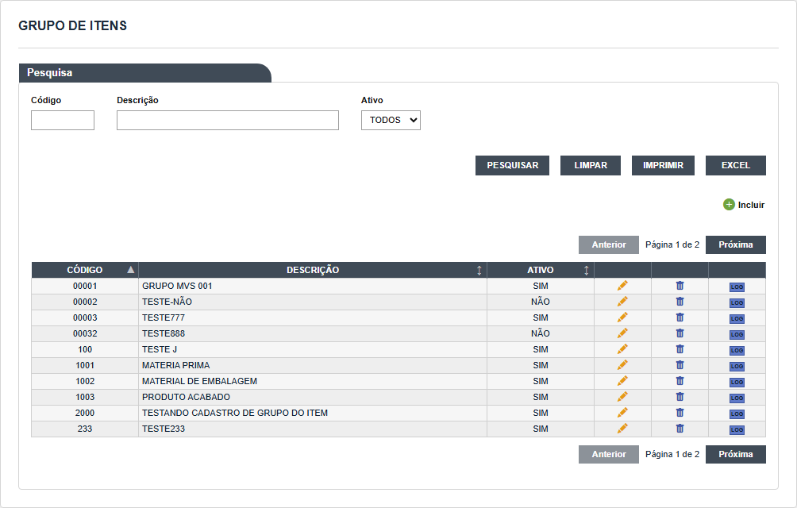
- Incluir. Clique em Incluir.
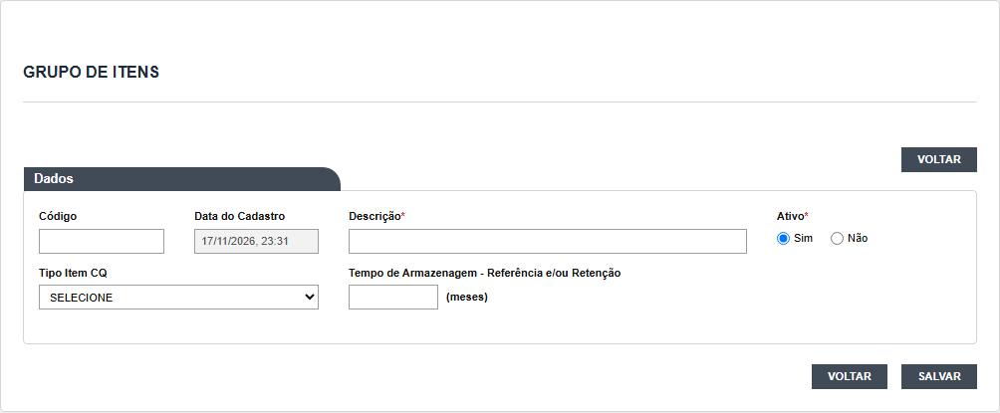
A imagem mostra Código (sem asterisco, opcional), Data do Cadastro (bloqueada), Descrição*, Ativo* (Sim marcado), a lista Tipo Item CQ ("SELECIONE" mais Matéria-Prima, Material Embalagem, Semi-Elaborado, Granel e Produto Acabado) e Tempo de Armazenagem - Referência e/ou Retenção com "(meses)".
- Salvar vazio (para conhecer a mensagem). Clique em SALVAR. A tela pergunta antes "Confirma a inclusão do registro?"; clique em SIM.
Depois do SIM:
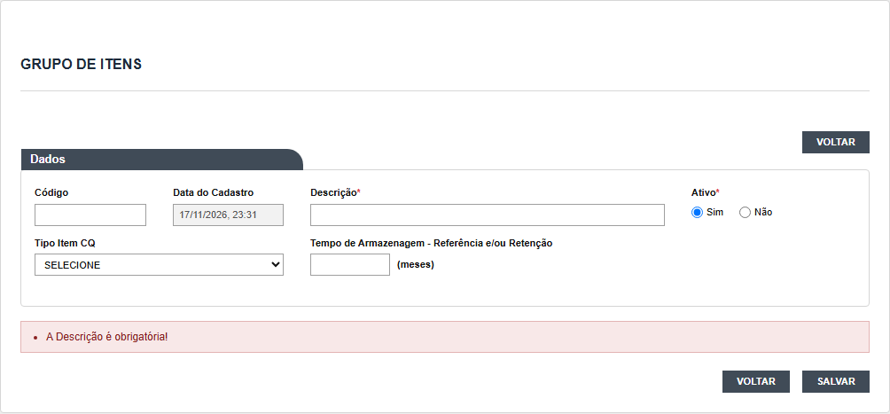
A imagem mostra a faixa vermelha com só "A Descrição é obrigatória!". A pergunta vem antes da conferência (DV-EST-N-027). Tipo Item CQ e Tempo de Armazenagem não são obrigatórios: o grupo só com a descrição foi gravado (imagem 48).
- Preencher. Digite a Descrição, escolha o Tipo Item CQ e digite o Tempo de Armazenagem (só números, até 4 dígitos). O código pode ficar em branco (o sistema gera) ou ser informado.
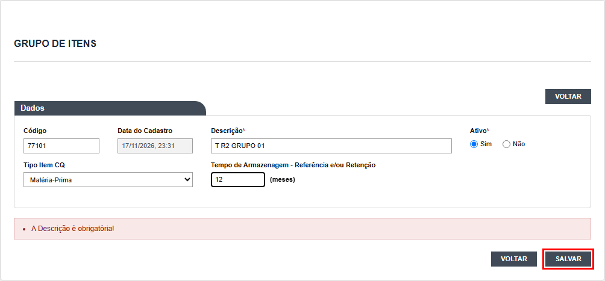
A imagem mostra o código 77101, a descrição "T R2 GRUPO 01", Tipo Item CQ "Matéria-Prima" e Tempo de Armazenagem 12 (meses), com SALVAR em destaque. Atenção: a descrição digitada "T. R2 GRUPO 01" foi gravada como "T R2 GRUPO 01", sem o ponto (DV-EST-N-009).
- Salvar e confirmar. Clique em SALVAR; a pergunta de confirmação traz os dados; clique em SIM.
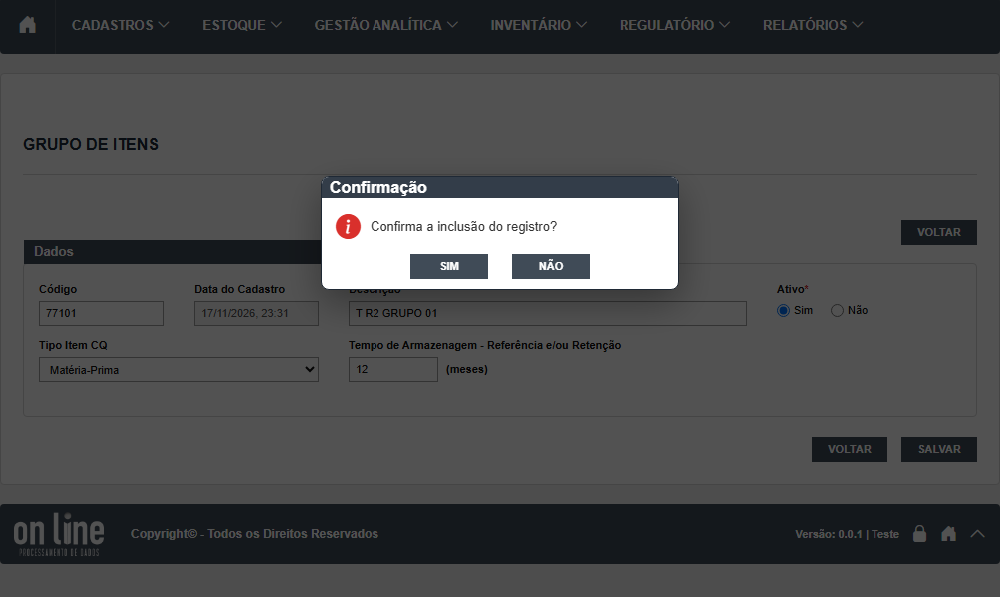
A segunda imagem mostra "Inclusão realizada com sucesso!". Ao clicar em OK a tela volta à pesquisa:
- Achar o registro. Pesquise pelo código, pela descrição ou pela situação. O filtro de código procura dentro do código: "7710" achou 77101, 77102, 77104 e 77105.
A segunda imagem mostra a linha 77101, "T R2 GRUPO 01", ATIVO = SIM. Outras pesquisas:
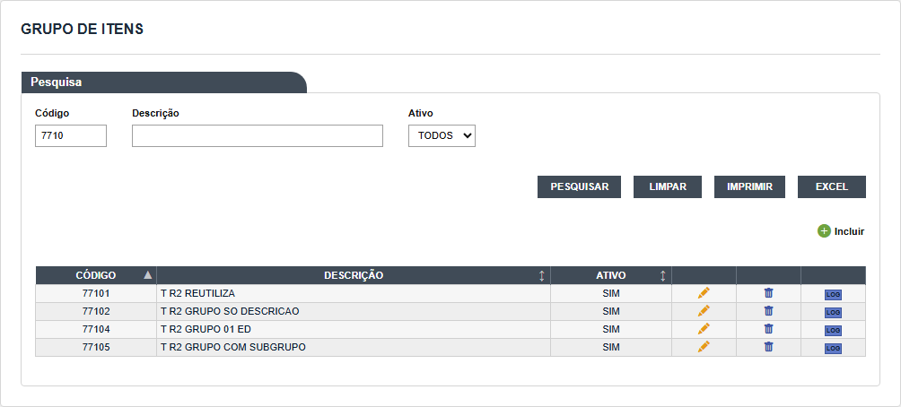
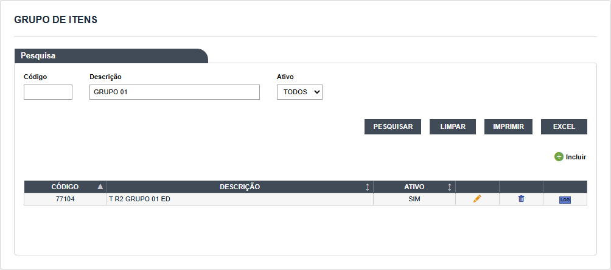
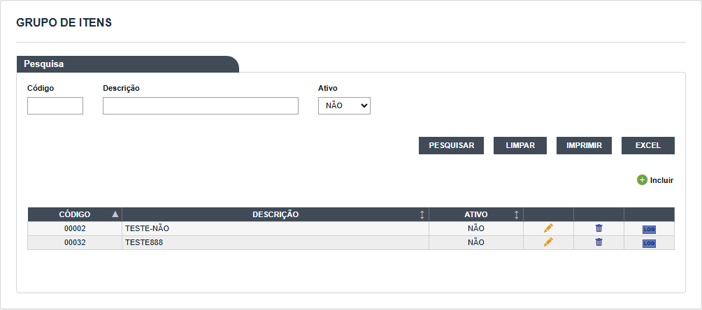
As imagens mostram o código parcial "7710" (quatro grupos), a descrição "GRUPO 01" (o 77104) e o filtro Ativo = NÃO (só os inativos 00002 e 00032). LIMPAR esvazia o filtro:

Com a lista inteira, o botão Próxima leva às páginas seguintes ("Página 1 de 3" com os registros de teste):
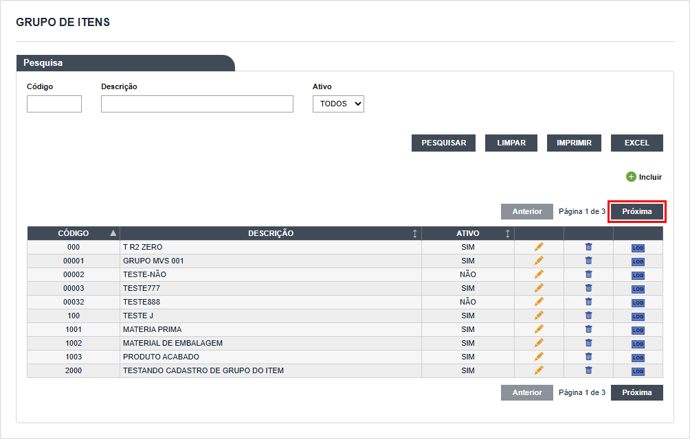
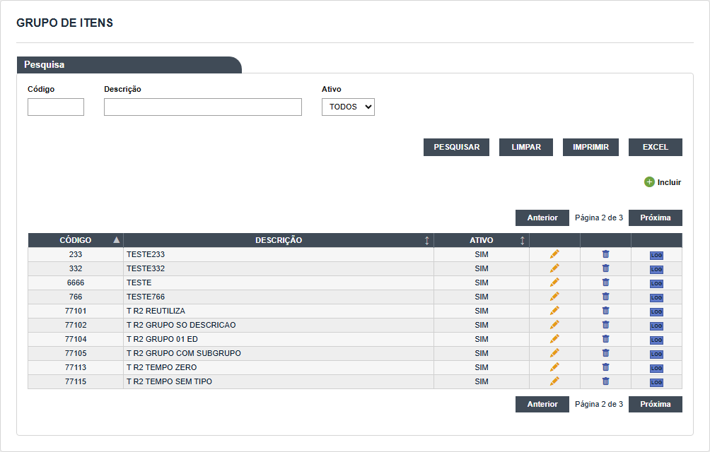
- Ver o histórico da inclusão. Clique em LOG.
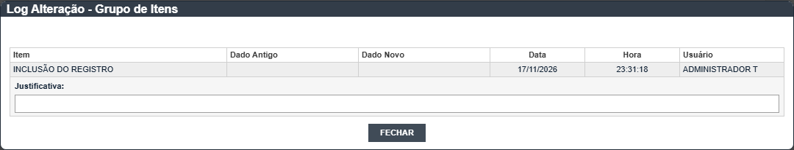
A imagem mostra "Log Alteração - Grupo de Itens" com as colunas Item, Dado Antigo, Dado Novo, Data, Hora e Usuário, a linha "INCLUSÃO DO REGISTRO" (sem valores) e o usuário "ADMINISTRADOR T".
- Alterar. Clique no lápis.
A imagem mostra o Código e a Data do Cadastro bloqueados; Descrição, Tipo Item CQ, Ativo e Tempo de Armazenagem podem ser mudados, e aparece o quadro Justificativa*. Clique em SALVAR: a tela pergunta "Confirma a alteração do registro?" e, sem justificativa, mostra depois do SIM "A justificativa é obrigatória!":
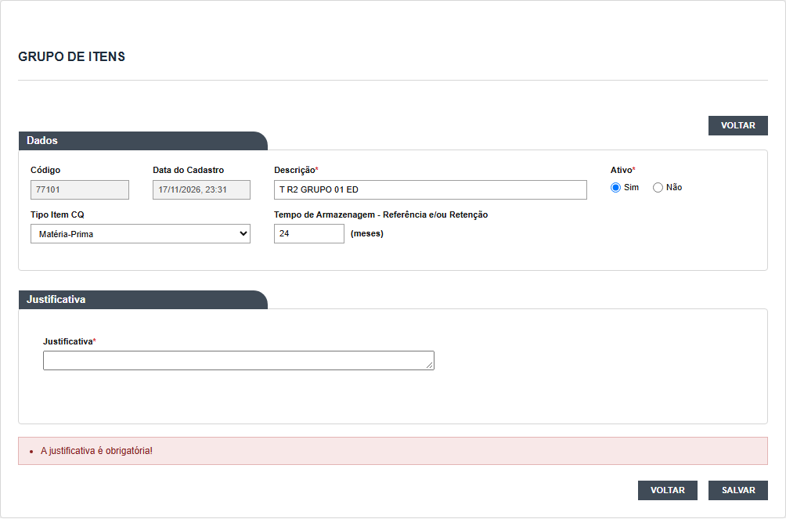
Informe a justificativa e salve:
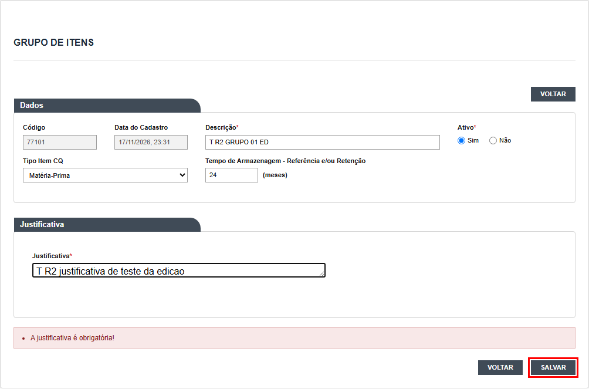
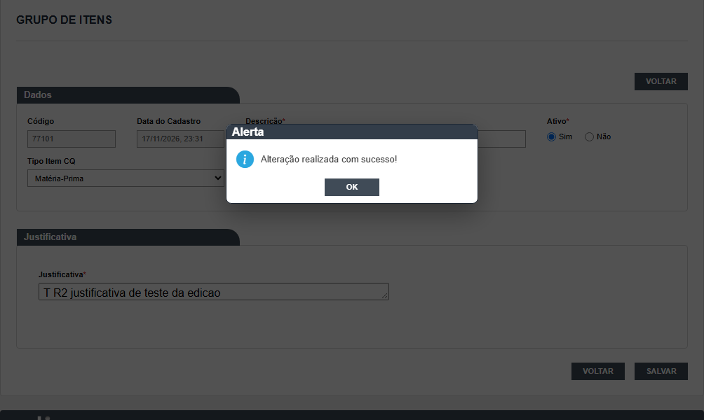
A última imagem mostra "Alteração realizada com sucesso!"; o OK leva de volta à pesquisa:

- Ver o histórico da alteração. Clique em LOG do registro alterado.
A imagem mostra só a linha "DESCRIÇÃO" (valor antigo "T R2 GRUPO 01", novo "T R2 GRUPO 01 ED"), com a justificativa em maiúsculas e sem acento. A mudança do Tempo de Armazenagem (12 para 24, feita junto) não aparece, embora tenha sido gravada (imagem 32 mostra o 24): não há rastro de quem mudou o prazo nem de quando (DV-EST-N-060).
- Inativar. No lápis, marque Ativo = Não, informe a justificativa e salve.
A segunda imagem mostra "Alteração realizada com sucesso!" (grupo sem subgrupo e sem Item). Na lista o registro aparece com ATIVO = NÃO:
Grupo com subgrupo: a inativação é bloqueada com a faixa "O registro possui associações. Inativação não permitida!":
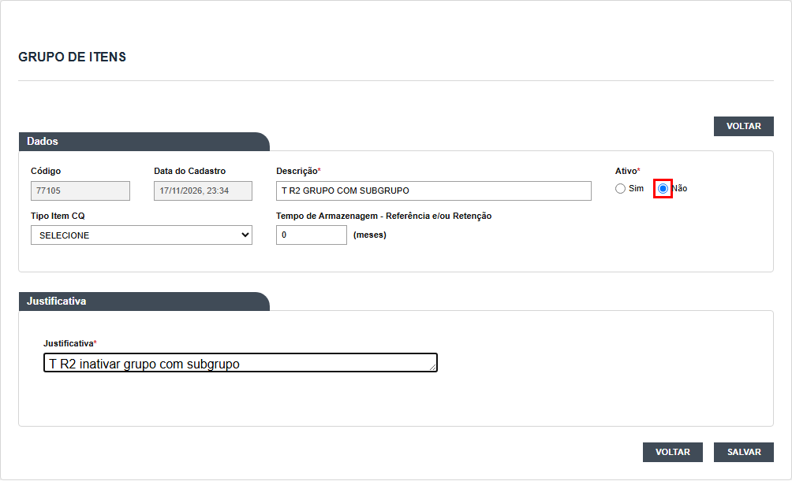
A segunda imagem mostra a faixa de recusa; o grupo continua ativo na lista:
Em uso por Item e por subgrupo (testado em 18/11/2026): o grupo 77104 estava em uso pelo Item 77301 ("T. R2 ITEM 01") e pelo subgrupo 77204. Inativar com justificativa foi bloqueado: "O registro possui associações. Inativação não permitida!". A mensagem não diz se o motivo é o Item ou o subgrupo.
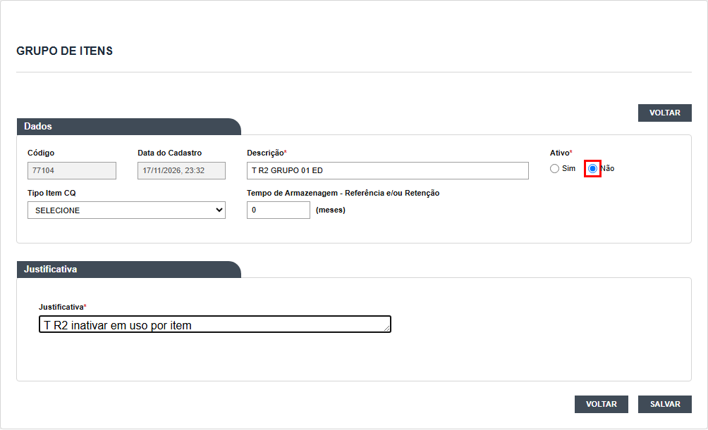
A imagem mostra Ativo = Não e a justificativa preenchida.
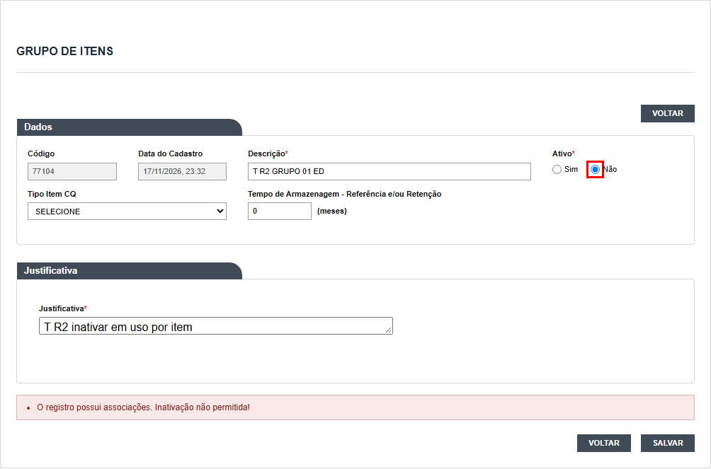
A imagem mostra a faixa "O registro possui associações. Inativação não permitida!"; o grupo continua ativo.
- Excluir. Clique na lixeira. Abre uma tela própria (não uma janela) com Código, Descrição e Justificativa.
Clique em EXCLUIR REGISTRO sem justificativa. A pergunta diz "Confirma a exclusão do item?" (a palavra é "item", e não "registro") e vem antes da conferência; depois do SIM aparece "A justificativa é obrigatória!":
Com a justificativa preenchida:
A última imagem mostra "Registro excluído com sucesso."; depois a lista não traz mais o registro:
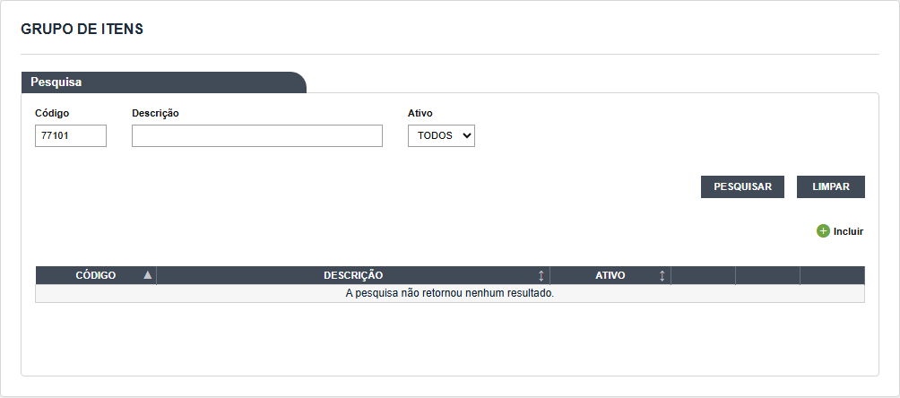
O código de um grupo excluído pode ser usado de novo (o 77101, excluído, foi aceito numa nova inclusão; no SJB o código excluído fica preso):
Grupo com subgrupo: a exclusão é bloqueada com a faixa "Exclusão inválida, existem referências com outras tabelas.":

Excluir o grupo em uso por Item (testado em 18/11/2026): bloqueado, com a faixa "Exclusão inválida, existem referências com outras tabelas." (a mensagem não diz qual cadastro usa o grupo).
A imagem mostra a tela de exclusão do 77104 com a justificativa preenchida.
A imagem mostra a faixa "Exclusão inválida, existem referências com outras tabelas."; o grupo continua na lista.
- Imprimir e Excel. IMPRIMIR abre o "RELATÓRIO DE GRUPO DE ITEM".
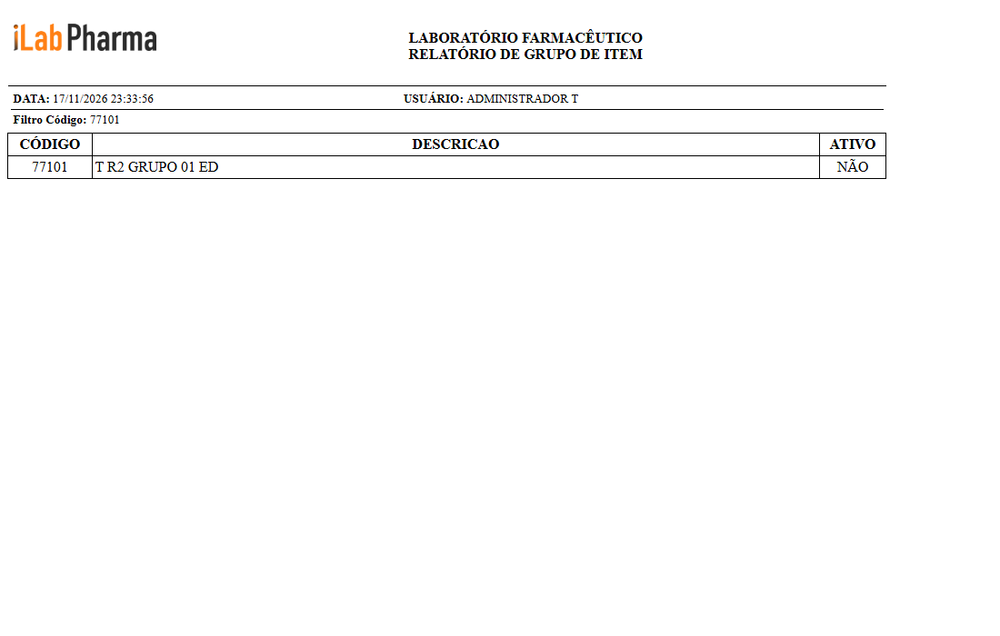
A imagem mostra o relatório com logo, data e hora, usuário, "Filtro Código: 77101" e as colunas CÓDIGO, DESCRICAO (sem til) e ATIVO; não traz o Tipo Item CQ nem o Tempo. EXCEL baixa um arquivo item_grupo_AAAAMMDD_hhmmss.csv, ou seja, CSV e não planilha Excel (ponto para validar com a área). Não há imagem do arquivo baixado.
O que acontece ao confirmar ou salvar
- Incluir: grava o grupo com data e usuário; o código é gerado se ficou em branco; o histórico recebe "INCLUSÃO DO REGISTRO".
- Alterar: exige justificativa; o histórico guarda código, descrição, ativo e tipo CQ. O Tempo de Armazenagem não entra no histórico (DV-EST-N-060).
- Inativar: aceito com justificativa se o grupo não tem subgrupo nem Item; com subgrupo ou Item é bloqueado ("O registro possui associações. Inativação não permitida!"; 18/11/2026).
- Excluir: exige justificativa; sem uso, é excluído (o código pode ser reutilizado); com subgrupo ou Item é bloqueado ("Exclusão inválida, existem referências com outras tabelas.").
- Tempo de Armazenagem e Tipo Item CQ: o efeito deles (data final de armazenagem no Regulatório; tipo de análise do CQ) não foi testado na versão nova.
O que o sistema recusa
| Situação | Mensagem exata | Observação |
|---|---|---|
| Salvar vazio (depois do SIM) | "A Descrição é obrigatória!" | Print 05 |
| Código repetido, de registro ativo (77101) ou inativo (00002) | "Esse código já está cadastrado." | Prints 20 e 21 (abaixo); a mensagem não cita o cadastro |
| Descrição acima do limite (41 caracteres; limite de 40 removido) | "Os dados informados são inválidos." | Não diz o campo (DV-EST-N-027); print 24 |
Tempo de Armazenagem com texto (ABC), decimal (1,5) ou negativo (-1) |
"O Tempo de Armazenagem deve conter apenas números!" | Prints 26, 27 e 30 |
| Tempo de Armazenagem com 5 dígitos (limite do navegador removido) | "O Tempo de Armazenagem deve conter apenas números!" | A mensagem engana: o motivo é passar do limite de 4 dígitos (DV-EST-N-027); print 28 |
| Alterar sem justificativa (depois do SIM) | "A justificativa é obrigatória!" | Print 14 |
| Excluir sem justificativa (depois do SIM) | "A justificativa é obrigatória!" | Print 37 |
| Inativar grupo com subgrupo ou Item | "O registro possui associações. Inativação não permitida!" | Prints 43 (subgrupo) e 61 (Item) |
| Excluir grupo com subgrupo ou Item | "Exclusão inválida, existem referências com outras tabelas." | Prints 46 (subgrupo) e 63 (Item); a mensagem não diz qual cadastro usa o grupo |
A imagem mostra o código 77101 recusado com "Esse código já está cadastrado."
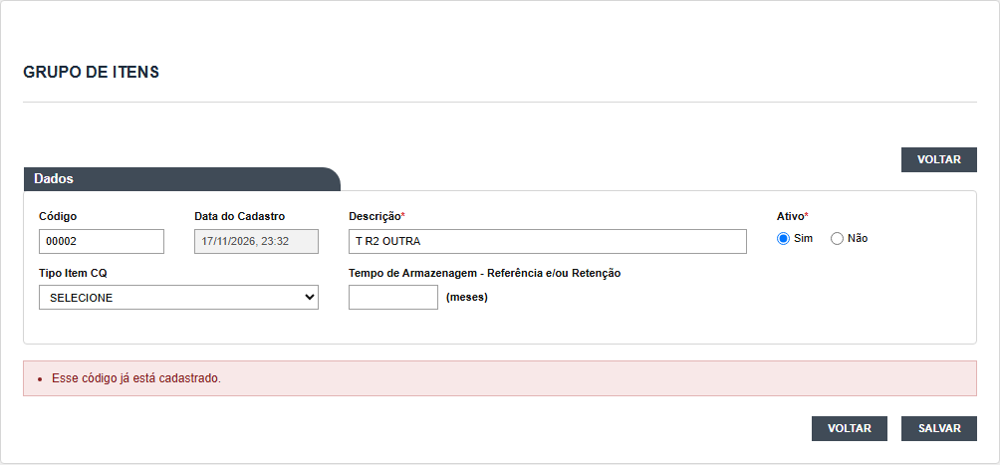
A imagem mostra a mesma mensagem para o código do grupo inativo 00002.
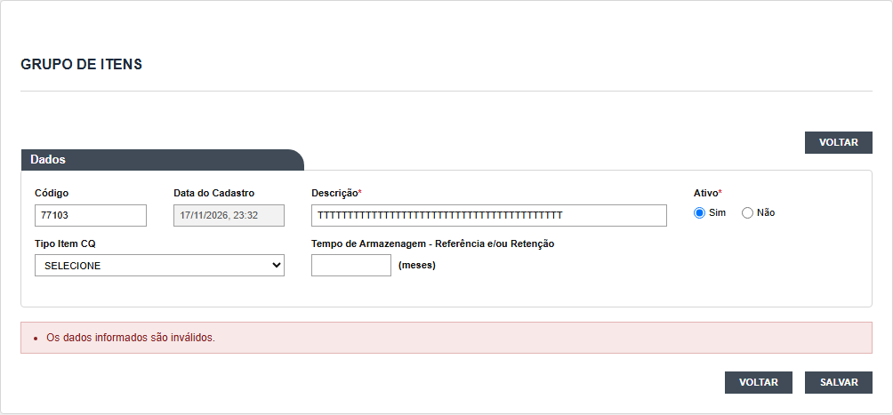
A imagem mostra a faixa "Os dados informados são inválidos." para a descrição de 41 caracteres.
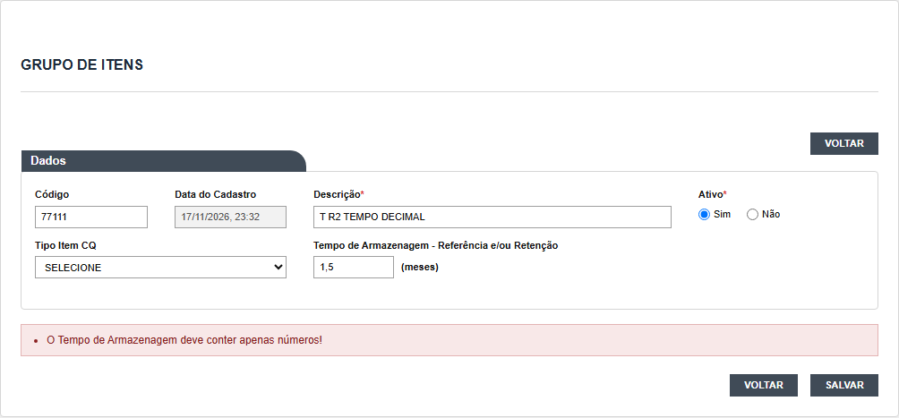
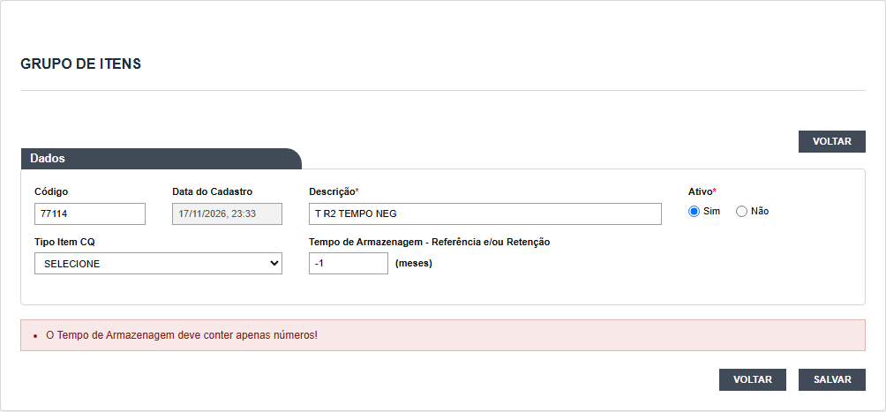
As quatro imagens mostram a mesma faixa "O Tempo de Armazenagem deve conter apenas números!" para ABC, 1,5, 12345 e -1.
O que o sistema aceita sem avisar: (1) descrição repetida (77104 gravado com a descrição do 77101; DV-EST-N-056):
(2) código com letras e código 000: o código AB foi gravado como AB e o 000 também (DV-EST-N-059; as outras telas descartam as letras):
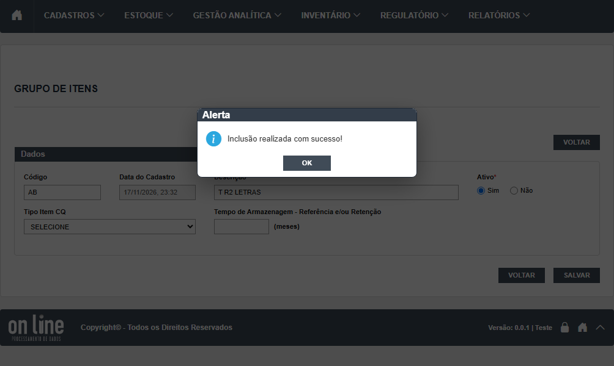
(3) Tempo de Armazenagem 0 e Tempo sem Tipo Item CQ (se zero meses de retenção faz sentido é ponto para validar com a Qualidade):
Quem pode usar (permissões)
Teste com perfil restrito (18/11/2026, rodada execucao/2026-11-18-perfil-restrito-estoque/): com três contas de teste (sem acesso, só consulta e só Incluir em Unidade de Medida), nenhuma conta que não seja administradora usou esta tela: o menu obedece ao perfil (consulta mostra a tela; sem acesso e "uma tela" não), mas a API recusa leitura e gravação com 403 (DV-EST-N-001, reteste de 19/11/2026: repete). A tela abre pela rota com a lista vazia, sem aviso de falta de permissão (DV-EST-N-054).
Resultado dos testes de 05 a 09/11/2026 (quem-pode.csv, execucao/2026-11-05-rodada-1/) e de 17/11/2026 (execucao/2026-11-17-manual-novo-estoque/):
| Perfil de teste | Abrir e pesquisar | Observação |
|---|---|---|
| Administrador (conta de perfil 1) | Permitido: a lista e o formulário carregam | Todas as ações do manual foram feitas com esta conta |
| Perfil "T. BA PERFIL ESTOQUE" (login T.BA20) | Abre a tela, mas a consulta é recusada sem aviso (17/11/2026): a tela abre, Incluir fica visível, e PESQUISAR mostra "A pesquisa não retornou nenhum resultado." sem mensagem de erro; os botões IMPRIMIR e EXCEL não aparecem | Em 09/11/2026 a tela mostrava "Não foi possível carregar os grupos de itens." (403); em 17/11/2026 essa mensagem não apareceu (DV-EST-N-054; relacionado ao DV-EST-N-001, Alta) |
As imagens mostram a tela aberta pelo perfil T.BA20 com Incluir visível e a pesquisa sem resultado e sem mensagem de acesso negado.
Na versão nova, só o administrador (perfil 1) usa o Estoque com sucesso (DV-EST-N-001). O que cada função do perfil libera não foi testado (ponto para validar); também não houve teste de perfis intermediários (por exemplo, só consulta) nesta tela.
Cuidados e falhas conhecidas
| Defeito | Gravidade | O que acontece, em linguagem de usuário | Último teste |
|---|---|---|---|
| DV-EST-N-060 | Alta | Mudar o Tempo de Armazenagem não deixa nenhuma linha no histórico (só a descrição aparece), embora o prazo mude de verdade. Evidência: prints 15, 19 e 32. O legado tinha o mesmo defeito (DV-EST-087) | 17/11/2026 |
| DV-EST-N-059 | Baixa | O código só com letras (AB) e o 000 são gravados sem aviso; outras telas descartam as letras. Evidência: prints 22, 23 e 49 |
17/11/2026 |
| DV-EST-N-056 | Baixa | Duas descrições iguais são aceitas; só o código distingue os grupos. Evidência: print 25 | 17/11/2026 |
| DV-EST-N-054 | Média | Perfil sem permissão vê a tela abrir, o Incluir visível e a lista "nenhum resultado" sem aviso de acesso negado. Evidência: prints 56 e 57 | 17/11/2026 |
| DV-EST-N-027 | Baixa | A pergunta de confirmação vem antes da conferência dos campos; o excesso de tamanho vira "Os dados informados são inválidos." sem dizer o campo; o Tempo com 5 dígitos recebe a mensagem "deve conter apenas números", que engana. Evidência: prints 04, 05, 24 e 28 | 17/11/2026 |
| DV-EST-N-009 | Média | O ponto da descrição é descartado em silêncio ("T. R2 GRUPO 01" vira "T R2 GRUPO 01"). Evidência: prints 06 e 11 | 17/11/2026 |
| DV-EST-N-026 | Média | Nesta tela a inativação com subgrupo ou Item é bloqueada (ao contrário de Unidade, Condição, Classe, Classificação, SJB, Nível e NCM, onde passa sem aviso). Evidência: prints 43 e 61 | 18/11/2026 |
| DV-EST-N-001 | Alta | Perfil com todas as funções do Estoque recebe 403 até para ler | 05/11/2026 |
Observações sem ficha: (1) a janela do LOG usa os títulos "Item / Dado Antigo / Dado Novo" (o SJB e o Motivo da Movimentação usam "Alteração / Valor Antigo / Valor Novo"); (2) o relatório impresso não traz o Tipo Item CQ nem o Tempo; (3) as duas mensagens de bloqueio com subgrupo ou Item (inativar e excluir) têm texto diferente e nenhuma diz qual cadastro usa o grupo.
Ícones e botões da lista
| Ícone ou botão | O que faz | Quando aparece |
|---|---|---|
| PESQUISAR | Lista os registros que batem com o filtro | Sempre |
| LIMPAR | Esvazia o filtro | Sempre |
| IMPRIMIR | Gera o "RELATÓRIO DE GRUPO DE ITEM" com o filtro usado (print 35) | Administrador; não aparece para o perfil T.BA20 (prints 56 e 57) |
| EXCEL | Baixa um arquivo CSV (item_grupo_AAAAMMDD_hhmmss.csv) |
Administrador; não aparece para o perfil T.BA20 |
| Incluir (ícone verde "+") | Abre o formulário vazio | Acima da lista (também para o perfil T.BA20) |
| Lápis (Editar) | Abre o registro para consultar ou alterar; não existe ícone separado de "visualizar" | Em cada linha |
| Lixeira (Excluir) | Abre a tela de exclusão com a justificativa | Em cada linha |
| LOG | Abre a janela do histórico do registro | Em cada linha |
| Anterior / Próxima | Mudam de página ("Página 1 de N"; 10 linhas por página) | Quando a lista passa de uma página |
Campos da tela
| Campo | Tipo | Tamanho | Obrigatório | Valores e regra | Observação |
|---|---|---|---|---|---|
| Pesquisa: Código | Texto | (não conferido) | Não | Procura dentro do código ("7710" achou 77101, 77102, 77104 e 77105) | Visto em 17/11/2026 |
| Pesquisa: Descrição | Texto | (não conferido) | Não | Procura dentro do texto ("GRUPO 01" achou o 77104) | Visto em 17/11/2026 |
| Pesquisa: Ativo | Lista | (não se aplica) | Não | TODOS, SIM, NÃO | Visto em 17/11/2026 |
| Código | Texto | Até 5 caracteres | Não | Vazio: o sistema gera. Letras (AB) e 000 são gravados; repetido, inclusive de inativo, é recusado |
Bloqueado na edição |
| Data do Cadastro | Texto bloqueado | (não se aplica) | Não se aplica | Data e hora da criação | |
| Descrição | Texto | Até 40 caracteres (41 dão "Os dados informados são inválidos.") | Sim (asterisco) | Grava em maiúsculas e sem o ponto; editável; descrição repetida é aceita | |
| Ativo | Sim / Não | (não se aplica) | Sim (asterisco) | Já vem Sim | Com subgrupo ou Item não deixa inativar |
| Tipo Item CQ | Lista | (não se aplica) | Não | SELECIONE, Matéria-Prima, Material Embalagem, Semi-Elaborado, Granel, Produto Acabado | Pode ficar em branco |
| Tempo de Armazenagem - Referência e/ou Retenção (meses) | Texto numérico | Até 4 dígitos | Não | Só números inteiros e positivos; 0 é aceito; sem Tipo Item CQ também grava | Mudança não vai para o histórico (DV-EST-N-060) |
| Justificativa | Texto | (legado: até 255) | Sim, ao alterar, inativar e excluir | Gravada no histórico em maiúsculas e sem acento |
Botões e ações
| Botão | O que faz | Observação |
|---|---|---|
| PESQUISAR / LIMPAR | Filtra / esvazia o filtro | |
| IMPRIMIR / EXCEL | Relatório da lista / arquivo CSV | Ver "Ícones e botões" |
| Incluir | Abre o formulário vazio | |
| SALVAR | Pergunta a confirmação e grava | A pergunta vem antes de conferir os obrigatórios (DV-EST-N-027) |
| VOLTAR | Volta à lista sem gravar | No alto e no pé do formulário |
| EXCLUIR REGISTRO | Exclui depois da justificativa e da confirmação | Na tela de exclusão (print 36) |
| Lápis, lixeira, LOG | Abrem o registro, a tela de exclusão e o histórico | |
| FECHAR | Fecha a janela do histórico |
Mensagens do sistema
| Mensagem | Quando aparece |
|---|---|
| Confirma a inclusão do registro? | Ao clicar SALVAR na inclusão |
| Confirma a alteração do registro? | Ao clicar SALVAR na alteração |
| Confirma a exclusão do item? | Ao clicar EXCLUIR REGISTRO |
| Inclusão realizada com sucesso! | Depois de gravar |
| Alteração realizada com sucesso! | Depois de alterar ou inativar |
| Registro excluído com sucesso. | Depois de excluir |
| A Descrição é obrigatória! | Descrição vazia |
| A justificativa é obrigatória! | Alterar ou excluir sem justificativa |
| Esse código já está cadastrado. | Código repetido (ativo ou inativo) |
| Os dados informados são inválidos. | Descrição acima do limite |
| O Tempo de Armazenagem deve conter apenas números! | Tempo com texto, decimal, negativo ou 5 dígitos |
| O registro possui associações. Inativação não permitida! | Inativar grupo com subgrupo ou Item |
| Exclusão inválida, existem referências com outras tabelas. | Excluir grupo com subgrupo ou Item |
| A pesquisa não retornou nenhum resultado. | Lista vazia (também para o perfil sem permissão, sem aviso de acesso negado) |
Diferenças em relação ao legado
| Ponto | Legado | Versão nova | Classe |
|---|---|---|---|
| Obrigatórios | Descrição e Situação | Descrição (Ativo já vem Sim); Tipo Item CQ e Tempo não são exigidos (imagem 48) | Igual |
| Texto da confirmação | "...do item?" | Inclusão e alteração: "...do registro?"; exclusão: "...do item?" | Diferença de texto |
| Inativar ou excluir grupo com subgrupo | Bloqueado (visto no legado em 22/10/2026) | Bloqueado nos dois casos, com os textos acima (18/11/2026) | Igual |
| Mudança do Tempo de Armazenagem no histórico | Não deixava rastro (DV-EST-087) | Continua sem rastro (DV-EST-N-060) | Igual |
| Pesquisa por código | Por igualdade (leitura do código do legado) | Procura dentro do código ("7710" achou quatro grupos) | A confirmar no legado (o texto anterior da versão nova dizia "por igualdade", e estava errado) |
| Código excluído | A conferir | Pode ser reutilizado (imagem 41) | A validar |
| Quem abre a tela | Qualquer um pelo endereço (DV-EST-008) | Perfil sem permissão abre a tela e a consulta é recusada sem aviso (DV-EST-N-054); só o administrador usa com sucesso (DV-EST-N-001) | Novo |
Prints que faltam
| Passo ou estado | O que mostrar | Por quê |
|---|---|---|
| Efeito do Tipo Item CQ no Controle da Qualidade | A análise aberta para o lote de um item do grupo | Não testado: exige o CQ |
| Efeito do Tempo de Armazenagem no Regulatório | A data final de armazenagem na Consulta de Disponibilidade | Não testado: exige o Regulatório |
| Código vazio gerando número | O código gerado na lista | Visto em rodadas antigas, não repetido em 17/11/2026 |
| Arquivo EXCEL aberto | O CSV baixado com as colunas | Só se confirmou o nome do arquivo; sem imagem do conteúdo |
| O que cada função do perfil libera | Perfis intermediários (por exemplo, só consulta) | Não testado: só o perfil 1 usa o Estoque (DV-EST-N-001) |
Pontos para validar com a área
- Se zero meses de Tempo de Armazenagem faz sentido e se o prazo deve ser exigido quando há Tipo Item CQ.
- Se o código do grupo pode ter letras e se um código excluído pode ser reutilizado (DV-EST-N-059).
- Se descrição repetida deve ser recusada (DV-EST-N-056).
- Texto padrão das mensagens: "Esse código já está cadastrado." (sem dizer o cadastro), pergunta "Confirma a exclusão do item?" e a mensagem do Tempo com 5 dígitos (DV-EST-N-027).
- O botão EXCEL entrega um arquivo CSV, e não uma planilha Excel.
- Perfil sem acesso: a tela abre e a lista vem vazia sem aviso (DV-EST-N-054).
\pagebreak
Subgrupo de Itens
Menu: Estoque > Cadastros · Situação do manual: Em ajuste (tela testada em 17/11/2026 e 18/11/2026, com 52 prints; parcial: falta o efeito da Diferença de Pesagem na pesagem, que exige a Produção, e a troca do grupo de um subgrupo que já tem Item)
Para que serve
Cadastra o segundo nível da classificação dos itens: cada subgrupo pertence a um grupo (tela Grupo de Itens). Guarda também a Diferença de Pesagem (%), a diferença aceita entre a quantidade pedida e a pesada, para os itens do subgrupo. O efeito dela na pesagem não foi testado na versão nova (exige a Produção; no legado vinha do código; ponto para validar).
Quem usa e em que etapa do processo
- Quem usa: quem mantém a estrutura de cadastro do Estoque, depois do grupo e antes do item (a confirmar com a área). Na versão nova só o administrador usa a tela com sucesso (ver "Quem pode usar").
- De onde o trabalho chega: do cadastro Grupo de Itens (o campo Grupo é obrigatório e oferece só os grupos ativos: os inativos 00002 e 00032 não aparecem na lista).
- Para onde o trabalho segue: o subgrupo é escolhido no Item (conferido em 18/11/2026: o Item 77301 foi gravado com o subgrupo 77204). Um subgrupo em uso por Item não pode ser inativado nem excluído (mensagens abaixo).
Antes de começar (o que precisa existir)
| O que precisa existir | Para quê | Onde se cadastra |
|---|---|---|
| Grupo de Itens cadastrado e ativo | O subgrupo exige um grupo | Cadastros > Grupo de Itens |
| Descrição do subgrupo | Campo obrigatório | Decisão da área |
| Percentual de pesagem (opcional) | Campo Diferença de Pesagem (%) | Decisão da área |
| Conta de administrador e sessão ativa | Só o administrador usa o Estoque com sucesso na versão nova; a sessão cai em cerca de 10 minutos | Administração > Perfil; novo login |
Passo a passo
- Abrir a tela. No menu Cadastros, clique em Subgrupo de Itens. Aparece o filtro (Código, Descrição, Grupo, Ativo), os botões PESQUISAR e LIMPAR e o link Incluir.
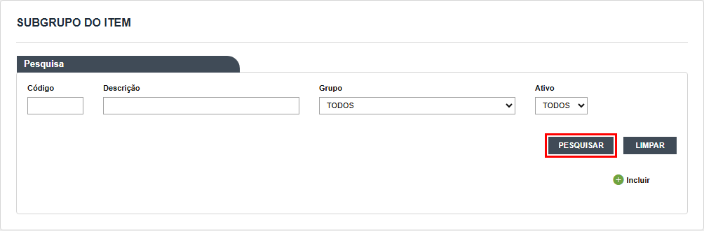
Clicando em PESQUISAR a lista mostra 10 linhas por página ("Página 1 de 4" na primeira carga), com as colunas CÓDIGO, DESCRIÇÃO, GRUPO e ATIVO, e passam a aparecer IMPRIMIR e EXCEL:
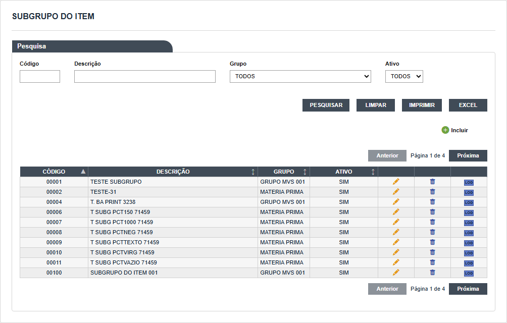
- Incluir. Clique em Incluir.
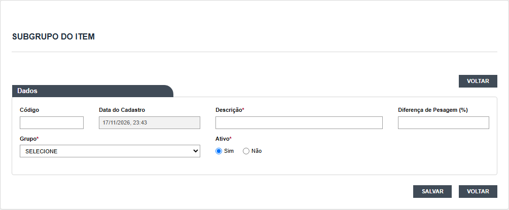
A imagem mostra Código, Data do Cadastro (bloqueada), Descrição*, Diferença de Pesagem (%), Grupo* ("SELECIONE") e Ativo* (Sim marcado). Neste formulário SALVAR vem antes de VOLTAR no pé.
- Salvar vazio (para conhecer a mensagem). Clique em SALVAR. Nesta tela não há pergunta de confirmação antes: a faixa vermelha aparece direto, com "A Descrição é obrigatória!" e "O Grupo do Item é obrigatório." (nas outras telas a pergunta vem antes).
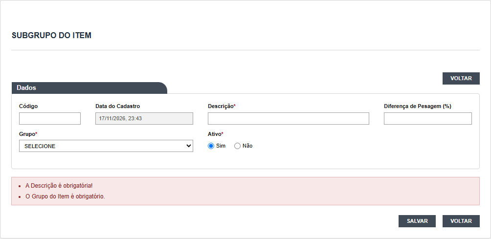
Com a descrição preenchida e o grupo não escolhido, a faixa diz só "O Grupo do Item é obrigatório.":
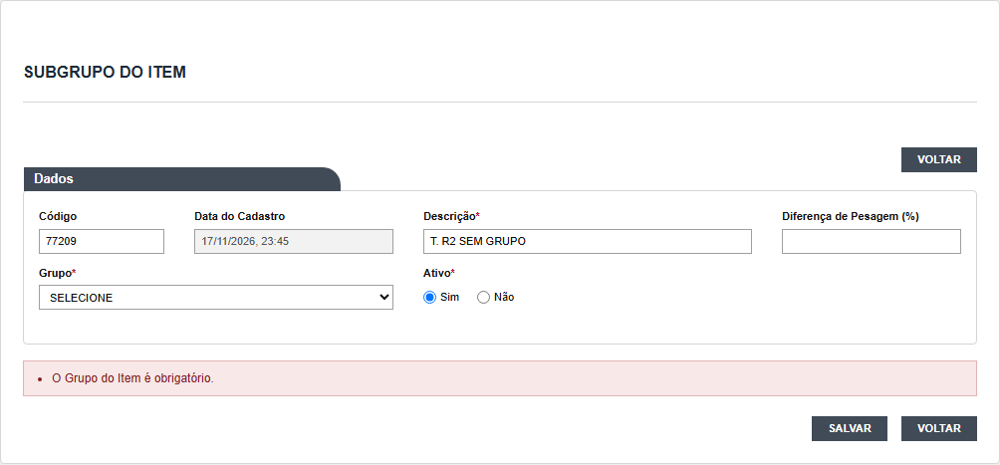
- Preencher. Digite a Descrição, a Diferença de Pesagem (%) (opcional) e escolha o Grupo. O código pode ficar em branco (o sistema gera) ou ser informado.
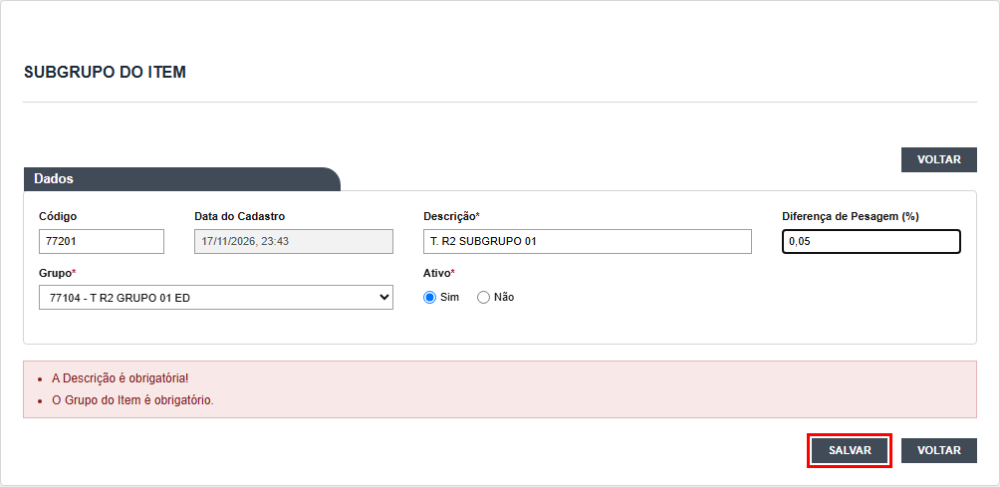
A imagem mostra o código 77201, a descrição "T. R2 SUBGRUPO 01" (o ponto é mantido; no Grupo de Itens ele é descartado), Diferença de Pesagem 0,05 e o grupo "77104 - T R2 GRUPO 01 ED". A faixa vermelha do passo anterior continua na tela até a próxima gravação (ponto para validar).
- Salvar e confirmar. Clique em SALVAR; a pergunta de confirmação traz os dados; clique em SIM.
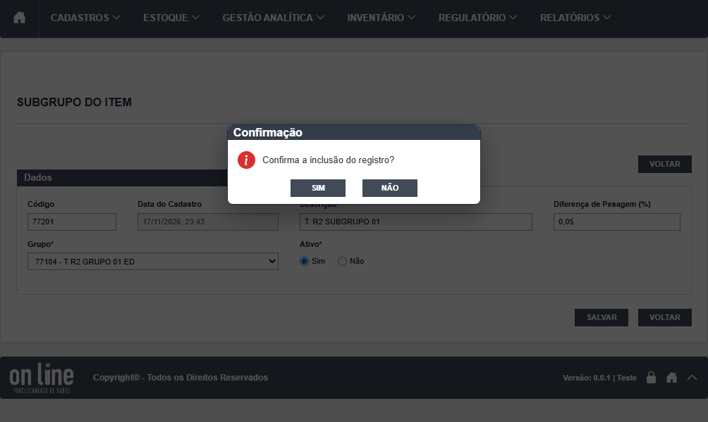
A segunda imagem mostra "Inclusão realizada com sucesso!". Ao clicar em OK a tela volta à pesquisa:
- Achar o registro. Pesquise pelo código completo (o filtro de código procura o valor exato: "7720" não achou 77202, 77204 etc.), pela descrição, pelo grupo ou pela situação.
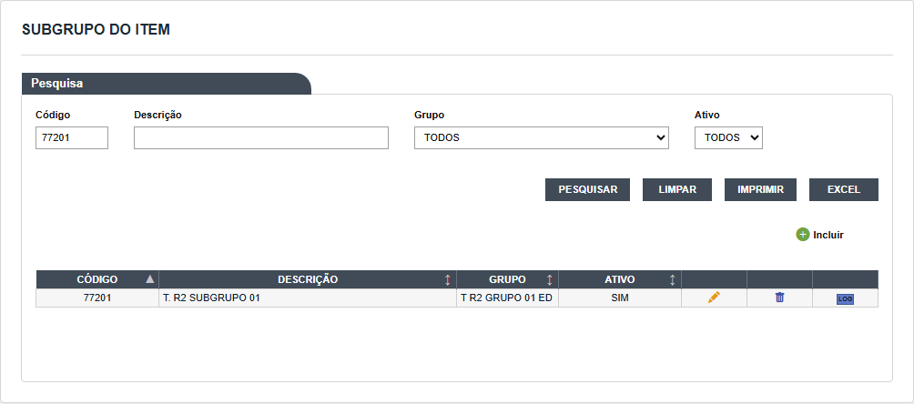
A segunda imagem mostra a linha 77201, "T R2 SUBGRUPO 01", grupo "T R2 GRUPO 01 ED", ATIVO = SIM. Outras pesquisas:
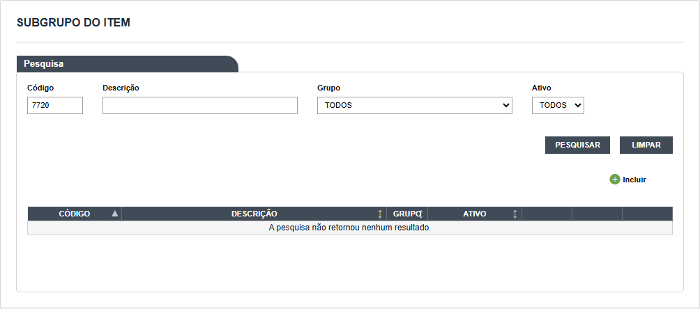
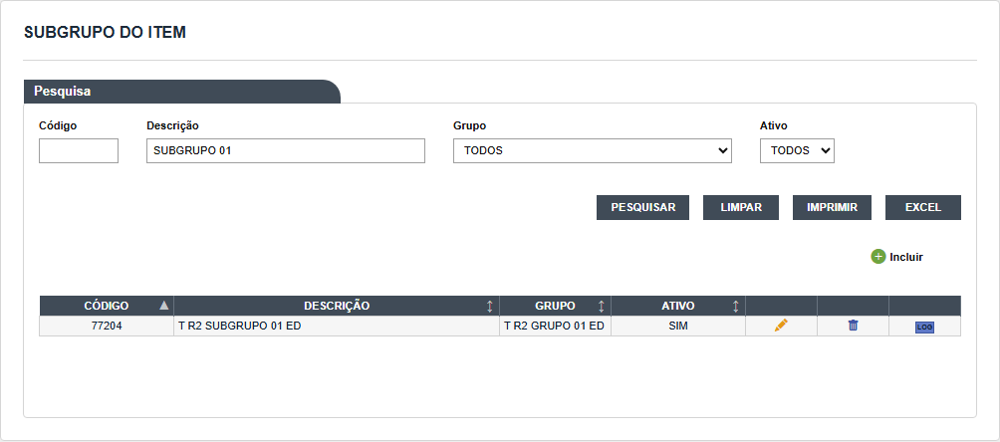
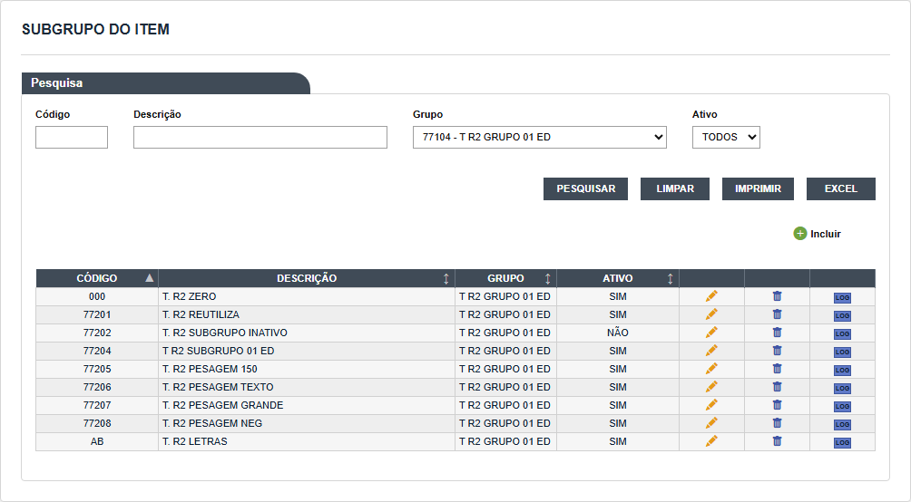
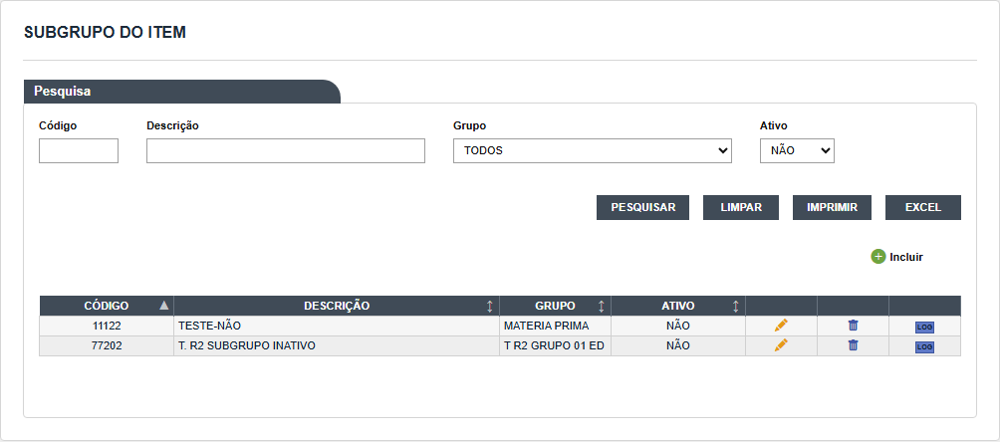
As imagens mostram o código parcial sem resultado, a descrição "SUBGRUPO 01" (o 77204), o filtro por grupo (77104) e o filtro Ativo = NÃO (11122 e 77202). LIMPAR esvazia o filtro:
Com a lista inteira, o botão Próxima leva às páginas seguintes ("Página 1 de 5" com os registros de teste); descrições compridas quebram a linha:
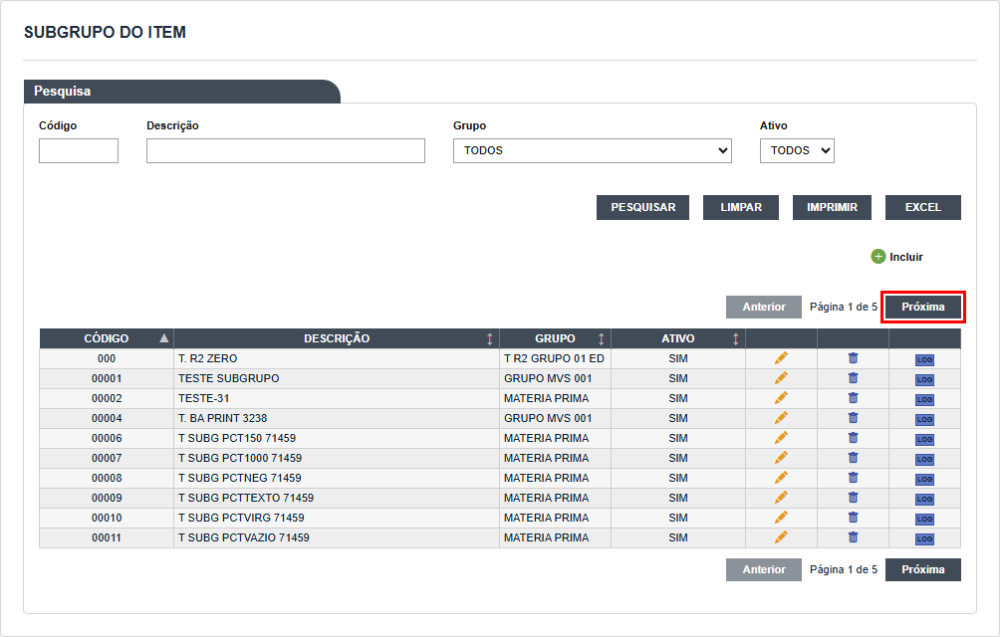
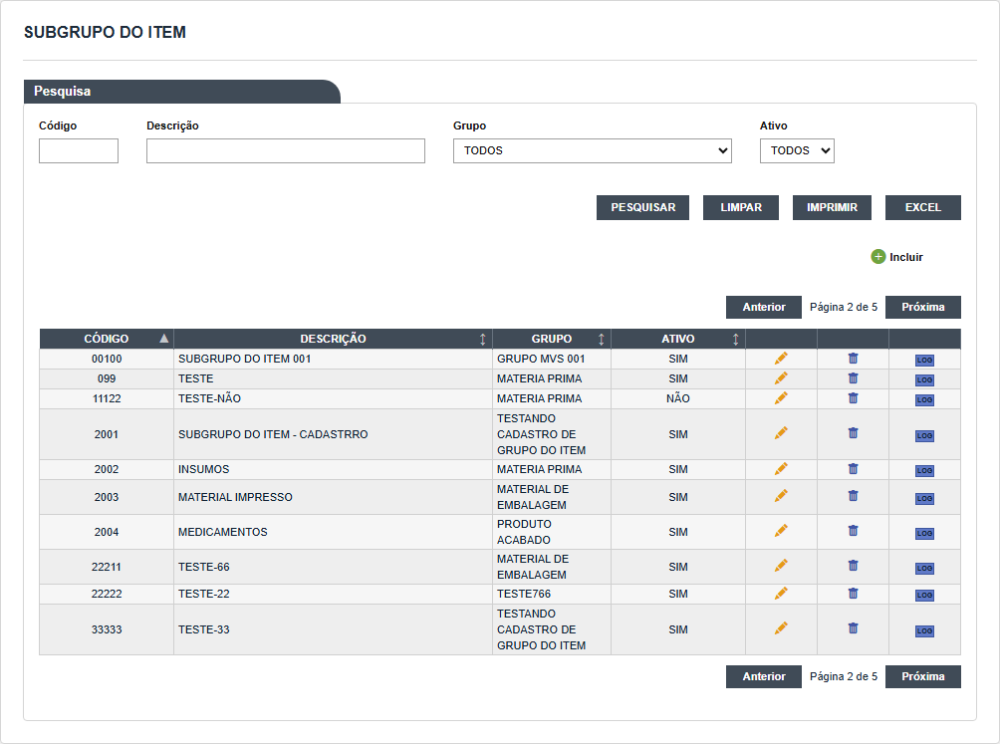
- Ver o histórico da inclusão. Clique em LOG.
A imagem mostra "Log Alteração - Subgrupo do Item" com as colunas Item, Dado Antigo, Dado Novo, Data, Hora e Usuário, a linha "INCLUSÃO DO REGISTRO" (sem valores) e o usuário "ADMINISTRADOR T".
- Alterar. Clique no lápis.
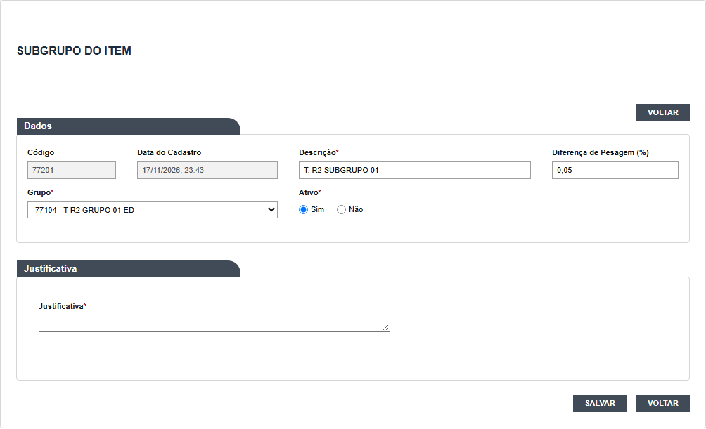
A imagem mostra o Código e a Data do Cadastro bloqueados; Descrição, Diferença de Pesagem (%), Grupo e Ativo podem ser mudados, e aparece o quadro Justificativa*. Clique em SALVAR sem justificativa: nesta tela não há pergunta antes, a faixa "A justificativa é obrigatória!" aparece direto (nas outras telas a pergunta "Confirma a alteração do registro?" vem primeiro):
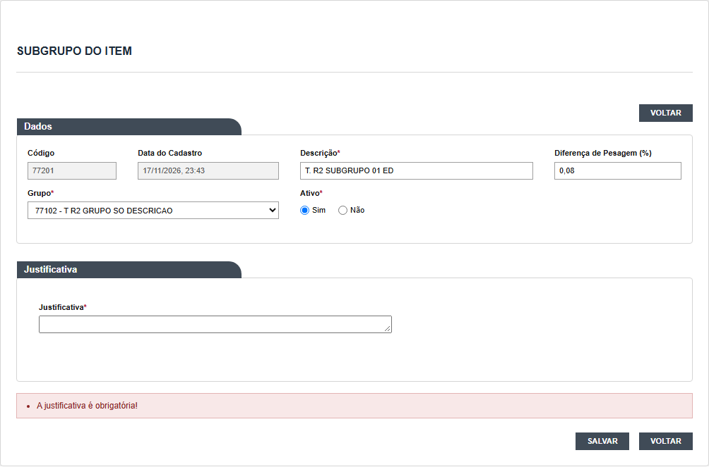
Informe a justificativa e salve; agora vem a pergunta "Confirma a alteração do registro?":
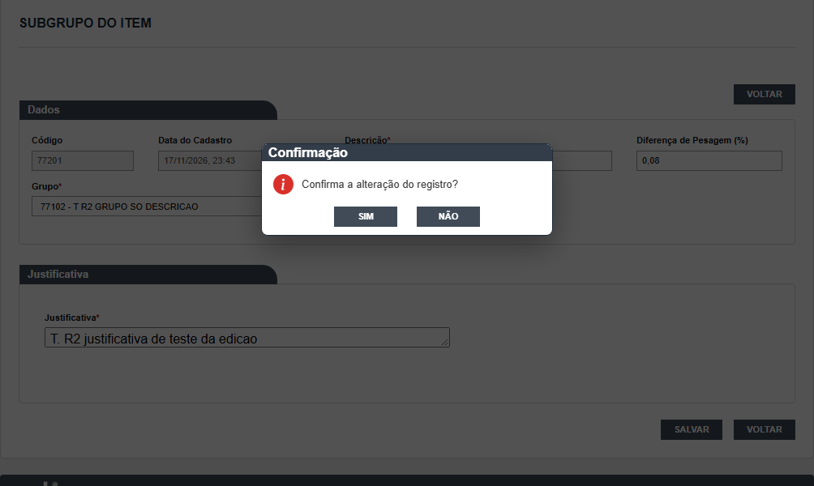
A última imagem mostra "Alteração realizada com sucesso!"; o OK leva de volta à pesquisa:

- Ver o histórico da alteração. Clique em LOG do registro alterado.
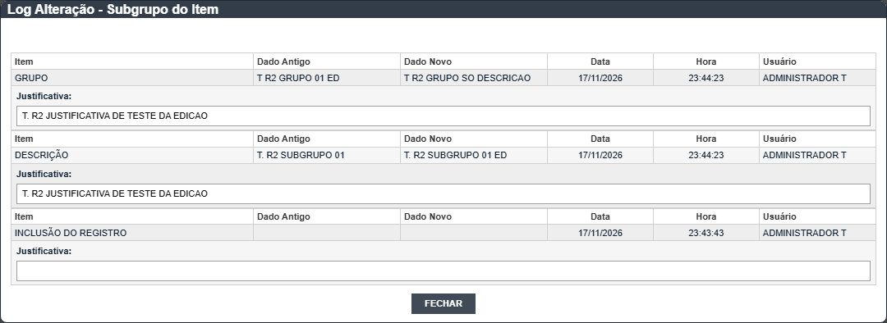
A imagem mostra as linhas "GRUPO" (valor antigo "T R2 GRUPO 01 ED", novo "T R2 GRUPO SO DESCRICAO") e "DESCRIÇÃO" (de "T R2 SUBGRUPO 01" para "T R2 SUBGRUPO 01 ED"), com a justificativa em maiúsculas e sem acento. A mudança da Diferença de Pesagem (0,05 para 0,08, feita junto) não aparece, embora tenha sido gravada (a imagem 32 mostra 0,08): não há rastro de quem mudou o percentual nem de quando (DV-EST-N-060). A troca do grupo é registrada.
- Diferença de Pesagem (%). O campo tem uma máscara de duas casas e não tem limite: digitar 150 grava 1,50; "-5" grava 0,05 (o sinal some); texto ("abc") some e a inclusão é aceita sem percentual; 22 dígitos (limite do navegador removido) gravam 1234567890123,45. Em todos os casos a tela responde "Inclusão realizada com sucesso!" (DV-EST-N-022 e DV-EST-N-061):
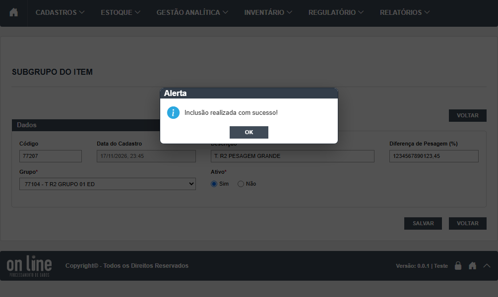
- Inativar. No lápis, marque Ativo = Não, informe a justificativa e salve.
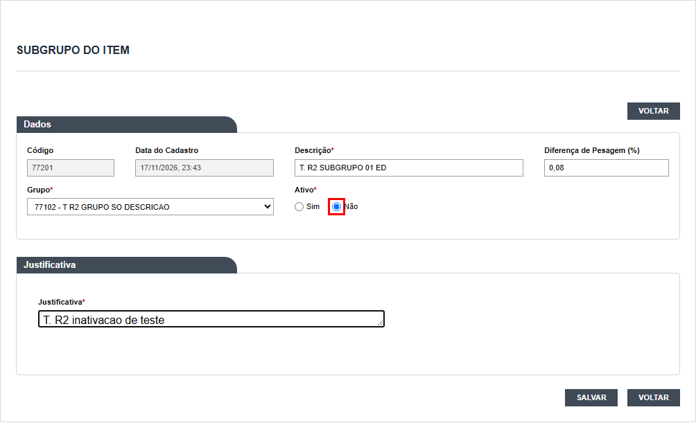
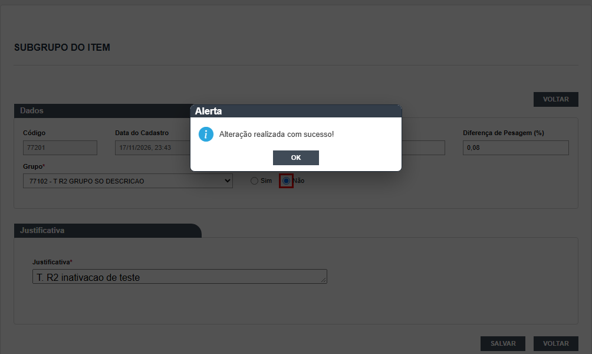
A segunda imagem mostra "Alteração realizada com sucesso!" (subgrupo sem Item). Na lista o registro aparece com ATIVO = NÃO:
Em uso por Item (testado em 18/11/2026): o subgrupo 77204 estava em uso pelo Item 77301 ("T. R2 ITEM 01"). Inativar com justificativa foi bloqueado: "O registro possui associações. Inativação não permitida!". A mensagem não diz qual cadastro usa o subgrupo.
A imagem mostra Ativo = Não e a justificativa preenchida.
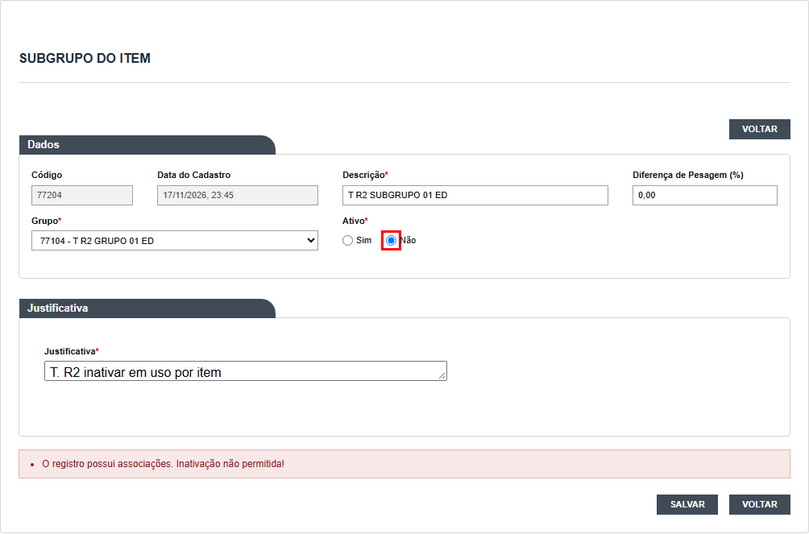
A imagem mostra a faixa "O registro possui associações. Inativação não permitida!"; o subgrupo continua ativo.
- Excluir. Clique na lixeira. Abre uma tela própria (não uma janela) com Código, Descrição e Justificativa.
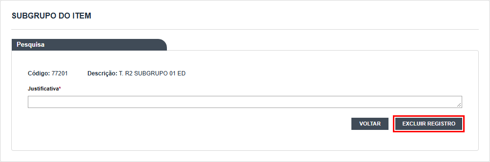
Clique em EXCLUIR REGISTRO sem justificativa. A pergunta diz "Confirma a exclusão do item?" (a palavra é "item", e não "registro") e vem antes da conferência; depois do SIM aparece "A justificativa é obrigatória!":
Com a justificativa preenchida:
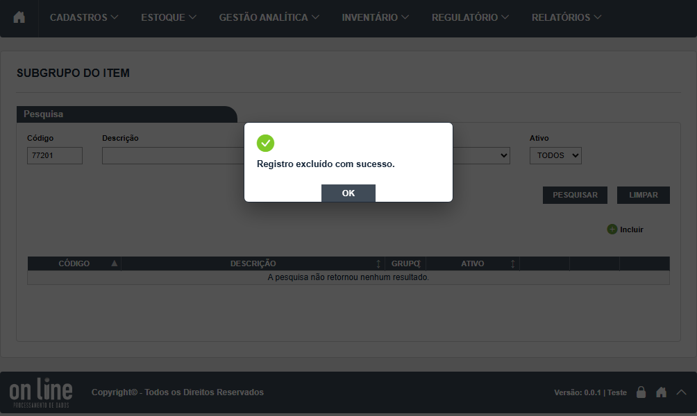
A última imagem mostra "Registro excluído com sucesso."; depois a lista não traz mais o registro:
O código de um subgrupo excluído pode ser usado de novo (o 77201, excluído, foi aceito numa nova inclusão):
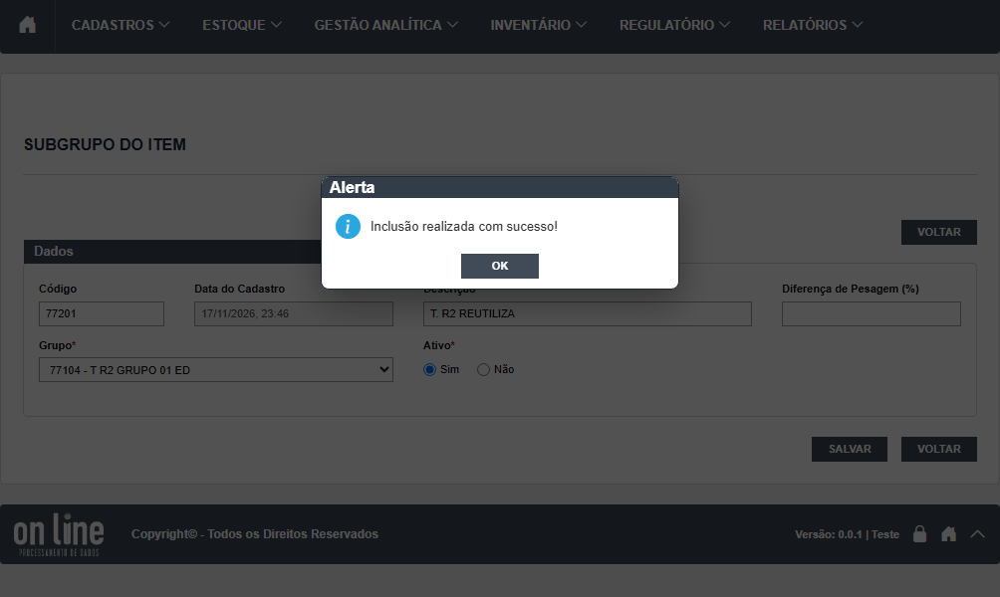
Excluir o subgrupo em uso por Item (testado em 18/11/2026): bloqueado, com a faixa "Exclusão inválida, existem referências com outras tabelas." (a mensagem não diz qual cadastro usa o subgrupo).
A imagem mostra a tela de exclusão do 77204 com a justificativa preenchida.
A imagem mostra a faixa "Exclusão inválida, existem referências com outras tabelas."; o subgrupo continua na lista.
- Imprimir e Excel. IMPRIMIR abre o "RELATÓRIO DE SUBGRUPO DO ITEM".
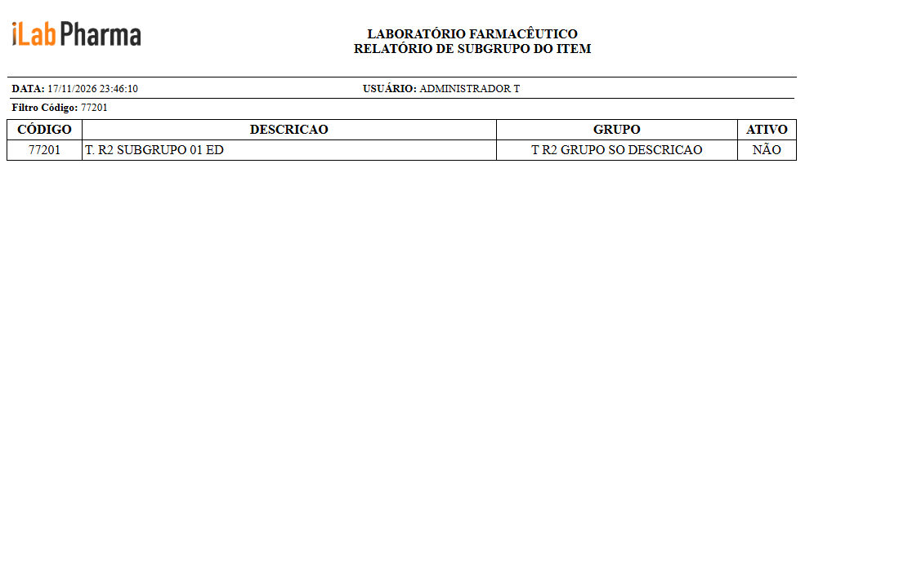
A imagem mostra o relatório com logo, data e hora, usuário, "Filtro Código: 77201" e as colunas CÓDIGO, DESCRICAO (sem til), GRUPO e ATIVO; não traz a Diferença de Pesagem. EXCEL baixa um arquivo item_subgrupo_AAAAMMDD_hhmmss.csv, ou seja, CSV e não planilha Excel (ponto para validar com a área). Não há imagem do arquivo baixado.
O que acontece ao confirmar ou salvar
- Incluir: grava o subgrupo com grupo, percentual, data e usuário; o código é gerado se ficou em branco; o histórico recebe "INCLUSÃO DO REGISTRO".
- Alterar: exige justificativa; o histórico guarda o grupo e a descrição (e o ativo). A Diferença de Pesagem não entra no histórico (DV-EST-N-060). A troca do grupo é aceita sem aviso e fica no histórico; a troca do grupo de um subgrupo que já tem Item não foi testada.
- Inativar: aceito com justificativa se o subgrupo não tem Item; em uso por Item é bloqueado ("O registro possui associações. Inativação não permitida!"; 18/11/2026).
- Excluir: exige justificativa; sem uso, é excluído (o código pode ser reutilizado); em uso por Item é bloqueado ("Exclusão inválida, existem referências com outras tabelas.").
O que o sistema recusa
| Situação | Mensagem exata | Observação |
|---|---|---|
| Salvar vazio | "A Descrição é obrigatória!" e "O Grupo do Item é obrigatório." | Sem pergunta antes; print 05 |
| Grupo não escolhido | "O Grupo do Item é obrigatório." | Print 30 |
| Código repetido, de registro ativo (77201) ou inativo (77202) | "Esse código já está cadastrado." | Prints 20 e 21 (abaixo); a mensagem não cita o cadastro |
| Descrição acima do limite (41 caracteres; limite de 40 removido) | "Os dados informados são inválidos." | Não diz o campo (DV-EST-N-027); print 24 |
| Alterar sem justificativa | "A justificativa é obrigatória!" | Sem pergunta antes; print 14 |
| Excluir sem justificativa (depois do SIM) | "A justificativa é obrigatória!" | Print 37 |
| Inativar subgrupo em uso por Item | "O registro possui associações. Inativação não permitida!" | Conferido em 18/11/2026 (subgrupo 77204 em uso pelo Item 77301); print 61 |
| Excluir subgrupo em uso por Item | "Exclusão inválida, existem referências com outras tabelas." | Conferido em 18/11/2026; print 63; a mensagem não diz qual cadastro usa o subgrupo |
A imagem mostra o código 77201 recusado com "Esse código já está cadastrado."
A imagem mostra a mesma mensagem para o código do subgrupo inativo 77202.
A imagem mostra a faixa "Os dados informados são inválidos." para a descrição de 41 caracteres.
O que o sistema aceita sem avisar: (1) descrição repetida (77204 gravado com a descrição do 77201; DV-EST-N-056):
(2) código com letras e código 000: o código AB foi gravado como AB e o 000 também (DV-EST-N-059; as outras telas descartam as letras):
(3) Diferença de Pesagem sem limite (passo 10; DV-EST-N-061).
Quem pode usar (permissões)
Teste com perfil restrito (18/11/2026, rodada execucao/2026-11-18-perfil-restrito-estoque/): com três contas de teste (sem acesso, só consulta e só Incluir em Unidade de Medida), nenhuma conta que não seja administradora usou esta tela: o menu obedece ao perfil (consulta mostra a tela; sem acesso e "uma tela" não), mas a API recusa leitura e gravação com 403 (DV-EST-N-001, reteste de 19/11/2026: repete). A tela abre pela rota com a lista vazia, sem aviso de falta de permissão (DV-EST-N-054).
Resultado dos testes de 05 a 09/11/2026 (quem-pode.csv, execucao/2026-11-05-rodada-1/) e de 17/11/2026 (execucao/2026-11-17-manual-novo-estoque/):
| Perfil de teste | Abrir e pesquisar | Observação |
|---|---|---|
| Administrador (conta de perfil 1) | Permitido: a lista e o formulário carregam | Todas as ações do manual foram feitas com esta conta |
| Perfil "T. BA PERFIL ESTOQUE" (login T.BA20) | Abre a tela, mas a consulta é recusada sem aviso (17/11/2026): a tela abre, Incluir fica visível, e PESQUISAR mostra "A pesquisa não retornou nenhum resultado." sem mensagem de erro; os botões IMPRIMIR e EXCEL não aparecem | Em 09/11/2026 a tela mostrava "Não foi possível carregar os subgrupos do item." (403); em 17/11/2026 essa mensagem não apareceu (DV-EST-N-054; relacionado ao DV-EST-N-001, Alta) |
As imagens mostram a tela aberta pelo perfil T.BA20 com Incluir visível e a pesquisa sem resultado e sem mensagem de acesso negado.
Na versão nova, só o administrador (perfil 1) usa o Estoque com sucesso (DV-EST-N-001). O que cada função do perfil libera não foi testado (ponto para validar); também não houve teste de perfis intermediários (por exemplo, só consulta) nesta tela.
Cuidados e falhas conhecidas
| Defeito | Gravidade | O que acontece, em linguagem de usuário | Último teste |
|---|---|---|---|
| DV-EST-N-060 | Alta | Mudar a Diferença de Pesagem não deixa nenhuma linha no histórico (só grupo e descrição aparecem), embora o percentual mude de verdade. Evidência: prints 15, 19 e 32. O legado tinha o mesmo defeito (DV-EST-090) | 17/11/2026 |
| DV-EST-N-061 | Média | A Diferença de Pesagem (%) aceita qualquer valor: 22 dígitos viram 1234567890123,45 e texto vira "sem percentual", sem aviso. Evidência: prints 26, 27, 28 e 29. O legado também não tinha limite (DV-EST-089) | 17/11/2026 |
| DV-EST-N-022 | Média | A máscara do percentual desloca a vírgula: 5 vira 0,05, 150 vira 1,50, "-5" vira 0,05. Quem digita 5 % grava 0,05 %. Evidência: prints 06, 26 e 29 | 17/11/2026 |
| DV-EST-N-059 | Baixa | O código só com letras (AB) e o 000 são gravados sem aviso; outras telas descartam as letras. Evidência: prints 22 e 23 |
17/11/2026 |
| DV-EST-N-056 | Baixa | Duas descrições iguais são aceitas sob o mesmo grupo; só o código distingue os subgrupos. Evidência: print 25 | 17/11/2026 |
| DV-EST-N-054 | Média | Perfil sem permissão vê a tela abrir, o Incluir visível e a lista "nenhum resultado" sem aviso de acesso negado. Evidência: prints 56 e 57 | 17/11/2026 |
| DV-EST-N-027 | Baixa | O excesso de tamanho vira "Os dados informados são inválidos." sem dizer o campo; salvar vazio e alterar sem justificativa não pedem confirmação antes (diferente das outras telas). Evidência: prints 05, 14 e 24 | 17/11/2026 |
| DV-EST-N-001 | Alta | Perfil com todas as funções do Estoque recebe 403 até para ler | 05/11/2026 |
Observações sem ficha: (1) a janela do LOG usa os títulos "Item / Dado Antigo / Dado Novo" (o SJB e o Motivo da Movimentação usam "Alteração / Valor Antigo / Valor Novo"); (2) o relatório impresso não traz a Diferença de Pesagem; (3) na Fase 2 (10/11/2026) um caso de "editar e conferir" registrou "registro não encontrado na lista depois de gravar"; em 17/11/2026 isso não se repetiu: a pesquisa achou o registro e a edição seguinte mostrou os valores novos.
Ícones e botões da lista
| Ícone ou botão | O que faz | Quando aparece |
|---|---|---|
| PESQUISAR | Lista os registros que batem com o filtro | Sempre |
| LIMPAR | Esvazia o filtro | Sempre |
| IMPRIMIR | Gera o "RELATÓRIO DE SUBGRUPO DO ITEM" com o filtro usado (print 35) | Administrador; não aparece para o perfil T.BA20 (prints 56 e 57) |
| EXCEL | Baixa um arquivo CSV (item_subgrupo_AAAAMMDD_hhmmss.csv) |
Administrador; não aparece para o perfil T.BA20 |
| Incluir (ícone verde "+") | Abre o formulário vazio | Acima da lista (também para o perfil T.BA20) |
| Lápis (Editar) | Abre o registro para consultar ou alterar; não existe ícone separado de "visualizar" | Em cada linha |
| Lixeira (Excluir) | Abre a tela de exclusão com a justificativa | Em cada linha |
| LOG | Abre a janela do histórico do registro | Em cada linha |
| Anterior / Próxima | Mudam de página ("Página 1 de N"; 10 linhas por página) | Quando a lista passa de uma página |
Campos da tela
| Campo | Tipo | Tamanho | Obrigatório | Valores e regra | Observação |
|---|---|---|---|---|---|
| Pesquisa: Código | Texto | (não conferido) | Não | Procura o valor exato ("7720" não achou 77202) | Visto em 17/11/2026 |
| Pesquisa: Descrição | Texto | (não conferido) | Não | Procura dentro do texto ("SUBGRUPO 01" achou o 77204) | Visto em 17/11/2026 |
| Pesquisa: Grupo | Lista | (não se aplica) | Não | TODOS ou um grupo ativo | Visto em 17/11/2026 |
| Pesquisa: Ativo | Lista | (não se aplica) | Não | TODOS, SIM, NÃO | Visto em 17/11/2026 |
| Código | Texto | Até 5 caracteres | Não | Vazio: o sistema gera. Letras (AB) e 000 são gravados; repetido, inclusive de inativo, é recusado |
Bloqueado na edição |
| Data do Cadastro | Texto bloqueado | (não se aplica) | Não se aplica | Data e hora da criação | |
| Descrição | Texto | Até 40 caracteres (41 dão "Os dados informados são inválidos.") | Sim (asterisco) | Grava em maiúsculas e mantém o ponto; editável; descrição repetida é aceita | |
| Diferença de Pesagem (%) | Texto numérico com máscara | (não conferido) | Não | Máscara de duas casas (5 vira 0,05); sem limite (22 dígitos são aceitos); texto some | DV-EST-N-022 e DV-EST-N-061; mudança não vai para o histórico (DV-EST-N-060) |
| Grupo | Lista | (não se aplica) | Sim (asterisco) | "SELECIONE" mais os grupos ativos (ex.: "77104 - T R2 GRUPO 01 ED") | Editável na edição; a troca vai para o histórico |
| Ativo | Sim / Não | (não se aplica) | Sim (asterisco) | Já vem Sim | Em uso por Item não deixa inativar |
| Justificativa | Texto | (legado: até 255) | Sim, ao alterar, inativar e excluir | Gravada no histórico em maiúsculas e sem acento |
Botões e ações
| Botão | O que faz | Observação |
|---|---|---|
| PESQUISAR / LIMPAR | Filtra / esvazia o filtro | |
| IMPRIMIR / EXCEL | Relatório da lista / arquivo CSV | Ver "Ícones e botões" |
| Incluir | Abre o formulário vazio | |
| SALVAR | Grava; pergunta a confirmação depois de conferir os campos obrigatórios | Salvar vazio e alterar sem justificativa não perguntam antes (DV-EST-N-027) |
| VOLTAR | Volta à lista sem gravar | No alto e no pé do formulário |
| EXCLUIR REGISTRO | Exclui depois da justificativa e da confirmação | Na tela de exclusão (print 36) |
| Ordem dos botões | Neste formulário SALVAR vem antes de VOLTAR | No SJB, Nível, NCM e Grupo é VOLTAR, SALVAR |
| Lápis, lixeira, LOG | Abrem o registro, a tela de exclusão e o histórico | |
| FECHAR | Fecha a janela do histórico |
Mensagens do sistema
| Mensagem | Quando aparece |
|---|---|
| Confirma a inclusão do registro? | Ao clicar SALVAR na inclusão (com os campos conferidos) |
| Confirma a alteração do registro? | Ao clicar SALVAR na alteração com justificativa |
| Confirma a exclusão do item? | Ao clicar EXCLUIR REGISTRO |
| Inclusão realizada com sucesso! | Depois de gravar |
| Alteração realizada com sucesso! | Depois de alterar ou inativar |
| Registro excluído com sucesso. | Depois de excluir |
| A Descrição é obrigatória! | Descrição vazia |
| O Grupo do Item é obrigatório. | Grupo não escolhido |
| A justificativa é obrigatória! | Alterar ou excluir sem justificativa |
| Esse código já está cadastrado. | Código repetido (ativo ou inativo) |
| Os dados informados são inválidos. | Descrição acima do limite |
| O registro possui associações. Inativação não permitida! | Inativar subgrupo em uso por Item |
| Exclusão inválida, existem referências com outras tabelas. | Excluir subgrupo em uso por Item |
| A pesquisa não retornou nenhum resultado. | Lista vazia (também para o perfil sem permissão, sem aviso de acesso negado) |
Diferenças em relação ao legado
| Ponto | Legado | Versão nova | Classe |
|---|---|---|---|
| Diferença de Pesagem | Máscara de duas casas, sem limite (CT-EST-CAD02-03; DV-EST-089) | Máscara que desloca a vírgula e sem limite (DV-EST-N-022 e DV-EST-N-061) | Igual |
| Log da Diferença de Pesagem | Não registrava (CT-EST-CAD02-05; DV-EST-090) | Não registra (DV-EST-N-060) | Igual |
| Salvar vazio | Faixa na hora | Faixa na hora, sem pergunta antes (diferente das outras telas da versão nova) | Igual |
| Inativar ou excluir com Item | Bloqueado (legado) | Bloqueado, com os textos acima (18/11/2026) | Igual |
| Trocar o grupo com itens | Sem aviso | Sem aviso para a troca do grupo; com Item não foi testado | A validar |
| Grupo no formulário | Só grupos ativos (leitura do código) | Só grupos ativos (conferido) | Igual |
| Mensagem de grupo vazio | "O Grupo do Item é obrigatório" | "O Grupo do Item é obrigatório." (com ponto) | Diferença de texto |
| Pesquisa por código | Completa com zeros e procura o valor exato (do legado) | Procura o valor exato (conferido: "7720" não achou) | Igual |
| Quem abre a tela | Qualquer um pelo endereço (DV-EST-008) | Perfil sem permissão abre a tela e a consulta é recusada sem aviso (DV-EST-N-054); só o administrador usa com sucesso (DV-EST-N-001) | Novo |
Prints que faltam
| Passo ou estado | O que mostrar | Por quê |
|---|---|---|
| Efeito da Diferença de Pesagem na pesagem | A quantidade aceita no Atendimento ou na Central de Pesagem | Não testado: exige a Produção |
| Trocar o grupo de um subgrupo que já tem Item | A troca aceita ou recusada | Não testado |
| Item 77301 reaberto | O campo Subgrupo do Item | Não feito: o Item não foi reaberto em 18/11/2026 |
| Arquivo EXCEL aberto | O CSV baixado com as colunas | Só se confirmou o nome do arquivo; sem imagem do conteúdo |
| O que cada função do perfil libera | Perfis intermediários (por exemplo, só consulta) | Não testado: só o perfil 1 usa o Estoque (DV-EST-N-001) |
Pontos para validar com a área
- Se a Diferença de Pesagem (%) deve ter um limite e como deve ser digitada (máscara que desloca a vírgula; DV-EST-N-022 e DV-EST-N-061).
- Se o código do subgrupo pode ter letras e se um código excluído pode ser reutilizado (DV-EST-N-059).
- Se descrição repetida sob o mesmo grupo deve ser recusada (DV-EST-N-056).
- Por que salvar vazio e alterar sem justificativa não pedem confirmação antes neste formulário, ao contrário das outras telas (DV-EST-N-027).
- O botão EXCEL entrega um arquivo CSV, e não uma planilha Excel.
- Perfil sem acesso: a tela abre e a lista vem vazia sem aviso (DV-EST-N-054).
\pagebreak
Unidade de Medida
Menu: Estoque > Cadastros · Situação do manual: Conferido na tela em 17/11/2026 e 18/11/2026 (prints PNR2), parcial: falta a Conversão de Unidade (a tela não foi aberta); restam pontos para validar
Para que serve
Cadastra as unidades em que o Estoque conta os itens (quilograma, grama, litro, unidade, comprimido, caixa). Cada unidade tem uma abreviatura (o "código" da unidade, digitado pelo usuário) e uma descrição. A unidade é escolhida no cadastro de Item (campo "Unid. de Medida") e aparece nas quantidades das telas e relatórios do Estoque. No legado, ao incluir uma unidade o banco criava sozinho uma "apresentação" de estoque na tela Conversão de Unidade (do legado; a confirmar na versão nova; não testado: a tela de Conversão de Unidade não foi aberta).
Quem usa e em que etapa do processo
- Quem usa: quem mantém os cadastros de apoio do Estoque (a confirmar com a área). Na versão nova só a conta de administrador (perfil 1) conseguiu usar a tela (DV-EST-N-001); o perfil de teste sem acesso vê a tela abrir e a lista vazia (DV-EST-N-054).
- De onde o trabalho chega: é cadastro de partida; não depende de outro.
- Para onde o trabalho segue: a unidade ativa é oferecida no Item; uma unidade em uso por item não pode ser excluída (10/11/2026 com a unidade
TUBG; repetido em 18/11/2026 com a unidade TRX, usada pelo Item 77301). Inativar a unidade em uso é aceito sem aviso (DV-EST-N-026).
Antes de começar (o que precisa existir)
| O que precisa existir | Para quê | Onde se cadastra |
|---|---|---|
| Nenhum outro cadastro | A tela é de partida | Esta tela |
| Uma abreviatura nova, só com letras, de até 5 caracteres | Abreviatura repetida, mesmo de unidade inativa, é recusada; os números são descartados em silêncio (DV-EST-N-009) | A própria lista (pesquise antes: por exemplo KG, G, L, UN) |
| Permissão de administrador (perfil 1) | Os demais perfis recebem 403 na consulta | Administração |
Digite a abreviatura só com letras. Os números somem sem aviso: R2A1 vira RA e a unidade é gravada assim (DV-EST-N-009). Para registros de teste, pesquise a descrição sem o ponto.
Passo a passo
- Abrir a tela. No menu Cadastros, clique em Unidade de Medida. O quadro "Pesquisa" tem Abreviatura, Descrição e Ativo (TODOS, SIM, NÃO), com PESQUISAR e LIMPAR; IMPRIMIR e EXCEL só aparecem depois da pesquisa.
A imagem mostra a tela recém-aberta, com os filtros Abreviatura, Descrição e Ativo e o botão PESQUISAR marcado.
- Pesquisar. Clique em PESQUISAR. A lista mostra 10 unidades por página ("Página 1 de 3"), ABREVIATURA, DESCRIÇÃO, ATIVO, IMPRIMIR, EXCEL e os ícones de editar, excluir e LOG. O filtro "Abreviatura" acha a unidade pelo código.
A imagem mostra a lista de 10 unidades por página, "Página 1 de 3", com os ícones de editar, excluir e LOG, IMPRIMIR e EXCEL.
A imagem mostra a abreviatura TRA digitada no filtro, com PESQUISAR marcado.
A imagem mostra a unidade TRA com ATIVO = SIM.
- Incluir. Clique em Incluir. O quadro "Dados" tem Abreviatura* (até 5 caracteres), Data do Cadastro (bloqueada), Descrição* (até 30 caracteres) e Ativo* (SIM já marcado).
A imagem mostra o formulário vazio (Abreviatura, Data do Cadastro bloqueada, Descrição e Ativo = SIM); no pé, o VOLTAR vem antes do SALVAR (ao contrário do Estoque (Andar)).
- Salvar vazio (para conhecer a mensagem). Clique em SALVAR sem preencher. A tela primeiro pergunta "Confirma a inclusão do registro?"; só depois do SIM mostra a faixa rosa.
A imagem mostra a pergunta "Confirma a inclusão do registro?" com SIM e NÃO sobre o formulário vazio.
A imagem mostra a faixa rosa com "A Abreviatura é obrigatória!" e "A Descrição é obrigatória!".
- Preencher e salvar. Digite a Abreviatura e a Descrição e clique em SALVAR e SIM. Aparece "Inclusão realizada com sucesso!" e, depois do OK, a tela volta à lista.
A imagem mostra a abreviatura TRA e a descrição "T R2 UNIDADE 01" com SALVAR marcado.
A imagem mostra a pergunta de confirmação com os dados preenchidos.
A imagem mostra o alerta "Inclusão realizada com sucesso!" com OK.
A imagem mostra a tela de volta à lista de pesquisa depois do OK.
- Ver o histórico. Na lista, clique em LOG. A janela guarda Item, Dado Antigo, Dado Novo, Data, Hora, Usuário e Justificativa; a inclusão aparece como "INCLUSÃO DO REGISTRO".
A imagem mostra a janela "Log Alteração - Unidade de Medida" inteira com a linha INCLUSÃO DO REGISTRO.
- Alterar. Clique no lápis. Nesta tela a abreviatura também pode ser mudada (o campo fica aberto), além da descrição e do Ativo. Escreva a Justificativa* e clique em SALVAR; responda SIM. Sem justificativa, depois do SIM aparece "A Justificativa é obrigatória!" (com J maiúsculo, diferente da exclusão).
A imagem mostra a edição inteira: a abreviatura TRA editável e o quadro Justificativa vazio.
A imagem mostra a faixa "A Justificativa é obrigatória!" ao alterar sem justificativa.
A imagem mostra a abreviatura mudada para TRB e a justificativa preenchida, com SALVAR marcado.
A imagem mostra a pergunta "Confirma a alteração do registro?".
A imagem mostra o alerta "Alteração realizada com sucesso!".
A imagem mostra a tela de volta à lista depois do OK.
O histórico passa a mostrar a mudança de DESCRIÇÃO e de CÓDIGO (a abreviatura, TRA para TRB), cada uma com a justificativa digitada.
A imagem mostra o histórico com DESCRIÇÃO e CÓDIGO (TRA para TRB) alterados, cada um com a justificativa, e a inclusão.
- Inativar. No lápis, marque Ativo = Não, escreva a justificativa e salve. A tela aceita com "Alteração realizada com sucesso!", a lista mostra ATIVO = NÃO e o histórico registra ATIVO SIM → NÃO. Com a unidade em uso por item o resultado é o mesmo: aceito sem aviso (DV-EST-N-026; imagens abaixo).
A imagem mostra a edição com Ativo = Não marcado e a justificativa preenchida.
A imagem mostra o alerta "Alteração realizada com sucesso!" ao inativar.
A imagem mostra a lista com a unidade TRB com ATIVO = NÃO.
A imagem mostra o histórico com ATIVO SIM para NÃO, DESCRIÇÃO, CÓDIGO e a inclusão, cada um com a justificativa.
Em uso por Item (testado em 18/11/2026): a unidade TRX estava em uso pelo Item 77301 ("T. R2 ITEM 01"). Inativar com justificativa foi aceito sem aviso: "Alteração realizada com sucesso!" (DV-EST-N-026). O Item continua apontando para um cadastro inativo.
A imagem mostra Ativo = Não e a justificativa preenchida.
A imagem mostra "Alteração realizada com sucesso!", sem nenhum aviso de que o Item usa o cadastro.
- Excluir. Clique na lixeira. Abre a tela de exclusão com o código (aqui o rótulo é "Código", e não "Abreviatura"), a descrição e o campo Justificativa*; clique em EXCLUIR REGISTRO e responda SIM a "Confirma a exclusão do item?". Sem justificativa, aparece "A justificativa é obrigatória!" (com j minúsculo, diferente da alteração). Aparece "Registro excluído com sucesso." e a lista volta vazia.
A imagem mostra a tela de exclusão (Código TRB, descrição, Justificativa vazia) com EXCLUIR REGISTRO marcado.
A imagem mostra a faixa "A justificativa é obrigatória!" na tela de exclusão.
A imagem mostra a pergunta "Confirma a exclusão do item?".
A imagem mostra o alerta "Registro excluído com sucesso." sobre a lista vazia.
A imagem mostra a lista com "A pesquisa não retornou nenhum resultado." depois de excluir.
Excluir a unidade em uso por Item (testado em 18/11/2026): bloqueado, com a faixa "Exclusão inválida, existem referências com outras tabelas." (também em 10/11/2026, com a unidade TUBG).
A imagem mostra a tela de exclusão do TRX com a justificativa preenchida.
A imagem mostra a faixa "Exclusão inválida, existem referências com outras tabelas." (a mensagem não diz qual cadastro usa a unidade); a unidade continua na lista.
- Imprimir e exportar. IMPRIMIR abre uma segunda aba com o relatório; EXCEL baixa um arquivo
unidade_medida_AAAAMMDD_hhmmss.csv(um arquivo CSV, não Excel; Ponto para validar).
A imagem mostra a segunda aba "RELATÓRIO DE UNIDADE DE MEDIDA" com "Filtro Código: TRB", as colunas CÓDIGO, DESCRICAO (sem til) e ATIVO e a linha filtrada.
O que acontece ao confirmar ou salvar
- Incluir: grava a unidade com data e usuário e acrescenta "INCLUSÃO DO REGISTRO" ao histórico; depois do OK a tela volta à lista. Se a inclusão cria a apresentação na Conversão de Unidade: não testado.
- Alterar: exige justificativa; o histórico guarda campo, valor antigo, valor novo, data, hora, usuário e a justificativa digitada. A abreviatura é editável e a mudança fica registrada como "CÓDIGO TRA → TRB" (imagens 15 e 19).
- Inativar: aceito com justificativa, sem uso por item e com uso por item, sempre sem aviso (DV-EST-N-026; conferido em 10/11/2026 e em 18/11/2026 com a unidade TRX em uso pelo Item 77301).
- Excluir: exige justificativa; sem uso, é excluída; em uso por item é bloqueada (10/11/2026 e 18/11/2026).
O que o sistema recusa
| Situação | Mensagem exata | Observação |
|---|---|---|
| Salvar vazio | "A Abreviatura é obrigatória!" e "A Descrição é obrigatória!" | Depois do SIM da confirmação (DV-EST-N-027); imagem do passo 4 |
Abreviatura só com números (000) |
"A Abreviatura é obrigatória!" | Os números são descartados e o campo fica vazio (DV-EST-N-009) |
| Abreviatura repetida, de unidade ativa ou inativa | "Esse código de unidade de medida já está cadastrado para a empresa." | Conferido com a TRB (ativa) e a TPU (inativa); a mensagem diz "código", não "abreviatura" |
Abreviatura com número (R2A1) |
Não é recusada: grava RA |
Sem aviso (DV-EST-N-009) |
Abreviatura em minúsculas (trz) |
Aceita ("Inclusão realizada com sucesso!") | Se é gravada em maiúsculas: não confirmado por print |
| Texto acima do limite (abreviatura de 7 letras ou descrição de 60 caracteres, limite do navegador removido) | "Os dados informados são inválidos." | Não diz qual campo (DV-EST-N-027) |
| Alterar sem justificativa | "A Justificativa é obrigatória!" | J maiúsculo; imagem do passo 7 |
| Excluir sem justificativa | "A justificativa é obrigatória!" | j minúsculo; dois textos para a mesma regra (Ponto para validar; DV-EST-N-027) |
| Excluir unidade em uso por item | "Exclusão inválida, existem referências com outras tabelas." | Conferido em 10/11/2026 e 18/11/2026 (unidade TRX em uso pelo Item 77301); a mensagem não diz qual cadastro usa a unidade |
| Descrição repetida | Aceita (não é recusada) | DV-EST-N-056 |
A imagem mostra a faixa "Esse código de unidade de medida já está cadastrado para a empresa." para a unidade ativa TRB.
A imagem mostra a mesma faixa para a unidade inativa TPU.
A imagem mostra a abreviatura R2A1 digitada: o campo ficou RA e a inclusão foi aceita ("Inclusão realizada com sucesso!"); os números foram descartados.
A imagem mostra a abreviatura "trz" aceita ("Inclusão realizada com sucesso!").
A imagem mostra a abreviatura 000: o campo fica vazio e a faixa diz "A Abreviatura é obrigatória!".
A imagem mostra a abreviatura de 7 letras (limite do navegador removido) e a faixa "Os dados informados são inválidos.".
A imagem mostra a descrição de 60 caracteres e a faixa "Os dados informados são inválidos.".
A imagem mostra o alerta de inclusão com a descrição repetida aceita (unidade TRX, descrição igual à da TRB).
Quem pode usar (permissões)
Teste com perfil restrito (18/11/2026, rodada execucao/2026-11-18-perfil-restrito-estoque/): com três contas de teste (sem acesso, só consulta e só Incluir em Unidade de Medida), nenhuma conta que não seja administradora usou esta tela: o menu obedece ao perfil (consulta mostra a tela; sem acesso e "uma tela" não), mas a API recusa leitura e gravação com 403 (DV-EST-N-001, reteste de 19/11/2026: repete). A tela abre pela rota com a lista vazia, sem aviso de falta de permissão (DV-EST-N-054); na conta com INCLUIR só nesta tela, o formulário abre e a gravação volta 403 com a frase genérica "Não foi possível salvar a unidade de medida." (DV-EST-N-075).
Resultado dos testes de 09, 10 e 17/11/2026 (quem-pode.csv e rodada de 17/11), pelo comportamento da tela:
| Perfil de teste | Abrir a tela | Resultado |
|---|---|---|
| Administrador (conta de perfil 1) | Pelo endereço e pelo menu | Permitido |
| Perfil "T. BA PERFIL ESTOQUE" (conta T.BA20) | Pelo endereço | A tela abre, o Incluir fica visível e PESQUISAR mostra "A pesquisa não retornou nenhum resultado." sem aviso; pela rede, a consulta voltou 403 (DV-EST-N-054) |
| Sem login | Pelo endereço | Leva à tela de login |

A imagem mostra a conta T.BA20 com a tela aberta e o botão Incluir visível.
A imagem mostra a conta T.BA20 depois de PESQUISAR: "A pesquisa não retornou nenhum resultado.", sem mensagem de erro.
Nas rodadas de 09 e 10/11/2026 a mesma conta recebia a mensagem "Não foi possível carregar os unidades de medida."; em 17/11/2026 essa mensagem não apareceu. Ponto para validar: qual dos dois comportamentos é o definitivo. Só o perfil 1 usa o Estoque (DV-EST-N-001, Alta); o que cada função libera não pôde ser testado.
Cuidados e falhas conhecidas
Perfil restrito (19/11/2026): a gravação por quem só tem Incluir nesta tela volta 403 com a frase genérica "Não foi possível salvar a unidade de medida.", sem dizer que falta permissão (DV-EST-N-075; DV-EST-N-001 repete).
- DV-EST-N-054 (Média, acesso/mensagem, Novo): o perfil sem permissão vê a tela abrir, com Incluir visível, e a lista diz "A pesquisa não retornou nenhum resultado." embora a consulta seja negada (403). Evidência: imagens 42 e 43. A mesma falha vale para Local de Armazenagem, Estoque (Rua), Estoque (Coluna) e Estoque (Andar).
- DV-EST-N-009 (Média, norma, Igual ao legado): na abreviatura, os números somem em silêncio:
R2A1gravouRAeTR2AgravouTRA(imagem 22);000fica vazio. Na descrição,T. R2 UNIDADE 01gravouT R2 UNIDADE 01e as minúsculas viram maiúsculas. A ficha passou a incluir a Unidade (reteste de 17/11/2026). Pesquise o registro de teste sem o ponto. - DV-EST-N-056 (Baixa, funcional/dados, a confirmar): a tela aceita duas unidades com a mesma descrição (TRX igual à TRB); só a abreviatura as distingue (imagem 27).
- DV-EST-N-026 (Média, funcional, Igual ao legado na inativação): inativar a unidade em uso por item é aceito sem aviso (10/11/2026 e 18/11/2026, com a unidade TRX em uso pelo Item 77301); o item continua apontando para uma unidade inativa. A exclusão em uso é bloqueada, com texto genérico (imagens do passo 9).
- DV-EST-N-027 (Baixa, mensagem): a confirmação vem antes da conferência dos campos; o excesso de tamanho dá "Os dados informados são inválidos." sem dizer o campo; a justificativa vazia tem dois textos ("A Justificativa é obrigatória!" na alteração e "A justificativa é obrigatória!" na exclusão).
- A abreviatura é editável depois de gravada (TRA virou TRB, imagem 19), ao contrário do código das ruas, colunas e andares. Se uma unidade já usada por item pode mudar de abreviatura sem afetar o item: Ponto para validar com a área.
- Rótulo: a tela de exclusão chama a abreviatura de "Código" (imagem 33). Ponto para validar o rótulo.
- Maiúsculas: na rodada de 10/11/2026, a descrição
TÃ-Ç/&%#é ñ71389foi gravada comoTÃ-ÇÉ Ñ71389(as letras acentuadas viraram maiúsculas); em 17/11/2026 a abreviaturatrzfoi aceita e achada depois porTRZ, o que indica gravação em maiúsculas (sem print da lista). - Não existe botão só para consultar: o lápis abre o formulário.
Ícones e botões da lista
| Ícone ou botão | O que faz | Quando aparece |
|---|---|---|
| PESQUISAR / LIMPAR | Filtra e esvazia a lista | Sempre |
| IMPRIMIR | Abre o relatório em uma segunda aba (colunas CÓDIGO, DESCRICAO sem til e ATIVO; só a linha filtrada) | Só depois de uma pesquisa com resultado |
| EXCEL | Baixa um arquivo CSV (não Excel) | Só depois de uma pesquisa com resultado |
| Incluir (sinal de mais verde) | Abre o formulário vazio | Na lista |
| Lápis (Editar) | Abre o formulário com o quadro Justificativa | Em cada linha |
| Lixeira (Excluir) | Abre a tela de exclusão com justificativa | Em cada linha |
| LOG | Abre o histórico | Em cada linha |
Campos da tela
Lista (filtros e colunas): Abreviatura, Descrição e Ativo (TODOS, SIM, NÃO). Colunas: ABREVIATURA, DESCRIÇÃO, ATIVO. 10 linhas por página (conferido em 17/11/2026; o legado mostra 15).
Formulário
| Campo | Tipo | Tamanho | Obrigatório | Valores e regra | Observação |
|---|---|---|---|---|---|
| Abreviatura | Texto | até 5 | Sim (*) | Digitada (não gerada); só letras (números descartados); repetida é recusada; editável na alteração | Rotulada "Abreviatura"; na tela de exclusão e no log aparece como "Código" |
| Data do Cadastro | Texto bloqueado | Não se aplica | Data e hora de abrir o formulário | ||
| Descrição | Texto | até 30 | Sim (*) | Acentos mantidos (viram maiúsculos); ponto e barra descartados; minúsculas viram maiúsculas | Descrição repetida é aceita (DV-EST-N-056) |
| Ativo | Escolha SIM / NÃO | Sim (*) | Padrão SIM | Inativar em uso não avisa (DV-EST-N-026) | |
| Justificativa | Texto | não medido | Sim, só na alteração e na exclusão | O histórico guarda o texto |
Botões e ações
| Botão ou ação | Quando aparece | O que faz |
|---|---|---|
| PESQUISAR / LIMPAR | Lista | Filtra e esvazia |
| Incluir | Lista | Abre o formulário vazio |
| SALVAR | Formulário | Pergunta "Confirma a inclusão do registro?" (ou da alteração) e grava com SIM |
| VOLTAR | Formulário e tela de exclusão | Volta sem gravar |
| EXCLUIR REGISTRO | Tela de exclusão | Pergunta "Confirma a exclusão do item?" e exclui com SIM |
| LOG | Lista | Histórico do registro |
| IMPRIMIR / EXCEL | Lista, depois da pesquisa | Relatório em outra aba / arquivo CSV |
Mensagens do sistema
| Mensagem | Quando aparece |
|---|---|
| A pesquisa não retornou nenhum resultado. | Pesquisa sem resultado (e também para o perfil sem acesso, DV-EST-N-054) |
| Confirma a inclusão do registro? / Confirma a alteração do registro? | Ao clicar em SALVAR, antes de conferir |
| A Abreviatura é obrigatória! / A Descrição é obrigatória! | Depois do SIM, com campo vazio |
| A Justificativa é obrigatória! | Alterar sem justificativa |
| A justificativa é obrigatória! | Excluir sem justificativa |
| Inclusão realizada com sucesso! / Alteração realizada com sucesso! | Depois de gravar |
| Esse código de unidade de medida já está cadastrado para a empresa. | Abreviatura repetida |
| Os dados informados são inválidos. | Texto acima do limite |
| Confirma a exclusão do item? | Depois de EXCLUIR REGISTRO |
| Registro excluído com sucesso. | Depois de excluir |
| Exclusão inválida, existem referências com outras tabelas. | Excluir unidade em uso por item |
Diferenças em relação ao legado
| Ponto | Legado | Versão nova | Classe |
|---|---|---|---|
| Fluxo incluir, alterar e excluir com justificativa, log | Existe | Ciclo completo conferido em 17/11/2026 | Igual |
| Abreviatura editável na alteração | Editável com a unidade ativa | Editável (imagens 15 e 19) | Igual |
| Abreviatura só com letras | Só letras | Números descartados em silêncio (imagem 22); letras e minúsculas aceitas | Igual (sem aviso, DV-EST-N-009) |
| Mensagem de repetição | "Esse código já está cadastrado." | "Esse código de unidade de medida já está cadastrado para a empresa." (conferido) | Novo (só o texto) |
| Descrição repetida | Não conferido | Aceita (DV-EST-N-056) | A confirmar |
| Linhas por página | 15 | 10 | Novo (só o número) |
| Excluir unidade em uso | Recusada pelo código ("Exclusão inválida...", leitura do código) | Recusada com o mesmo texto (10/11/2026; 18/11/2026, com o Item 77301) | Igual ao código do legado (a ficha DV-EST-N-025 chama de Melhoria; o legado também bloqueava) |
| Inativar em uso | Aceita sem aviso (DV-EST-112 e 115) | Aceita sem aviso (10/11/2026 e 18/11/2026) | Igual (DV-EST-N-026) |
| Conferência dos campos | Descrição e abreviatura conferidas ao salvar | Pergunta a confirmação e só depois confere | Novo (DV-EST-N-027) |
| Texto da justificativa vazia | "A Justificativa é obrigatória!" | Dois textos: "A Justificativa..." na alteração e "A justificativa..." na exclusão | Igual na alteração; Novo na exclusão (DV-EST-N-027) |
| Texto da exclusão | "Exclusão realizada com sucesso!" | "Registro excluído com sucesso." | Novo (só o texto) |
| Apresentação criada junto com a unidade (Conversão de Unidade) | Existe | Não testado (a tela de Conversão de Unidade não foi aberta) | Ponto para validar |
| Acesso por perfil | Botões escondidos por função; abre pelo endereço (DV-EST-008) | A consulta do perfil sem acesso volta 403 e a tela mostra lista vazia sem aviso | Regressão (DV-EST-N-001 e DV-EST-N-054) |
Prints que faltam
| Passo ou estado | O que mostrar | Por quê |
|---|---|---|
| Apresentação na Conversão de Unidade | A tela de Conversão de Unidade depois de incluir a unidade | A tela não foi aberta |
| Abreviatura em minúsculas gravada em maiúsculas | A lista com a unidade trz |
Sem print da lista |
| Item 77301 reaberto depois de inativar a unidade | A unidade inativa na tela do Item | Não feito: o Item não foi reaberto em 18/11/2026 |
| Funções do perfil | O que cada função (ver, incluir, alterar, excluir, imprimir, log) libera | Só o perfil 1 usa o Estoque (DV-EST-N-001) |
\pagebreak
Conversão de Unidade
Menu: Estoque > Cadastros · Situação do manual: Em ajuste (tela testada em 18/11/2026, com 60 prints; parcial: falta excluir uma conversão em uso (bloqueado no teste), o perfil sem permissão e a pesquisa com mais de 100 registros)
Como ler este manual: o que está escrito aqui foi visto na tela em 18/11/2026, com o administrador e a Produção ligada neste ambiente. O que o teste não alcançou vem marcado "não verificado" ou "não foi possível testar" e está na lista "Prints que faltam". O que ainda é leitura do código (a base do manual antes do teste) diz "pelo código".
Para que serve
A Conversão de Unidade diz quantas unidades do estoque cabem em uma "apresentação" (por exemplo, uma caixa com 1.000 comprimidos tem fator 1000 e unidade de estoque COMPRIMIDO) e, quando o módulo de Produção está ligado no ambiente (como neste ambiente de teste), quanto vale uma unidade de produção em unidades de estoque. Não é um cadastro simples de código e descrição: tem tipo, fator, unidade do estoque e unidade de produção. No código o cadastro se chama "Apresentação do item"; o usuário vê "Conversão de Unidade".
Quem usa e em que etapa do processo
- Quem usa: quem mantém os cadastros de apoio do Estoque e do recebimento (a confirmar com a área).
- De onde o trabalho chega: depois de cadastrar a Unidade de Medida e antes de receber uma nota fiscal cujo fornecedor vende em caixa, frasco ou outra embalagem diferente da unidade do estoque. No legado cada unidade nova nasce com uma conversão de estoque de fator 1; na versão nova a lista traz conversões de fator 1 para BISNAGA, GRAMAS, LITRO e outras, o que indica o mesmo comportamento (inferência pela lista, o nascimento automático não foi testado).
- Para onde o trabalho segue: o legado oferecia a conversão ativa no Recebimento e na Apresentação do Fornecedor; na versão nova essas telas ainda são provisórias e nenhuma tela do Estoque disponível usa a conversão (o Item não tem o campo), por isso o uso não pôde ser testado.
- Segunda pessoa: não há conferência nem aprovação; quem cadastra grava na hora do SIM.
Antes de começar (o que precisa existir)
| O que precisa existir | Para quê | Onde se cadastra |
|---|---|---|
| Usuário administrador (perfil 1) | Só ele abre o Estoque na versão nova (DV-EST-N-001) | Principal > Administração |
| Unidade de Medida ativa | Campo Unidade do Estoque* do formulário e filtro Unidade da lista | Cadastros > Unidade de Medida |
| O fator combinado com o fornecedor e o almoxarifado | Entra no custo e na quantidade do recebimento | Decisão da área |
| Módulo de Produção ligado no ambiente (só para o tipo PRODUÇÃO) | Neste ambiente está ligado: o campo Tipo oferece ESTOQUE e PRODUÇÃO. Sem ele o Tipo ficaria travado em ESTOQUE (pelo código; não testado) | Configuração do ambiente (TI) |
Passo a passo
- Abrir a tela. No menu Cadastros do Estoque, clique em Conversão de Unidade. O título é "CONVERSÃO DE UNIDADE" e o quadro Pesquisa traz Apresentação, Unidade (TODOS e o código de cada unidade, sem a descrição: BS, CX, CP, KG...) e Ativo (TODOS, SIM, NÃO), os botões PESQUISAR e LIMPAR e o link Incluir. A grade só aparece depois de pesquisar.
- Pesquisar. Clique em PESQUISAR. A grade mostra Tipo de Conversão, Apresentação, Fator de Conversão, Unidade Estoque e Ativo, mais os ícones lápis (EDITAR), lixeira (EXCLUIR) e LOG, 15 linhas por página, com "Página 1 de 3" (36 linhas no total, conferido paginando), Anterior e Próxima acima e abaixo da grade. IMPRIMIR e EXCEL aparecem depois da pesquisa.

O texto de Apresentação vai em maiúsculas e a procura acha o trecho dentro do nome (caixa em minúsculas achou "T CAIXA"). Unidade filtra pelo código (KG achou KILOGRAMA). Sem resultado: "A pesquisa não retornou nenhum resultado." LIMPAR esvazia os filtros e a grade.


- Ordenar. Clique no título de uma coluna; de novo, inverte. Visto na tela: Apresentação, Fator de Conversão e Unidade Estoque ordenam de verdade nos dois sentidos (no fator, o 1 vem primeiro e, no segundo clique, o maior primeiro; na unidade, BISNAGA, COMPRIMIDO...). Tipo e Ativo mostram a seta, mas a primeira página só tinha ESTOQUE e SIM, então a ordem não mudou (não dá para concluir). O erro de servidor que o legado dava ao ordenar por "Unidade Estoque" não acontece. A suposição do manual anterior, de que Tipo, Fator e Unidade cairiam na ordem por Apresentação, estava errada.


- Incluir uma conversão de estoque. Clique em Incluir. O formulário "Dados" traz Data do Cadastro (travada, já com a data e a hora em que o formulário foi aberto), Tipo* (ESTOQUE e PRODUÇÃO liberados neste ambiente), Apresentação* (até 30 caracteres), Unidade de Produção (travada no tipo ESTOQUE), Unidade do Estoque* (lista "SELECIONE" mais "código - descrição"), Fator de Conversão* e Ativo* (Sim já marcado).


- Atenção ao fator. O campo tem máscara de três casas decimais e os números entram da direita para a esquerda: digitar
1mostra0,001, digitar1000mostra1,000e, para obter1000,000, é preciso digitar1000000. O campo guarda no máximo 8 dígitos (maior valor99999,999;123456789ficou 12345,678 e99999999ficou 99999,999, o 9º dígito é descartado). É a mesma máscara do legado (DV-EST-002) e da família do DV-EST-N-022. O fator zero não grava: o campo apaga os zeros digitados, fica vazio e a tela diz "O Fator de Conversão é obrigatório!" (o manual anterior dizia que o zero era aceito).


- Salvar. Clique em SALVAR. A tela pergunta primeiro "Confirma a inclusão do item?" (título "Confirmação"; a palavra "item" aparece mesmo neste cadastro, DV-EST-N-027) e só depois do SIM confere os campos. Sem preencher nada, a lista vermelha mostra "A Apresentação é obrigatória!", "A Unidade é obrigatória!" e "O Fator de Conversão é obrigatório!" ("O Ativo é obrigatório!" não aparece porque Sim já vem marcado).

Estando tudo certo, a pergunta e a janela "Alerta" com "Inclusão realizada com sucesso!"; OK volta para a lista. A conversão gravada com 1000000 mostra "1000" na lista.

- Incluir uma conversão de produção. Em Tipo, escolha PRODUÇÃO. A Unidade de Produção é liberada (lista "SELECIONE" mais "abreviatura - nome") e a Apresentação fica travada e é preenchida sozinha com a unidade escolhida (por exemplo "g - GRAMA"). Sem a unidade de produção, as pendências são "Unidade de Produção é obrigatória!", "A Unidade é obrigatória!" e "O Fator de Conversão é obrigatório!". Repetir a mesma combinação de unidades é recusado: "Já existe uma conversão cadastrada com os parâmetros informados!".


- Alterar. Na lista, clique no lápis. Aparece o quadro Justificativa* (obrigatória). Mude o que precisa (nome e fator foram alterados no teste), SALVAR e SIM ("Confirma a alteração do item?"); sem justificativa, depois do SIM, "A Justificativa é obrigatória!"; com ela, "Alteração realizada com sucesso!". Atenção: mudar o fator de uma conversão já usada muda o custo e a quantidade dos próximos recebimentos, e a tela não avisa (do código do legado; o uso não pôde ser testado). A tela deixou trocar o Tipo para PRODUÇÃO na edição (a Apresentação trava e a Unidade de Produção libera); a gravação dessa troca não foi feita.


- Inativar e reabrir. Marque Ativo = Não com justificativa, SALVAR e SIM: "Alteração realizada com sucesso!" e a lista mostra ATIVO = NÃO. O registro inativo reabre todo travado, menos Ativo e Justificativa: só dá para reativar.

-
Excluir. Na lista, clique na lixeira. A lista é trocada pelo quadro de exclusão (mostra Código e Descrição e pede a Justificativa*). Sem justificativa, a pergunta "Confirma a exclusão do item?" vem antes e, depois do SIM, a faixa "A Justificativa é obrigatória!". Com justificativa, a exclusão de uma conversão sem uso deu "Ocorreu um erro interno no servidor." e o registro continuou na lista (a falha repete em um segundo registro, o de código 38; DV-EST-N-070). VOLTAR desiste.
Quadro de exclusão · clique para ampliar Exclusão: pergunta sem justificativa · clique para ampliar 
Exclusão sem justificativa recusada · clique para ampliar 
Exclusão com a justificativa preenchida · clique para ampliar 
Exclusão: pergunta de confirmação · clique para ampliar 
Exclusão: erro interno do servidor · clique para ampliar 
Repetição em outro registro: lista filtrada antes de excluir o código 38 · clique para ampliar Repetição em outro registro: o mesmo erro interno · clique para ampliar -
Histórico. Na lista, clique em LOG. A janela "Log Alteração - Conversão de Unidade" mostra, a cada alteração, Item (campo), Dado Antigo, Dado Novo, Data, Hora, Usuário (pelo nome, "ADMINISTRADOR T") e a Justificativa; é paginada, 4 registros por página, do mais novo para o mais antigo, e mostra a linha "INCLUSÃO DO REGISTRO". Foram vistas linhas de QUANTIDADE (o dado antigo vem com 10 casas,
1000,0000000000, e o novo sem,1500), NOME APRESENTAÇÃO, UNIDADE DE MEDIDA e ATIVO. FECHAR fecha. Mudar só o Tipo não foi testado.Histórico: fator e nome · clique para ampliar 
Histórico: unidade e ativo (página 1 de 2) · clique para ampliar -
Imprimir e Excel. IMPRIMIR abre uma janela com o "RELATÓRIO DE CONVERSÃO DE UNIDADE" (título, data, usuário "ADMINISTRADOR T", "Filtro Exibir Tudo" e as colunas APRESENTAÇÃO, FATOR CONVERSÃO, UNIDADE MEDIDA, ATIVO). EXCEL baixa
conversao_unidade_AAAAMMDD_HHMMSS.csv: um CSV com ponto e vírgula e aspas, não uma planilha, com as colunas Apresentação, Fator de Conversão, Unidade e Ativo (sem o Tipo); tem 35 linhas de dados enquanto a tela mostra 36 (dúvida registrada).Relatório impresso · clique para ampliar 
Tela depois do EXCEL · clique para ampliar
O que acontece ao confirmar ou salvar
- Incluir: grava a conversão (nome em maiúsculas, fator, unidade, tipo, unidade de produção, ativo, data e usuário) e a linha "INCLUSÃO DO REGISTRO" no histórico (visto na tela). A justificativa não é pedida na inclusão.
- Alterar: o histórico recebe uma linha por campo mudado (visto: QUANTIDADE, NOME APRESENTAÇÃO, UNIDADE DE MEDIDA e ATIVO, cada uma com a justificativa). Mudar só o tipo ou a unidade de produção não entra no histórico pelo código (igual ao legado; não verificado na tela).
- Excluir: na versão nova a exclusão de uma conversão sem uso deu erro interno e não excluiu, em dois registros diferentes (DV-EST-N-070). Pelo código, o servidor confere antes se a conversão aparece em item de nota fiscal, em lote de nota ou em apresentação de fornecedor e recusa; não foi possível testar (nenhuma tela disponível usa a conversão).
- Inativar: aceito com justificativa; o registro inativo só deixa mudar Ativo e Justificativa. A conferência de uso ao inativar não foi possível testar (mesma família do DV-EST-N-026).
- Texto: apresentação e justificativa vão em maiúsculas; pelo código o servidor corta a justificativa em 255 caracteres (não verificado na tela).
O que o sistema recusa
| Situação | Mensagem exata | Observação |
|---|---|---|
| Salvar sem apresentação (tipo ESTOQUE) | "A Apresentação é obrigatória!" | Depois do SIM; print 12 |
| Tipo PRODUÇÃO sem unidade de produção | "Unidade de Produção é obrigatória!" | Print 26 |
| Sem unidade do estoque | "A Unidade é obrigatória!" | No legado era "A Unidade obrigatória!" |
| Sem fator ou fator zero | "O Fator de Conversão é obrigatório!" | O campo apaga o zero; prints 12 e 18 |
| Apresentação com 31 caracteres (limite removido no navegador) | "Os dados informados são inválidos." | Não diz o campo (família DV-EST-N-027); print 21 |
| Alterar sem justificativa | "A Justificativa é obrigatória!" | Depois do SIM; print 32 |
| Excluir sem justificativa | "A Justificativa é obrigatória!" | No quadro de exclusão; print 42 |
| Conversão de PRODUÇÃO repetida | "Já existe uma conversão cadastrada com os parâmetros informados!" | Print 29 |
| Excluir conversão sem uso | "Ocorreu um erro interno no servidor." | Falha (DV-EST-N-070), em dois registros; prints 45 e 50 |
| Excluir conversão em uso | "Exclusão inválida, existem referências com outras tabelas." (pelo código) | Não foi possível testar |
| Unidade inexistente ou inativa; apresentação sem texto; fator negativo | Textos do servidor, só se alguém contornar a tela (API) | Pelo código; não verificado |
Não é recusado: o nome repetido de conversão de ESTOQUE, mesmo com a mesma unidade (duas "T. R2 CAIXA 1000" com CP - COMPRIMIDO e uma terceira com KG; DV-EST-N-056), e os símbolos "@ # / %", que são descartados sem aviso (DV-EST-N-009).
Quem pode usar (permissões)
- Pelo código (tela): lista e formulário pedem as funções da tela "CONVERSÃO DE UNIDADE" (consultar, incluir, alterar, excluir, imprimir ou exportar e consultar log); sem a função, os botões ficam desabilitados com a dica "Sem permissão para ..." (não verificado na tela, só com o administrador).
- Pelo código (API): o controlador desta tela não declara a função nem a ação exigida; só conferiria "usuário logado". Não foi possível testar com um perfil sem a função (sem senha local do T.BA20 e sem perfil restrito); se for assim, a regra de "quem pode" existe só na tela (DV-EST-008 no legado).
- O que foi visto em teste: só o administrador (perfil 1) abriu e fez todas as ações. Nas demais telas do Estoque os outros perfis levam 403 (DV-EST-N-001, Alta).
| Perfil | Resultado |
|---|---|
| Administrador | Abre, pesquisa e grava (testado em 18/11/2026) |
| Perfil T.BA20 e perfil restrito | Não foi possível testar (sem senha local); esperado 403 como nas outras telas (DV-EST-N-001) |
| Sem login | Leva à tela de login (não testado nesta tela) |
Cuidados e falhas conhecidas
| Defeito | Gravidade | O que acontece, em linguagem de usuário | Último teste |
|---|---|---|---|
| DV-EST-N-070 | Média | Excluir uma conversão sem uso dá "Ocorreu um erro interno no servidor." e a conversão fica. Repete em um segundo registro (código 38), não é caso isolado. Evidência: prints 40 a 45, 49 e 50 | 18/11/2026 |
| DV-EST-N-056 | Baixa | Conversões de ESTOQUE com o mesmo nome e a mesma unidade são aceitas; só a de PRODUÇÃO repetida é recusada. Evidência: prints 22 a 24 | 18/11/2026 |
| DV-EST-N-009 | Média | A Apresentação perde "@ # / %" sem aviso; ( ) + - . ficam. Evidência: prints 19, 20 e 24 | 18/11/2026 |
| DV-EST-N-022 | Média | A máscara do fator preenche da direita (1 vira 0,001; para 1000 digita-se 1000000). Igual ao legado. Erro de uma casa = custo e quantidade do recebimento errados. Evidência: prints 13, 16 e 17 |
18/11/2026 |
| DV-EST-N-027 | Baixa | A pergunta vem antes da conferência e diz "item"; excesso de tamanho dá "Os dados informados são inválidos." sem o campo. Evidência: prints 11, 12 e 21 | 18/11/2026 |
| DV-EST-N-026 | Média | Inativar conversão em uso: não foi possível testar (nenhuma tela usa a conversão). Inativar e reativar uma conversão sem uso funciona | 18/11/2026 |
| DV-EST-N-064 | Média | Não repete: o histórico mostra "ADMINISTRADOR T" | 18/11/2026 |
| DV-EST-N-001 | Alta | Só o administrador usa o Estoque | 05/11/2026 |
Observações sem ficha: (1) o fator zero não grava (o campo apaga os zeros); (2) a grade ordena de verdade por Apresentação, Fator e Unidade Estoque, sem o erro de servidor do legado; (3) o EXCEL entrega um CSV com 35 linhas contra 36 na tela, e o fator do histórico aparece com 10 casas no dado antigo e sem casas no novo (dúvidas para a área); (4) o histórico é paginado (4 por página); (5) lista com Produção ligada: pelo código a tela traz no máximo 100 registros por tipo (não foi possível confirmar, só há 36); (6) a justificativa é cortada em 255 caracteres pelo servidor (pelo código; não verificado); (7) engano do robô durante o teste: na etapa de inativar, a lista voltou sem filtro e a conversão existente ESTOQUE BISNAGA foi inativada e reativada por engano na mesma execução; ficou ativa como antes e o histórico dela mostra as duas mudanças com as justificativas "TESTE R2 INATIVAR" e "TESTE R2 REATIVAR"; os prints dessa passagem foram refeitos com o registro de teste.
Ícones e botões da lista
| Ícone ou botão | O que faz | Quando aparece |
|---|---|---|
| PESQUISAR | Lista os registros pelo filtro | Sempre; desabilitado sem a função de consultar |
| LIMPAR | Esvazia filtros e lista | Sempre |
| IMPRIMIR | Abre o relatório e chama a impressão | Depois de pesquisar com resultado, para quem pode imprimir |
| EXCEL | Baixa um arquivo CSV | Idem |
| Incluir (sinal de mais) | Abre o formulário vazio | Sempre; desabilitado sem a função de incluir |
| Lápis (EDITAR) | Abre o registro | Em cada linha; desabilitado sem a função de alterar |
| Lixeira (EXCLUIR) | Abre o quadro de exclusão com justificativa | Em cada linha; desabilitado sem a função de excluir |
| LOG | Abre o histórico | Em cada linha; desabilitado sem a função de consultar o log |
| Anterior / Próxima | Mudam de página ("Página N de M", 15 por página) | Quando há mais de uma página |
| Títulos das colunas | Ordenam (ver passo 3) | Sempre |
Campos da tela
| Campo | Tipo | Tamanho | Obrigatório | Valores e regra | Observação |
|---|---|---|---|---|---|
| Pesquisa: Apresentação | Texto | 30 | Não | Procura o trecho dentro do nome; envia em maiúsculas | Visto |
| Pesquisa: Unidade | Lista | — | Não | TODOS e o código de cada unidade, sem descrição | Visto |
| Pesquisa: Ativo | Lista | — | Não | TODOS, SIM, NÃO | |
| Data do Cadastro | Texto travado | — | — | Data e hora em que o formulário foi aberto | Visto |
| Tipo | Lista | — | Sim | ESTOQUE ou PRODUÇÃO (liberado, Produção ligada); trocar de tipo limpa apresentação e unidade de produção | Pode ser trocado na edição (não gravado no teste) |
| Apresentação | Texto | 30 | Sim no tipo ESTOQUE | Letras, números, espaço e ( ) + - .; "@ # / %" descartados; maiúsculas; no tipo PRODUÇÃO fica travada e recebe "abreviatura - nome" da unidade de produção |
Editável na alteração (tipo ESTOQUE) |
| Unidade de Produção | Lista | — | Sim no tipo PRODUÇÃO | "SELECIONE" mais "abreviatura - nome"; travada no tipo ESTOQUE | |
| Unidade do Estoque | Lista | — | Sim | "SELECIONE" mais "código - descrição" | |
| Fator de Conversão | Texto numérico | 8 dígitos | Sim | Máscara de 3 casas, só dígitos; zero não grava; máximo 99999,999 |
Ver passo 5 |
| Ativo | Sim / Não | — | Sim | Sim já marcado; registro inativo só deixa mudar Ativo e Justificativa | |
| Justificativa (formulário) | Texto de várias linhas | 1000 na tela; 255 gravados (pelo código) | Sim ao alterar | Só ao alterar; maiúsculas | Vai para o histórico |
| Justificativa (exclusão) | Texto de várias linhas | 255 | Sim | Quadro de exclusão |
Botões e ações
PESQUISAR, LIMPAR, IMPRIMIR, EXCEL, Incluir, lápis, lixeira, LOG, Anterior, Próxima, EXCLUIR REGISTRO, VOLTAR (quadro de exclusão), SALVAR, VOLTAR (alto e pé do formulário), SIM e NÃO (confirmações), OK (depois do sucesso), FECHAR (histórico).
Mensagens do sistema
"A pesquisa não retornou nenhum resultado." · "Confirma a inclusão do item?" · "Confirma a alteração do item?" · "Confirma a exclusão do item?" · "Inclusão realizada com sucesso!" · "Alteração realizada com sucesso!" · "Exclusão realizada com sucesso!" · "A Apresentação é obrigatória!" · "Unidade de Produção é obrigatória!" · "A Unidade é obrigatória!" · "O Fator de Conversão é obrigatório!" · "Fator de conversão inválido!" · "O Ativo é obrigatório!" · "A Justificativa é obrigatória!" · "Já existe uma conversão cadastrada com os parâmetros informados!" · "Exclusão inválida, existem referências com outras tabelas." · "Não foi possível carregar as conversões de unidade." · "Não foi possível carregar a conversão de unidade." · "Não foi possível salvar a conversão de unidade." · "Não foi possível excluir a conversão de unidade." · "Não foi possível carregar o log de alteração." · "Não foi possível gerar o relatório." · "Não foi possível exportar para Excel." · "O navegador bloqueou a janela do relatório." · "Não existe log de alteração para este registro."
Diferenças em relação ao legado
| Ponto | Legado | Versão nova (visto na tela em 18/11/2026) | Classe |
|---|---|---|---|
| Campos | Tipo, Apresentação, Unidade de Produção, Unidade do Estoque, Fator, Ativo, Justificativa | Os mesmos | Igual |
| Fator de Conversão | Máscara de 3 casas; até 10 posições (estoque) ou 15 (produção); zero aceito (pelo código) | Máscara de 3 casas; máximo 8 dígitos (99999,999); zero não grava (o campo apaga os zeros) | Diferença (limite menor); zero: Melhoria |
| Unidade do Estoque | Sem "SELECIONE" | "SELECIONE" e "A Unidade é obrigatória!" | Melhoria |
| Conversão repetida | Com a Produção ligada, recusava segunda conversão ativa para a mesma unidade (inferência) | ESTOQUE: aceita mesmo nome e mesma unidade; PRODUÇÃO: recusa a combinação repetida | Regressão a validar com a área (N-056) |
| Nome na alteração | Travado com a Produção ligada | Editável (tipo ESTOQUE) | Melhoria |
| Registro inativo | Abria editável | Abre travado, só Ativo e Justificativa | Novo |
| Ordenar por "Unidade Estoque" | Erro de servidor (leitura do código) | Ordena normalmente; Fator e Apresentação também | Melhoria |
| Mensagens | "A Unidade obrigatória!"; justificativa sem o "A" na alteração | "A Unidade é obrigatória!"; "A Justificativa é obrigatória!" | Melhoria |
| Pergunta de confirmação | "item" | "Confirma a inclusão do item?" | Igual |
| Excluir sem uso | "Exclusão realizada com sucesso!" (pelo código; não testado) | "Ocorreu um erro interno no servidor." (N-070), repetido em dois registros | Regressão (a confirmar no legado) |
| Histórico | Unidade, nome, ativo e quantidade; sem tipo e unidade de produção (pelo código) | Os mesmos; paginado; com a linha de inclusão; usuário pelo nome | Igual |
| Relatório | Janela com cabeçalho "Apresentacao:" (sem acento) | Título "RELATÓRIO DE CONVERSÃO DE UNIDADE", acentuado, com filtro | Melhoria |
| Excel | Planilha | CSV com ponto e vírgula | A validar |
| Linhas por página | 15 | 15 | Igual |
| Quem abre a tela | Qualquer um pelo endereço (DV-EST-008) | Só o administrador (DV-EST-N-001) | Novo |
Prints que faltam
| Passo ou estado | O que mostrar | Por quê |
|---|---|---|
| Excluir conversão em uso | A recusa "Exclusão inválida, existem referências..." | Bloqueado no teste: nenhuma tela do Estoque disponível usa a conversão (o Item não tem o campo; Recebimento e Apresentação do Fornecedor são provisórios) |
| Mudar só o Tipo e ver o histórico | Gravar a troca e abrir o LOG | A edição foi aberta, mas a gravação não foi feita |
| Perfil sem permissão (T.BA20 e restrito) | Tela negada e botões desabilitados | Sem senha local desses logins |
| Pesquisa com mais de 100 registros | O que aparece além de 100 | Só há 36 conversões |
| Conteúdo do EXCEL aberto | O CSV com as colunas | Só se confirmou nome e formato; 35 linhas contra 36 na tela |
Pontos para validar com a área
- O fator é "quantas unidades de estoque há em uma apresentação"? O custo do item no recebimento é o valor da nota dividido por ele (legado).
- Pode haver mais de uma conversão de estoque para a mesma unidade (caixas de tamanhos diferentes) e nomes repetidos, inclusive com a mesma unidade? Hoje a tela aceita (DV-EST-N-056).
- Qual o fator máximo? A tela da versão nova grava até
99999,999e não grava zero. - A exclusão de uma conversão sem uso deve funcionar; hoje dá erro interno (DV-EST-N-070). Repetido em dois registros (código 37 e 38) em 18/11/2026.
- Quem pode mudar o fator de uma conversão já usada, e o que acontece com os custos e as quantidades já recebidas?
- A Apresentação deve poder ser corrigida depois de salva (a versão nova deixa; o legado travava com a Produção ligada)?
- O EXCEL deve entregar uma planilha, e não um CSV? Por que o CSV tem 35 linhas e a tela 36?
- O fator do histórico deve aparecer no mesmo formato no dado antigo e no novo?
- O módulo de Produção estará ligado no ambiente do cliente (muda o Tipo e a conferência de repetição)?
- O filtro pela Apresentação com símbolos no meio ("R2 (A)+B-C.") não acha o registro que a lista mostra, enquanto trechos menores acham; hipótese: o servidor grava dois espaços onde os símbolos foram retirados e a lista mostra um só (print 51). Confirmar com o desenvolvimento.
- A conversão ESTOQUE BISNAGA foi inativada e reativada por engano durante o teste; o histórico dela tem as duas linhas, com justificativa de teste.
\pagebreak
Estoque (Rua)
Menu: Estoque > Cadastros · Situação do manual: Conferido na tela em 17/11/2026 (prints PNR2); restam pontos para validar
Para que serve
Cadastra as ruas do armazém (a fileira ou o corredor, leitura da área). Local de armazenagem, rua, coluna e andar formam o endereço do estoque, escrito L…-R…-C…-A… (por exemplo L170-R170-C001-A001). O código digitado aqui entra no código do endereço (a rua 170 vira R170), por isso não muda depois de gravado.
Quem usa e em que etapa do processo
- Quem usa: quem organiza o armazém (Almoxarifado ou Logística; a confirmar com a área). Na versão nova só a conta de administrador (perfil 1) conseguiu usar a tela (DV-EST-N-001); o perfil de teste sem acesso vê a tela abrir e a lista vazia (DV-EST-N-054).
- De onde o trabalho chega: é cadastro de partida; não depende de outro.
- Para onde o trabalho segue: a rua ativa é oferecida na Geração de endereços do estoque, onde se geram os endereços combinando local, rua, coluna e andar (testado em 10/11/2026 com a rua
170e em 17/11/2026 com a rua 945, imagens 35 a 37). Se a rua inativa deixa de ser oferecida nessa lista: não verificado.
Antes de começar (o que precisa existir)
| O que precisa existir | Para quê | Onde se cadastra |
|---|---|---|
| Nenhum outro cadastro | A tela é de partida | Esta tela |
| Um código novo, só com números, de até 3 dígitos | Código repetido, mesmo da rua inativa, é recusado | A própria lista (pesquise antes) |
| Permissão de administrador (perfil 1) | Os demais perfis recebem 403 na consulta | Administração |
Digite o código só com números. Letras são descartadas em silêncio (DV-EST-N-009). Para registros de teste, pesquise a descrição sem o ponto: o ponto digitado some ao gravar.
Passo a passo
- Abrir a tela. No menu Cadastros, clique em Estoque (Rua). O título no alto é "ESTOQUE (RUA)". A tela abre só com o quadro "Pesquisa" (Código, Descrição e Ativo: TODOS, SIM, NÃO) e os botões PESQUISAR e LIMPAR; IMPRIMIR e EXCEL só aparecem depois da pesquisa.
A imagem mostra a tela recém-aberta, com os filtros Código, Descrição e Ativo (TODOS) e o botão PESQUISAR marcado; ainda não há IMPRIMIR nem EXCEL.
- Pesquisar. Clique em PESQUISAR (com ou sem filtro). A lista mostra 10 linhas por página, com "Anterior", "Página 1 de 3" e "Próxima", os botões IMPRIMIR e EXCEL e, em cada linha, os ícones de editar, excluir e LOG.
A imagem mostra a pesquisa sem filtro: 10 linhas, "Página 1 de 3", Anterior e Próxima, IMPRIMIR e EXCEL e os ícones de editar, excluir e LOG.
Para achar um registro, digite o Código e pesquise.
A imagem mostra o filtro Código = 944 com PESQUISAR marcado.
A imagem mostra a rua 944 (T R2 RUA 01, ATIVO = SIM) com PESQUISAR, LIMPAR, IMPRIMIR, EXCEL e os ícones de editar, excluir e LOG.
- Incluir. Clique em Incluir. O quadro "Dados" tem Código* (até 3 dígitos), Data do Cadastro (bloqueada), Descrição* (até 40 caracteres) e Ativo* (SIM já marcado).
A imagem mostra o formulário "Dados" vazio inteiro (Código, Data do Cadastro, Descrição e Ativo = Sim) com VOLTAR e SALVAR.
- Salvar vazio (para conhecer a mensagem). Clique em SALVAR sem preencher. A tela primeiro pergunta "Confirma a inclusão do registro?"; só depois do SIM confere os campos e mostra a faixa rosa.
A imagem mostra a pergunta "Confirma a inclusão do registro?" com SIM e NÃO sobre o formulário vazio.
A imagem mostra a faixa rosa com "O Código é obrigatório!" e "A Descrição é obrigatória!".
- Preencher e salvar. Digite o Código e a Descrição e clique em SALVAR e SIM. Aparece "Inclusão realizada com sucesso!" e, depois do OK, a tela volta à lista.
A imagem mostra o código 944 e a descrição "T R2 RUA 01" (o ponto digitado já foi descartado) com SALVAR marcado; a faixa rosa da tentativa vazia continua visível.
A imagem mostra a pergunta "Confirma a inclusão do registro?" com o formulário preenchido.
A imagem mostra o alerta "Inclusão realizada com sucesso!" com OK.
A imagem mostra a tela de volta à lista (quadro Pesquisa, sem registros) depois do OK.
- Ver o histórico. Na lista, clique em LOG. A janela guarda Item, Dado Antigo, Dado Novo, Data, Hora, Usuário e Justificativa; a inclusão aparece como "INCLUSÃO DO REGISTRO" com a justificativa vazia.
A imagem mostra a janela "Log Alteração - Estoque Rua" inteira (rua 945): ATIVO SIM → NÃO com a justificativa "T R2 INATIVAR ITEM EM USO" e INCLUSÃO DO REGISTRO com a justificativa vazia.
- Alterar. Clique no lápis. O Código e a Data do Cadastro ficam bloqueados; mude a descrição ou o Ativo, escreva a Justificativa* e clique em SALVAR; responda SIM. Sem justificativa, depois do SIM aparece "A justificativa é obrigatória!".
A imagem mostra a edição: Código 944 bloqueado, descrição editável, Ativo e o quadro Justificativa vazio.
A imagem mostra a faixa "A justificativa é obrigatória!" depois do SIM, com a justificativa vazia.
A imagem mostra a justificativa preenchida com SALVAR marcado.
A imagem mostra a pergunta "Confirma a alteração do registro?" com SIM e NÃO.
A imagem mostra o alerta "Alteração realizada com sucesso!" com OK.
A imagem mostra a tela de volta à lista depois do OK da alteração.
- Inativar. No lápis, marque Ativo = Não, escreva a justificativa e salve. A tela aceita com "Alteração realizada com sucesso!" e a lista passa a mostrar ATIVO = NÃO. A rua em uso por endereço também é inativada sem nenhum aviso (DV-EST-N-026).
A imagem mostra a edição da rua 945 com Ativo = Não marcado e a justificativa preenchida; é a mesma tela para a rua em uso.
A imagem mostra o alerta "Alteração realizada com sucesso!" da inativação.
A imagem mostra a lista com a rua 944 inativa (ATIVO = NÃO) e os ícones.
Em uso por endereço. Para colocar a rua em uso, gere um endereço na tela Geração de endereços do estoque (outro manual): escolha a rua 945, a coluna 001 e o andar 001, escreva a justificativa e clique em GERAR ENDEREÇO.
A imagem mostra a Geração de endereços do estoque com a rua 945, a coluna 001 e o andar 001 marcados, a justificativa preenchida e GERAR ENDEREÇO marcado.
A imagem mostra a pergunta "Confirma a inclusão do registro?" ao gerar o endereço.
A imagem mostra a janela "Inclusão realizada com sucesso!" ao gerar o endereço da rua 945.
Depois disso, inativar a rua em uso:
A imagem mostra a rua 945, em uso por endereço, inativada com "Alteração realizada com sucesso!", sem aviso de que há endereço.
- Excluir. Na lista, clique na lixeira. Abre a tela de exclusão com o código, a descrição e o campo Justificativa*; clique em EXCLUIR REGISTRO e responda SIM a "Confirma a exclusão do item?". Aparece "Registro excluído com sucesso." e a lista volta vazia ("A pesquisa não retornou nenhum resultado.").
A imagem mostra a tela de exclusão com Código, Descrição, Justificativa vazia e EXCLUIR REGISTRO marcado.
A imagem mostra a faixa "A justificativa é obrigatória!" na tela de exclusão.
A imagem mostra a pergunta "Confirma a exclusão do item?" com SIM e NÃO (janela sem título, com ícone de interrogação).
A imagem mostra a janela "Registro excluído com sucesso." com OK sobre a lista vazia.
A imagem mostra a lista com "A pesquisa não retornou nenhum resultado." depois de excluir.
A rua em uso por endereço não é excluída:
A imagem mostra a exclusão da rua 945 (em uso) com a justificativa preenchida e EXCLUIR REGISTRO marcado.
A imagem mostra a faixa "Exclusão inválida, existem referências com outras tabelas." (a mensagem não diz qual endereço usa a rua).
- Imprimir e exportar. IMPRIMIR abre uma segunda aba com o relatório; EXCEL baixa um arquivo
estoque_rua_AAAAMMDD_hhmmss.csv(um arquivo CSV, não Excel; Ponto para validar).
A imagem mostra o "RELATÓRIO DE ESTOQUE(RUA)": logo, data, usuário, "Filtro Código: 944" e as colunas CÓDIGO, DESCRICAO (sem til) e ATIVO, só com a linha filtrada.
O que acontece ao confirmar ou salvar
- Incluir: grava a rua com data e usuário e acrescenta "INCLUSÃO DO REGISTRO" ao histórico; depois do OK a tela volta à lista.
- Alterar: exige justificativa; o histórico guarda campo, valor antigo, valor novo, data, hora, usuário e a justificativa digitada (conferido em 17/11/2026). A justificativa digitada perde o ponto e sai em maiúsculas.
- Inativar: aceito com justificativa, sem aviso de que há endereço usando a rua (DV-EST-N-026); a lista passa a mostrar ATIVO = NÃO e o histórico registra "ATIVO SIM → NÃO".
- Excluir: exige justificativa; rua em uso por endereço é bloqueada ("Exclusão inválida, existem referências com outras tabelas."); sem uso, é excluída.
O que o sistema recusa
| Situação | Mensagem exata | Observação |
|---|---|---|
| Salvar vazio | "O Código é obrigatório!" e "A Descrição é obrigatória!" | Depois do SIM da confirmação (DV-EST-N-027); imagem do passo 4 |
Código só com letras (AB) |
"O Código é obrigatório!" | As letras são descartadas e o campo fica vazio (DV-EST-N-009) |
| Código repetido, de rua ativa ou inativa | "Esse código já está cadastrado." | Conferido com a rua ativa (944) e com a inativa (901, "TESTE RUA") |
Código zero (000) |
"O Código não pode ser nulo." | O texto é outro que o do Local de Armazenagem ("O Código não pode ser igual a 000.") e fala em "nulo" embora o usuário tenha digitado zero; Ponto para validar. Igual ao legado |
| Texto acima do limite (limite do navegador removido; teste com 60 caracteres) | "Os dados informados são inválidos." | Não diz qual campo (DV-EST-N-027) |
| Alterar sem justificativa | "A justificativa é obrigatória!" | Depois do SIM; imagem do passo 7 |
| Excluir sem justificativa | "A justificativa é obrigatória!" | Imagem do passo 9 |
| Excluir rua em uso por endereço | "Exclusão inválida, existem referências com outras tabelas." | Não diz qual endereço; imagem do passo 9 |
| Descrição repetida | Aceita (não é recusada) | DV-EST-N-056 |
A imagem mostra a faixa "Esse código já está cadastrado." para o código 944 (rua ativa).
A imagem mostra a faixa "Esse código já está cadastrado." para o código 901 (rua inativa "TESTE RUA").
A imagem mostra o código AB digitado: o campo fica vazio e a faixa diz "O Código é obrigatório!".
A imagem mostra o código 000 recusado com "O Código não pode ser nulo.".
A imagem mostra a descrição de 60 caracteres (limite do navegador removido) e a faixa "Os dados informados são inválidos.".
A imagem mostra a rua 945 gravada com a mesma descrição da 944 ("T R2 RUA 01 ED"): "Inclusão realizada com sucesso!".
Quem pode usar (permissões)
Teste com perfil restrito (18/11/2026, rodada execucao/2026-11-18-perfil-restrito-estoque/): com três contas de teste (sem acesso, só consulta e só Incluir em Unidade de Medida), nenhuma conta que não seja administradora usou esta tela: o menu obedece ao perfil (consulta mostra a tela; sem acesso e "uma tela" não), mas a API recusa leitura e gravação com 403 (DV-EST-N-001, reteste de 19/11/2026: repete). A tela abre pela rota com a lista vazia, sem aviso de falta de permissão (DV-EST-N-054).
Resultado dos testes de 09, 10 e 17/11/2026 (quem-pode.csv e rodada de 17/11), pelo comportamento da tela:
| Perfil de teste | Abrir a tela | Resultado |
|---|---|---|
| Administrador (conta de perfil 1) | Pelo endereço e pelo menu | Permitido |
| Perfil "T. BA PERFIL ESTOQUE" (conta T.BA20) | Pelo endereço | A tela abre, o Incluir fica visível e PESQUISAR mostra "A pesquisa não retornou nenhum resultado." sem aviso; pela rede, a consulta voltou 403 (DV-EST-N-054) |
| Sem login | Pelo endereço | Leva à tela de login |

A imagem mostra a conta T.BA20 com a tela aberta e o botão Incluir visível.
A imagem mostra a conta T.BA20 depois de PESQUISAR: "A pesquisa não retornou nenhum resultado.", sem mensagem de erro.
Nas rodadas de 09 e 10/11/2026 a mesma conta recebia a mensagem "Não foi possível carregar os ruas de estoque."; em 17/11/2026 essa mensagem não apareceu. Ponto para validar: qual dos dois comportamentos é o definitivo. Só o perfil 1 usa o Estoque (DV-EST-N-001, Alta); o que cada função (ver, incluir, alterar, excluir, imprimir, log) libera não pôde ser testado.
Cuidados e falhas conhecidas
- DV-EST-N-054 (Média, acesso/mensagem, Novo): o perfil sem permissão vê a tela abrir, com Incluir visível, e a lista diz "A pesquisa não retornou nenhum resultado." embora a consulta seja negada (403). Quem consulta acredita que não há ruas. Evidência: imagens 42 e 43 acima. A mesma falha vale para Local de Armazenagem, Estoque (Rua), Estoque (Coluna), Estoque (Andar) e Unidade de Medida.
- DV-EST-N-056 (Baixa, funcional/dados, a confirmar): a tela aceita duas ruas com a mesma descrição; só o código as distingue. Evidência: imagem 25 acima.
- DV-EST-N-009 (Média, norma, Igual ao legado): o código perde as letras e a descrição perde o ponto, a barra e o hífen sem aviso; as minúsculas viram maiúsculas. Reteste de 17/11/2026 nesta tela:
T. R2 RUA 01gravouT R2 RUA 01(imagens 06 e 11) eABno código deixou o campo vazio (imagem 22). Pesquise o registro de teste sem o ponto. - DV-EST-N-026 (Média, funcional, Igual ao legado na inativação): inativar a rua em uso por endereço é aceito sem aviso (imagem 39). A exclusão em uso é bloqueada (imagem 41), sem dizer qual endereço usa a rua.
- DV-EST-N-027 (Baixa, mensagem): a confirmação vem antes da conferência dos campos e o excesso de tamanho dá a mensagem genérica "Os dados informados são inválidos.".
- Não existe botão só para consultar: o lápis abre o formulário e a justificativa só é cobrada ao salvar.
Ícones e botões da lista
| Ícone ou botão | O que faz | Quando aparece |
|---|---|---|
| PESQUISAR / LIMPAR | Filtra e esvazia a lista | Sempre |
| IMPRIMIR | Abre o relatório em uma segunda aba (colunas CÓDIGO, DESCRICAO sem til e ATIVO; só a linha filtrada) | Só depois de uma pesquisa com resultado |
| EXCEL | Baixa um arquivo CSV (não Excel) | Só depois de uma pesquisa com resultado |
| Incluir (sinal de mais verde) | Abre o formulário vazio | Na lista |
| Lápis (Editar) | Abre o formulário com o quadro Justificativa | Em cada linha |
| Lixeira (Excluir) | Abre a tela de exclusão com justificativa | Em cada linha |
| LOG | Abre o histórico | Em cada linha |
Campos da tela
Lista (filtros e colunas): Código, Descrição e Ativo (TODOS, SIM, NÃO). Colunas: CÓDIGO, DESCRIÇÃO, ATIVO. 10 linhas por página (conferido em 17/11/2026; o legado mostra 15).
Formulário
| Campo | Tipo | Tamanho | Obrigatório | Valores e regra | Observação |
|---|---|---|---|---|---|
| Código | Texto | até 3 | Sim (*) | Só números; digitado; bloqueado na alteração; repetido é recusado | Letras descartadas (DV-EST-N-009) |
| Data do Cadastro | Texto bloqueado | Não se aplica | Data e hora de abrir o formulário | ||
| Descrição | Texto | até 40 | Sim (*) | Acentos mantidos; ponto, barra, "&", "%", "#" e hífen descartados; minúsculas viram maiúsculas | Descrição repetida é aceita (DV-EST-N-056) |
| Ativo | Escolha SIM / NÃO | Sim (*) | Padrão SIM | Inativar em uso não avisa (DV-EST-N-026) | |
| Justificativa | Texto | não medido | Sim, só na alteração e na exclusão | O histórico guarda o texto |
Botões e ações
| Botão ou ação | Quando aparece | O que faz |
|---|---|---|
| PESQUISAR / LIMPAR | Lista | Filtra e esvazia |
| Incluir | Lista | Abre o formulário vazio |
| SALVAR | Formulário | Pergunta "Confirma a inclusão do registro?" (ou da alteração) e grava com SIM |
| VOLTAR | Formulário e tela de exclusão | Volta sem gravar |
| EXCLUIR REGISTRO | Tela de exclusão | Pergunta "Confirma a exclusão do item?" e exclui com SIM |
| LOG | Lista | Histórico do registro |
| IMPRIMIR / EXCEL | Lista, depois da pesquisa | Relatório em outra aba / arquivo CSV |
Mensagens do sistema
| Mensagem | Quando aparece |
|---|---|
| A pesquisa não retornou nenhum resultado. | Pesquisa sem resultado (e também para o perfil sem acesso, DV-EST-N-054) |
| Confirma a inclusão do registro? / Confirma a alteração do registro? | Ao clicar em SALVAR, antes de conferir |
| O Código é obrigatório! / A Descrição é obrigatória! | Depois do SIM, com campo vazio |
| A justificativa é obrigatória! | Alterar ou excluir sem justificativa |
| Inclusão realizada com sucesso! / Alteração realizada com sucesso! | Depois de gravar |
| Esse código já está cadastrado. | Código repetido, inclusive de rua inativa |
| Os dados informados são inválidos. | Texto acima do limite |
| Confirma a exclusão do item? | Depois de EXCLUIR REGISTRO |
| Registro excluído com sucesso. | Depois de excluir |
| Exclusão inválida, existem referências com outras tabelas. | Excluir rua em uso por endereço |
| O Código não pode ser nulo. | Código 000 |
| #### Diferenças em relação ao legado |
| Ponto | Legado | Versão nova | Classe |
|---|---|---|---|
| Fluxo incluir, alterar e excluir com justificativa, log | Existe | Ciclo completo conferido em 17/11/2026 | Igual |
| Código só com números, até 3 dígitos, bloqueado na alteração | Igual | Igual (conferido) | Igual |
| Código repetido | "Esse código já está cadastrado." | Igual, inclusive para rua inativa (conferido) | Igual |
Código zero (000) |
Recusado ("O Código não pode ser nulo.") | Recusado com o mesmo texto (conferido) | Igual |
| Descrição repetida | Não conferido | Aceita (DV-EST-N-056) | A confirmar |
| Linhas por página | 15 | 10 | Novo (só o número) |
| Excluir em uso por endereço | Recusada pelo código (não testado no legado) | Recusada (conferido, imagem 41) | Igual ao código do legado (as fichas DV-EST-N-025 e N-026 dizem Melhoria; ver contradições) |
| Inativar em uso por endereço | Aceita sem aviso (DV-EST-112 e 115) | Aceita sem aviso (conferido, imagem 39) | Igual (DV-EST-N-026) |
| Texto da exclusão | "Exclusão realizada com sucesso!" | "Registro excluído com sucesso." | Novo (só o texto) |
| Acesso por perfil | Botões escondidos por função; abre pelo endereço (DV-EST-008) | A consulta do perfil sem acesso volta 403 e a tela mostra lista vazia sem aviso | Regressão (DV-EST-N-001 e DV-EST-N-054) |
Prints que faltam
| Passo ou estado | O que mostrar | Por quê |
|---|---|---|
| Rua inativa na Geração de endereços | A lista de ruas da geração com a rua 945 (inativa) | Não verificado: a rua foi inativada depois de gerado o endereço |
| Código do endereço gerado | A lista de endereços com o código L…-R945-C001-A001 (padrão do manual) |
A lista de endereços não foi aberta |
| Funções do perfil | O que cada função (ver, incluir, alterar, excluir, imprimir, log) libera | Só o perfil 1 usa o Estoque (DV-EST-N-001) |
| Os prints 19 (histórico de alteração) e 38 (inativar em uso, formulário) não existem; o 12 e o 26 cobrem os passos. As imagens 35 a 37 servem também ao manual da Geração de endereços do estoque. |
\pagebreak
Estoque (Coluna)
Menu: Estoque > Cadastros · Situação do manual: Conferido na tela em 17/11/2026 (prints PNR2); restam pontos para validar
Para que serve
Cadastra as colunas do armazém (a posição ao longo da rua, leitura da área). Local de armazenagem, rua, coluna e andar formam o endereço do estoque, escrito L…-R…-C…-A… (por exemplo L170-R170-C001-A001). O código digitado aqui entra no código do endereço (a coluna 001 vira C001), por isso não muda depois de gravado.
Quem usa e em que etapa do processo
- Quem usa: quem organiza o armazém (Almoxarifado ou Logística; a confirmar com a área). Na versão nova só a conta de administrador (perfil 1) conseguiu usar a tela (DV-EST-N-001); o perfil de teste sem acesso vê a tela abrir e a lista vazia (DV-EST-N-054).
- De onde o trabalho chega: é cadastro de partida; não depende de outro.
- Para onde o trabalho segue: a coluna ativa é oferecida na Geração de endereços do estoque (rua, coluna e andar marcados; em 17/11/2026 gerou o endereço com rua 001, coluna 947 e andar 001, imagens 35 a 37). Se uma coluna inativa continua oferecida nessa lista: não verificado (a 947 foi inativada depois de gerado o endereço). As telas de entrada e movimentação também oferecem a coluna (do legado; a confirmar na versão nova).
Antes de começar (o que precisa existir)
| O que precisa existir | Para quê | Onde se cadastra |
|---|---|---|
| Nenhum outro cadastro | A tela é de partida | Esta tela |
| Um código novo, só com números, de até 3 dígitos | Código repetido, mesmo da coluna inativa, é recusado | A própria lista (pesquise antes) |
| Permissão de administrador (perfil 1) | Os demais perfis recebem 403 na consulta | Administração |
Digite o código só com números. Letras são descartadas em silêncio (DV-EST-N-009). Para registros de teste, pesquise a descrição sem o ponto: o ponto digitado some ao gravar.
Passo a passo
- Abrir a tela. No menu Cadastros, clique em Estoque (Coluna). O título no alto é "ESTOQUE (COLUNA)". A tela abre só com o quadro "Pesquisa" (Código, Descrição e Ativo: TODOS, SIM, NÃO) e os botões PESQUISAR e LIMPAR; IMPRIMIR e EXCEL só aparecem depois da pesquisa.
A imagem mostra a tela recém-aberta, com os filtros Código, Descrição e Ativo (TODOS) e o botão PESQUISAR marcado; ainda não há IMPRIMIR nem EXCEL.
- Pesquisar. Clique em PESQUISAR (com ou sem filtro). A lista mostra 10 linhas por página, com "Anterior", "Página 1 de 3" e "Próxima", os botões IMPRIMIR e EXCEL e, em cada linha, os ícones de editar, excluir e LOG.
A imagem mostra a pesquisa sem filtro: 10 linhas, "Página 1 de 3", Anterior e Próxima, IMPRIMIR e EXCEL e os ícones de editar, excluir e LOG.
Para achar um registro, digite o Código e pesquise.
A imagem mostra o filtro Código = 946 com PESQUISAR marcado.
A imagem mostra a coluna 946 (T R2 COLUNA 01, ATIVO = SIM) com PESQUISAR, LIMPAR, IMPRIMIR, EXCEL e os ícones de editar, excluir e LOG.
- Incluir. Clique em Incluir. O quadro "Dados" tem Código* (até 3 dígitos), Data do Cadastro (bloqueada), Descrição* (até 30 caracteres) e Ativo* (SIM já marcado).
A imagem mostra o formulário "Dados" vazio inteiro (Código, Data do Cadastro, Descrição e Ativo = Sim) com VOLTAR e SALVAR.
- Salvar vazio (para conhecer a mensagem). Clique em SALVAR sem preencher. A tela primeiro pergunta "Confirma a inclusão do registro?"; só depois do SIM confere os campos e mostra a faixa rosa.
A imagem mostra a pergunta "Confirma a inclusão do registro?" com SIM e NÃO sobre o formulário vazio.
A imagem mostra a faixa rosa com "O Código é obrigatório!" e "A Descrição é obrigatória!".
- Preencher e salvar. Digite o Código e a Descrição e clique em SALVAR e SIM. Aparece "Inclusão realizada com sucesso!" e, depois do OK, a tela volta à lista.
A imagem mostra o código 946 e a descrição "T R2 COLUNA 01" (o ponto digitado já foi descartado) com SALVAR marcado; a faixa rosa da tentativa vazia continua visível.
A imagem mostra a pergunta "Confirma a inclusão do registro?" com o formulário preenchido.
A imagem mostra o alerta "Inclusão realizada com sucesso!" com OK.
A imagem mostra a tela de volta à lista (quadro Pesquisa, sem registros) depois do OK.
- Ver o histórico. Na lista, clique em LOG. A janela guarda Item, Dado Antigo, Dado Novo, Data, Hora, Usuário e Justificativa; a inclusão aparece como "INCLUSÃO DO REGISTRO" com a justificativa vazia.
A imagem mostra a janela "Log Alteração - Estoque Coluna" inteira (coluna 947): ATIVO SIM → NÃO com a justificativa "T R2 INATIVAR ITEM EM USO" e INCLUSÃO DO REGISTRO com a justificativa vazia.
- Alterar. Clique no lápis. O Código e a Data do Cadastro ficam bloqueados; mude a descrição ou o Ativo, escreva a Justificativa* e clique em SALVAR; responda SIM. Sem justificativa, depois do SIM aparece "A justificativa é obrigatória!".
A imagem mostra a edição: Código 946 bloqueado, descrição editável, Ativo e o quadro Justificativa vazio.
A imagem mostra a faixa "A justificativa é obrigatória!" depois do SIM, com a justificativa vazia.
A imagem mostra a justificativa preenchida com SALVAR marcado.
A imagem mostra a pergunta "Confirma a alteração do registro?" com SIM e NÃO.
A imagem mostra o alerta "Alteração realizada com sucesso!" com OK.

A imagem mostra a tela de volta à lista depois do OK da alteração.
- Inativar. No lápis, marque Ativo = Não, escreva a justificativa e salve. A tela aceita com "Alteração realizada com sucesso!" e a lista passa a mostrar ATIVO = NÃO. A coluna em uso por endereço também é inativada sem nenhum aviso (DV-EST-N-026).
A imagem mostra a edição da coluna 947 com Ativo = Não marcado e a justificativa preenchida; é a mesma tela para a coluna em uso.
A imagem mostra o alerta "Alteração realizada com sucesso!" da inativação.
A imagem mostra a lista com a coluna 946 inativa (ATIVO = NÃO) e os ícones.
Em uso por endereço. Para colocar a coluna em uso, gere um endereço na tela Geração de endereços do estoque (outro manual): escolha a rua 001, a coluna 947 e o andar 001, escreva a justificativa e clique em GERAR ENDEREÇO.
A imagem mostra a Geração de endereços do estoque com a rua 001, a coluna 947 e o andar 001 marcados, a justificativa preenchida e GERAR ENDEREÇO marcado.
A imagem mostra a pergunta "Confirma a inclusão do registro?" ao gerar o endereço.
A imagem mostra a janela "Inclusão realizada com sucesso!" ao gerar o endereço da coluna 947.
Depois disso, inativar a coluna em uso:
A imagem mostra a coluna 947, em uso por endereço, inativada com "Alteração realizada com sucesso!", sem aviso de que há endereço.
- Excluir. Na lista, clique na lixeira. Abre a tela de exclusão com o código, a descrição e o campo Justificativa*; clique em EXCLUIR REGISTRO e responda SIM a "Confirma a exclusão do item?". Aparece "Registro excluído com sucesso." e a lista volta vazia ("A pesquisa não retornou nenhum resultado.").
A imagem mostra a tela de exclusão com Código, Descrição, Justificativa vazia e EXCLUIR REGISTRO marcado.
A imagem mostra a faixa "A justificativa é obrigatória!" na tela de exclusão.
A imagem mostra a pergunta "Confirma a exclusão do item?" com SIM e NÃO (janela sem título, com ícone de interrogação).
A imagem mostra a janela "Registro excluído com sucesso." com OK sobre a lista vazia.
A imagem mostra a lista com "A pesquisa não retornou nenhum resultado." depois de excluir.
A coluna em uso por endereço não é excluída:
A imagem mostra a exclusão da coluna 947 (em uso) com a justificativa preenchida e EXCLUIR REGISTRO marcado.
A imagem mostra a faixa "Exclusão inválida, existem referências com outras tabelas." (a mensagem não diz qual endereço usa a coluna).
- Imprimir e exportar. IMPRIMIR abre uma segunda aba com o relatório; EXCEL baixa um arquivo
estoque_coluna_AAAAMMDD_hhmmss.csv(um arquivo CSV, não Excel; Ponto para validar).
A imagem mostra o "RELATÓRIO DE ESTOQUE(COLUNA)": logo, data, usuário, "Filtro Código: 946" e as colunas CÓDIGO, DESCRICAO (sem til) e ATIVO, só com a linha filtrada.
O que acontece ao confirmar ou salvar
- Incluir: grava a coluna com data e usuário e acrescenta "INCLUSÃO DO REGISTRO" ao histórico; depois do OK a tela volta à lista.
- Alterar: exige justificativa; o histórico guarda campo, valor antigo, valor novo, data, hora, usuário e a justificativa digitada (conferido em 17/11/2026). A justificativa digitada perde o ponto e sai em maiúsculas.
- Inativar: aceito com justificativa, sem aviso de que há endereço usando a coluna (DV-EST-N-026); a lista passa a mostrar ATIVO = NÃO e o histórico registra "ATIVO SIM → NÃO".
- Excluir: exige justificativa; coluna em uso por endereço é bloqueada ("Exclusão inválida, existem referências com outras tabelas."); sem uso, é excluída.
O que o sistema recusa
| Situação | Mensagem exata | Observação |
|---|---|---|
| Salvar vazio | "O Código é obrigatório!" e "A Descrição é obrigatória!" | Depois do SIM da confirmação (DV-EST-N-027); imagem do passo 4 |
Código só com letras (AB) |
"O Código é obrigatório!" | As letras são descartadas e o campo fica vazio (DV-EST-N-009) |
| Código repetido, de coluna ativa ou inativa | "Esse código já está cadastrado." | Conferido com a coluna ativa (946) e com a inativa (013, "COLUNA 13") |
Código zero (000) |
"Esse código já está cadastrado." | Enganosa: não existe coluna 000 (a pesquisa por 000 não acha nada). Na Rua o mesmo código dá "O Código não pode ser nulo." (DV-EST-N-055) |
| Texto acima do limite (limite do navegador removido; teste com 60 caracteres) | "Os dados informados são inválidos." | Não diz qual campo (DV-EST-N-027) |
| Alterar sem justificativa | "A justificativa é obrigatória!" | Depois do SIM; imagem do passo 7 |
| Excluir sem justificativa | "A justificativa é obrigatória!" | Imagem do passo 9 |
| Excluir coluna em uso por endereço | "Exclusão inválida, existem referências com outras tabelas." | Não diz qual endereço; imagem do passo 9 |
| Descrição repetida | Aceita (não é recusada) | DV-EST-N-056 |
A imagem mostra a faixa "Esse código já está cadastrado." para o código 946 (coluna ativa).
A imagem mostra a faixa "Esse código já está cadastrado." para o código 013 (coluna inativa "COLUNA 13").
A imagem mostra o código AB digitado: o campo fica vazio e a faixa diz "O Código é obrigatório!".
A imagem mostra o código 000 recusado com "Esse código já está cadastrado.", embora não exista coluna 000.
A imagem mostra a descrição de 60 caracteres (limite do navegador removido) e a faixa "Os dados informados são inválidos.".
A imagem mostra a coluna 947 gravada com a mesma descrição da 946 ("T R2 COLUNA 01 ED"): "Inclusão realizada com sucesso!".
Quem pode usar (permissões)
Teste com perfil restrito (18/11/2026, rodada execucao/2026-11-18-perfil-restrito-estoque/): com três contas de teste (sem acesso, só consulta e só Incluir em Unidade de Medida), nenhuma conta que não seja administradora usou esta tela: o menu obedece ao perfil (consulta mostra a tela; sem acesso e "uma tela" não), mas a API recusa leitura e gravação com 403 (DV-EST-N-001, reteste de 19/11/2026: repete). A tela abre pela rota com a lista vazia, sem aviso de falta de permissão (DV-EST-N-054).
Resultado dos testes de 09, 10 e 17/11/2026 (quem-pode.csv e rodada de 17/11), pelo comportamento da tela:
| Perfil de teste | Abrir a tela | Resultado |
|---|---|---|
| Administrador (conta de perfil 1) | Pelo endereço e pelo menu | Permitido |
| Perfil "T. BA PERFIL ESTOQUE" (conta T.BA20) | Pelo endereço | A tela abre, o Incluir fica visível e PESQUISAR mostra "A pesquisa não retornou nenhum resultado." sem aviso; pela rede, a consulta voltou 403 (DV-EST-N-054) |
| Sem login | Pelo endereço | Leva à tela de login |
A imagem mostra a conta T.BA20 com a tela aberta e o botão Incluir visível.
A imagem mostra a conta T.BA20 depois de PESQUISAR: "A pesquisa não retornou nenhum resultado.", sem mensagem de erro.
Nas rodadas de 09 e 10/11/2026 a mesma conta recebia a mensagem "Não foi possível carregar as colunas de estoque."; em 17/11/2026 essa mensagem não apareceu. Ponto para validar: qual dos dois comportamentos é o definitivo. Só o perfil 1 usa o Estoque (DV-EST-N-001, Alta); o que cada função (ver, incluir, alterar, excluir, imprimir, log) libera não pôde ser testado.
Cuidados e falhas conhecidas
- DV-EST-N-054 (Média, acesso/mensagem, Novo): o perfil sem permissão vê a tela abrir, com Incluir visível, e a lista diz "A pesquisa não retornou nenhum resultado." embora a consulta seja negada (403). Quem consulta acredita que não há colunas. Evidência: imagens 42 e 43 acima. A mesma falha vale para Local de Armazenagem, Estoque (Rua), Estoque (Coluna), Estoque (Andar) e Unidade de Medida.
- DV-EST-N-056 (Baixa, funcional/dados, a confirmar): a tela aceita duas colunas com a mesma descrição; só o código as distingue. Evidência: imagem 25 acima.
- DV-EST-N-009 (Média, norma, Igual ao legado): o código perde as letras e a descrição perde o ponto, a barra e o hífen sem aviso; as minúsculas viram maiúsculas. Reteste de 17/11/2026 nesta tela:
T. R2 COLUNA 01gravouT R2 COLUNA 01(imagens 06 e 11) eABno código deixou o campo vazio (imagem 22). Pesquise o registro de teste sem o ponto. - DV-EST-N-026 (Média, funcional, Igual ao legado na inativação): inativar a coluna em uso por endereço é aceito sem aviso (imagem 39). A exclusão em uso é bloqueada (imagem 41), sem dizer qual endereço usa a coluna.
- DV-EST-N-027 (Baixa, mensagem): a confirmação vem antes da conferência dos campos e o excesso de tamanho dá a mensagem genérica "Os dados informados são inválidos.".
- DV-EST-N-055 (Baixa, mensagem): o código
000é recusado com "Esse código já está cadastrado." embora não exista coluna 000 (imagem 23). No legado a Coluna aceitava o000. - Não existe botão só para consultar: o lápis abre o formulário e a justificativa só é cobrada ao salvar.
Ícones e botões da lista
| Ícone ou botão | O que faz | Quando aparece |
|---|---|---|
| PESQUISAR / LIMPAR | Filtra e esvazia a lista | Sempre |
| IMPRIMIR | Abre o relatório em uma segunda aba (colunas CÓDIGO, DESCRICAO sem til e ATIVO; só a linha filtrada) | Só depois de uma pesquisa com resultado |
| EXCEL | Baixa um arquivo CSV (não Excel) | Só depois de uma pesquisa com resultado |
| Incluir (sinal de mais verde) | Abre o formulário vazio | Na lista |
| Lápis (Editar) | Abre o formulário com o quadro Justificativa | Em cada linha |
| Lixeira (Excluir) | Abre a tela de exclusão com justificativa | Em cada linha |
| LOG | Abre o histórico | Em cada linha |
Campos da tela
Lista (filtros e colunas): Código, Descrição e Ativo (TODOS, SIM, NÃO). Colunas: CÓDIGO, DESCRIÇÃO, ATIVO. 10 linhas por página (conferido em 17/11/2026; o legado mostra 15).
Formulário
| Campo | Tipo | Tamanho | Obrigatório | Valores e regra | Observação |
|---|---|---|---|---|---|
| Código | Texto | até 3 | Sim (*) | Só números; digitado; bloqueado na alteração; repetido é recusado | Letras descartadas (DV-EST-N-009) |
| Data do Cadastro | Texto bloqueado | Não se aplica | Data e hora de abrir o formulário | ||
| Descrição | Texto | até 30 | Sim (*) | Acentos mantidos; ponto, barra, "&", "%", "#" e hífen descartados; minúsculas viram maiúsculas | Descrição repetida é aceita (DV-EST-N-056) |
| Ativo | Escolha SIM / NÃO | Sim (*) | Padrão SIM | Inativar em uso não avisa (DV-EST-N-026) | |
| Justificativa | Texto | não medido | Sim, só na alteração e na exclusão | O histórico guarda o texto |
Botões e ações
| Botão ou ação | Quando aparece | O que faz |
|---|---|---|
| PESQUISAR / LIMPAR | Lista | Filtra e esvazia |
| Incluir | Lista | Abre o formulário vazio |
| SALVAR | Formulário | Pergunta "Confirma a inclusão do registro?" (ou da alteração) e grava com SIM |
| VOLTAR | Formulário e tela de exclusão | Volta sem gravar |
| EXCLUIR REGISTRO | Tela de exclusão | Pergunta "Confirma a exclusão do item?" e exclui com SIM |
| LOG | Lista | Histórico do registro |
| IMPRIMIR / EXCEL | Lista, depois da pesquisa | Relatório em outra aba / arquivo CSV |
Mensagens do sistema
| Mensagem | Quando aparece |
|---|---|
| A pesquisa não retornou nenhum resultado. | Pesquisa sem resultado (e também para o perfil sem acesso, DV-EST-N-054) |
| Confirma a inclusão do registro? / Confirma a alteração do registro? | Ao clicar em SALVAR, antes de conferir |
| O Código é obrigatório! / A Descrição é obrigatória! | Depois do SIM, com campo vazio |
| A justificativa é obrigatória! | Alterar ou excluir sem justificativa |
| Inclusão realizada com sucesso! / Alteração realizada com sucesso! | Depois de gravar |
| Esse código já está cadastrado. | Código repetido, inclusive de coluna inativa e para o código 000 (DV-EST-N-055) |
| Os dados informados são inválidos. | Texto acima do limite |
| Confirma a exclusão do item? | Depois de EXCLUIR REGISTRO |
| Registro excluído com sucesso. | Depois de excluir |
| Exclusão inválida, existem referências com outras tabelas. | Excluir coluna em uso por endereço |
Diferenças em relação ao legado
| Ponto | Legado | Versão nova | Classe |
|---|---|---|---|
| Fluxo incluir, alterar e excluir com justificativa, log | Existe | Ciclo completo conferido em 17/11/2026 | Igual |
| Código só com números, até 3 dígitos, bloqueado na alteração | Igual | Igual (conferido) | Igual |
| Código repetido | A conferência da Coluna não funcionava (DV-EST-059, leitura do código) | Recusa com "Esse código já está cadastrado." (conferido, inclusive coluna inativa) | Melhoria (a confirmar; o legado não foi retestado nesta tela) |
Código zero (000) |
A Coluna aceitava | Recusa com "Esse código já está cadastrado.", embora a coluna 000 não exista (conferido) | Novo (mudança de comportamento; mensagem enganosa, DV-EST-N-055) |
| Descrição repetida | Não conferido | Aceita (DV-EST-N-056) | A confirmar |
| Linhas por página | 15 | 10 | Novo (só o número) |
| Excluir em uso por endereço | Recusada só por endereço (leitura do código) | Recusada (conferido, imagem 41) | Igual ao código do legado |
| Inativar em uso por endereço | Não conferido | Aceita sem aviso (conferido, imagem 39; igual à Rua, DV-EST-N-026) | Ponto para validar (o legado não foi retestado nesta tela) |
| Texto da exclusão | "Exclusão realizada com sucesso!" | "Registro excluído com sucesso." | Novo (só o texto) |
| Acesso por perfil | Botões escondidos por função; abre pelo endereço (DV-EST-008) | A consulta do perfil sem acesso volta 403 e a tela mostra lista vazia sem aviso | Regressão (DV-EST-N-001 e DV-EST-N-054) |
Prints que faltam
| Passo ou estado | O que mostrar | Por quê |
|---|---|---|
| Coluna inativa na Geração de endereços | A lista de colunas da geração com a coluna 947 (inativa) | Não verificado: a coluna foi inativada depois de gerado o endereço |
| Código do endereço gerado | A lista de endereços com o código L…-R001-C947-A001 (padrão do manual) |
A lista de endereços não foi aberta |
| Funções do perfil | O que cada função (ver, incluir, alterar, excluir, imprimir, log) libera | Só o perfil 1 usa o Estoque (DV-EST-N-001) |
| Os prints 19 (histórico de alteração) e 38 (inativar em uso, formulário) não existem; o 12 e o 26 cobrem os passos. As imagens 35 a 37 servem também ao manual da Geração de endereços do estoque. |
\pagebreak
Estoque (Andar)
Menu: Estoque > Cadastros · Situação do manual: Conferido na tela em 17/11/2026 (prints PNR2); restam pontos para validar
Para que serve
Cadastra os andares do armazém (o nível da prateleira, de baixo para cima, leitura da área). Local de armazenagem, rua, coluna e andar formam o endereço do estoque, escrito L…-R…-C…-A… (por exemplo L170-R170-C001-A001). O código digitado aqui entra no código do endereço (o andar 001 vira A001), por isso não muda depois de gravado.
Quem usa e em que etapa do processo
- Quem usa: quem organiza o armazém (Almoxarifado ou Logística; a confirmar com a área). Na versão nova só a conta de administrador (perfil 1) conseguiu usar a tela (DV-EST-N-001); o perfil de teste sem acesso vê a tela abrir e a lista vazia (DV-EST-N-054).
- De onde o trabalho chega: é cadastro de partida; não depende de outro.
- Para onde o trabalho segue: o andar ativo é oferecido na Geração de endereços do estoque, onde as colunas e os andares são marcados em caixas de seleção para gerar os endereços (em 17/11/2026 gerou o endereço com rua 001, coluna 001 e andar 949, imagens 35 a 37). O andar inativo não é oferecido nessa lista (imagem 44); no legado ele continuava aparecendo como destino. As telas de entrada e movimentação também oferecem o andar (do legado; a confirmar na versão nova).
Antes de começar (o que precisa existir)
| O que precisa existir | Para quê | Onde se cadastra |
|---|---|---|
| Nenhum outro cadastro | A tela é de partida | Esta tela |
| Um código novo, só com números, de até 3 dígitos | Código repetido, mesmo do andar inativo, é recusado | A própria lista (pesquise antes) |
| Permissão de administrador (perfil 1) | Os demais perfis recebem 403 na consulta | Administração |
Digite o código só com números. Letras são descartadas em silêncio (DV-EST-N-009). Para registros de teste, pesquise a descrição sem o ponto: o ponto digitado some ao gravar.
Passo a passo
- Abrir a tela. No menu Cadastros, clique em Estoque (Andar). O título no alto é "ESTOQUE (ANDAR)". A tela abre só com o quadro "Pesquisa" (Código, Descrição e Ativo: TODOS, SIM, NÃO) e os botões PESQUISAR e LIMPAR; IMPRIMIR e EXCEL só aparecem depois da pesquisa.
A imagem mostra a tela recém-aberta, com os filtros Código, Descrição e Ativo (TODOS) e o botão PESQUISAR marcado; ainda não há IMPRIMIR nem EXCEL.
- Pesquisar. Clique em PESQUISAR (com ou sem filtro). A lista mostra 10 linhas por página, com "Anterior", "Página 1 de 3" e "Próxima", os botões IMPRIMIR e EXCEL e, em cada linha, os ícones de editar, excluir e LOG.
A imagem mostra a pesquisa sem filtro: 10 linhas, "Página 1 de 3", Anterior e Próxima, IMPRIMIR e EXCEL e os ícones de editar, excluir e LOG.
Para achar um registro, digite o Código e pesquise.
A imagem mostra o filtro Código = 948 com PESQUISAR marcado.
A imagem mostra o andar 948 (T R2 ANDAR 01, ATIVO = SIM) com PESQUISAR, LIMPAR, IMPRIMIR, EXCEL e os ícones de editar, excluir e LOG.
- Incluir. Clique em Incluir. O quadro "Dados" tem Código* (até 3 dígitos), Data do Cadastro (bloqueada), Descrição* (até 30 caracteres) e Ativo* (SIM já marcado).
A imagem mostra o formulário vazio (Código, Data do Cadastro bloqueada, Descrição e Ativo = SIM); no pé, o SALVAR vem antes do VOLTAR.
- Salvar vazio (para conhecer a mensagem). Clique em SALVAR sem preencher. A tela primeiro pergunta "Confirma a inclusão do registro?"; só depois do SIM confere os campos e mostra a faixa rosa.
A imagem mostra a pergunta "Confirma a inclusão do registro?" com SIM e NÃO sobre o formulário vazio.
A imagem mostra a faixa rosa com "O Código é obrigatório!" e "A Descrição é obrigatória!".
- Preencher e salvar. Digite o Código e a Descrição e clique em SALVAR e SIM. Aparece "Inclusão realizada com sucesso!" e, depois do OK, a tela volta à lista.
A imagem mostra o código 948 e a descrição "T R2 ANDAR 01" (o ponto digitado já foi descartado) com SALVAR marcado.
A imagem mostra a pergunta "Confirma a inclusão do registro?" com o formulário preenchido.
A imagem mostra o alerta "Inclusão realizada com sucesso!" com OK.
A imagem mostra a tela de volta à lista (quadro Pesquisa, sem registros) depois do OK.
- Ver o histórico. Na lista, clique em LOG. A janela guarda Item, Dado Antigo, Dado Novo, Data, Hora, Usuário e Justificativa; a inclusão aparece como "INCLUSÃO DO REGISTRO" com a justificativa vazia.
A imagem mostra a janela "Log Alteração - Estoque Andar" inteira (andar 949): Item, Dado Antigo, Dado Novo, Data, Hora, Usuário e Justificativa; ATIVO SIM → NÃO com a justificativa "T R2 INATIVAR ITEM EM USO" e INCLUSÃO DO REGISTRO com a justificativa vazia; botão FECHAR.
- Alterar. Clique no lápis. O Código e a Data do Cadastro ficam bloqueados; mude a descrição ou o Ativo, escreva a Justificativa* e clique em SALVAR; responda SIM. Sem justificativa, depois do SIM aparece "A justificativa é obrigatória!".
A imagem mostra a edição: Código 948 bloqueado, descrição editável, Ativo e o quadro Justificativa vazio.
A imagem mostra a faixa "A justificativa é obrigatória!" depois do SIM, com a justificativa vazia.
A imagem mostra a justificativa preenchida com SALVAR marcado.
A imagem mostra a pergunta "Confirma a alteração do registro?" com SIM e NÃO.
A imagem mostra o alerta "Alteração realizada com sucesso!" com OK.
A imagem mostra a tela de volta à lista depois do OK da alteração.
- Inativar. No lápis, marque Ativo = Não, escreva a justificativa e salve. A tela aceita com "Alteração realizada com sucesso!" e a lista passa a mostrar ATIVO = NÃO. O andar em uso por endereço também é inativado sem nenhum aviso (DV-EST-N-026).
A imagem mostra a edição com Ativo = Não marcado e a justificativa preenchida; é a mesma tela para o andar em uso.
A imagem mostra o alerta "Alteração realizada com sucesso!" da inativação.
A imagem mostra a lista com o andar 948 inativo (ATIVO = NÃO).
Em uso por endereço. Para colocar o andar em uso, gere um endereço na tela Geração de endereços do estoque (outro manual): escolha a rua 001, a coluna 001 e o andar 949, escreva a justificativa e clique em GERAR ENDEREÇO.
A imagem mostra a Geração de endereços do estoque com a rua 001, a coluna 001 e o andar 949 marcados.
A imagem mostra a pergunta "Confirma a inclusão do registro?" ao gerar o endereço.
A imagem mostra o alerta "Inclusão realizada com sucesso!" ao gerar o endereço do andar 949.
Depois disso, inativar o andar em uso:
A imagem mostra o andar 949, em uso por endereço, inativado com "Alteração realizada com sucesso!".
O andar inativo não é oferecido na Geração de endereços do estoque (no legado continuava aparecendo):
A imagem mostra a Geração de endereços do estoque: a lista de andares não traz o 949 (inativo) nem o 006 e o 901 (inativos que já existiam); só os ativos.
- Excluir. Na lista, clique na lixeira. Abre a tela de exclusão com o código, a descrição e o campo Justificativa*; clique em EXCLUIR REGISTRO e responda SIM a "Confirma a exclusão do item?". Aparece "Registro excluído com sucesso." e a lista volta vazia ("A pesquisa não retornou nenhum resultado.").
A imagem mostra a tela de exclusão com Código, Descrição, Justificativa vazia e EXCLUIR REGISTRO marcado.
A imagem mostra a faixa "A justificativa é obrigatória!" na tela de exclusão.
A imagem mostra a pergunta "Confirma a exclusão do item?" com SIM e NÃO (janela sem título, com ícone de interrogação).
A imagem mostra a janela "Registro excluído com sucesso." com OK sobre a lista vazia.
A imagem mostra a lista com "A pesquisa não retornou nenhum resultado." depois de excluir.
O andar em uso por endereço não é excluído:
A imagem mostra a tela de exclusão do andar em uso com a justificativa preenchida.
A imagem mostra a faixa "Exclusão inválida, existem referências com outras tabelas." (a mensagem não diz qual endereço usa o andar).
- Imprimir e exportar. IMPRIMIR abre uma segunda aba com o relatório; EXCEL baixa um arquivo
estoque_andar_AAAAMMDD_hhmmss.csv(um arquivo CSV, não Excel; Ponto para validar).
A imagem mostra a segunda aba "RELATÓRIO DE ESTOQUE(ANDAR)" com "Filtro Código: 948" e a linha filtrada.
O que acontece ao confirmar ou salvar
- Incluir: grava o andar com data e usuário e acrescenta "INCLUSÃO DO REGISTRO" ao histórico; depois do OK a tela volta à lista.
- Alterar: exige justificativa; o histórico guarda campo, valor antigo, valor novo, data, hora, usuário e a justificativa digitada (conferido em 17/11/2026). A justificativa digitada perde o ponto e sai em maiúsculas.
- Inativar: aceito com justificativa, sem aviso de que há endereço usando o andar (DV-EST-N-026); a lista passa a mostrar ATIVO = NÃO e o histórico registra "ATIVO SIM → NÃO".
- Excluir: exige justificativa; andar em uso por endereço é bloqueado ("Exclusão inválida, existem referências com outras tabelas."); sem uso, é excluído.
O que o sistema recusa
| Situação | Mensagem exata | Observação |
|---|---|---|
| Salvar vazio | "O Código é obrigatório!" e "A Descrição é obrigatória!" | Depois do SIM da confirmação (DV-EST-N-027); imagem do passo 4 |
Código só com letras (AB) |
"O Código é obrigatório!" | As letras são descartadas e o campo fica vazio (DV-EST-N-009) |
| Código repetido, de andar ativo ou inativo | "Esse código já está cadastrado." | Conferido com o andar ativo (948) e com o inativo (901, "TESTE ANDAR") |
Código zero (000) |
"Esse código já está cadastrado." | Enganosa: não existe andar 000. Na Rua o mesmo código dá "O Código não pode ser nulo.". Igual ao legado (DV-EST-N-055) |
| Texto acima do limite (limite do navegador removido; teste com 60 caracteres) | "Os dados informados são inválidos." | Não diz qual campo (DV-EST-N-027) |
| Alterar sem justificativa | "A justificativa é obrigatória!" | Depois do SIM; imagem do passo 7 |
| Excluir sem justificativa | "A justificativa é obrigatória!" | Imagem do passo 9 |
| Excluir andar em uso por endereço | "Exclusão inválida, existem referências com outras tabelas." | Não diz qual endereço; imagem do passo 9 |
| Descrição repetida | Aceita (não é recusada) | DV-EST-N-056 |
A imagem mostra a faixa "Esse código já está cadastrado." para o código 948 (andar ativo).
A imagem mostra a faixa "Esse código já está cadastrado." para o código 901 (andar inativo).
A imagem mostra o código AB digitado: o campo fica vazio e a faixa diz "O Código é obrigatório!".
A imagem mostra o código 000 recusado com "Esse código já está cadastrado.", embora não exista andar 000.
A imagem mostra a descrição de 60 caracteres (limite do navegador removido) e a faixa "Os dados informados são inválidos.".
A imagem mostra o alerta de inclusão com a descrição repetida aceita (andar 949, descrição igual à do 948).
Quem pode usar (permissões)
Teste com perfil restrito (18/11/2026, rodada execucao/2026-11-18-perfil-restrito-estoque/): com três contas de teste (sem acesso, só consulta e só Incluir em Unidade de Medida), nenhuma conta que não seja administradora usou esta tela: o menu obedece ao perfil (consulta mostra a tela; sem acesso e "uma tela" não), mas a API recusa leitura e gravação com 403 (DV-EST-N-001, reteste de 19/11/2026: repete). A tela abre pela rota com a lista vazia, sem aviso de falta de permissão (DV-EST-N-054).
Resultado dos testes de 09, 10 e 17/11/2026 (quem-pode.csv e rodada de 17/11), pelo comportamento da tela:
| Perfil de teste | Abrir a tela | Resultado |
|---|---|---|
| Administrador (conta de perfil 1) | Pelo endereço e pelo menu | Permitido |
| Perfil "T. BA PERFIL ESTOQUE" (conta T.BA20) | Pelo endereço | A tela abre, o Incluir fica visível e PESQUISAR mostra "A pesquisa não retornou nenhum resultado." sem aviso; pela rede, a consulta voltou 403 (DV-EST-N-054) |
| Sem login | Pelo endereço | Leva à tela de login |

A imagem mostra a conta T.BA20 com a tela aberta e o botão Incluir visível.
A imagem mostra a conta T.BA20 depois de PESQUISAR: "A pesquisa não retornou nenhum resultado.", sem mensagem de erro.
Nas rodadas de 09 e 10/11/2026 a mesma conta recebia a mensagem "Não foi possível carregar os andares de estoque."; em 17/11/2026 essa mensagem não apareceu. Ponto para validar: qual dos dois comportamentos é o definitivo. Só o perfil 1 usa o Estoque (DV-EST-N-001, Alta); o que cada função (ver, incluir, alterar, excluir, imprimir, log) libera não pôde ser testado.
Cuidados e falhas conhecidas
- DV-EST-N-054 (Média, acesso/mensagem, Novo): o perfil sem permissão vê a tela abrir, com Incluir visível, e a lista diz "A pesquisa não retornou nenhum resultado." embora a consulta seja negada (403). Quem consulta acredita que não há andares. Evidência: imagens 42 e 43 acima. A mesma falha vale para Local de Armazenagem, Estoque (Rua), Estoque (Coluna), Estoque (Andar) e Unidade de Medida.
- DV-EST-N-056 (Baixa, funcional/dados, a confirmar): a tela aceita dois andares com a mesma descrição; só o código as distingue. Evidência: imagem 25 acima.
- DV-EST-N-009 (Média, norma, Igual ao legado): o código perde as letras e a descrição perde o ponto, a barra e o hífen sem aviso; as minúsculas viram maiúsculas. Reteste de 17/11/2026 nesta tela:
T. R2 ANDAR 01gravouT R2 ANDAR 01(imagens 06 e 11) eABno código deixou o campo vazio (imagem 22). Pesquise o registro de teste sem o ponto. - DV-EST-N-026 (Média, funcional, Igual ao legado na inativação): inativar o andar em uso por endereço é aceito sem aviso (imagem 39). A exclusão em uso é bloqueada (imagem 41), sem dizer qual endereço usa o andar.
- DV-EST-N-027 (Baixa, mensagem): a confirmação vem antes da conferência dos campos e o excesso de tamanho dá a mensagem genérica "Os dados informados são inválidos.".
- DV-EST-N-055 (Baixa, mensagem): o código
000é recusado com "Esse código já está cadastrado." embora não exista andar 000 (imagem 23). O legado recusava com a mesma mensagem. - Ordem dos andares na Geração de endereços: a lista não segue o código (
001, 002, 003, 902, 005, 004, 007, 008, 010, 801…, imagem 44). Ponto para validar o critério de ordenação. - Não existe botão só para consultar: o lápis abre o formulário e a justificativa só é cobrada ao salvar.
Ícones e botões da lista
| Ícone ou botão | O que faz | Quando aparece |
|---|---|---|
| PESQUISAR / LIMPAR | Filtra e esvazia a lista | Sempre |
| IMPRIMIR | Abre o relatório em uma segunda aba (colunas CÓDIGO, DESCRICAO sem til e ATIVO; só a linha filtrada) | Só depois de uma pesquisa com resultado |
| EXCEL | Baixa um arquivo CSV (não Excel) | Só depois de uma pesquisa com resultado |
| Incluir (sinal de mais verde) | Abre o formulário vazio | Na lista |
| Lápis (Editar) | Abre o formulário com o quadro Justificativa | Em cada linha |
| Lixeira (Excluir) | Abre a tela de exclusão com justificativa | Em cada linha |
| LOG | Abre o histórico | Em cada linha |
Campos da tela
Lista (filtros e colunas): Código, Descrição e Ativo (TODOS, SIM, NÃO). Colunas: CÓDIGO, DESCRIÇÃO, ATIVO. 10 linhas por página (conferido em 17/11/2026; o legado mostra 15).
Formulário
| Campo | Tipo | Tamanho | Obrigatório | Valores e regra | Observação |
|---|---|---|---|---|---|
| Código | Texto | até 3 | Sim (*) | Só números; digitado; bloqueado na alteração; repetido é recusado | Letras descartadas (DV-EST-N-009) |
| Data do Cadastro | Texto bloqueado | Não se aplica | Data e hora de abrir o formulário | ||
| Descrição | Texto | até 30 | Sim (*) | Acentos mantidos; ponto, barra, "&", "%", "#" e hífen descartados; minúsculas viram maiúsculas | Descrição repetida é aceita (DV-EST-N-056) |
| Ativo | Escolha SIM / NÃO | Sim (*) | Padrão SIM | Inativar em uso não avisa (DV-EST-N-026) | |
| Justificativa | Texto | não medido | Sim, só na alteração e na exclusão | O histórico guarda o texto |
Botões e ações
| Botão ou ação | Quando aparece | O que faz |
|---|---|---|
| PESQUISAR / LIMPAR | Lista | Filtra e esvazia |
| Incluir | Lista | Abre o formulário vazio |
| SALVAR | Formulário | Pergunta "Confirma a inclusão do registro?" (ou da alteração) e grava com SIM |
| VOLTAR | Formulário e tela de exclusão | Volta sem gravar |
| EXCLUIR REGISTRO | Tela de exclusão | Pergunta "Confirma a exclusão do item?" e exclui com SIM |
| LOG | Lista | Histórico do registro |
| IMPRIMIR / EXCEL | Lista, depois da pesquisa | Relatório em outra aba / arquivo CSV |
Mensagens do sistema
| Mensagem | Quando aparece |
|---|---|
| A pesquisa não retornou nenhum resultado. | Pesquisa sem resultado (e também para o perfil sem acesso, DV-EST-N-054) |
| Confirma a inclusão do registro? / Confirma a alteração do registro? | Ao clicar em SALVAR, antes de conferir |
| O Código é obrigatório! / A Descrição é obrigatória! | Depois do SIM, com campo vazio |
| A justificativa é obrigatória! | Alterar ou excluir sem justificativa |
| Inclusão realizada com sucesso! / Alteração realizada com sucesso! | Depois de gravar |
| Esse código já está cadastrado. | Código repetido, inclusive de andar inativo e para o código 000 (DV-EST-N-055) |
| Os dados informados são inválidos. | Texto acima do limite |
| Confirma a exclusão do item? | Depois de EXCLUIR REGISTRO |
| Registro excluído com sucesso. | Depois de excluir |
| Exclusão inválida, existem referências com outras tabelas. | Excluir andar em uso por endereço |
Diferenças em relação ao legado
| Ponto | Legado | Versão nova | Classe |
|---|---|---|---|
| Fluxo incluir, alterar e excluir com justificativa, log | Existe | Ciclo completo conferido em 17/11/2026 | Igual |
| Código só com números, até 3 dígitos, bloqueado na alteração | Igual | Igual (conferido) | Igual |
| Código repetido | "Esse código já está cadastrado." (inclusive pelo 000 do registro de sistema) |
Recusa com "Esse código já está cadastrado." (conferido, inclusive andar inativo) | Igual |
Código zero (000) |
Recusado, mas com "Esse código já está cadastrado." (a trava de zero estava desligada no código; DV-EST-059) | Recusado com a mesma mensagem (conferido) | Igual (mensagem enganosa, DV-EST-N-055) |
| Descrição repetida | Não conferido | Aceita (DV-EST-N-056) | A confirmar |
| Linhas por página | 15 | 10 | Novo (só o número) |
| Excluir em uso por endereço | Recusada só por endereço (leitura do código) | Recusada (conferido, imagem 41) | Igual ao código do legado |
| Inativar em uso por endereço | Não conferido | Aceita sem aviso (conferido, imagem 39; igual à Rua, DV-EST-N-026) | Ponto para validar (o legado não foi retestado nesta tela) |
| Texto da exclusão | "Exclusão realizada com sucesso!" | "Registro excluído com sucesso." | Novo (só o texto) |
| Andar inativo na Geração de endereços | O andar inativo podia continuar aparecendo como destino | Não é oferecido (imagem 44) | Melhoria (a confirmar com a área) |
| Acesso por perfil | Botões escondidos por função; abre pelo endereço (DV-EST-008) | A consulta do perfil sem acesso volta 403 e a tela mostra lista vazia sem aviso | Regressão (DV-EST-N-001 e DV-EST-N-054) |
Prints que faltam
| Passo ou estado | O que mostrar | Por quê |
|---|---|---|
| Código do endereço gerado | A lista de endereços com o código L…-R001-C001-A949 (padrão do manual) |
A lista de endereços não foi aberta |
| Funções do perfil | O que cada função (ver, incluir, alterar, excluir, imprimir, log) libera | Só o perfil 1 usa o Estoque (DV-EST-N-001) |
| Os prints 19 (histórico da alteração de descrição; saiu cortado e o andar 948 foi excluído depois) e 38 (inativar em uso, formulário; a marcação caiu no "Sim" e não no "Não") não existem; o 12 e o 26 cobrem os passos. As imagens 35 a 37 e 44 servem também ao manual da Geração de endereços do estoque. |
\pagebreak
NCM
Menu: Estoque > Cadastros · Situação do manual: Em ajuste (tela testada em 17/11/2026 e 18/11/2026, com 50 prints; parcial: falta o NCM em nota do Recebimento e a importação de XML, que exigem o Recebimento)
Para que serve
Cadastra os códigos NCM (Nomenclatura Comum do Mercosul), o código fiscal de 8 dígitos que classifica a mercadoria, com Ex (TIPI/EX), descrição e observação. É dado fiscal: o NCM ativo é oferecido no cadastro de Item (conferido em 18/11/2026: o Item 77301 foi gravado com o NCM 99072103). No legado o NCM também aparecia no item da nota do Recebimento e a importação de XML cadastrava o NCM sozinha; isso não foi conferido na versão nova (exige o Recebimento com nota; ponto para validar).
Quem usa e em que etapa do processo
- Quem usa: quem cuida do cadastro fiscal e do recebimento (a confirmar com a área). Na versão nova só o administrador usa a tela com sucesso (ver "Quem pode usar").
- De onde o trabalho chega: nada precisa existir antes (cadastro de apoio).
- Para onde o trabalho segue: o NCM ativo é oferecido no Item (campo NCM). Um NCM em uso por Item não pode ser excluído (mensagem "possui itens vinculados"), mas pode ser inativado sem aviso (DV-EST-N-026), testado em 18/11/2026 com o NCM 99072103. Ligação com a nota do Recebimento: não testada.
Antes de começar (o que precisa existir)
| O que precisa existir | Para quê | Onde se cadastra |
|---|---|---|
| Código NCM de 8 dígitos e a descrição oficial | Código e descrição são obrigatórios | Área fiscal (quem mantém a tabela: ponto para validar) |
| Conta de administrador e sessão ativa | Só o administrador usa o Estoque com sucesso na versão nova; a sessão cai em cerca de 10 minutos | Administração > Perfil; novo login |
Passo a passo
- Abrir a tela. No menu Cadastros, clique em NCM. Aparece o filtro (Código, Descrição, Ativo), os botões PESQUISAR e LIMPAR e o link Incluir.
A imagem mostra o filtro e o botão PESQUISAR em destaque. Clicando em PESQUISAR a lista mostra 10 linhas por página ("Página 1 de 3") e passam a aparecer IMPRIMIR e EXCEL:
A imagem mostra o registro 14079999, de um teste antigo, com uma descrição de quase 200 caracteres sem espaços: a linha estoura a largura da tela e as colunas ATIVO e os ícones de editar, excluir e LOG ficam fora da área visível (DV-EST-N-062).
- Incluir. Clique em Incluir.
A imagem mostra Código*, Data do Cadastro (bloqueada), Ex, Descrição*, Observação e Ativo* (Sim marcado).
- Salvar vazio (para conhecer a mensagem). Clique em SALVAR. A tela pergunta antes "Confirma a inclusão do registro?"; clique em SIM.
Depois do SIM:
A imagem mostra a faixa vermelha com "Código não informado" e "Descrição não informada". A pergunta vem antes de a tela conferir os campos obrigatórios (DV-EST-N-027).
- Preencher. Digite o Código (8 dígitos), a Descrição e, se quiser, Ex e Observação.
A imagem mostra o código 99072101 e a descrição "T. R2 NCM 01", com SALVAR em destaque. A faixa vermelha da tentativa anterior continua na tela até a próxima gravação (ponto para validar).
- Salvar e confirmar. Clique em SALVAR; a pergunta de confirmação traz os dados; clique em SIM.
A segunda imagem mostra "Inclusão realizada com sucesso!". Ao clicar em OK a tela volta à pesquisa:
- Achar o registro. Pesquise pelo código completo (o filtro de código procura o código igual: "9907" não achou o 99072103), pela descrição (procura dentro do texto) ou pela situação.
A segunda imagem mostra a linha 99072101, "T. R2 NCM 01" (o ponto da descrição foi mantido), ATIVO = SIM. Outras pesquisas:
As imagens mostram o código parcial sem resultado, a descrição "NCM 01" achando o registro e o filtro Ativo = NÃO, que lista só os inativos (a primeira linha é o registro 14079999, de descrição longa). LIMPAR esvazia o filtro:

Com a lista inteira, o botão Próxima leva à página 2:
- Ver o histórico da inclusão. Clique em LOG.
A imagem mostra "Log Alteração - NCM" com as colunas Item, Dado Antigo, Dado Novo, Data, Hora e Usuário, a linha "INCLUSÃO DO REGISTRO" (sem valores) e o usuário "ADMINISTRADOR T".
- Alterar. Clique no lápis.
A imagem mostra Código, Data do Cadastro e Descrição bloqueados (cinza); Ex, Observação, Ativo e Justificativa podem ser mudados (DV-EST-N-028: a descrição não pode ser corrigida). Clique em SALVAR: a tela pergunta "Confirma a alteração do registro?" e, sem justificativa, mostra depois do SIM "A justificativa é obrigatória!":
Informe a justificativa e salve:
A última imagem mostra "Alteração realizada com sucesso!"; o OK leva de volta à pesquisa:

- Ver o histórico da alteração. Clique em LOG do registro alterado.
A imagem mostra a linha "EX", valor antigo "0" e novo "1", o usuário e a hora; a justificativa aparece em maiúsculas e sem acento (a digitada "T R2 JUSTIFICATIVA DE TESTE DA EDICAO"). Ela traz também a linha "INCLUSÃO DO REGISTRO".
- Inativar. No lápis, marque Ativo = Não, informe a justificativa e salve.
A segunda imagem mostra "Alteração realizada com sucesso!". Na lista o registro aparece com ATIVO = NÃO:
Em uso por Item (testado em 18/11/2026): o NCM 99072103 estava em uso pelo Item 77301 ("T. R2 ITEM 01"). Inativar com justificativa foi aceito sem aviso: "Alteração realizada com sucesso!" (DV-EST-N-026). O Item continua apontando para um cadastro inativo.
A imagem mostra Ativo = Não e a justificativa preenchida.
A imagem mostra "Alteração realizada com sucesso!", sem nenhum aviso de que o Item usa o cadastro.
- Excluir. Clique na lixeira. Abre uma tela própria (não uma janela) com Código, Descrição e Justificativa.
Clique em EXCLUIR REGISTRO sem justificativa. A pergunta diz "Confirma a exclusão do item?" (a palavra é "item", e não "registro") e vem antes da conferência; depois do SIM aparece "A justificativa é obrigatória!":
Com a justificativa preenchida:
A última imagem mostra "Registro excluído com sucesso."; depois a lista não traz mais o registro:
Excluir o NCM em uso por Item (testado em 18/11/2026): bloqueado, com a faixa "A exclusão é inválida porque o NCM possui itens vinculados." (a mensagem diz o motivo).
A imagem mostra a tela de exclusão do 99072103 com a justificativa preenchida.
A imagem mostra A exclusão é inválida porque o NCM possui itens vinculados.
A imagem mostra a faixa de recusa; o NCM continua na lista. NCM usado só em nota do Recebimento: não testado (exige o Recebimento com nota; ponto para validar).
- Imprimir e Excel. IMPRIMIR abre o "RELATÓRIO DE NOMENCLATURA COMUM DO MERCOSUL(NCM)".
A imagem mostra o relatório com logo, data e hora, usuário, "Filtro Código: 99072101" e as colunas CÓDIGO, DESCRICAO (sem til) e ATIVO. EXCEL baixa um arquivo ncm_AAAAMMDD_hhmmss.csv, ou seja, CSV e não planilha Excel (ponto para validar com a área). Não há imagem do arquivo baixado.
O que acontece ao confirmar ou salvar
- Incluir: grava código, Ex, descrição, observação e situação com data e usuário; o histórico recebe "INCLUSÃO DO REGISTRO" sem valores.
- Alterar: exige justificativa; só Ex, Observação e Ativo mudam; o histórico guarda campo, valor antigo e novo, usuário e hora (a justificativa fica em maiúsculas e sem acento).
- Excluir: exige justificativa e remove da lista; NCM em uso por Item é bloqueado ("possui itens vinculados"; 18/11/2026).
- Inativar: aceito com justificativa, inclusive com o NCM em uso por Item, sem aviso (DV-EST-N-026; 18/11/2026, NCM 99072103 em uso pelo Item 77301). O código de um registro inativo continua ocupado ("já está cadastrado", imagem 21).
- Ex: o campo descarta letras: "T71407XXX" foi gravado como "71407" (imagens 28 e 29); o campo aceita 9 dígitos.
O que o sistema recusa
| Situação | Mensagem exata | Observação |
|---|---|---|
| Salvar vazio (depois do SIM) | "Código não informado" e "Descrição não informada" | Print 05 |
| Código com 8 zeros, com 7 dígitos ou com 9 dígitos (limite do navegador removido) | "O Código deve conter 8 dígitos e não pode ser 00000000!" | Prints 23, 24 e 25 (abaixo) |
Código só com letras (ABCDEFGH) |
"Código não informado" | As letras são descartadas; print 22 |
| Código repetido, de registro ativo ou inativo | "Esse código NCM já está cadastrado para a empresa." | Prints 20 e 21 (abaixo) |
| Descrição acima do limite (251 caracteres; limite de 250 removido) | "Os dados informados são inválidos." | Não diz o campo (DV-EST-N-027); print 26 |
| Alterar sem justificativa (depois do SIM) | "A justificativa é obrigatória!" | Print 14 |
| Excluir sem justificativa (depois do SIM) | "A justificativa é obrigatória!" | Print 35 |
| Excluir NCM em uso por Item | "A exclusão é inválida porque o NCM possui itens vinculados." | Conferido em 18/11/2026 (NCM 99072103 em uso pelo Item 77301); prints 62 e 63 do passo 11 |
A imagem mostra o código 99072101 recusado com "Esse código NCM já está cadastrado para a empresa."
A imagem mostra a mesma mensagem para o código do registro inativo 14079999.
A imagem mostra o código vazio (as letras foram descartadas) e a faixa "Código não informado".
As três imagens mostram a faixa "O Código deve conter 8 dígitos e não pode ser 00000000!" para o código com zeros, com 7 e com 9 dígitos.
A imagem mostra a faixa "Os dados informados são inválidos." para a descrição de 251 caracteres.
O que o sistema aceita sem avisar: (1) descrição repetida (99072103 gravado com a descrição de 99072101; DV-EST-N-056):
(2) Ex com letras: "T71407XXX" é gravado como 71407 (as letras são descartadas em silêncio; DV-EST-N-009):
Quem pode usar (permissões)
Teste com perfil restrito (18/11/2026, rodada execucao/2026-11-18-perfil-restrito-estoque/): com três contas de teste (sem acesso, só consulta e só Incluir em Unidade de Medida), nenhuma conta que não seja administradora usou esta tela: o menu obedece ao perfil (consulta mostra a tela; sem acesso e "uma tela" não), mas a API recusa leitura e gravação com 403 (DV-EST-N-001, reteste de 19/11/2026: repete). A tela abre pela rota com a lista vazia, sem aviso de falta de permissão (DV-EST-N-054).
Resultado dos testes de 05 a 09/11/2026 (quem-pode.csv, execucao/2026-11-05-rodada-1/) e de 17/11/2026 (execucao/2026-11-17-manual-novo-estoque/):
| Perfil de teste | Abrir e pesquisar | Observação |
|---|---|---|
| Administrador (conta de perfil 1) | Permitido: a lista e o formulário carregam | Todas as ações do manual foram feitas com esta conta |
| Perfil "T. BA PERFIL ESTOQUE" (login T.BA20) | Abre a tela, mas a consulta é recusada sem aviso (17/11/2026): a tela abre, Incluir fica visível, e PESQUISAR mostra "A pesquisa não retornou nenhum resultado." sem mensagem de erro; os botões IMPRIMIR e EXCEL não aparecem | Em 09/11/2026 a tela mostrava "Não foi possível carregar os NCMs." (403); em 17/11/2026 essa mensagem não apareceu (DV-EST-N-054; relacionado ao DV-EST-N-001, Alta) |
As imagens mostram a tela aberta pelo perfil T.BA20 com Incluir visível e a pesquisa sem resultado e sem mensagem de acesso negado.
Na versão nova, só o administrador (perfil 1) usa o Estoque com sucesso (DV-EST-N-001). O que cada função do perfil libera não foi testado (ponto para validar); também não houve teste de perfis intermediários (por exemplo, só consulta) nesta tela.
Cuidados e falhas conhecidas
| Defeito | Gravidade | O que acontece, em linguagem de usuário | Último teste |
|---|---|---|---|
| DV-EST-N-062 | Baixa | Uma descrição longa sem espaços estoura a linha da lista: as colunas ATIVO e os ícones de editar, excluir e LOG saem da área visível e não dá para clicar no ícone daquele registro. Evidência: prints 02 e 42 | 17/11/2026 |
| DV-EST-N-028 | Baixa | A Descrição (e o Código) ficam bloqueados na edição; o erro de digitação só se corrige criando outro registro. Para o NCM o legado não tem esse caso registrado; a confirmar com a área se a trava é intencional (dado fiscal). Evidência: print 13 | 17/11/2026 |
| DV-EST-N-026 | Média | Inativar um NCM que um item usa é aceito sem aviso (18/11/2026, NCM 99072103 em uso pelo Item 77301; imagens do passo 10). A exclusão em uso é bloqueada | 18/11/2026 |
| DV-EST-N-056 | Baixa | Duas descrições iguais são aceitas; só o código distingue os NCM. Evidência: print 27 | 17/11/2026 |
| DV-EST-N-054 | Média | Perfil sem permissão vê a tela abrir, o Incluir visível e a lista "nenhum resultado" sem aviso de acesso negado. Evidência: prints 46 e 47 | 17/11/2026 |
| DV-EST-N-027 | Baixa | A pergunta de confirmação vem antes da conferência dos campos; a descrição acima do limite vira "Os dados informados são inválidos." sem dizer o campo. Evidência: prints 04, 05 e 26 | 17/11/2026 |
| DV-EST-N-009 | Média | Letras são descartadas em silêncio no código e no Ex ("T71407XXX" vira 71407). Evidência: prints 22, 28 e 29 |
17/11/2026 |
| DV-EST-N-001 | Alta | Perfil com todas as funções do Estoque recebe 403 até para ler | 05/11/2026 |
Observações sem ficha: (1) as mensagens desta tela têm texto diferente das do SJB e do Nível ("Código não informado" em vez de "O Código é obrigatório!"); (2) a janela do LOG usa os títulos "Item / Dado Antigo / Dado Novo" (o SJB e o Motivo da Movimentação usam "Alteração / Valor Antigo / Valor Novo"); (3) a faixa vermelha de uma tentativa anterior continua na tela depois de preencher o campo e antes de salvar de novo.
Ícones e botões da lista
| Ícone ou botão | O que faz | Quando aparece |
|---|---|---|
| PESQUISAR | Lista os registros que batem com o filtro | Sempre |
| LIMPAR | Esvazia o filtro | Sempre |
| IMPRIMIR | Gera o "RELATÓRIO DE NOMENCLATURA COMUM DO MERCOSUL(NCM)" com o filtro usado (print 33) | Administrador; não aparece para o perfil T.BA20 (prints 46 e 47) |
| EXCEL | Baixa um arquivo CSV (ncm_AAAAMMDD_hhmmss.csv) |
Administrador; não aparece para o perfil T.BA20 |
| Incluir (ícone verde "+") | Abre o formulário vazio | Acima da lista (também para o perfil T.BA20) |
| Lápis (Editar) | Abre o registro para consultar ou alterar; não existe ícone separado de "visualizar" | Em cada linha |
| Lixeira (Excluir) | Abre a tela de exclusão com a justificativa | Em cada linha |
| LOG | Abre a janela do histórico do registro | Em cada linha |
| Anterior / Próxima | Mudam de página ("Página 1 de N"; 10 linhas por página) | Quando a lista passa de uma página |
Campos da tela
| Campo | Tipo | Tamanho | Obrigatório | Valores e regra | Observação |
|---|---|---|---|---|---|
| Pesquisa: Código | Texto | (não conferido) | Não | Procura o código igual ("9907" não achou o 99072103) | Visto em 17/11/2026 |
| Pesquisa: Descrição | Texto | (não conferido) | Não | Procura dentro do texto ("NCM 01" achou "T. R2 NCM 01") | Visto em 17/11/2026 |
| Pesquisa: Ativo | Lista | (não se aplica) | Não | TODOS, SIM, NÃO | Visto em 17/11/2026 |
| Código | Texto | 8 dígitos (o campo corta no 8º) | Sim (asterisco) | Só números; não pode ser 00000000; não repete (nem o de inativo) | Bloqueado na edição |
| Data do Cadastro | Texto bloqueado | (não se aplica) | Não se aplica | Data e hora da criação | |
| Ex | Texto | O campo aceita 9 dígitos | Não | Só números; letras descartadas | Editável na edição |
| Descrição | Texto | Até 250 caracteres (251 dão "Os dados informados são inválidos.") | Sim (asterisco) | Grava em maiúsculas e mantém o ponto; descrição repetida é aceita | Bloqueada na edição (DV-EST-N-028) |
| Observação | Texto | Até 600 caracteres | Não | Texto livre | Editável na edição |
| Ativo | Sim / Não | (não se aplica) | Sim (asterisco) | Já vem Sim | |
| Justificativa | Texto | (legado: até 255) | Sim, ao alterar e excluir | Gravada no histórico em maiúsculas e sem acento |
Botões e ações
| Botão | O que faz | Observação |
|---|---|---|
| PESQUISAR / LIMPAR | Filtra / esvazia o filtro | |
| IMPRIMIR / EXCEL | Relatório da lista / arquivo CSV | Ver "Ícones e botões" |
| Incluir | Abre o formulário vazio | |
| SALVAR | Pergunta a confirmação e grava | A pergunta vem antes de conferir os obrigatórios (DV-EST-N-027) |
| VOLTAR | Volta à lista sem gravar | No alto e no pé do formulário |
| EXCLUIR REGISTRO | Exclui depois da justificativa e da confirmação | Na tela de exclusão (print 34) |
| Lápis, lixeira, LOG | Abrem o registro, a tela de exclusão e o histórico | |
| FECHAR | Fecha a janela do histórico |
Mensagens do sistema
| Mensagem | Quando aparece |
|---|---|
| Confirma a inclusão do registro? | Ao clicar SALVAR na inclusão |
| Confirma a alteração do registro? | Ao clicar SALVAR na alteração |
| Confirma a exclusão do item? | Ao clicar EXCLUIR REGISTRO |
| Inclusão realizada com sucesso! | Depois de gravar |
| Alteração realizada com sucesso! | Depois de alterar ou inativar |
| Registro excluído com sucesso. | Depois de excluir |
| Código não informado / Descrição não informada | Campos vazios (e código só com letras) |
| O Código deve conter 8 dígitos e não pode ser 00000000! | Código fora do formato |
| Esse código NCM já está cadastrado para a empresa. | Código repetido (ativo ou inativo) |
| Os dados informados são inválidos. | Descrição acima do limite |
| A justificativa é obrigatória! | Alterar ou excluir sem justificativa |
| A exclusão é inválida porque o NCM possui itens vinculados. | Excluir NCM em uso por Item |
| A pesquisa não retornou nenhum resultado. | Lista vazia (também para o perfil sem permissão, sem aviso de acesso negado) |
Diferenças em relação ao legado
| Ponto | Legado | Versão nova | Classe |
|---|---|---|---|
| Corrigir a descrição | Editável (o legado não tem caso registrado para o NCM) | Bloqueada (imagem 13) | Regressão a confirmar (DV-EST-N-028) |
| Mensagem de campo vazio | "O Código é obrigatório!" / "A Descrição é obrigatória!" | "Código não informado" / "Descrição não informada" | Diferença de texto |
| Mensagem de formato | "O Código NCM deve ter 8 caracteres" | "O Código deve conter 8 dígitos e não pode ser 00000000!" | Diferença de texto |
| Excluir NCM em uso por Item | Recusada (leitura do código) | Recusada, com a mensagem "possui itens vinculados" (18/11/2026) | Igual |
| Inativar NCM em uso por Item | Aceita sem aviso (DV-EST-112 e 115, em outros cadastros) | Aceita sem aviso (18/11/2026; DV-EST-N-026) | Igual |
| Descrição repetida | Aceita | Aceita (DV-EST-N-056) | Igual |
| Excluir NCM usado só em notas | Aceito (do legado) | Não testado (exige o Recebimento) | A validar |
| Importação de XML cadastra NCM sozinha | Sim (do legado) | Não testado (exige o Recebimento) | A validar |
| Quem abre a tela | Qualquer um pelo endereço (DV-EST-008) | Perfil sem permissão abre a tela e a consulta é recusada sem aviso (DV-EST-N-054); só o administrador usa com sucesso (DV-EST-N-001) | Novo |
Prints que faltam
| Passo ou estado | O que mostrar | Por quê |
|---|---|---|
| NCM usado em nota do Recebimento | Excluir ou inativar o NCM de uma nota | Não testado: exige o Recebimento com nota |
| Importação de XML que cadastra o NCM sozinha | O NCM novo depois da importação | Não testado: exige o Recebimento com NF-e |
| Item 77301 reaberto depois de inativar o NCM | O campo NCM do Item com o NCM inativo | Não feito: o Item não foi reaberto em 18/11/2026 |
| Arquivo EXCEL aberto | O CSV baixado com as colunas | Só se confirmou o nome do arquivo; sem imagem do conteúdo |
| O que cada função do perfil libera | Perfis intermediários (por exemplo, só consulta) | Não testado: só o perfil 1 usa o Estoque (DV-EST-N-001) |
Pontos para validar com a área
- Se a Descrição e o Código do NCM devem mesmo ficar bloqueados depois de gravados (DV-EST-N-028; é dado fiscal).
- Se descrição repetida deve ser recusada (DV-EST-N-056).
- Texto padrão das mensagens: "Código não informado" x "O Código é obrigatório!", pergunta "Confirma a exclusão do item?" e mensagem de limite sem o campo (DV-EST-N-027).
- O botão EXCEL entrega um arquivo CSV, e não uma planilha Excel.
- Perfil sem acesso: a tela abre e a lista vem vazia sem aviso (DV-EST-N-054).
- O Ex aceita 9 dígitos no campo e o legado limitava a 8 (diferença confirmada em 17/11/2026; não é falha por si só). A regra do tamanho do Ex fica para a área fiscal.
\pagebreak
Local de Armazenagem
Menu: Estoque > Cadastros · Situação do manual: Em ajuste (prints e conferência de 17/11/2026)
Para que serve
Cadastra o local dentro do almoxarifado (por exemplo quarentena, refugo, refrigerado ou comum). O local carrega cinco marcações (Controle de Acesso, Local Refrigerado, Local de Quarentena, Controle de Umidade e Refugo) e pode ser limitado a um cliente, a um grupo de itens e a um subgrupo de itens. Quem organiza o armazém usa a tela antes de gerar endereços e movimentar material. No legado, é a marca do local (e não o lote) que diz se o material está em quarentena, refugo ou disponível (do legado; a confirmar na versão nova: a versão nova mantém as cinco marcações e a recusa de mudá-las em local com endereços, mas o efeito delas sobre o lote não foi testado).
Quem usa e em que etapa do processo
- Quem usa: quem organiza o armazém (Almoxarifado ou Garantia da Qualidade; a confirmar com a área). Na versão nova só a conta de administrador (perfil 1) usou a tela com sucesso (DV-EST-N-001).
- De onde o trabalho chega: de Almoxarifado (campo obrigatório; o almoxarifado precisa existir e estar ativo) e, se for limitar o local, de Cadastros > Grupo de Itens e Subgrupo de Itens e do cadastro de clientes (pessoas jurídicas do Principal).
- Para onde o trabalho segue: o local ativo é escolhido em Endereço do Estoque, onde se geram os endereços
L…-R…-C…-A…(testado em 10/11/2026: o local170apareceu no filtro de Endereço do Estoque e o endereçoL170-R170-C001-A001mostrou o local). Em 17/11/2026 todo local novo já tinha endereços de estoque (a tela recusou a mudança das marcações por esse motivo); sem endereço o local não recebe lote (do legado; a confirmar).
Antes de começar (o que precisa existir)
| O que precisa existir | Para quê | Onde se cadastra |
|---|---|---|
| Almoxarifado ativo | Campo obrigatório | Cadastros > Almoxarifado |
| As cinco marcações decididas antes de salvar | Depois que o local tem endereços, o servidor recusa a mudança das marcações (passo 9) | Decisão da área |
| Cliente, Grupo de Itens e Subgrupo de Itens (opcionais) | Limitam os itens que o local aceita. Com o grupo "00001 - GRUPO MVS 001" a lista de Subgrupo só tinha "SELECIONE" | Cadastros > Grupo de Itens e Subgrupo de Itens; cadastro de clientes |
| Código novo de até 3 posições, ainda não usado | Código repetido é recusado | A própria lista |
Passo a passo
- Abrir a tela. No menu Cadastros, clique em Local de Armazenagem. A tela abre com os filtros Código, Descrição e Ativo (TODAS, SIM, NÃO) e os botões PESQUISAR e LIMPAR.
A imagem mostra a tela recém-aberta, com os três filtros, PESQUISAR e LIMPAR (o botão PESQUISAR aparece marcado).
Clique em PESQUISAR. A lista mostra CÓDIGO, DESCRIÇÃO, ALMOXARIFADO, ATIVO e os ícones de editar, excluir e LOG, com 10 linhas por página, os botões Anterior e Próxima e o texto "Página 1 de 3". Depois de uma pesquisa aparecem também IMPRIMIR e EXCEL.
A imagem mostra a lista de 10 linhas com "Página 1 de 3", IMPRIMIR e EXCEL; entre as linhas estão registros antigos de teste cujo código e descrição perderam o ponto (0T1, "TLOCAL RECEBIMENTO"; ver DV-EST-N-009).
- Incluir. Clique em Incluir. O formulário tem dois quadros: Dados do Local de Armazenagem (Código*, Descrição*, Ativo* e Data do Cadastro, bloqueada) e Parâmetros do Local (Cliente, Grupo de Itens, Subgrupo de Itens, Almoxarifado* e as cinco marcações Sim/Não, todas com asterisco e padrão Não).
A imagem mostra o formulário vazio: as listas Cliente, Grupo de Itens, Subgrupo de Itens e Almoxarifado em "SELECIONE" e as cinco marcações em Não.
- Salvar vazio (para conhecer as mensagens). Clique em SALVAR sem preencher. A tela primeiro pergunta "Confirma a inclusão do registro?" e, depois do SIM, mostra uma faixa rosa com três mensagens.
A imagem mostra a pergunta "Confirma a inclusão do registro?" sobre o formulário ainda vazio.
A imagem mostra a faixa com "O Código é obrigatório!", "A descrição é obrigatória!" e "O Almoxarifado é obrigatório!".
- Preencher. Digite o Código (até 3 posições) e a Descrição (até 40 caracteres), escolha o Almoxarifado, o Cliente, o Grupo de Itens e o que mais precisar, e marque as cinco opções. Se marcar Local de Quarentena = Sim, o Refugo fica cinza (desabilitado), na inclusão e na edição.
A imagem mostra o código R21, a descrição "T R2 LOCAL ARMAZ 01" (o ponto digitado não aparece), o almoxarifado "000006 - TESTE-001", o cliente e o grupo escolhidos, e o botão SALVAR marcado.
A imagem mostra o formulário de inclusão com Local de Quarentena = Sim; o Refugo está cinza e sem escolha possível.
- Salvar. Clique em SALVAR e SIM. Aparece o alerta "Inclusão realizada com sucesso!"; ao clicar em OK a tela volta à lista (quadro Pesquisa, sem registros listados).
A imagem mostra a pergunta de confirmação da inclusão com o formulário preenchido.
A imagem mostra o alerta "Inclusão realizada com sucesso!" com o botão OK.

A imagem mostra a tela de volta à lista, só com o quadro Pesquisa.
- Achar o registro. Digite o código no filtro e clique em PESQUISAR. A busca por código é pelo código inteiro. Atenção: como ponto, hífen e letras podem ser descartados (DV-EST-N-009), pesquise por como o registro foi gravado, não por como foi digitado.
A imagem mostra o código R21 digitado no filtro, com PESQUISAR marcado.
A imagem mostra a lista com o registro R21 e a descrição sem o ponto digitado.
- Ver o histórico. Na lista, clique em LOG. Abre a janela "Log Alteração - Local de Armazenagem" com Item, Dado Antigo, Dado Novo, Data, Hora e Usuário.
A imagem mostra a janela inteira com a linha "INCLUSÃO DO REGISTRO" (ADMINISTRADOR T), sem valores, e o campo Justificativa vazio.
- Alterar. Clique no lápis. Na edição só o Código e a Data do Cadastro ficam bloqueados; Descrição, Ativo, Cliente, Grupo, Subgrupo, Almoxarifado e as cinco marcações podem ser editados, e aparece o quadro Justificativa*. Mude o que precisar, escreva a justificativa e clique em SALVAR; responda SIM. Sem justificativa, depois do SIM aparece a faixa "A justificativa é obrigatória!".
A imagem mostra a edição: Código e Data do Cadastro em cinza, as demais listas e marcações editáveis e o quadro Justificativa vazio.
A imagem mostra a faixa "A justificativa é obrigatória!" ao salvar sem justificativa.
A imagem mostra a edição com a justificativa preenchida e SALVAR marcado.
A imagem mostra o alerta "Alteração realizada com sucesso!".
A imagem mostra a volta à lista depois do OK.
A imagem mostra o histórico de outro registro (R23): linha DESCRIÇÃO ("T R2 LOCAL ARMAZ 02" para "T R2 LOCAL ARMAZ 02 ED") com a justificativa em maiúsculas, e a linha de inclusão. O histórico guarda o texto da justificativa.
O texto digitado em minúsculas é gravado em maiúsculas (descrição e justificativa) e o ponto da descrição é descartado (T. r2 local armaz 01 ed. gravou T R2 LOCAL ARMAZ 01 ED; DV-EST-N-009).
- Mudar marcações ou almoxarifado de um local que já tem endereços. Se mudar uma marcação (por exemplo Local de Quarentena = Sim, ou só Controle de Umidade = Sim) e salvar, o servidor recusa com a faixa "As características não podem ser alteradas porque o local possui endereços de estoque." Quem impede é o servidor ao salvar, e não o formulário (os campos estão liberados). Trocar só o Almoxarifado, porém, grava com sucesso (DV-EST-N-053, Média).
A imagem mostra a edição com Local de Quarentena = Sim e outro almoxarifado escolhidos, com SALVAR marcado.
A imagem mostra a faixa "As características não podem ser alteradas porque o local possui endereços de estoque." sobre o formulário, com o Refugo cinza.
A imagem mostra a mesma recusa quando só Controle de Umidade = Sim foi alterado.
A imagem mostra o alerta "Alteração realizada com sucesso!" com o almoxarifado "000007 - TESTE-002" e a justificativa "T R2 teste so almoxarifado", num local que já tem endereços.
A imagem mostra o registro reaberto com as marcações como estavam e o almoxarifado "000007 - TESTE-002" gravado.
A imagem mostra a lista com o local R23 (o das marcações Quarentena = Sim) depois da edição.
- Conferir o que a tela recusa. Código repetido, código
000e descrição acima do limite (com o limite do navegador removido) são recusados depois do SIM da confirmação, na faixa rosa.
A imagem mostra a faixa "Esse código já está cadastrado.".
A imagem mostra a faixa "O Código não pode ser igual a 000.".
A imagem mostra a faixa "Os dados informados são inválidos." para uma descrição de 65 caracteres; nada foi gravado.
- Inativar. Na edição, marque Ativo = Não, escreva a justificativa e salve. Aparece "Alteração realizada com sucesso!" e a lista passa a mostrar ATIVO = NÃO. O efeito do local inativo sobre endereços e lotes não foi verificado (ponto para validar).
A imagem mostra a edição com Ativo = Não e a justificativa, com SALVAR marcado.
A imagem mostra o alerta de sucesso da alteração.
A imagem mostra o local R21 com ATIVO = NÃO na lista.
- Imprimir e Excel. Depois de uma pesquisa, IMPRIMIR abre a janela "RELATÓRIO DE LOCAL DE ARMAZENAGEM" com logo, data, usuário, o filtro usado ("Filtro Código: R21") e as colunas CÓDIGO, DESCRICAO (sem til no cabeçalho), ALMOXARIFADO e ATIVO, só com as linhas do filtro. EXCEL baixa um arquivo CSV (
local_armazenagem_AAAAMMDD_hhmmss.csv, separador ponto e vírgula, colunas Código, Descrição, Almoxarifado e Ativo), também só com as linhas do filtro.
A imagem mostra o relatório com o filtro Código e a linha filtrada.
- Excluir. Na lista, clique na lixeira. Abre a tela de exclusão com o código e a descrição e o campo Justificativa*. Sem justificativa, depois de EXCLUIR REGISTRO e SIM, a própria tela mostra "A Justificativa é obrigatória!" (com J maiúsculo, diferente da alteração). Com justificativa, aparece "Confirma a exclusão do item?" e, com SIM, "Registro excluído com sucesso.".
A imagem mostra o código, a descrição, a Justificativa vazia e EXCLUIR REGISTRO marcado.
A imagem mostra a faixa "A Justificativa é obrigatória!" na tela de exclusão.
A imagem mostra a tela de exclusão do R23 com a justificativa preenchida.
A imagem mostra "Confirma a exclusão do item?" com SIM e NÃO.
A imagem mostra o alerta "Registro excluído com sucesso.".
A imagem mostra a pesquisa pelo código R21 sem resultado ("A pesquisa não retornou nenhum resultado.").
O que acontece ao confirmar ou salvar
- Incluir: grava o local com as marcações, o almoxarifado, o cliente e os grupos escolhidos, mostra "Inclusão realizada com sucesso!", volta à lista e acrescenta "INCLUSÃO DO REGISTRO" ao histórico.
- Alterar: exige justificativa e grava em maiúsculas. Mudar marcação em local com endereços é recusado; trocar só o almoxarifado grava e o histórico registra a troca (DV-EST-N-053).
- Excluir: exige justificativa. Um local com endereços é excluído com sucesso: o local some da lista e da pesquisa pelo código (reteste de 17/11/2026 com dois locais; DV-EST-N-025, Alta). Em 10/11/2026 o endereço que estava ativo (
L170-R170-C001-A001) também deixou de aparecer na pesquisa por código; não se sabe se foi apagado junto ou ficou sem local.
A imagem mostra a pesquisa pelo código 170 sem resultado ("A pesquisa não retornou nenhum resultado."), depois da exclusão do local que tinha endereço gerado. - Inativar: grava "Alteração realizada com sucesso!" e a lista mostra ATIVO = NÃO. O efeito sobre endereço e lote armazenado não foi verificado (ponto para validar; depende do Endereço do Estoque).
O que o sistema recusa
| Situação | Mensagem exata | Observação |
|---|---|---|
| Salvar vazio | "O Código é obrigatório!", "A descrição é obrigatória!", "O Almoxarifado é obrigatório!" | Vêm depois do SIM da confirmação (DV-EST-N-027) |
| Código repetido | "Esse código já está cadastrado." | Depois do SIM |
Código 000 |
"O Código não pode ser igual a 000." | Depois do SIM |
| Descrição acima do limite (limite do navegador removido) | "Os dados informados são inválidos." | Testado com 65 caracteres; nada gravado |
| Alterar sem justificativa | "A justificativa é obrigatória!" | Depois do SIM da alteração |
| Excluir sem justificativa | "A Justificativa é obrigatória!" | Na própria tela de exclusão; "Justificativa" com J maiúsculo |
| Mudar marcação em local com endereços | "As características não podem ser alteradas porque o local possui endereços de estoque." | O servidor recusa ao salvar; trocar só o almoxarifado não é recusado (DV-EST-N-053) |
Quem pode usar (permissões)
Teste com perfil restrito (18/11/2026, rodada execucao/2026-11-18-perfil-restrito-estoque/): com três contas de teste (sem acesso, só consulta e só Incluir em Unidade de Medida), nenhuma conta que não seja administradora usou esta tela: o menu obedece ao perfil (consulta mostra a tela; sem acesso e "uma tela" não), mas a API recusa leitura e gravação com 403 (DV-EST-N-001, reteste de 19/11/2026: repete). A tela abre pela rota com a lista vazia, sem aviso de falta de permissão (DV-EST-N-054).
Resultado dos testes de 09 e 10/11/2026 (quem-pode.csv) e da conferência de 17/11/2026, pelo comportamento da tela:
| Perfil de teste | Abrir a tela | Resultado |
|---|---|---|
| Administrador (conta de perfil 1) | Pelo endereço e pelo menu | Permitido: lista e formulário carregam |
| Perfil "T. BA PERFIL ESTOQUE" (conta T.BA20) | Pelo endereço | 09 e 10/11/2026: negado (403), "Não foi possível carregar os locais de armazenagem." 17/11/2026: a tela abriu, Incluir ficou visível e PESQUISAR mostrou "A pesquisa não retornou nenhum resultado." sem mensagem de erro |
| Sem login | Pelo endereço | Leva à tela de login |

A imagem mostra a tela aberta com a conta T.BA20, com PESQUISAR e Incluir visíveis.
A imagem mostra a lista vazia ("A pesquisa não retornou nenhum resultado.") e nenhuma mensagem de erro.
Ponto para validar com a área: a diferença entre as rodadas (403 antes, lista vazia sem erro em 17/11/2026; no Almoxarifado a mesma conta recebeu a mensagem de erro) pode ser a mensagem ter sumido antes da captura (o robô esperou 8 segundos) ou uma mudança do sistema. Só o perfil 1 usa o Estoque na versão nova (DV-EST-N-001, Alta); o que cada função libera não pôde ser testado.
Cuidados e falhas conhecidas
- DV-EST-N-025 (Alta, integridade): excluir um local com endereços dá "sucesso" e some da pesquisa. Repetido em 17/11/2026 com os locais R21 e R23 (imagens do passo 13,
PNR2-local-de-armazenagem-34e-35). Evidência de 10/11/2026:D2-local-apos-excluir.png(acima); tambémD2-endereco-lista-do-local.pngeD2-endereco-orfao.png, não abertas nesta revisão. - DV-EST-N-053 (Média, integridade): trocar só o almoxarifado de um local que já tem endereços grava com sucesso e o histórico registra a troca, enquanto a troca de marcação é recusada. Imagens do passo 9 (
PNR2-local-de-armazenagem-25e-20). - DV-EST-N-009 (Média, norma, Igual ao legado): o código e o texto perdem ponto, hífen e letras sem aviso:
T.1foi gravado como0T1(na tela de 17/11/2026 o campo ficouT1ao digitar) eT. R2 LOCAL ARMAZ 01comoT R2 LOCAL ARMAZ 01. Repete em 17/11/2026 (imagens dos passos 1 e 6). Para achar o registro de teste, pesquise sem o ponto. - DV-EST-N-027 (Baixa, mensagem): a confirmação "Confirma a inclusão do registro?" vem antes da conferência dos campos (imagens do passo 3).
- Marcações na edição: o formulário deixa mudar as cinco marcações, mas o servidor recusa se o local tem endereços. Em 17/11/2026 todo local novo já tinha endereços, então não foi possível exercitar a mudança de marcação em local sem endereços. No legado a marca esquecida (por exemplo Quarentena) deixa o lote disponível: risco de Boas Práticas de Fabricação, ponto para validar com a Qualidade.
- Ponto para validar com a área: o Refugo fica desabilitado quando Local de Quarentena = Sim (inclusão e edição; imagem do passo 4).
- Ponto para validar com a área: o botão EXCEL entrega arquivo CSV, não planilha Excel.
- Não testados na versão nova (do legado, a confirmar): a Regra Estabilidade (aparece só para almoxarifado de estabilidade), a trava de Quarentena/Refugo quando o almoxarifado é de Retenção, Referência ou Estabilidade, o efeito de "Controle de Acesso" (no legado a marca é gravada mas nenhum filtro a usa) e a criação do endereço de sistema pelo banco.
Ícones e botões da lista
| Ícone ou botão | O que faz | Quando aparece |
|---|---|---|
| PESQUISAR / LIMPAR | Filtra e esvazia a lista | Sempre |
| IMPRIMIR | Abre o relatório de locais, só com o que o filtro mostra | Só depois de uma pesquisa com resultado |
| EXCEL | Baixa um arquivo CSV com o que o filtro mostra | Só depois de uma pesquisa com resultado |
| Anterior / Próxima e "Página 1 de 3" | Passa de página (10 linhas por página) | Lista com mais de 10 linhas |
| Incluir (sinal de mais verde) | Abre o formulário vazio | Na lista (inclusive com a conta T.BA20) |
| Lápis (Editar) | Abre o formulário com o quadro Justificativa | Em cada linha |
| Lixeira (Excluir) | Abre a tela de exclusão com justificativa | Em cada linha |
| LOG | Abre o histórico | Em cada linha |
Campos da tela
Lista (filtros e colunas)
| Campo | Tipo | Valores e regra |
|---|---|---|
| Código | Texto | Procura o código pelo valor inteiro (testado com R21; igual ao legado, que completa com zeros, não foi visto: R21 e R23 ficaram como digitados) |
| Descrição | Texto | Procura dentro da descrição (do legado; a confirmar na versão nova) |
| Ativo | Lista | TODAS, SIM, NÃO |
| Colunas | CÓDIGO, DESCRIÇÃO, ALMOXARIFADO, ATIVO; 10 linhas por página |
Formulário
| Campo | Tipo | Tamanho | Obrigatório | Valores e regra | Observação |
|---|---|---|---|---|---|
| Código | Texto | até 3 | Sim (*) | Digitado (não gerado); bloqueado na alteração; recusa 000 e código repetido |
T.1 vira 0T1 ou T1 (DV-EST-N-009); sem zeros à esquerda |
| Descrição | Texto | até 40 | Sim (*) | Ponto, barra e hífen são descartados; minúsculas viram maiúsculas | Acima do limite: "Os dados informados são inválidos." |
| Ativo | Escolha Sim / Não | Sim (*) | Padrão Sim | Ativo = Não inativa o local | |
| Data do Cadastro | Texto bloqueado | Não se aplica | Data e hora de abrir o formulário; bloqueada também na edição | ||
| Cliente | Lista | Não | Clientes cadastrados; "SELECIONE" = sem cliente | Editável na alteração | |
| Grupo de Itens | Lista | Não | Grupos cadastrados (por exemplo "00001 - GRUPO MVS 001") | Editável na alteração | |
| Subgrupo de Itens | Lista | Não | Com o grupo "00001 - GRUPO MVS 001" só havia "SELECIONE"; se a lista segue o grupo escolhido (como no legado) não foi possível confirmar | Ponto para validar com um grupo que tenha subgrupos | |
| Almoxarifado | Lista | Sim (*) | Mostra "código - descrição" | Editável na alteração, mesmo com endereços (DV-EST-N-053) | |
| Controle de Acesso | Sim / Não | Sim (*) | Padrão Não | Editável, mas a mudança é recusada se o local tem endereços; efeito não testado | |
| Local Refrigerado | Sim / Não | Sim (*) | Padrão Não | Idem | |
| Local de Quarentena | Sim / Não | Sim (*) | Padrão Não; Sim desabilita o Refugo | Idem | |
| Controle de Umidade | Sim / Não | Sim (*) | Padrão Não | Idem | |
| Refugo | Sim / Não | Sim (*) | Padrão Não; fica cinza com Quarentena = Sim | Idem | |
| Justificativa | Texto | não medido | Sim, só na alteração e na exclusão | Gravada em maiúsculas | O histórico guarda o texto |
Botões e ações
| Botão ou ação | Quando aparece | O que faz |
|---|---|---|
| PESQUISAR / LIMPAR | Lista | Filtra e esvazia |
| IMPRIMIR / EXCEL | Lista, depois da pesquisa | Relatório e CSV, respeitando o filtro |
| Incluir | Lista | Abre o formulário vazio |
| SALVAR | Formulário | Pergunta "Confirma a inclusão do registro?" (ou da alteração) e grava com SIM |
| VOLTAR | Formulário e tela de exclusão | Volta à lista sem gravar |
| OK | Alertas de sucesso | Fecha o alerta e volta à lista |
| EXCLUIR REGISTRO | Tela de exclusão | Pergunta "Confirma a exclusão do item?" e exclui com SIM |
| LOG | Lista | Histórico do registro |
Mensagens do sistema
| Mensagem | Quando aparece |
|---|---|
| Confirma a inclusão do registro? / Confirma a alteração do registro? | Ao clicar em SALVAR, antes de conferir os campos |
| O Código é obrigatório! / A descrição é obrigatória! / O Almoxarifado é obrigatório! | Depois do SIM, com campos vazios |
| Esse código já está cadastrado. | Código repetido |
| O Código não pode ser igual a 000. | Código 000 |
| Os dados informados são inválidos. | Descrição acima do limite |
| A justificativa é obrigatória! | Alteração sem justificativa |
| A Justificativa é obrigatória! | Exclusão sem justificativa |
| As características não podem ser alteradas porque o local possui endereços de estoque. | Mudança de marcação em local com endereços |
| Inclusão realizada com sucesso! / Alteração realizada com sucesso! | Depois de gravar (alerta com OK) |
| Confirma a exclusão do item? | Depois de EXCLUIR REGISTRO |
| Registro excluído com sucesso. | Depois de excluir (inclusive com endereços) |
| A pesquisa não retornou nenhum resultado. | Pesquisa sem resultado (também com a conta T.BA20) |
Diferenças em relação ao legado
| Ponto | Legado | Versão nova | Classe |
|---|---|---|---|
| Fluxo incluir, alterar e excluir com justificativa, log | Existe | Ciclo completo conferido em 09 e 17/11/2026 | Igual |
| Marcações na edição | Bloqueadas (sempre) | Editáveis no formulário; o servidor recusa se o local tem endereços | Diferente: a regra existe, mas só ao salvar (Novo) |
| Almoxarifado na edição | Bloqueado | Editável e grava com sucesso mesmo com endereços | Regressão (DV-EST-N-053, Média) |
| Excluir com endereço ativo | Recusa só se houver saldo; endereços criados à mão continuam ativos (a confirmar) | Exclui com "sucesso" (repetido em 17/11/2026) | Igual (DV-EST-N-025, Alta) |
| Código | Até 3 letras ou números, completa com zeros, recusa 000 |
Até 3, sem zeros à esquerda; T.1 virou 0T1/T1; recusa 000 |
Igual no que foi visto; completar com zeros não se repetiu |
| Código repetido | "Esse código já está cadastrado." | Mesma mensagem | Igual |
| Mensagens de campo obrigatório | "O código é obrigatório!", "A descrição é obrigatória!", "O Almoxarifado é obrigatório!" | Praticamente iguais (a primeira com "O Código") | Igual |
| Justificativa vazia | "A Justificativa é obrigatória!" | Alteração: "A justificativa é obrigatória!"; exclusão: "A Justificativa é obrigatória!" | Igual (só a caixa da letra varia) |
| Texto de sucesso da exclusão | "Exclusão realizada com sucesso!" | "Registro excluído com sucesso." | Novo (só o texto) |
| Lista | Sem paginação anotada | 10 linhas por página, "Página 1 de 3" | Novo |
| Imprimir / Excel | Não conferido neste manual | Relatório e CSV respeitando o filtro | Novo |
| Acesso por perfil | Botões escondidos por função; abre pelo endereço (DV-EST-008) | Perfil que não é o 1: 403 em 09 e 10/11/2026; em 17/11/2026 lista vazia sem erro | Regressão (DV-EST-N-001); ponto para validar |
| Regra Estabilidade, trava por tipo de almoxarifado | Existe | Não testada | Ponto para validar |
Prints que faltam
| Passo ou estado | O que mostrar | Por quê |
|---|---|---|
| Subgrupo de Itens | A lista de Subgrupo com um grupo que tenha subgrupos | O grupo usado não tem subgrupos; não foi possível confirmar a regra |
| Mudança de marcação em local sem endereços | A gravação (ou a recusa) | Todo local novo já nasce com endereços; não foi possível exercitar |
| Efeito de inativar o local sobre endereço e lote | O endereço e o lote depois de inativar | Depende do Endereço do Estoque; o histórico da inativação também não foi aberto |
| Efeito da troca de almoxarifado sobre os endereços | O endereço depois da troca (DV-EST-N-053) | Não verificado |
| Excel | O conteúdo do arquivo CSV | O arquivo foi descrito pelo robô, mas não há captura do conteúdo |
| Perfil sem permissão | A mensagem de erro, se ela voltar | Em 17/11/2026 só houve lista vazia (mensagem pode ter sumido antes da captura) |
\pagebreak
Centro de Custo
Menu: Estoque > Cadastros · Situação do manual: Em ajuste (tela testada em 18/11/2026, com 69 prints; parcial: o efeito do centro inativo e o centro "em uso", o corte em 100 itens do atalho por grupo, o centro "do sistema" e a tela com outro perfil estão Bloqueados no teste, com o motivo em "Prints que faltam")
Como ler este manual: o que está escrito aqui foi visto na tela em 18/11/2026, com o administrador. O que o teste não alcançou vem marcado "não foi possível testar" ou "Bloqueado no teste" e está em "Prints que faltam". O que ainda é leitura do código (a base do manual antes do teste) diz "pelo código". O que é do manual do legado e não foi visto aqui diz "(do legado; a confirmar na versão nova)". O que é inferência diz "inferência".
Para que serve
O Centro de Custo guarda os centros de custo do Estoque (no legado, em teste: ESTOQUE, CONTROLE QUALIDADE, PRODUÇÃO e COMERCIAL), que as solicitações, os atendimentos, os pedidos de compra, as remessas e os kits pedem para dizer quem consome o material. Não é o Centro de Custo do módulo Principal: o Estoque tem cadastro e tabela próprios (código novo: tabela própria do Estoque). O formulário tem dois quadros: Dados do Centro de Custo (Código, Descrição, Ativo, Data Cadastro) e Itens, que associa a cada centro uma lista de itens com periodicidade e quantidade. No legado, nenhuma outra tela lia essa lista de itens (do legado; a confirmar na versão nova).
Quem usa e em que etapa do processo
- Quem usa: o administrador do Estoque ou a área de custos, que define quem existe (inferência; a confirmar com a área).
- De onde o trabalho chega: vem de uma decisão da área de custos; o quadro Itens pede itens já cadastrados em Cadastros > Item (e Grupo e Subgrupo do Item para o atalho por grupo).
- Para onde o trabalho segue: o centro ativo é oferecido nas telas que pedem centro de custo, como a Solicitação de Material (Consumo), o Atendimento, o Pedido de Compra e a Remessa (do legado; a confirmar na versão nova, várias dessas telas são provisórias). A exclusão é recusada se o centro tem itens vinculados (visto na tela) ou, pelo código, se aparece em análise de estoque, pedido de compra, remessa, solicitação ou solicitação de kit (não foi possível testar: essas telas são provisórias).
- Segunda pessoa: não há aprovação; vale na hora do SIM.
Antes de começar (o que precisa existir)
| O que precisa existir | Para quê | Onde se cadastra |
|---|---|---|
| Usuário administrador (perfil 1) | Só ele abre o Estoque na versão nova (DV-EST-N-001) | Principal > Administração |
| Nome do centro combinado com a área de custos (e código, se quiser escolher) | Campos Descrição* e Código | Decisão da área |
| Itens ativos (só se for associar itens) | Quadro Itens | Cadastros > Item |
| Grupo e Subgrupo do Item (só para o atalho por grupo ou subgrupo) | Listas Grupo e Subgrupo do quadro Itens | Cadastros > Grupo de Itens e Subgrupo de Itens |
Criar um centro aqui não cria o centro no módulo Principal.
Passo a passo
- Abrir a tela. No menu Cadastros do Estoque, clique em Centro de Custo. O título é "CENTRO DE CUSTO" e o quadro Pesquisa traz Código (4 posições; o filtro descarta as letras digitadas), Descrição e Ativo (TODOS, SIM, NÃO), os botões PESQUISAR e LIMPAR e o link Incluir. A grade só aparece depois de pesquisar. O link Incluir aparece para o administrador; para outro perfil, ver "Quem pode usar".
- Pesquisar. Clique em PESQUISAR. A grade mostra Código, Descrição e Ativo, 15 linhas por página (o ambiente tem só 7 centros, sem paginação; com mais de 15 apareceriam "N / M" e os botões « e »). Os ícones de lápis (Editar), X (Excluir) e LOG apareceram em todas as linhas (nenhum centro "do sistema" no ambiente). IMPRIMIR e o ícone do Excel aparecem depois de pesquisar com resultado. Sem resultado: "A pesquisa não retornou nenhum resultado.". A procura por Código pede o código igual ao digitado:
0101acha ESTOQUE, mas101e1não acham nada (o legado completava com zeros). Descrição procura o trecho, sem diferenciar maiúsculas de minúsculas, mas o acento conta: PRODU acha PRODUÇÃO, PRODUCAO não acha. LIMPAR esvazia filtros e grade.


- Ordenar. Clique em Código, Descrição ou Ativo no título; de novo, inverte. A tela começa ordenada por Código. Visto nos dois sentidos; Ativo não muda a ordem enquanto todos os centros estão ativos.


- Incluir. Clique em Incluir. O formulário traz Dados do Centro de Custo (Código, Descrição*, Ativo* com Sim marcado, Data Cadastro travada) e o quadro Itens. Escreva a Descrição (até 100 caracteres; vai em maiúsculas e dois espaços seguidos viram um; aceita números e símbolos, diferente do legado, que só aceitava letras e espaço) e, se quiser, o Código (até 4 caracteres; letras e a letra W são aceitos, diferente do legado; um 5º caractere é descartado em silêncio, DV-EST-N-009). Em branco, o servidor gera o próximo código livre (0002, 0003, 0004 e 0005 na ordem do teste); preenchido, a tela completa com zeros à esquerda até 4 (
R2Avirou0R2A).
- Associar itens (opcional). No quadro Itens escolha a Periodicidade (lista vinda do banco: no legado, Diária, Semanal, Mensal e Anual) e digite a Quantidade (até 10 caracteres; o campo aceita letras e só recusa ao clicar no sinal de mais, com "Quantidade inválida."; "5,5" fica digitado com vírgula). Depois, um dos três caminhos: - Por item: digite o código no campo Item e clique na lupa, ou digite pelo menos 2 letras da descrição, escolha na lista de sugestões (setas e Enter funcionam) e clique no sinal de mais do item; - Por grupo: escolha o Grupo e clique no sinal de mais ao lado: entram todos os itens do grupo, sem mostrar a lista antes e sem confirmação; - Por subgrupo: escolha Grupo e Subgrupo e clique no sinal de mais ao lado: entram todos os itens do subgrupo. Cada item entra na grade Código, Descrição, Periodicidade, Quantidade. Repetir um item substitui a linha anterior. Para tirar um, clique no X da linha e responda SIM a "Confirma a exclusão do item?". A grade de itens tem 10 linhas por página (« e »). Depois de cada item adicionado, Periodicidade e Quantidade voltam a ficar vazias (é preciso escolher de novo para o próximo). O atalho por grupo entrou sem lista e sem pergunta (grupo T MATERIA PRIMA: 15 itens, em duas páginas de 10 e 5). A lista só é gravada ao salvar e, depois de gravada, a grade volta ordenada por código, não na ordem de entrada.


- Salvar. Clique em SALVAR. A tela pergunta primeiro "Confirma a inclusão do item?" e só depois do SIM confere a descrição. Estando tudo certo, aparece "Inclusão realizada com sucesso!"; OK volta para a lista. Diferente do legado, a lista de itens pode ficar vazia: o centro foi gravado sem itens ("Inclusão realizada com sucesso!"). A faixa vermelha antiga ("A descrição é obrigatória!") continua na tela depois de a descrição ser preenchida.


- Alterar. Na lista, clique no lápis. O Código fica travado e aparece o quadro Justificativa* (obrigatória). Mude a Descrição, o Ativo ou os itens, escreva a justificativa, SALVAR e SIM ("Confirma a alteração do item?"): "Alteração realizada com sucesso!". Atenção: ao alterar, o servidor apaga todos os itens do centro e grava de novo os que estão na grade da tela; tirar um item e acrescentar outro funcionou ("Alteração realizada com sucesso!"), mas sem nenhum rastro no histórico (DV-EST-N-072). Para inativar, troque Ativo para Não, escreva a justificativa e salve (visto: o filtro Ativo = NÃO passa a achar o centro). Se o centro for do sistema, a tela abre só a mensagem "Este centro de custo é do sistema e não pode ser alterado." e não carrega o formulário (não foi possível testar: nenhum dos 7 centros do ambiente é do sistema).


- Excluir. Na lista, clique no X. O quadro de exclusão mostra Código e Descrição e pede a Justificativa*. Clique em EXCLUIR REGISTRO, responda SIM a "Confirma a exclusão do item?" e aparece "Exclusão realizada com sucesso!". VOLTAR desiste. Depois do sucesso a tela volta à lista completa, sem o filtro (cuidado ao clicar no primeiro X). Um centro com itens é recusado (ver "O que o sistema recusa"). A exclusão é lógica. Para parar de usar sem excluir, inative o centro.


- Histórico. Na lista, clique em LOG. A janela "Log Alteração - Centro de Custo" mostra Item (campo), Dado Antigo, Dado Novo, Data, Hora, Usuário e Justificativa, 4 registros por página, do mais novo para o mais antigo, com o usuário pelo nome ("ADMINISTRADOR T"). FECHAR fecha. A lista de itens do centro não entra no histórico (confirmado; DV-EST-N-072).

-
Imprimir e Excel. IMPRIMIR abre uma janela com o "RELATÓRIO DE CENTRO DE CUSTO" (PDF gerado pelo servidor): "Laboratório Farmacêutico", data, usuário, filtro aplicado ("Descrição: T. R2 / Ativo: SIM") e as colunas CÓDIGO, DESCRIÇÃO e ATIVO; respeita o filtro e, com Ativo em TODOS, traz também os inativos. O alto do relatório traz o quadro "SUA LOGO AQUI" (DV-EST-N-073). O ícone do Excel baixa
centro-custo.xlsx, mas o conteúdo é uma página HTML, não uma planilha (DV-EST-N-071); o Excel abre com aviso de formato diferente da extensão e o filtro da tela é respeitado.Relatório impresso (PDF), com o quadro "SUA LOGO AQUI" · clique para ampliar Relatório com filtro "Descrição: T. R2 / Ativo: SIM" · clique para ampliar
O que acontece ao confirmar ou salvar
- Incluir (visto na tela; o resto, pelo código): grava o centro (código, descrição em maiúsculas, ativo, data, usuário, empresa), grava cada item da grade (item, periodicidade, quantidade máxima) e a linha "INCLUSÃO DO REGISTRO" no histórico, na mesma transação. A justificativa da inclusão é opcional.
- Alterar: atualiza a descrição e o ativo, apaga os itens e grava de novo os da grade e registra no histórico uma linha por campo mudado, só para Descrição e Ativo. Itens, periodicidade e quantidade não entram no histórico (confirmado na tela, DV-EST-N-072).
- Excluir: marca como excluído e grava "EXCLUSÃO DO REGISTRO" com a justificativa. Antes, o servidor recusa se existir qualquer item vinculado ao centro ou ligação com análise de estoque, pedido de compra, remessa, solicitação ou solicitação de kit. Por isso, um centro que tem itens associados não pode ser excluído (visto na tela, centro 0005 com 15 itens; inferência: é preciso primeiro retirar os itens, alterando o centro).
- Inativar: aceito com justificativa; a inativação funciona (visto: filtro Ativo = NÃO e histórico ATIVO SIM para NÃO). O efeito de o centro deixar de ser oferecido nas telas que pedem centro de custo não foi possível testar (essas telas são provisórias; Bloqueado no teste; do legado, a confirmar).
- Textos: a descrição e a justificativa vão em maiúsculas; o servidor corta a justificativa em 255 caracteres, mesmo que a tela aceite 1000.
O que o sistema recusa
| Situação | Mensagem exata (código novo) | Observação |
|---|---|---|
| Salvar sem descrição | "A descrição é obrigatória!" | Mostrada depois do SIM da pergunta de confirmação; "descrição" em minúscula (no legado: "A Descrição é obrigatória!") |
| Alterar sem justificativa | "A justificativa é obrigatória!" | Idem |
| Excluir sem justificativa | "A justificativa é obrigatória!" | No quadro de exclusão |
| Código repetido | "Esse código de centro de custo já está cadastrado para a empresa." | Texto novo; no legado: "Esse código já está cadastrado." |
| Descrição repetida | Nenhuma: a tela aceita ("Inclusão realizada com sucesso!") | Aceita na inclusão e na alteração, sem aviso; a mensagem "Já existe um centro de custo cadastrado com a descrição informada." não aparece (DV-EST-N-056) |
| Periodicidade não escolhida ao adicionar item | "Periodicidade é obrigatória." | Mensagem vermelha acima de SALVAR |
| Quantidade vazia ou inválida | "Quantidade inválida." | Aparece ao clicar no sinal de mais; o campo em si aceita letras ("abc", "1.234,5x" ficam digitados) |
| Adicionar item sem código | "Informe o código do item." | Clique na lupa com o campo vazio |
| Item não achado (lupa ou sinal de mais) | "Item não informado ou não encontrado!" | |
| Grupo ou subgrupo não escolhido | "Selecione um grupo." / "Selecione um subgrupo." | |
| Grupo ou subgrupo sem itens | "Nenhum item encontrado para a seleção." | |
| Item repetido na lista (pela API) | "Cada item pode ser associado uma única vez ao centro de custo." | A tela substitui a linha, então não chega a aparecer |
| Excluir centro com itens ou em uso | "A exclusão é inválida porque o centro de custo possui referências em outras tabelas." | Texto novo; no legado: "Exclusão inválida, existem referências com outras tabelas."; não diz qual referência; visto para centro com itens (centro 0005), "em uso" por telas não testável |
| Abrir centro do sistema para alterar | "Este centro de custo é do sistema e não pode ser alterado." | Só na tela; não foi possível testar (nenhum centro do sistema no ambiente) |
| Número do centro inválido no endereço | "Identificador de centro de custo inválido." | |
| Erros sem texto do servidor | "Não foi possível salvar o centro de custo." / "Não foi possível excluir o centro de custo." / "Não foi possível pesquisar centros de custo." | Mensagens genéricas |
Quem pode usar (permissões)
- O que o código mostra na tela: lista e formulário usam a função 212 (Centro de Custo). O botão Incluir só aparece para quem pode incluir; as colunas de lápis, X e LOG e os botões IMPRIMIR e Excel só aparecem para quem tem a função de alterar, excluir, consultar o log e imprimir (código novo). PESQUISAR fica desabilitado sem a função de consultar. No formulário, os campos e o botão SALVAR ficam desabilitados para quem não pode incluir (ou alterar).
- O que o código mostra na API: o controlador desta tela não declara a função nem a ação exigida (diferente de Item, Almoxarifado, Unidade de Medida e outros). Pela leitura do código, a API só confere "usuário logado". Também só a tela impede alterar ou excluir centro "do sistema": o servidor não confere esse marcador ao alterar ou excluir (código novo). A confirmar com um perfil sem a função chamando a rota. Se for assim, a regra de "quem pode" existe só na tela.
- O que foi visto em teste: com o administrador, tudo funcionou. Com outro perfil, a tela não foi exercitada (Bloqueado no teste: a conta T.BA20 não tem senha local, e o teste de perfil restrito de 18/11/2026,
execucao/2026-11-18-perfil-restrito-estoque/, cobriu 25 telas do Estoque, não esta). Nas telas testadas, nenhuma conta que não seja administradora usa o Estoque, mesmo com a permissão marcada: 403 na leitura e na gravação (DV-EST-N-001, Alta; reteste de 19/11/2026: repete). Esperado, por esse padrão: o mesmo 403 aqui; não confirmado nesta tela.
| Perfil | Resultado esperado a confirmar |
|---|---|
| Administrador | Abre, pesquisa e grava (testado em 18/11/2026) |
| Perfil T.BA20 e perfil restrito | Não foi possível testar nesta tela; nas 25 telas testadas o resultado foi 403 (DV-EST-N-001) |
| Sem login | Leva à tela de login |
Cuidados e falhas conhecidas
| Defeito | Gravidade | O que acontece, em linguagem de usuário | Último teste |
|---|---|---|---|
| DV-EST-N-072 | Alta | Alterar os itens do centro (item, periodicidade, quantidade) não deixa rastro no histórico, nem a justificativa escrita; o LOG só guarda Descrição e Ativo. Igual ao legado (DV-EST-108). Evidência: prints 50, 52 e 53 | 18/11/2026 |
| DV-EST-N-056 | Baixa | Descrição repetida é aceita na inclusão e na alteração, sem aviso. Evidência: prints 23, 24 e 30 | 18/11/2026 |
| DV-EST-N-009 | Média | O 5º caractere do Código é descartado em silêncio (a1W2x fica a1W2). Na Descrição, números e símbolos passam. Evidência: prints 18 a 21 |
18/11/2026 |
| DV-EST-N-027 | Baixa | A pergunta vem antes da conferência e diz "item"; a faixa vermelha antiga continua depois de preencher a descrição. Evidência: prints 13 a 15 | 18/11/2026 |
| DV-EST-N-071 | Baixa | O botão Excel baixa um .xlsx que é uma página HTML. O Excel abre com aviso de formato |
18/11/2026 |
| DV-EST-N-073 | Baixa | O relatório impresso sai com o quadro "SUA LOGO AQUI" no lugar da identificação da empresa. Evidência: print 65 | 18/11/2026 |
| DV-EST-N-026 | Média | Inativar centro sem uso funciona. O efeito do centro inativo nas telas que o usam e a inativação de um centro em uso não foi possível testar (telas provisórias) | 18/11/2026 |
| DV-EST-N-064 | Média | Não repete: o histórico mostra "ADMINISTRADOR T" | 18/11/2026 |
| DV-EST-N-001 | Alta | Só o administrador usa o Estoque; não testado nesta tela com outro perfil (repete nas 25 telas do teste de 18/11/2026) | 19/11/2026 |
Observações sem ficha: (1) o Código e a Descrição aceitam mais do que o legado: letras e W no código, números e símbolos na descrição (classe Melhoria, a validar com a área); (2) salvar sem itens funciona (o legado recusava; Melhoria ou regressão a validar); (3) a Quantidade aceita letras no campo e só recusa ao adicionar o item; (4) Periodicidade e Quantidade esvaziam depois de cada item; (5) o filtro de Código é exato (sem zeros não acha) e o acento conta no filtro de Descrição; (6) a grade de itens gravada volta ordenada por código; (7) o atalho por grupo entra sem lista e sem pergunta (15 itens do grupo T MATERIA PRIMA, em duas páginas); o corte em 100 itens não foi possível verificar (o maior grupo do ambiente tem 15); (8) a recusa de exclusão com itens não diz que são os itens; (9) centros do sistema, "em uso" e efeito do centro inativo: Bloqueado no teste (ver "Prints que faltam"); (10) o centro 0005 (16 itens) e os demais centros "T. R2" ficam no ambiente.
Ícones e botões da lista
| Ícone ou botão | O que faz | Quando aparece |
|---|---|---|
| PESQUISAR | Lista os centros pelo filtro | Sempre; desabilitado sem a função de consultar |
| LIMPAR | Esvazia filtros e grade | Sempre |
| IMPRIMIR | Abre o relatório (PDF) | Depois de pesquisar com resultado, para quem pode imprimir |
| Ícone do Excel | Baixa centro-custo.xlsx |
Idem |
| Incluir (sinal de mais) | Abre o formulário vazio | Só para quem tem a função de incluir |
| Lápis (EDITAR) | Abre o registro | Em cada linha, para quem pode alterar; não aparece nos centros do sistema |
| X (EXCLUIR) | Abre o quadro de exclusão com justificativa | Em cada linha, para quem pode excluir; não aparece nos centros do sistema |
| LOG | Abre o histórico | Em cada linha, para quem pode consultar o log |
| « e » | Mudam de página ("N / M", 15 por página) | Quando há mais de uma página |
| Títulos Código, Descrição e Ativo | Ordenam | Sempre |
Campos da tela
| Campo | Tipo | Tamanho | Obrigatório | Valores e regra | Observação |
|---|---|---|---|---|---|
| Pesquisa: Código | Texto | 4 | Não | Letras digitadas são descartadas; procura o código igual ao digitado (sem zeros não acha) | O legado completava com zeros |
| Pesquisa: Descrição | Texto | 255 na tela; 100 no servidor | Não | Procura o trecho | |
| Pesquisa: Ativo | Lista | — | Não | TODOS, SIM, NÃO | |
| Código | Texto | 4 | Não | Em branco o servidor gera o próximo; preenchido, a tela completa com zeros à esquerda; único; travado ao alterar | Letras e W aceitos (visto); o legado não aceitava o W; 5º caractere descartado |
| Descrição | Texto | 100 | Sim | Maiúsculas, espaços repetidos removidos; ver nome repetido | Números e símbolos aceitos (visto); o legado só aceitava letras e espaço |
| Ativo | Sim / Não | — | Sim | Sim marcado | |
| Data Cadastro | Texto travado | — | — | Data de criação do registro; vazia na inclusão | |
| Periodicidade (Itens) | Lista | — | Sim, para adicionar item | Valores vindos do banco | |
| Quantidade (Itens) | Texto numérico | 10 | Sim, para adicionar item | O campo aceita letras; só recusa ao adicionar; vírgula fica digitada | Vira "quantidade máxima" |
| Grupo (Itens) | Lista | — | Só para o atalho por grupo | Sinal de mais inclui todos os itens do grupo | |
| Subgrupo (Itens) | Lista | — | Só para o atalho por subgrupo | Carregada ao escolher o Grupo | |
| Item: código e lupa | Texto | 10 | Só para adicionar um item | Procura pelo código completo | |
| Item: descrição | Texto com sugestões | 100 | Só para adicionar um item | A partir de 2 letras, mostra até 50 sugestões | |
| Grade de itens | Tabela | — | Não | Código, Descrição, Periodicidade, Quantidade, X; 10 por página | Repetir item substitui a linha |
| Justificativa (formulário) | Texto de várias linhas | 1000 na tela; 255 gravados | Sim ao alterar | Só aparece ao alterar | |
| Justificativa (exclusão) | Texto de várias linhas | 255 | Sim | Quadro de exclusão |
Botões e ações
PESQUISAR, LIMPAR, IMPRIMIR, Excel, Incluir, lápis, X, LOG, « e », EXCLUIR REGISTRO, VOLTAR (quadro de exclusão), SALVAR, VOLTAR (alto e pé do formulário), lupa do item, sinais de mais do Grupo, do Subgrupo e do Item, X da grade de itens, SIM e NÃO (confirmações), OK (depois do sucesso), FECHAR (histórico).
Mensagens do sistema
"A pesquisa não retornou nenhum resultado." · "Confirma a inclusão do item?" · "Confirma a alteração do item?" · "Confirma a exclusão do item?" (também ao remover item da grade) · "Inclusão realizada com sucesso!" · "Alteração realizada com sucesso!" · "Exclusão realizada com sucesso!" · "A descrição é obrigatória!" · "A justificativa é obrigatória!" · "Esse código de centro de custo já está cadastrado para a empresa." · "Já existe um centro de custo cadastrado com a descrição informada." · "Periodicidade é obrigatória." · "Quantidade inválida." · "Informe o código do item." · "Item não informado ou não encontrado!" · "Selecione um grupo." · "Selecione um subgrupo." · "Nenhum item encontrado para a seleção." · "O grupo possui itens demais para inclusão de uma só vez." · "Cada item pode ser associado uma única vez ao centro de custo." · "A exclusão é inválida porque o centro de custo possui referências em outras tabelas." · "Este centro de custo é do sistema e não pode ser alterado." · "Identificador de centro de custo inválido." · "Não existe nenhum item associado ao centro de custo." · "Não existe log de alteração para este registro." · "Não foi possível carregar o centro de custo e seus itens." · "Não foi possível carregar as opções do formulário." · "Não foi possível carregar as permissões da tela." · "Não foi possível pesquisar o item." · "Não foi possível carregar os subgrupos." · "Não foi possível carregar os itens." · "Não foi possível carregar o log." · "Não foi possível gerar o relatório."
Diferenças em relação ao legado
| Ponto | Legado | Versão nova (código) | Classe a confirmar |
|---|---|---|---|
| Campos | Código, Descrição, Ativo, Data Cadastro, quadro Itens | Os mesmos | Igual |
| Descrição | Só letras e espaço (números descartados) | Aceita números e símbolos (visto) | Melhoria (a validar com a área) |
| Código | Letras (sem W), números e espaço; completa com zeros | Até 4 caracteres; letras e W aceitos; a tela completa com zeros ao incluir; o filtro de pesquisa descarta letras e não completa com zeros (visto) | Melhoria ou regressão a validar |
| Nome repetido | Recusado só na inclusão ("...com o nome informado."), mas aceitou (DV-EST-107) | Aceita na inclusão e na alteração (visto, DV-EST-N-056); pelo código a conferência compara a descrição com o código | Igual ao legado na prática (falha) |
| Código repetido | "Esse código já está cadastrado." | "Esse código de centro de custo já está cadastrado para a empresa." | Igual (texto novo) |
| Lista de itens vazia | Salvar recusado: "Não existe nenhum item associado ao centro de custo." | Salva sem itens (visto) | Melhoria ou regressão a validar com a área |
| Mensagens do quadro Itens | "Periodicidade é obrigatória", "O Campo quantidade é obrigatório!", "Quantidade Inválida.", "Código do Item não Informado!" | "Periodicidade é obrigatória.", "Quantidade inválida.", "Informe o código do item.", "Item não informado ou não encontrado!" | Igual (texto novo) |
| Atalho por grupo e subgrupo | Todos os itens ativos do grupo, sem aviso | Todos os itens do grupo até 100 (limite do servidor); aviso só acima de 10.000 | Entrada sem lista confirmada; corte em 100 não foi possível verificar |
| Quantidade | Número até 10 posições | O campo aceita letras e só recusa ao adicionar | Regressão leve (a validar) |
| Alterar | Apaga e regrava os itens; justificativa obrigatória | O mesmo | Igual |
| Histórico | Código, Descrição, Ativo, Empresa, Lixeira; sem itens (DV-EST-108) | Só Descrição e Ativo (e inclusão e exclusão); sem itens (confirmado), DV-EST-N-072 | Igual ao legado (falha mantida) |
| Centros do sistema | Sem lápis e X na lista | Sem lápis e X na lista, mais aviso ao abrir pelo endereço; servidor não confere | Não foi possível testar (nenhum centro do sistema no ambiente) |
| Excluir em uso | "Exclusão inválida, existem referências com outras tabelas." (dependia do banco real) | Recusa por item vinculado, análise de estoque, pedido, remessa, solicitação ou kit, com texto novo | Melhoria (a confirmar) |
| Imprimir e Excel | Relatório em PDF e Excel | Relatório PDF com o quadro "SUA LOGO AQUI" (DV-EST-N-073); o centro-custo.xlsx é uma página HTML (DV-EST-N-071) |
Novo (a confirmar no legado) |
| Linhas por página | 15 | 15 (itens do formulário: 10) | Igual |
| Quem abre a tela | Qualquer um pelo endereço (DV-EST-008); botão Pesquisar sempre visível | Só o administrador (DV-EST-N-001); PESQUISAR desabilitado sem a função; API da tela sem função declarada | Novo; repete nas 25 telas testadas com perfil restrito (19/11/2026) |
Prints que faltam
Todos os casos abaixo ficaram Bloqueados no teste em 18/11/2026; nenhum foi pulado em silêncio.
| Passo ou estado | O que mostrar | Por quê |
|---|---|---|
| Efeito do centro inativo nas telas que o usam | O centro inativo some das escolhas da Solicitação de Material (Consumo), do Atendimento, do Pedido de Compra e da Remessa | Bloqueado no teste: a Solicitação de Material (Consumo) é provisória (abre uma página de desenvolvimento, sem formulário Incluir); o Item não tem o campo. Responsável: desenvolvimento |
| Centro "em uso" (excluir e inativar) | A recusa de exclusão e o aviso de inativação de um centro usado por solicitação, remessa ou pedido | Bloqueado no teste: as telas que usam o centro são provisórias. Responsável: desenvolvimento |
| Corte em 100 itens do atalho por grupo | Um grupo com mais de 100 itens | Bloqueado no teste: o maior grupo do ambiente tem 15 itens. Responsável: massa de teste (criar um grupo grande) |
| Centro "do sistema" | Linha sem lápis e X; mensagem ao abrir pelo endereço | Bloqueado no teste: nenhum dos 7 centros do ambiente é do sistema (todos têm lápis e X). Responsável: dados do ambiente (DBA) |
| Perfil sem permissão (T.BA20 e restrito) | Tela negada, botões desabilitados, rota | Bloqueado no teste: a conta T.BA20 não tem senha local e o perfil restrito de 18/11/2026 não cobriu esta tela; pelas 25 telas testadas, o resultado esperado é 403 (DV-EST-N-001). Responsável: desenvolvimento (corrigir o 403 para testar perfis) |
| Centro sem função declarada na rota | Chamada da rota com um perfil sem a função | Bloqueado no teste: depende do mesmo perfil restrito |
Pontos para validar com a área
- O nome do centro pode ter número (por exemplo "LINHA 2")? O legado barrava.
- Dois centros podem ter a mesma descrição?
- Se os itens, a periodicidade e a quantidade devem limitar solicitações (hoje, no legado, não limitam; seria requisito novo).
- Um centro com itens associados deve poder ser excluído (hoje é recusado) ou o certo é inativar?
- Quem define os centros "do sistema" e se o servidor deve impedir a alteração desses centros, e não só a tela.
- O código de centro de custo deve aceitar letras e a letra W (hoje aceita)? O nome pode ter números e símbolos (hoje aceita)?
- O filtro de Descrição deve ignorar o acento (hoje PRODUCAO não acha PRODUÇÃO)?
- A Quantidade deve recusar letras já no campo, e Periodicidade e Quantidade devem continuar preenchidas depois de cada item?
- A grade de itens deve voltar na ordem de entrada ou ordenada por código (hoje, por código)?
- O quadro de exclusão deve dizer que a recusa é por causa dos itens do centro?
- A faixa vermelha antiga ("A descrição é obrigatória!") deve sumir depois de a descrição ser preenchida (hoje continua)?
- O atalho por grupo deve mostrar a lista dos itens antes de incluir e avisar quando o grupo passar do limite?
\pagebreak
Natureza da Operação
Tela reservada, ainda sem função.
Na versão nova o menu mostra esta entrada, mas a tela é provisória: não grava nem lê dados e não há o que operar. Provisória não é defeito.
No sistema entregue guardava a tabela de CFOP (código fiscal da operação da nota fiscal de entrada do Recebimento), com quatro parâmetros fiscais. (do sistema entregue; não verificado na versão nova)
Quando a tela for construída, o manual será escrito a partir do teste real. \pagebreak
Item
Menu: Estoque > Cadastros · Situação do manual: Em ajuste (tela testada em 18/11/2026, com 40 prints; completa com ressalva: faltam IMPRIMIR, EXCEL, a etiqueta do item e o perfil sem permissão)
Para que serve
O Item é o cadastro do material (medicamento, insumo ou embalagem): código, descrição, tipo, grupo e subgrupo, custo, unidade de medida, estoque mínimo e máximo, peso e dimensões, controles (lote, validade, quarentena, Portaria 344 e outros) e os almoxarifados em que o item pode ser movimentado. Os demais cadastros e telas do Estoque leem este cadastro (o item recebe SJB, classe, classificação, unidade e almoxarifados; Recebimento, Endereçamento e movimentações o usam, mas essas telas ainda são provisórias e não foram testadas pela tela).
Quem usa e em que etapa do processo
- Quem usa: quem mantém o cadastro de materiais (a confirmar com a área).
- De onde o trabalho chega: antes de cadastrar o item convém existirem Grupo e Subgrupo, Unidade de Medida, Almoxarifado e, se usados, NCM, Conta Financeira, Conta Corrente, Nível de Segurança, Classe, Classificação, Condição de Armazenagem e SJB (listas do formulário).
- Para onde o trabalho segue: o item ativo é oferecido para recebimento, endereçamento, solicitação (a busca de item da Solicitação de Material), entrada de material e demais telas do Estoque.
Antes de começar (o que precisa existir)
| O que precisa existir | Para quê | Onde se cadastra |
|---|---|---|
| Usuário administrador | Só ele abre o Estoque (DV-EST-N-001) | Principal > Administração |
| Grupo e Subgrupo | Campos Grupo e Subgrupo (o subgrupo tem asterisco) | Cadastros > Grupo do Item e Subgrupo do Item |
| Unidade de Medida | Campo Unid. de Medida* | Cadastros > Unidade de Medida |
| Almoxarifado ativo | Pelo menos um na grade "Almoxarifados (Movimentação)": sem ele o sistema recusa | Cadastros > Almoxarifado |
Passo a passo
- Abrir a tela. No menu Cadastros, clique em Item. O filtro traz Código, Descrição, Tipo, Grupo e Ativo; botões PESQUISAR e LIMPAR e o link Incluir. A grade só aparece depois de pesquisar.
- Pesquisar. Clique em PESQUISAR. A lista mostra CÓDIGO, DESCRIÇÃO, TIPO DE ITEM, ATIVO e os ícones de EDITAR, EXCLUIR, LOG e etiqueta (uma por linha); aparecem também IMPRIMIR e EXCEL e a paginação ("Página 1 de 3") com Anterior e Próxima.
- Incluir. Clique em Incluir. O formulário tem os quadros "Dados do Item", "Parâmetros de Armazenagem", "Controles", "Último Inventário", "Almoxarifados (Movimentação)" e "Justificativa". O campo NEB (texto) e o Código NEB (somente leitura, mostra "-") existem.

A imagem mostra o formulário inteiro: Código*, Descrição*, NEB, Ativo*, Data Cadastro, Tipo do Item*, Cliente, Grupo, Subgrupo*, NCM, Custo Inicial (R$)*, Último Custo, Custo Médio, Custo FR170, Custo FR180, Conta Contábil, Conta Financeira, Conta Corrente, Nível de Segurança, Classe do Item, Classificação, Condição de Armazenagem, SJB, Ativo Imobilizado*; Parâmetros de Armazenagem (Almoxarifado de Identificação, Unid. de Medida*, Est. Mínimo, Est. Máximo*, Peso (kg)*, Altura, Largura, Profundidade*, Emp. Máximo*, Nº Dias Reposição, Refrigerado*); as caixas de Controles; Último Inventário (somente leitura); a grade de almoxarifados e a Justificativa*.
- Preencher. Preencha os campos com asterisco, escolha o almoxarifado na lista da grade e clique em INCLUIR (ao lado da lista) para colocá-lo na grade, marque os controles que valem e escreva a Justificativa*. Mudar o Grupo não apaga os almoxarifados já colocados na grade (visto na versão nova; no legado a troca limpava a grade).

A imagem mostra o formulário depois de trocar o Grupo: a grade continua com o almoxarifado.
- Salvar o formulário vazio (para conhecer as mensagens). Sem almoxarifado na grade, SALVAR mostra só a faixa "Item não foi vinculado a nenhum Almoxarifado!", sem a pergunta de confirmação: o almoxarifado é conferido primeiro.
Com um almoxarifado na grade, a tela pergunta antes "Confirma a inclusão do registro?"; só depois do SIM confere os campos.

Depois do SIM aparece uma lista vermelha de 13 avisos: "A descrição do item é obrigatória!", "O Tipo do Item é obrigatório!", "Sub grupo é obrigatório", "Custo Inicial inválido.", "Unidade de Medida é obrigatória!", "Estoque Mínimo inválido.", "Estoque Máximo inválido.", "O campo Peso é obrigatório!", "Altura inválida.", "Largura inválida.", "Comprimento inválido.", "O campo Empilhamento é obrigatório!" e "A Justificativa é obrigatória!". O Código não tem aviso, porque o sistema gera o código quando ele está vazio. A imagem do passo 6 mostra essa lista ainda na tela, embaixo do formulário já preenchido (a faixa da tentativa anterior só some no clique seguinte).
- Confirmar. Com tudo preenchido, clique em SALVAR.

A imagem mostra o item T.R2IT01 preenchido com Est. Mínimo 20, Est. Máximo 5, Peso 0 e Custo 15,55 (digitado 1,555), com a lista de avisos da tentativa anterior ainda embaixo. A pergunta é "Confirma a inclusão do registro?" (título "Confirmação"):

Depois do SIM, o alerta "Inclusão realizada com sucesso!":

Reaberto pelo lápis, o item mostra o que foi gravado: mínimo 20, máximo 5, peso 0 e custo 15,55 (ver "Cuidados e falhas conhecidas"). O código fica travado:
- Alterar. Lápis, mude o dado e clique em SALVAR. A pergunta "Confirma a alteração do registro?" vem antes; depois do SIM, sem justificativa aparece a faixa "A Justificativa é obrigatória!".

Com a justificativa, o sistema responde "Alteração realizada com sucesso!":

Para tirar um almoxarifado da grade na edição, use a lixeira da grade: a linha sai sem pergunta; se a grade ficar vazia, SALVAR responde "Item não foi vinculado a nenhum Almoxarifado!".

- Inativar. Marque Ativo = Não, escreva a justificativa, SALVAR e SIM: "Alteração realizada com sucesso!". O item continua na lista com ATIVO = NÃO e, reaberto, o formulário fica inteiro editável (só o Código é travado).


Inativar um item com saldo é aceito sem aviso de saldo: o T.MED-013, com saldo 500,000 na Disponibilidade de Estoque, foi inativado e o saldo continuou lá.

- Excluir. A lixeira abre o quadro de exclusão, com Código, Descrição, Justificativa* e os botões VOLTAR e EXCLUIR REGISTRO.

Sem justificativa, a pergunta "Confirma a exclusão do item?" (sem título) vem antes e, depois do SIM, a faixa "A justificativa é obrigatória!" (com "j" minúsculo) aparece no quadro:
Com justificativa, a exclusão é recusada nos dois casos: item com saldo (T.MED-013) e item novo, sem saldo e sem uso (T.R2IT01 e T.R2IT02). A mensagem é "Exclusão inválida, existem referências com outras tabelas." e não diz qual referência (DV-EST-N-068).


-
Histórico. Clique em LOG. A janela "Log Alteração - Item" mostra, por linha, o campo, o dado antigo, o dado novo, a data, a hora, o usuário (pelo nome, "ADMINISTRADOR T") e a justificativa. Num item incluído hoje, a linha "INCLUSÃO DO REGISTRO" vem com Dado Antigo e Dado Novo vazios (DV-EST-N-069); a alteração da descrição mostra o antigo e o novo.

Item: histórico depois da alteração · clique para ampliar O histórico do T.MED-013 (item de 05/11/2026) mostra a inclusão com o dado novo ("T.MED-013 - ENALAPRIL MALEATO 10 MG COMPRIMIDO") e as inativações e reativações, cada uma com a justificativa:
-
Imprimir, Excel e etiqueta. Os botões IMPRIMIR e EXCEL e o ícone da etiqueta aparecem na lista, mas não foram exercitados nesta rodada (ver "Prints que faltam").
O que acontece ao confirmar ou salvar
- Incluir: grava o item e os almoxarifados da grade e acrescenta "INCLUSÃO DO REGISTRO" ao histórico; no item novo a linha vem sem o dado novo (DV-EST-N-069). A justificativa é obrigatória já na inclusão.
- Alterar e inativar: exigem justificativa; o histórico guarda o campo, o antes, o depois, o usuário pelo nome, a data, a hora e a justificativa. Inativar é aceito mesmo com saldo, sem aviso (DV-EST-N-026).
- Excluir: pede justificativa e confirmação, mas recusa sempre: com saldo e também sem saldo e sem uso (DV-EST-N-068). Para deixar de usar um item, só se inativa.
O que o sistema recusa
| Situação | Mensagem exata | Observação |
|---|---|---|
| Salvar sem almoxarifado na grade | "Item não foi vinculado a nenhum Almoxarifado!" | Sem pergunta de confirmação; prints 05 e 41 |
| Salvar vazio com almoxarifado | Pergunta e, depois do SIM, a lista de 13 avisos (descrição, tipo, subgrupo, custo, unidade, mínimo, máximo, peso, altura, largura, comprimento, empilhamento e justificativa) | Print 06 e lista no print 07; o Código não tem aviso (DV-EST-N-027) |
| Código vazio com o resto preenchido | "Preencha os campos obrigatórios antes de salvar." | Genérica, não diz o campo; print 24 (DV-EST-N-027) |
| Código repetido | "Esse código já está cadastrado." | Depois do SIM; print 23 |
| Código acima de 10 caracteres (limite removido no navegador) | "Preencha os campos obrigatórios antes de salvar." | Mensagem enganosa; print 25 (DV-EST-N-023) |
| Alterar sem justificativa | "A Justificativa é obrigatória!" | Depois do SIM; print 13 |
| Excluir sem justificativa | "A justificativa é obrigatória!" (com "j" minúsculo) | Depois do SIM; print 22 |
| Excluir item (com ou sem saldo) | "Exclusão inválida, existem referências com outras tabelas." | Não diz qual referência; prints 27, 34 e 42 (DV-EST-N-068) |
| Alterar pela API sem justificativa | "The Justificativa field is required." (inglês) | DV-EST-N-036; teste de 10/11/2026, não repetido |
Não é recusado: estoque mínimo maior que o máximo e peso zero (DV-EST-N-023), inativar item com saldo (DV-EST-N-026) e a troca do Grupo com almoxarifados na grade (a grade é mantida).
Quem pode usar (permissões)
Teste com perfil restrito (18/11/2026, rodada execucao/2026-11-18-perfil-restrito-estoque/): com três contas de teste (sem acesso, só consulta e só Incluir em Unidade de Medida), nenhuma conta que não seja administradora usou esta tela: o menu obedece ao perfil (consulta mostra a tela; sem acesso e "uma tela" não), mas a API recusa leitura e gravação com 403 (DV-EST-N-001, reteste de 19/11/2026: repete). A tela abre pela rota com a lista vazia, sem aviso de falta de permissão (DV-EST-N-054).
| Perfil | Resultado (quem-pode.csv) |
|---|---|
| Administrador | Abre, pesquisa e grava |
| Perfil T.BA20 | Negado: "Não foi possível carregar os itens." (403) |
| Sem login | Leva à tela de login; nenhuma chamada ao Estoque |
Só o administrador passa (DV-EST-N-001, Alta).
Nesta tela o teste de 18/11/2026 foi feito só com o administrador; o print do perfil T.BA20 não foi refeito (sem senha local).
Cuidados e falhas conhecidas
| Defeito | Gravidade | O que acontece, em linguagem de usuário | Último teste |
|---|---|---|---|
| DV-EST-N-068 | Média | Nenhum item pode ser excluído, nem o recém-criado, sem saldo e sem uso; a mensagem não diz o motivo. Igual ao legado. Evidência: prints 32 a 34 e 42 | 18/11/2026 |
| DV-EST-N-069 | Baixa | O histórico da inclusão de um item novo vem sem o dado novo (código e descrição). Evidência: prints 15 e 31 | 18/11/2026 |
| DV-EST-N-022 | Média | O Peso perde a vírgula (1,5 grava 15). O Custo Inicial tem máscara de duas casas: 1,555 grava 15,55 e 10.50 grava 10,50. Evidência: prints 07, 11, 38 e 39 |
18/11/2026 |
| DV-EST-N-023 | Média | Aceita Estoque Mínimo maior que o Máximo (20 e 5) e Peso 0. Igual ao legado no mínimo maior que o máximo. Evidência: prints 07 e 11 | 18/11/2026 |
| DV-EST-N-026 | Média | Inativar item com saldo (500) é aceito sem aviso; o saldo continua na Disponibilidade de Estoque. Evidência: prints 28 a 31 e 43 | 18/11/2026 |
| DV-EST-N-009 | Média | A descrição T. R2 ITEM 02 @#/% ABC grava sem o "@" (os outros símbolos ficam), sem aviso. Evidência: prints 38 e 39 |
18/11/2026 |
| DV-EST-N-027 | Baixa | A confirmação vem antes da conferência; faixa genérica para Código vazio; justificativa com grafia diferente na alteração e na exclusão. Evidência: prints 06, 13, 22 e 24 | 18/11/2026 |
| DV-EST-N-036 | Baixa | Mensagem em inglês na gravação pela API sem justificativa | 10/11/2026 |
| DV-EST-N-001 | Alta | Só o administrador consegue usar o Estoque | 05/11/2026 |
Observações sem ficha: (1) o campo NEB existe no formulário (a repetição de 11/11/2026, que dizia o contrário, estava errada); (2) trocar o Grupo não apaga os almoxarifados da grade, ao contrário do legado (melhoria); (3) a lixeira da grade tira o almoxarifado sem pergunta; (4) o item inativo reabre inteiro editável; (5) a faixa vermelha de uma tentativa anterior continua na tela até o clique seguinte; (6) o histórico mostra o usuário pelo nome ("ADMINISTRADOR T"), sem o defeito do "1" (DV-EST-N-064 não repete).
Peso e símbolo no segundo item de teste (T.R2IT02): o Peso 1,5 ficou 15 e a descrição perdeu o "@":
Falha relacionada fora do teste desta tela (DV-EST-N-025, Alta): excluir o SJB em uso por um Item é aceito e o Item reaberto perde o SJB (reteste de 18/11/2026 na ficha). A DV-EST-N-028 consta na lista do mapa, mas trata de Classe do Item, SJB e NCM; não se aplica ao Item.
Ícones e botões da lista
| Ícone ou botão | O que faz |
|---|---|
| PESQUISAR / LIMPAR | Filtra / esvazia |
| IMPRIMIR / EXCEL | Relatório e planilha (não exercitados nesta rodada) |
| Incluir | Abre o formulário vazio |
| Lápis, lixeira, LOG | Editar, excluir (com justificativa; é recusada, DV-EST-N-068), histórico |
| Impressora da linha | Etiqueta do item (não exercitada; no legado imprimia a etiqueta) |
| Anterior / Próxima | Navegam pelas páginas (a lista tinha 3) |
Campos da tela
Asteriscos como aparecem nas imagens. Tamanhos e regras marcados "(legado)" não foram confirmados na versão nova.
| Campo | Tipo | Tamanho | Obrigatório | Valores e regra | Observação |
|---|---|---|---|---|---|
| Código | Texto | 10 | Asterisco na tela; não há aviso se vazio | Repetido recusado; aceita T.R2IT01; travado ao alterar |
Em branco, o sistema gera o código (legado) |
| Descrição | Texto | 100 | Sim | O "@" é descartado | |
| NEB | Texto | 100 | Não | Existe no formulário | |
| Código NEB | Somente leitura | — | — | Mostra "-" | |
| Ativo | Sim / Não | — | Sim | Inativar pede justificativa | |
| Data Cadastro | Travado | — | — | Data e hora de abertura do formulário | |
| Tipo do Item | Lista | — | Sim | Próprio ou Terceiro (legado) | |
| Cliente | Lista | — | Só Terceiro (legado) | ||
| Grupo | Lista | — | Sem asterisco | Trocar o Grupo não apaga a grade | No legado era obrigatório |
| Subgrupo | Lista | — | Sim | Subgrupos do grupo | |
| NCM | Lista | — | Não | ||
| Custo Inicial (R$) | Número | — | Sim | Máscara de duas casas (1,555 grava 15,55; N-022) |
|
| Último Custo, Custo Médio, Custo FR170, Custo FR180 | Travados | — | — | Calculados | |
| Conta Contábil | Texto | — | Não | ||
| Conta Financeira, Conta Corrente, Nível de Segurança, Classe do Item, Classificação, Condição de Armazenagem, SJB | Listas | — | Não | Registros ativos | |
| Ativo Imobilizado | Sim / Não | — | Sim | ||
| Almoxarifado de Identificação | Lista | — | Não | ||
| Unid. de Medida | Lista | — | Sim | ||
| Est. Mínimo | Número | — | Sem asterisco, mas vazio gera "Estoque Mínimo inválido." | Pode passar do máximo (N-023) | |
| Est. Máximo | Número | — | Sim | ||
| Peso (kg) | Número | — | Sim | Zero é aceito (N-023); a vírgula é descartada (N-022) | |
| Altura, Largura, Profundidade (cm), Emp. Máximo | Número | — | Sim (os avisos citam Altura, Largura, Comprimento e Empilhamento) | ||
| Nº Dias Reposição | Número | — | Não | ||
| Refrigerado | Sim / Não | — | Sim | ||
| Controles | Caixas de marcação | — | Não | Lote, Validade, Quarentena (com Análise Físico-Química e Microbiológica), Referência, Retenção, Estabilidade, Umidade, Destruição, Polícia Federal, Exército, Item Produzido, Exigir Fabricante, Exigir Fornecedor, Obrigar Pesagem (Entrada e Saída), Teor, Portaria 344, Comercializado | Referência, Retenção, Estabilidade, Análises e Teor ficam desabilitados com Quarentena desmarcada |
| Almoxarifado (grade Movimentação) | Lista, INCLUIR e grade | — | Sim, ao menos um | A lixeira da grade tira a linha sem pergunta | |
| Justificativa | Texto | 255 | Sim, também na inclusão | Gravada no histórico |
Botões e ações
PESQUISAR, LIMPAR, IMPRIMIR, EXCEL, Incluir, lápis, lixeira, LOG, etiqueta (impressora), INCLUIR (almoxarifado), lixeira da grade (EXCLUIR), SALVAR, VOLTAR, EXCLUIR REGISTRO.
Mensagens do sistema
"Confirma a inclusão do registro?" · "Confirma a alteração do registro?" · "Confirma a exclusão do item?" · "Item não foi vinculado a nenhum Almoxarifado!" · "Esse código já está cadastrado." · "Preencha os campos obrigatórios antes de salvar." · os 13 avisos do passo 5 · "A Justificativa é obrigatória!" (alteração) · "A justificativa é obrigatória!" (exclusão) · "Inclusão realizada com sucesso!" · "Alteração realizada com sucesso!" · "Exclusão inválida, existem referências com outras tabelas." · "Não foi possível carregar os itens." (403).
Diferenças em relação ao legado
| Ponto | Legado | Versão nova | Classe |
|---|---|---|---|
| Código duplicado | Recusado | Recusado | Igual |
| Excluir item (com ou sem saldo) | Sempre recusado (visto em 24/10/2026, passo 21.14) | Sempre recusado (DV-EST-N-068) | Igual |
| Inativar item com saldo | Avisava "O Item possui saldo em estoque!" e deixava continuar | Aceito sem aviso | Regressão (ficha N-026 diz "Igual ao legado"; a confirmar com a Qualidade) |
| Mínimo maior que o máximo | Aceito (DV-EST-051) | Aceito | Igual |
| Peso e Custo: decimais | Peso aceita decimais | Peso perde a vírgula; Custo com máscara de duas casas | Regressão no Peso (N-022) |
| Trocar Grupo, Subgrupo ou Tipo | Apagava os almoxarifados da grade | Trocar o Grupo não apaga a grade | Melhoria |
| Justificativa na inclusão | Obrigatória | Obrigatória | Igual |
| Salvar vazio | "Preencha os campos obrigatórios antes de salvar." | Lista de 13 avisos (com almoxarifado) ou só o aviso do almoxarifado | Melhoria (Código sem aviso) |
| Histórico da inclusão | Linha "INCLUSÃO" (conteúdo não conferido na tela) | Linha sem dado novo no item novo (DV-EST-N-069) | A confirmar |
| Usuário no histórico | Coluna Usuário | Pelo nome ("ADMINISTRADOR T") | Igual |
| Campo NEB | Presente | Presente | Igual |
| Quem abre a tela | Qualquer um pelo endereço (DV-EST-008) | Só o administrador (DV-EST-N-001) | Novo |
Prints que faltam
| Passo ou estado | O que mostrar | Por quê |
|---|---|---|
| IMPRIMIR | O relatório de itens aberto | Não exercitado na rodada de 18/11/2026 |
| EXCEL | O arquivo baixado | Não exercitado; confirmar se é CSV como nas outras telas |
| Etiqueta do item | O arquivo gerado pelo ícone da impressora | Não exercitada |
| Perfil sem permissão (T.BA20) | Tela negada (403) | Sem senha local desse login |
| Quem pode usar com outro perfil | Perfil restrito (consulta, uma tela) | Sem conta de outro perfil na janela; bloqueado por DV-EST-N-001 e N-049 |
Pontos para validar com a área
- Se o item deve poder ser excluído quando não tem saldo nem uso, ou se só se inativa (e então a lixeira deve sair ou a mensagem explicar) (DV-EST-N-068).
- Se o histórico da inclusão deve guardar o código e a descrição do item (DV-EST-N-069).
- Se inativar um item com saldo deve avisar ou ser recusado (DV-EST-N-026) e se estoque mínimo maior que o máximo e peso zero devem ser recusados (DV-EST-N-023).
- Se o Peso e o Custo devem guardar o que foi digitado, com vírgula (DV-EST-N-022).
- Se o Código deve mostrar aviso quando vazio, já que o sistema o gera sozinho.
- O texto do NEB com caracteres especiais não foi repetido nesta rodada (DV-EST-N-009).
\pagebreak
Substância Controlada
Tela reservada, ainda sem função.
Na versão nova o menu mostra esta entrada, mas a tela é provisória: não grava nem lê dados e não há o que operar. Provisória não é defeito.
No sistema entregue guardava os tipos de substância controlada, usados no campo do cadastro de Item marcado como controle da Portaria 344. (do sistema entregue; não verificado na versão nova)
Quando a tela for construída, o manual será escrito a partir do teste real. \pagebreak
Conta Financeira
Menu: Estoque > Cadastros · Situação do manual: Em ajuste (tela testada em 18/11/2026, com 56 prints; completa, falta só o print do perfil T.BA20, sem senha de teste no computador do robô, e o histórico de uma conta excluída, que a tela não permite abrir)
Para que serve
Cadastra as contas financeiras (número e nome) do Estoque. A conta ativa aparece no campo Conta Financeira do cadastro de Item (a lista do campo mostra "número - nome"; confirmado em 18/11/2026, print 48). No legado era dado de apoio contábil que nenhuma outra tela do Estoque usava (do legado; a confirmar na versão nova, não testado: as outras telas ainda não foram testadas). Atenção ao Número da Conta: na versão nova o campo só guarda dígitos; letras, pontos e hífens digitados somem sem aviso (ver "O que o sistema aceita sem avisar").
Quem usa e em que etapa do processo
- Quem usa: quem cuida do plano de contas (a confirmar com a área).
- De onde o trabalho chega: não depende de outro cadastro; convém ter o número e o nome como constam no plano de contas, lembrando que o número só aceita dígitos.
- Para onde o trabalho segue: o registro ativo é oferecido no campo "Conta Financeira" do Item. Outros usos na versão nova não foram verificados.
Antes de começar (o que precisa existir)
| O que precisa existir | Para quê | Onde se cadastra |
|---|---|---|
| Usuário administrador (perfil 1) | Só ele abre o Estoque na versão nova (DV-EST-N-001) | Principal > Administração |
| Número da conta (só dígitos, até 40) e nome (até 100) | Os dois são obrigatórios | Esta tela |
| Pesquisa prévia na lista | O sistema não recusa número repetido (DV-EST-N-024) | Esta tela |
| Um Item, para ver a conta em uso | Escolhe a conta no campo "Conta Financeira"; é o que impede excluir a conta | Cadastros > Item |
Passo a passo
- Abrir a tela. No menu Cadastros, clique em Conta Financeira. O filtro traz Número da Conta, Nome da Conta (não "Descrição") e Ativo (TODOS, SIM, NÃO), com PESQUISAR em destaque, LIMPAR e o link Incluir.
Clique em PESQUISAR: a lista mostra NÚMERO DA CONTA, NOME DA CONTA, ATIVO e os ícones EDITAR, EXCLUIR e LOG, 10 linhas por página ("Página 1 de 2"), os botões IMPRIMIR e EXCEL, e as colunas ordenam ao clicar no título.
- Incluir. Clique em Incluir. O formulário "Cadastro de Conta Financeira" traz Data do Cadastro (travada, já com a data e a hora em que o formulário foi aberto), Número da Conta*, Nome da Conta* e Ativo* (Sim já marcado), com VOLTAR e SALVAR.
A imagem mostra o formulário vazio; os três campos têm asterisco.
- Salvar vazio (para conhecer a mensagem). Clique em SALVAR sem preencher. A tela pergunta antes "Confirma a inclusão do registro?"; clique em SIM.
Depois do SIM aparece uma faixa vermelha com uma mensagem por campo: "O Número da Conta é obrigatório!" e "O Nome da Conta é obrigatório!".
Com só o número preenchido, a faixa traz só a mensagem do nome:
- Preencher. Digite o número da conta (só dígitos) e o nome. O número é editável e o nome vai para maiúsculas.
A imagem mostra o número "9", o nome "T. R2 CONTA FINANCEIRA 01" e SALVAR em destaque (captura refeita com outro número; a conta que foi gravada no teste recebeu o número 201, ver "O que o sistema aceita sem avisar").
- Confirmar. Clique em SALVAR e, na pergunta "Confirma a inclusão do registro?", em SIM.
A segunda imagem mostra "Inclusão realizada com sucesso!" com o botão OK. Depois do OK a tela volta ao filtro, com a lista vazia até um novo PESQUISAR:
- Achar o registro. Pesquise pelo número ou pelo nome.
A imagem mostra o filtro Nome da Conta = "R2 CONTA FINANCEIRA" e uma linha: número 201, "T. R2 CONTA FINANCEIRA 01", ATIVO = SIM. O filtro do nome procura dentro do texto ("R2 CONTA" achou as contas de teste); o filtro do número procura o número exato ("20" não achou 201, 202 nem 204: "A pesquisa não retornou nenhum resultado.", sem imagem).
- Ver o histórico. Clique em LOG na linha.
A imagem mostra a janela "Log Alteração - Conta Financeira" com a linha "INCLUSÃO DO REGISTRO", sem valor antigo nem novo, data, hora e o usuário pelo nome ("ADMINISTRADOR T"), e o quadro "Justificativa" (vazio na inclusão).
- Alterar. Clique no lápis. Nesta tela o Número da Conta continua editável (diferente do código de Conta Corrente) e aparece o quadro Justificativa*.
Mude o número ou o nome e clique em SALVAR; a pergunta diz "Confirma a alteração do registro?" (no teste, o número 202 virou 204):
Sem justificativa, depois do SIM aparece "A Justificativa é obrigatória!":
Escreva a justificativa e salve de novo (a faixa vermelha anterior continua na tela até o clique seguinte):
O aviso diz "Alteração realizada com sucesso!" e a lista mostra o número 204 e o nome com "ED".
- Inativar. No lápis, marque Ativo = Não, escreva a justificativa, SALVAR e SIM.
A lista mostra ATIVO = NÃO. Uma conta inativa não é oferecida no campo Conta Financeira do Item. O histórico guarda uma linha por campo alterado (Nº DA CONTA, DESCRIÇÃO, ATIVO), cada uma com a justificativa digitada e o usuário pelo nome; a alteração de número e nome feita de uma vez gerou duas linhas com a mesma hora:
-
Excluir. Clique na lixeira. Abre uma tela própria (não uma janela), com Número da Conta, Nome da Conta, Justificativa* e os botões VOLTAR e EXCLUIR REGISTRO.
Conta Financeira: tela de exclusão · clique para ampliar Clique em EXCLUIR REGISTRO com a justificativa vazia: a tela pergunta "Confirma a exclusão do item?" e, depois do SIM, mostra "A justificativa é obrigatória!" (com "j" minúsculo, diferente da alteração):
Conta Financeira: pergunta de exclusão com a justificativa vazia · clique para ampliar Conta Financeira: exclusão sem justificativa · clique para ampliar Escreva a justificativa, clique em EXCLUIR REGISTRO e confirme com SIM (a faixa vermelha anterior continua na tela):
Conta Financeira: exclusão com a justificativa preenchida · clique para ampliar Conta Financeira: confirmação da exclusão · clique para ampliar Conta Financeira: exclusão realizada · clique para ampliar Conta Financeira: lista depois da exclusão · clique para ampliar O aviso diz "Registro excluído com sucesso." e a pesquisa seguinte mostra "A pesquisa não retornou nenhum resultado.". O histórico de uma conta excluída não pôde ser verificado: o registro some da lista e o LOG só existe na linha da lista.
-
Cadastrar de novo um número já inativado. Com a conta 204 inativa, digitar outra conta com o número 204 é aceito (DV-EST-N-024):
Conta Financeira: mesmo número de conta inativa, antes de salvar · clique para ampliar Conta Financeira: número reaproveitado aceito · clique para ampliar Conta Financeira: 204 duas vezes na lista · clique para ampliar A lista mostra o 204 duas vezes: um inativo (NÃO) e um ativo (SIM).
-
Conta em uso por um Item. Em Cadastros > Item, escolha a conta no campo Conta Financeira e salve o Item (no teste, o Item 77301 recebeu a conta 201):
Conta Financeira: Item com a conta escolhida · clique para ampliar Conta Financeira: Item salvo com a conta vinculada · clique para ampliar Inativar a conta em uso passa sem aviso ("Alteração realizada com sucesso!"):
Conta Financeira: inativar conta em uso · clique para ampliar Conta Financeira: inativação em uso aceita · clique para ampliar Conta Financeira: lista com a conta em uso inativa · clique para ampliar Excluir a conta em uso é recusado: "Exclusão inválida, existem referências com outras tabelas." (a mensagem não diz qual Item usa a conta):
Conta Financeira: exclusão de conta em uso, antes de confirmar · clique para ampliar Conta Financeira: exclusão de conta em uso recusada · clique para ampliar Ao abrir o Item, o campo Conta Financeira fica em branco (a conta inativa não é oferecida e o vínculo some da tela; DV-EST-N-026):
Conta Financeira: Item com o campo Conta Financeira em branco · clique para ampliar -
Imprimir e Excel. IMPRIMIR abre o "RELATÓRIO DE CONTA FINANCEIRA" com o filtro usado:
Conta Financeira: relatório impresso · clique para ampliar A imagem mostra o logo, "LABORATÓRIO FARMACÊUTICO", data e hora, usuário ADMINISTRADOR T, "Filtro Nome da Conta: R2 CONTA" e as colunas NÚMERO DA CONTA, NOME DA CONTA e ATIVO. EXCEL baixa o arquivo
conta_financeira_AAAAMMDD_HHMMSS.csv: um CSV com ponto e vírgula, e não uma planilha (ponto para validar; sem imagem do arquivo aberto).
O que acontece ao confirmar ou salvar
- Incluir: grava o registro e acrescenta "INCLUSÃO DO REGISTRO" ao histórico, sem valores, com o usuário pelo nome. O número digitado é gravado só com os dígitos.
- Alterar: exige justificativa; o histórico recebe uma linha por campo alterado (número, nome, ativo), com valor antigo e novo, data, hora, usuário pelo nome e a justificativa.
- Inativar: aceito com justificativa. Mesmo em uso por um Item, sem aviso; o Item fica com o campo Conta Financeira em branco (DV-EST-N-026). Depois de inativar, o mesmo número pode ser cadastrado de novo.
- Excluir: pede justificativa e confirmação; o registro some da lista. Conta em uso por Item: recusado ("Exclusão inválida, existem referências com outras tabelas."). O histórico de uma conta excluída não pôde ser verificado.
O que o sistema recusa
| Situação | Mensagem exata | Observação |
|---|---|---|
| Salvar sem número e sem nome | Pergunta "Confirma a inclusão do registro?" e, depois do SIM, a faixa com "O Número da Conta é obrigatório!" e "O Nome da Conta é obrigatório!" | Prints 05 e 06; a confirmação vem antes da conferência (DV-EST-N-027) |
| Salvar só com o número | "O Nome da Conta é obrigatório!" | Print 06c |
| Número só com letras e símbolos ("ABC-.") | "O Número da Conta é obrigatório!" | Prints 21 e 22; o campo fica vazio porque os caracteres são descartados (DV-EST-N-009) |
| Alterar sem justificativa | "A Justificativa é obrigatória!" (depois do SIM) | Print 28 |
| Excluir sem justificativa | "A justificativa é obrigatória!" (com "j" minúsculo; depois do SIM) | Print 40 |
| Número com 41 dígitos ou nome com mais de 100 caracteres (limite do navegador removido) | "Os dados informados são inválidos." | Prints 17 e 18; não diz qual campo (DV-EST-N-027). O campo do número corta em 40 |
| Excluir conta em uso por Item | "Exclusão inválida, existem referências com outras tabelas." | Print 54; não diz qual Item |
Não é recusado: número repetido (DV-EST-N-024), nome repetido (DV-EST-N-056) e inativar conta em uso por Item (DV-EST-N-026).
As imagens mostram o número 201 repetido e aceito, o limite (número de 41 dígitos e nome longo) com a mensagem "Os dados informados são inválidos." e o número "ABC-." que fica vazio.
O que o sistema aceita sem avisar:
-
Número da Conta só com dígitos. Ao digitar "T.R2.CF01", o campo mostra e grava "201": letras, pontos e hífens somem à medida que se digita, e o sistema responde "Inclusão realizada com sucesso!". Um número de plano de contas com pontos ("1.01.02") seria gravado sem eles (DV-EST-N-009; no legado o número aceitava letras e
( ) + - .). -
Nome com símbolos. O nome "T. R2 TÃ-Ç/&%#é ñ" é aceito, mas os símbolos "/ & % #" já somem no campo e o "é" vira "É": grava como "T. R2 TÃ-ÇÉ Ñ" (DV-EST-N-009):
- Nome repetido com outro número. O 202 foi gravado com o mesmo nome do 201 (DV-EST-N-056):
- Inativar a conta em uso por um Item (passo 12; DV-EST-N-026) e cadastrar de novo o número de uma conta inativa (passo 11; DV-EST-N-024).
Quem pode usar (permissões)
Teste com perfil restrito (18/11/2026, rodada execucao/2026-11-18-perfil-restrito-estoque/): com três contas de teste (sem acesso, só consulta e só Incluir em Unidade de Medida), nenhuma conta que não seja administradora usou esta tela: o menu obedece ao perfil (consulta mostra a tela; sem acesso e "uma tela" não), mas a API recusa leitura e gravação com 403 (DV-EST-N-001, reteste de 19/11/2026: repete). A tela abre pela rota com a lista vazia, sem aviso de falta de permissão (DV-EST-N-054).
| Perfil | Resultado (teste de 08 a 09/11/2026, quem-pode.csv) |
|---|---|
| Administrador (perfil 1) | Abre a tela, pesquisa e grava (todas as ações do manual foram feitas com esta conta em 18/11/2026) |
| Perfil de teste com os grupos do Estoque (T.BA20) | Negado: a tela mostra "Não foi possível carregar as contas financeiras." (403). Não foi possível refazer o print em 18/11/2026 (sem senha local desse login) |
| Sem login | Leva à tela de login (testado só em Almoxarifado, Item e Disponibilidade; nesta tela não testado) |
Nenhum usuário que não seja o administrador consegue usar o Estoque (DV-EST-N-001, Alta); por isso a separação de funções desta tela não pôde ser testada.
Cuidados e falhas conhecidas
| Defeito | Gravidade | O que acontece, em linguagem de usuário | Último teste |
|---|---|---|---|
| DV-EST-N-024 | Média | A tela grava número repetido (o 201 foi gravado duas vezes) e também o número de uma conta já inativada (204 inativo e 204 ativo). O Item passa a escolher entre opções indistinguíveis e um relatório contábil poderia somar em duplicidade. Igual ao legado (DV-EST-093). Evidência: prints 13, 14, 45 a 47 | 18/11/2026 |
| DV-EST-N-009 | Média | O número da conta só guarda dígitos (letras, pontos e hífens somem sem aviso) e os símbolos "/ & % #" do nome também; as letras passam para maiúsculas. No legado o número aceitava letras (Regressão para esta tela). Evidência: prints 11, 19 a 22 | 18/11/2026 |
| DV-EST-N-026 | Média | Inativar uma conta que um Item usa é aceito sem aviso; o campo Conta Financeira do Item fica em branco. A exclusão, ao contrário, é bloqueada. Evidência: prints 50 a 55 | 18/11/2026 |
| DV-EST-N-056 | Baixa | Duas contas com o mesmo nome são aceitas; só o número as distingue (e o número também pode repetir). Evidência: prints 15, 16 e 23 | 18/11/2026 |
| DV-EST-N-027 | Baixa | A confirmação vem antes da conferência dos campos; excesso de tamanho dá "Os dados informados são inválidos." sem dizer o campo; a justificativa vazia tem grafia diferente na alteração ("A Justificativa...") e na exclusão ("A justificativa..."). Evidência: prints 05, 06, 18, 28 e 40 | 18/11/2026 |
| DV-EST-N-001 | Alta | Perfil com todas as funções do Estoque recebe 403 até para ler | 05/11/2026 |
Observações sem ficha: (1) a faixa vermelha de uma tentativa anterior continua na tela depois de o campo ser preenchido (prints 29 e 41), até o clique seguinte; (2) o EXCEL entrega um arquivo CSV, não uma planilha; (3) o histórico não repete o defeito do usuário "1" (DV-EST-N-064): mostra "ADMINISTRADOR T" e a justificativa; (4) o histórico de uma alteração de número e nome grava duas linhas com a mesma hora, uma por campo (como no legado); (5) a Data do Cadastro já aparece preenchida na inclusão; (6) o robô registrou em 10/11/2026 contas com letras no número (por exemplo "T71416"), o que o campo de hoje não deixa digitar (ponto para validar: mudança entre as rodadas).
Ícones e botões da lista
| Ícone ou botão | O que faz | Quando aparece |
|---|---|---|
| PESQUISAR | Lista os registros pelo filtro | Sempre |
| LIMPAR | Esvazia filtros e lista | Sempre |
| IMPRIMIR | Abre o "RELATÓRIO DE CONTA FINANCEIRA" com o filtro usado (print 37) | Depois de pesquisar, para o administrador |
| EXCEL | Baixa conta_financeira_AAAAMMDD_HHMMSS.csv (um CSV, não uma planilha) |
Depois de pesquisar, para o administrador |
| Incluir (sinal de mais) | Abre o formulário vazio | Acima da lista |
| Lápis (EDITAR) | Abre o registro; número e nome editáveis | Em cada linha |
| Lixeira (EXCLUIR) | Abre a tela de exclusão, com a justificativa | Em cada linha |
| LOG | Abre o histórico do registro | Em cada linha |
| Anterior / Próxima | Mudam de página ("Página 1 de N"; 10 linhas por página) | Quando a lista passa de uma página |
Campos da tela
| Campo | Tipo | Tamanho | Obrigatório | Valores e regra | Observação |
|---|---|---|---|---|---|
| Pesquisa: Número da Conta | Texto (só dígitos) | (não conferido) | Não | Procura o número exato (visto: "20" não achou 201) | Visto em 18/11/2026 |
| Pesquisa: Nome da Conta (no manual anterior: "Descrição") | Texto | (não conferido) | Não | Procura dentro do texto | Visto em 18/11/2026 |
| Pesquisa: Ativo | Lista | (não se aplica) | Não | TODOS, SIM, NÃO | |
| Data do Cadastro | Texto travado | (não se aplica) | Não se aplica | Data e hora em que o formulário foi aberto | |
| Número da Conta | Texto que só guarda dígitos | Até 40 (o campo corta) | Sim | Letras, pontos e hífens digitados são descartados sem aviso (DV-EST-N-009); editável ao alterar; repetição aceita (DV-EST-N-024) | O manual anterior dizia "digitado" |
| Nome da Conta | Texto | Até 100 | Sim | Gravado em maiúsculas; os símbolos "/ & % #" são descartados (DV-EST-N-009); repetição aceita (DV-EST-N-056) | |
| Ativo | Sim / Não | (não se aplica) | Sim | Sim já marcado | |
| Justificativa | Texto | (não conferido) | Sim, ao alterar e ao excluir | Gravada no histórico (na exclusão, não pôde ser conferida) | Aparece ao editar e na tela de exclusão |
Botões e ações
PESQUISAR, LIMPAR, IMPRIMIR, EXCEL, Incluir, SALVAR, VOLTAR, EXCLUIR REGISTRO, EDITAR, EXCLUIR e LOG (ver tabela acima).
Mensagens do sistema
"Confirma a inclusão do registro?" · "Confirma a alteração do registro?" · "Confirma a exclusão do item?" · "Inclusão realizada com sucesso!" · "Alteração realizada com sucesso!" · "Registro excluído com sucesso." · "A pesquisa não retornou nenhum resultado." · "O Número da Conta é obrigatório!" · "O Nome da Conta é obrigatório!" · "A Justificativa é obrigatória!" (alteração) · "A justificativa é obrigatória!" (exclusão) · "Os dados informados são inválidos." · "Exclusão inválida, existem referências com outras tabelas."
Diferenças em relação ao legado
| Ponto | Legado | Versão nova | Classe |
|---|---|---|---|
| Campos | Número (40, aceitava letras e ( ) + - .) e Nome (100) obrigatórios |
Número só guarda dígitos; Nome igual | Regressão no número (DV-EST-N-009) |
| Número repetido | Aceito (DV-EST-093) | Aceito (DV-EST-N-024) | Igual |
| Nome repetido | Aceito | Aceito (DV-EST-N-056) | Igual (a confirmar no legado) |
| Número ao alterar | Editável (travado só se a conta estiver inativa) | Editável (conta inativa não testada) | Igual |
| Salvar vazio | Pergunta e, depois do SIM, "O numéro da conta é obrigatório!" (com erro de grafia) | Pergunta e, depois do SIM, uma mensagem por campo, sem o erro de grafia | Igual (mensagem melhor) |
| Exclusão | Painel na lista, "Confirma a exclusão do item?", sucesso "Exclusão realizada com sucesso!"; a justificativa digitada não chegava ao histórico | Tela própria com justificativa, a mesma pergunta e sucesso "Registro excluído com sucesso."; histórico da exclusão não pôde ser verificado | Igual (tela e texto diferentes) |
| Filtro do número | Só números, número exato | Só dígitos, número exato | Igual |
| Linhas por página | 15 | 10 | Diferença |
| Histórico | Coluna Usuário; linhas por campo | Usuário pelo nome, justificativa por linha, uma linha por campo | A confirmar no legado |
| Conta em uso por Item | Não testada no legado (a família DV-EST-112 vale para Conta Corrente) | Inativar passa sem aviso; excluir é recusado (DV-EST-N-026) | A confirmar no legado |
| Imprimir e Excel | Relatório e planilha | Relatório funciona; o Excel entrega um CSV | A validar (CSV) |
| Quem abre a tela | Qualquer um pelo endereço (DV-EST-008) | Só o administrador (DV-EST-N-001) | Novo |
Prints que faltam
| Passo ou estado | O que mostrar | Por quê |
|---|---|---|
| Tela negada para o perfil T.BA20 | Mensagem de erro 403 ao abrir pelo endereço | Não foi possível refazer: sem senha local desse login (só há o registro em texto, quem-pode.csv) |
| Histórico de uma conta excluída | Janela do LOG depois da exclusão | Não foi possível: o registro excluído some da lista e o LOG só existe na linha da lista |
| Arquivo EXCEL aberto | O CSV baixado com as colunas | Só se confirmou o nome e o formato do arquivo; sem imagem do conteúdo |
| Filtro do número (exato) | "20" sem achar 201, 202 nem 204 | Testado, mas sem print |
| Editar conta inativa | Se número e nome ficam travados, como no legado | Não testado |
Pontos para validar com a área
- Se o Número da Conta deve aceitar letras, pontos e hífens (plano de contas com "1.01.02"), como no legado, e se os caracteres que não cabem devem ser recusados com aviso em vez de descartados (DV-EST-N-009).
- Se o EXCEL deve entregar uma planilha, e não um arquivo CSV.
- Se uma conta em uso por Item pode ser inativada (DV-EST-N-026) e se número ou nome repetidos devem ser recusados (DV-EST-N-024 e N-056).
- Se a faixa vermelha deve sumir quando o campo é corrigido.
- Se a Data do Cadastro deve aparecer preenchida na inclusão e se o histórico deve gravar o número e o nome alterados numa linha só.
- Se o histórico de uma conta excluída deve poder ser consultado (hoje a tela não o oferece).
\pagebreak
Conversão Fornecedor
Tela reservada, ainda sem função.
Na versão nova o menu mostra esta entrada, mas a tela é provisória: não grava nem lê dados e não há o que operar. Provisória não é defeito.
No sistema entregue ligava o código do produto do fornecedor (da nota fiscal eletrônica) ao item do estoque e a uma apresentação, usada pelo Recebimento ao ler o XML da nota. (do sistema entregue; não verificado na versão nova)
Quando a tela for construída, o manual será escrito a partir do teste real. \pagebreak
Grupo de Usuário - Almoxarifado
Menu: Estoque > Cadastros · Situação do manual: Em ajuste (tela testada em 18/11/2026, com 16 prints; completa, falta só o print do perfil T.BA20, sem senha de teste no computador do robô, e o efeito da ligação para um usuário que não seja administrador, bloqueado por DV-EST-N-001 e N-049)
Para que serve
Liga cada grupo de usuários aos almoxarifados que ele pode usar. O grupo é cadastro do módulo Principal; esta tela só liga e desliga almoxarifados. A lista é paginada (10 grupos por página; "Página 1 de 3" no teste de 18/11/2026) e mistura grupos de teste e grupos do ambiente. No legado, a ligação decidia quais almoxarifados cada grupo enxerga nas telas de local, movimentação, disponibilidade e consulta (do legado; a confirmar na versão nova). Na versão nova, a limitação por grupo não funciona em nenhuma tela hoje (DV-EST-N-049, ver Cuidados).
Quem usa e em que etapa do processo
- Quem usa: quem administra o Estoque e decide qual área movimenta qual armazém (a confirmar com a área).
- De onde o trabalho chega: o grupo precisa existir no Principal; o almoxarifado precisa existir e estar ativo (Cadastros > Almoxarifado).
- Para onde o trabalho segue: o vínculo vale para as telas que limitam almoxarifados pelo grupo do usuário (Item, Local, Movimentação, Saída). Como o grupo não chega ao Estoque pelo login (DV-EST-N-049), o efeito real na versão nova não pôde ser provado.
Antes de começar (o que precisa existir)
| O que precisa existir | Para quê | Onde se cadastra |
|---|---|---|
| Grupo de usuários | É o grupo que será ligado | Principal |
| Almoxarifado ativo | É o que será ligado | Cadastros > Almoxarifado |
| Usuário administrador | Só ele abre o Estoque (DV-EST-N-001) | Principal > Administração |
Passo a passo
- Abrir a tela. No menu Cadastros, clique em Grupo de Usuário - Almoxarifado. Antes de pesquisar a tela mostra o filtro Código, Descrição e Ativo e só os botões PESQUISAR e LIMPAR; não há link Incluir.
- Pesquisar. Clique em PESQUISAR. A lista mostra CÓDIGO, DESCRIÇÃO, ATIVO, o lápis e o LOG, 10 linhas por página ("Página 1 de 3"); depois da pesquisa aparecem também IMPRIMIR e EXCEL. Não há ícone de excluir.
- Filtrar. O filtro Descrição procura dentro do texto ("GRU COM CODIGO" achou só o grupo TBA1):
O filtro Código só guarda dígitos: ao digitar "TBA1" o campo fica só com "1" e a lista traz todos os grupos que contêm 1 (01, TB01, TBA1, G1241, R77861...). Como os códigos dos grupos têm letras (TBA1, TB01, T826), não dá para achar um grupo pelo código completo:
Com um código que não existe, "ZZZZ", o campo fica vazio e a lista traz todos os grupos, em vez de "A pesquisa não retornou nenhum resultado.":

- Abrir o grupo. Clique no lápis do grupo. O formulário "Dados do Grupo de Usuário" mostra Código, Data do Cadastro, Descrição e Ativo (travados) e o quadro Almoxarifado, com a lista de escolha, o botão INCLUIR e a grade dos almoxarifados já ligados ("Nenhum almoxarifado associado a este grupo." quando vazia; a grade tem paginação própria nos grupos com muitos almoxarifados).
- INCLUIR sem escolher o almoxarifado. Aparece uma faixa vermelha no alto da tela, sem janela: "Selecione o almoxarifado que deseja incluir."
- Ligar um almoxarifado. Escolha o almoxarifado na lista e clique em INCLUIR. A ligação é gravada na hora, sem confirmação e sem justificativa (a faixa vermelha da tentativa anterior continua na tela até o clique seguinte).
As imagens mostram "Registro incluído com sucesso." e, na grade, o almoxarifado 000025 "T.ALMOX 01 PADRAO" com a lixeira.
- Ver o histórico. Na lista, clique em LOG.

A imagem mostra o Log do grupo com duas linhas antigas (exclusão de 22/10/2026 e inclusão de 21/10/2026, esta por outro usuário), cada uma com o quadro "Justificativa". Nenhuma linha de 18/11/2026, dia em que o almoxarifado foi ligado (DV-EST-N-033).
- Desligar. Na grade, clique na lixeira da linha. A tela pergunta só "Confirma exclusão do registro?" e, com SIM, desfaz a ligação, sem justificativa ("Registro excluído com sucesso."):
- Ver o histórico de novo. Depois de ligar e desligar, o Log continua sem nenhuma linha de 18/11/2026:
-
Imprimir e Excel. IMPRIMIR abre o "RELATÓRIO - GRUPO USUÁRIO ALMOXARIFADO" com o filtro usado:
Grupo de Usuário - Almoxarifado: relatório impresso · clique para ampliar A imagem mostra o logo, "LABORATÓRIO FARMACÊUTICO", data e hora, usuário ADMINISTRADOR T, "Filtro Descrição: T. BA GRU" e as colunas CÓDIGO, DESCRICAO (sem acento) e ATIVO. EXCEL baixa o arquivo
grupo_usuario_almoxarifado_AAAAMMDD_HHMMSS.csv: um CSV com ponto e vírgula, e não uma planilha (ponto para validar; sem imagem do arquivo aberto).
O que acontece ao confirmar ou salvar
- Ligar: grava o vínculo grupo x almoxarifado na hora ("Registro incluído com sucesso."), sem confirmação e sem justificativa.
- Desligar: pede só "Confirma exclusão do registro?" e desfaz o vínculo ("Registro excluído com sucesso."), sem justificativa.
- Nenhuma das duas ações aparece no Log do grupo (DV-EST-N-033, confirmado de novo em 18/11/2026). Reaberto, o grupo voltou ao estado inicial, então o teste foi desfeito.
- Salvar do grupo: a tela não tem SALVAR, só VOLTAR; cada ação grava sozinha.
O que o sistema recusa
| Situação | Mensagem exata | Observação |
|---|---|---|
| INCLUIR sem escolher o almoxarifado | Faixa vermelha "Selecione o almoxarifado que deseja incluir." | Print 08; no legado a mensagem era "O Almoxarifado não foi informado!" (do legado) |
Nenhuma outra recusa foi vista. Não recusa: código de grupo que não existe no filtro (devolve todos os grupos, ver passo 3) e ligar ou desligar sem justificativa.
Quem pode usar (permissões)
Teste com perfil restrito (18/11/2026, rodada execucao/2026-11-18-perfil-restrito-estoque/): com três contas de teste (sem acesso, só consulta e só Incluir em Unidade de Medida), nenhuma conta que não seja administradora usou esta tela: o menu obedece ao perfil (consulta mostra a tela; sem acesso e "uma tela" não), mas a API recusa leitura e gravação com 403 (DV-EST-N-001, reteste de 19/11/2026: repete). A tela abre pela rota com a lista vazia, sem aviso de falta de permissão (DV-EST-N-054); a rota da lista de grupos também voltou 403 para as três contas.
Quadro quem-pode.csv: o administrador abre a tela e pesquisa (todas as ações do manual foram feitas com esta conta em 18/11/2026); o perfil T.BA20 recebeu 403 "Não foi possível carregar os grupos de usuário." (não foi possível refazer o print em 18/11/2026, sem senha local desse login). A separação de funções (quem pode mudar o vínculo) não pôde ser testada (DV-EST-N-001).
Cuidados e falhas conhecidas
| Defeito | Gravidade | O que acontece, em linguagem de usuário | Último teste |
|---|---|---|---|
| DV-EST-N-033 | Média (Alta no legado, DV-EST-079) | Ligar e desligar um almoxarifado não pede justificativa nem confirmação (na ligação) e não aparece no Log. Quem muda o que cada grupo pode movimentar não deixa rastro (RDC 658/2022; Guia 33/2020). Igual ao legado. Evidência: prints 10 a 12 e 14 a 16 | 18/11/2026 |
| DV-EST-N-009 | Média | O filtro Código só guarda dígitos: "TBA1" vira "1" e "ZZZZ" traz todos os grupos. Como os códigos dos grupos têm letras, não se acha um grupo pelo código completo (pelo código do legado, o filtro era texto de até 4 caracteres; não testado na tela do legado). Evidência: prints 04 e 05 | 18/11/2026 |
| DV-EST-N-049 | Alta | O login não grava o grupo do usuário no token; por isso as telas do Estoque que dependem do grupo (Saída de Material, destino da Movimentação) recusam tudo, e a limitação por almoxarifado do grupo não funciona em nenhuma tela. A ficha cita esta ligação como a regra que "não funciona", não a tela Grupo de Usuário em si | 05/11/2026 |
| DV-EST-N-001 | Alta | Perfil com todas as funções do Estoque recebe 403 até para ler | 05/11/2026 |
Observações sem ficha: (1) a faixa vermelha da tentativa anterior continua na tela depois de escolher o almoxarifado (print 09); (2) o EXCEL entrega um arquivo CSV, não uma planilha; (3) o Log mostra só "o que mudou"; o legado já tinha o problema de não dizer qual almoxarifado nem qual grupo (do legado); (4) a coluna Ativo mostra SIM/NÃO, mas esta tela não permite mudar isso; (5) a lista mistura grupos de teste e grupos do ambiente (ADMINISTRAÇÃO, GRUPO 01, PAIOL INSUMOS).
Ícones e botões da lista
| Ícone ou botão | O que faz |
|---|---|
| PESQUISAR / LIMPAR | Filtra / esvazia |
| IMPRIMIR | Abre o "RELATÓRIO - GRUPO USUÁRIO ALMOXARIFADO" com o filtro usado (print 17); aparece depois da pesquisa |
| EXCEL | Baixa um arquivo CSV; aparece depois da pesquisa |
| Lápis | Abre o grupo para ligar ou desligar almoxarifados |
| LOG | Abre o histórico do grupo |
| Anterior / Próxima | Mudam de página ("Página 1 de 3"; 10 linhas por página) |
Campos da tela
| Campo | Tipo | Tamanho | Obrigatório | Valores e regra | Observação |
|---|---|---|---|---|---|
| Código (filtro) | Texto que só guarda dígitos | 4 | Não | Procura dentro do código; letras são descartadas (DV-EST-N-009) | O limite de 4 vale |
| Descrição (filtro) | Texto | — | Não | Procura dentro do texto | Visto em 18/11/2026 |
| Ativo (filtro) | Lista | — | Não | TODOS, SIM, NÃO | |
| Código, Data do Cadastro, Descrição, Ativo (formulário) | Travados | — | — | Mostram o grupo | Não se altera o grupo aqui |
| Almoxarifado | Lista | — | Sim para ligar | "SELECIONE" e os almoxarifados ativos | Se são só os ainda não ligados ao grupo (como no legado), não pôde ser conferido |
| Grade do grupo | Tabela | — | — | CÓDIGO, ALMOXARIFADO e lixeira; "Nenhum almoxarifado associado a este grupo." quando vazia | Paginação própria nos grupos com muitos almoxarifados |
Botões e ações
PESQUISAR, LIMPAR, IMPRIMIR, EXCEL, lápis, LOG, INCLUIR (do formulário), lixeira da grade, VOLTAR.
Mensagens do sistema
"Selecione o almoxarifado que deseja incluir." · "Registro incluído com sucesso." · "Confirma exclusão do registro?" · "Registro excluído com sucesso." · "A pesquisa não retornou nenhum resultado." · "Não foi possível carregar os grupos de usuário." (403, perfil sem acesso).
Diferenças em relação ao legado
| Ponto | Legado | Versão nova | Classe |
|---|---|---|---|
| Só Editar, sem Incluir | Sim | Sim | Igual |
| Ligar sem confirmação nem justificativa | Sim | Sim | Igual |
| Desligar pede só confirmação, sem justificativa | Sim | Sim ("Confirma exclusão do registro?") | Igual |
| INCLUIR sem escolher | "O Almoxarifado não foi informado!" (do código) | "Selecione o almoxarifado que deseja incluir." | Diferença (texto) |
| Log do vínculo | Não mostra a ligação (DV-EST-079, Alta) | Sem linha das ligações (DV-EST-N-033, Média) | Igual (a ficha dizia "Novo"; corrigido em 18/11/2026) |
| Filtro Código | Texto de até 4 caracteres, procura dentro (pelo código; não testado na tela) | Só dígitos; "ZZZZ" traz todos os grupos | Regressão pelo código (DV-EST-N-009; a confirmar na tela do legado) |
| Lista | A confirmar | Paginada: 10 por página | A confirmar |
| Efeito sobre as demais telas | Limita almoxarifados por grupo | Não funciona (token sem grupo, N-049) | Regressão (classe da ficha N-049) |
| Imprimir e Excel | Relatório e planilha | Relatório funciona; o Excel entrega um CSV | A validar (CSV) |
Prints que faltam
| Passo ou estado | O que mostrar | Por quê |
|---|---|---|
| Tela negada para o perfil T.BA20 | Mensagem de erro 403 ao abrir pelo endereço | Não foi possível refazer: sem senha local desse login (só há o registro em texto, quem-pode.csv) |
| Usuário não administrador | Efeito da ligação nas telas de Item e Movimentação | Não foi possível: só o administrador abre o Estoque (DV-EST-N-001) e o grupo não chega ao login (DV-EST-N-049) |
| Almoxarifados oferecidos na lista de escolha | Só os ainda não ligados ao grupo | Não foi possível conferir: com o grupo TBA1 vazio não há como comparar |
| Arquivo EXCEL aberto | O CSV baixado com as colunas | Só se confirmou o nome e o formato do arquivo; sem imagem do conteúdo |
Pontos para validar com a área
- Se o Código do filtro deve aceitar letras (os códigos dos grupos têm letras) e se um código que não existe deve dar "A pesquisa não retornou nenhum resultado." em vez de trazer todos os grupos (DV-EST-N-009).
- Se ligar e desligar um almoxarifado deve pedir justificativa e aparecer no Log (DV-EST-N-033).
- Se o EXCEL deve entregar uma planilha, e não um arquivo CSV.
- Se a faixa vermelha deve sumir quando o campo é corrigido.
\pagebreak
Almoxarifado
Menu: Estoque > Cadastros · Situação do manual: Conferido na tela em 17/11/2026 (prints PNR2); restam pontos para validar
Para que serve
Cadastra os armazéns do Estoque. É a base de quase tudo no módulo: o local de armazenagem, o item (almoxarifado na grade de movimentação), a solicitação de material e o grupo de usuários dependem dele. Cada cadastro define o tipo (a lista de tipos traz PADRÃO, PRODUÇÃO, COMERCIAL, REFERÊNCIA, RETENÇÃO e ESTABILIDADE, conferida na tela em 17/11/2026), se o lote é identificado (com uma sigla de 2 caracteres) e se a solicitação de material desse armazém exige aprovação ("Aprovar Solicitação").
Quem usa e em que etapa do processo
- Quem usa: quem organiza os armazéns da fábrica e define o que é produção, comercial, retenção ou referência (a confirmar com a área). Na versão nova, só a conta de administrador (perfil 1) conseguiu abrir a tela (DV-EST-N-001).
- De onde o trabalho chega: é a primeira peça da estrutura física do Estoque; não depende de outro cadastro.
- Para onde o trabalho segue: depois de criar o almoxarifado é preciso (do legado; não conferido na versão nova, a conferência de 17/11/2026 cobriu só esta tela) ligá-lo a um grupo de usuários (Grupo de Usuário - Almoxarifado) e criar os locais (Local de Armazenagem). O almoxarifado também é escolhido no Item (grade "Almoxarifados (Movimentação)") e na Solicitação de Material.
Antes de começar (o que precisa existir)
| O que precisa existir | Para quê | Onde se cadastra |
|---|---|---|
| A decisão do tipo do almoxarifado | Os tipos especiais só podem existir uma vez cada: o segundo é recusado | Decisão da área |
| Uma sigla de 2 caracteres livre (só se o lote for identificado) | Sigla repetida é recusada | Decisão da área |
| Permissão de administrador (perfil 1) | Os demais perfis recebem 403 | Administração |
| Depois de criar: ligar ao grupo de usuários e criar os locais | Sem isso o almoxarifado não guarda material nem aparece para o grupo (do legado; a confirmar) | Cadastros > Grupo de Usuário - Almoxarifado e Local de Armazenagem |
Passo a passo
- Abrir a tela. No menu Cadastros, clique em Almoxarifado. A tela abre só com o quadro "Pesquisa": Código, Descrição, Tipo (TODOS, PADRÃO...) e Ativo (TODAS, SIM, NÃO), e os botões PESQUISAR e LIMPAR.
A imagem mostra a tela recém-aberta, com os filtros e os botões PESQUISAR e LIMPAR; ainda não há lista nem IMPRIMIR e EXCEL.
A imagem mostra a tela recém-aberta, com os filtros Código, Descrição, Tipo e Ativo e o botão PESQUISAR marcado.
Na lista Tipo (filtro e formulário) aparecem os seis tipos: PADRÃO, PRODUÇÃO, COMERCIAL, REFERÊNCIA, RETENÇÃO e ESTABILIDADE.
A imagem mostra a lista Tipo aberta com os seis tipos.
- Pesquisar. Digite parte da descrição e clique em PESQUISAR. A lista mostra CÓDIGO, DESCRIÇÃO, TIPO DE ALMOXARIFADO, ATIVO e os ícones de editar, excluir e LOG; agora aparecem também IMPRIMIR e EXCEL.
A imagem mostra a pesquisa pela descrição "T." com cinco almoxarifados de teste (códigos 000025 a 000029, todos PADRÃO e ATIVO = SIM).
A imagem mostra a lista depois de pesquisar, com IMPRIMIR e EXCEL e, em cada linha, os ícones Editar, Excluir e LOG (coluna marcada).
- Incluir. Clique em Incluir. Abre o quadro "Dados" com Código e Data do Cadastro (bloqueados; o código é gerado ao salvar), Descrição*, Lote Identificado (Sim ou Não; padrão Não), Aprovar Solicitação (Sim ou Não; padrão Não), Tipo (padrão PADRÃO) e Ativo* (padrão Sim).
A imagem mostra o formulário vazio com os botões VOLTAR e SALVAR. Só Descrição e Ativo têm asterisco.
Ao marcar Lote Identificado = Sim aparece o campo Sigla do Lote*, obrigatório, com limite de 2 caracteres no próprio campo (a tela não deixa digitar a terceira letra; conferido em 17/11/2026).
A imagem mostra o campo Sigla do Lote* (marcado) depois de escolher Lote Identificado = Sim.
- Salvar vazio (para conhecer a mensagem). Clique em SALVAR sem preencher. A tela primeiro pergunta "Confirma a inclusão do registro?"; só depois do SIM confere os campos.
A imagem mostra o pop-up "Confirma a inclusão do registro?" com SIM e NÃO sobre o formulário ainda vazio.
A imagem mostra a faixa rosa com "Descrição não informada" (sem ponto de exclamação) abaixo do quadro, com a descrição vazia.
- Preencher e salvar. Digite a Descrição (até 100 caracteres), escolha Lote Identificado (se Sim, informe a Sigla de 2 caracteres), Aprovar Solicitação, Tipo e deixe Ativo = Sim. Clique em SALVAR e SIM.
A imagem mostra o formulário preenchido com o Tipo PRODUÇÃO marcado.
A imagem mostra o formulário com Lote Identificado = Sim e a sigla preenchida (marcada).
Recusas no fim do preenchimento (aparecem só depois do SIM da confirmação): se já existir um almoxarifado do tipo especial escolhido, a faixa diz "Já existe um almoxarifado de Produção cadastrado."; se a sigla for de outro almoxarifado, "Sigla já cadastrada."
A imagem mostra a faixa "Já existe um almoxarifado de Produção cadastrado.".
A imagem mostra a faixa "Sigla já cadastrada.".
A imagem mostra o formulário com a descrição "T. BA PRINT 1419", tipo PADRÃO e Ativo = Sim.
A imagem mostra o aviso "Inclusão realizada com sucesso!" com OK. Atrás do aviso, o Código já aparece preenchido (000034, com seis dígitos).
A imagem mostra o aviso "Inclusão realizada com sucesso!" com OK, na conferência de 17/11/2026.
A imagem mostra que, depois do OK, a tela volta à lista (quadro Pesquisa, sem registros listados). O mesmo vale para a alteração e para a exclusão.
- Achar o registro. Pesquise pela descrição ou pelo código.
A imagem mostra a lista filtrada por "1419" com o almoxarifado 000034, PADRÃO, ATIVO = SIM (no manifesto esta captura aparece como "visualizar/editar", mas mostra a lista, não o formulário). Neste cadastro a descrição manteve o ponto digitado ("T. BA PRINT 1419"), diferente de Local, Rua, Unidade, Condição e Classe. As letras minúsculas viram maiúsculas na gravação.
- Alterar ou inativar. Na lista, clique no lápis. O formulário abre com o Código bloqueado e o quadro Justificativa* (obrigatória). Mude o dado (ou marque Ativo = Não), escreva a justificativa e clique em SALVAR; responda SIM.
A imagem mostra o formulário de edição com o código 000034 bloqueado e o quadro Justificativa vazio. (Arquivo existente no disco, mas fora do manifesto desta tela.)
A imagem mostra o formulário de edição inteiro, com o código bloqueado e o quadro Justificativa*.
Alterar sem justificativa: SALVAR pergunta "Confirma a alteração do registro?"; com SIM, a faixa diz "A justificativa é obrigatória!" (igual ao legado).
A imagem mostra a faixa "A justificativa é obrigatória!".
A imagem mostra o aviso "Alteração realizada com sucesso!" com a justificativa preenchida ("T. BA edição de teste"). (Arquivo fora do manifesto, conferido.)
A imagem mostra o aviso "Alteração realizada com sucesso!" com a justificativa preenchida.
O ponto da descrição na edição: na conferência de 17/11/2026, a descrição digitada "T. r2 almox sigla 1 ed." foi gravada como "T. R2 ALMOX SIGLA 1 ED.": o ponto foi mantido e as minúsculas viraram maiúsculas (a justificativa também é gravada em maiúsculas). Na rodada de 09/11/2026 o histórico tinha mostrado "T. BA PRINT 1419" virando "T BA PRINT 1419 ED" (execucao/2026-11-09-completo/ciclo-almoxarifado.json), isto é, com o ponto descartado. Ponto para validar: as duas rodadas se contradizem; a de 17/11/2026 não repetiu o descarte. Vale o comportamento mais recente (ponto mantido) até nova conferência.
- Ver o histórico. Na lista, clique em LOG.
A imagem mostra a janela "Log Alteração - Almoxarifado" com as colunas Alteração, Valor Antigo, Valor Novo, Data, Hora e Usuário; a linha "INCLUSÃO DO REGISTRO" vem sem valores e com o campo Justificativa vazio. Depois de uma alteração, o histórico guarda a justificativa digitada:
A imagem mostra, na conferência de 17/11/2026, a linha ATIVO (SIM para NÃO) com a justificativa em maiúsculas e a linha de inclusão.
A imagem mostra a linha ATIVO (SIM para NÃO) com a justificativa digitada, e abaixo a linha de inclusão, ambas por ADMINISTRADOR T, em 10/11/2026.
- Excluir. Na lista, clique na lixeira. Abre a tela de exclusão com o código, a descrição e o campo Justificativa* (obrigatório). Escreva a justificativa e clique em EXCLUIR REGISTRO; a pergunta é "Confirma a exclusão do item?". Com SIM, aparece "Registro excluído com sucesso." e o registro sai da lista; depois do OK a tela volta à lista. Sem justificativa, a faixa diz "A justificativa é obrigatória!" na própria tela de exclusão (igual ao legado).
A imagem mostra a tela de exclusão com código, descrição e Justificativa*.
A imagem mostra a faixa "A justificativa é obrigatória!" na tela de exclusão.
A imagem mostra a tela de exclusão com a justificativa preenchida (botão marcado).
A imagem mostra a pergunta "Confirma a exclusão do item?" com SIM e NÃO.
A imagem mostra o aviso "Registro excluído com sucesso." com OK.
A imagem mostra a lista vazia: "A pesquisa não retornou nenhum resultado."
A imagem mostra a tela de exclusão com Código 000034, a descrição ("T BA PRINT 1419 ED") e o campo Justificativa, com VOLTAR e EXCLUIR REGISTRO. (Arquivo fora do manifesto, conferido.)
A imagem mostra "Registro excluído com sucesso." sobre a lista vazia ("A pesquisa não retornou nenhum resultado."). (Arquivo fora do manifesto, conferido.)
- Imprimir e Excel (conferido em 17/11/2026). Depois de uma pesquisa com resultado, IMPRIMIR abre a janela "RELATÓRIO DE ALMOXARIFADO" com logo, data, usuário, "Filtro Almoxarifado:
" e a tabela CÓDIGO / DESCRICAO / TIPO DE ALMOXARIFADO / ATIVO, respeitando o filtro (o cabeçalho "DESCRICAO" vem sem til). EXCEL baixa um arquivo .csv ( almoxarifado_AAAAMMDD_hhmmss.csv), separador ponto e vírgula, colunas Código, Descrição, Tipo de Almoxarifado e Ativo, também respeitando o filtro.
A imagem mostra a janela do relatório com o filtro aplicado.
- Editar um almoxarifado antigo. No registro antigo 00004 PRODUTO ACABADO, o Lote Identificado vem bloqueado, mas a Sigla continua editável. Não se confirmou se algum item usa esse almoxarifado.
A imagem mostra o formulário do 00004 com Lote Identificado bloqueado e Sigla editável.
- Pesquisar por código. O filtro Código não procura por parte: "40" e "4" não acham nada. Mas "000040" devolve o registro antigo 00004 PRODUTO ACABADO e não o 000040; "00004" também devolve o 00004 (DV-EST-N-052). Registros novos têm 6 dígitos de código (000040, 000041) e os antigos, 5.
O que acontece ao confirmar ou salvar
- Incluir: o sistema gera o código, grava o almoxarifado e acrescenta "INCLUSÃO DO REGISTRO" ao histórico; depois do OK a tela volta à lista.
- Alterar: exige justificativa; o histórico guarda campo, valor antigo, valor novo e a justificativa digitada.
- Inativar: aceito sem aviso, mesmo com local ou item usando o almoxarifado: o local continua ativo, ligado ao almoxarifado inativo, e o item mantém o almoxarifado inativo na grade (DV-EST-N-026, retestado em 10/11/2026).
- Excluir: exige justificativa e depende do uso. Em uso por Local de Armazenagem: bloqueado com "O Almoxarifado possui dependências com o(s) processo(s): Local de Armazenagem.". Em uso por Item: excluído com sucesso, e o item reaberto mostra "Nenhum almoxarifado vinculado." (DV-EST-N-025, Alta).
A imagem mostra a lista depois da exclusão: a pesquisa por "T. ALM E1 ITEM2" não retorna resultado (o almoxarifado em uso por um item foi excluído).
A imagem mostra o Item T.E1-ITEM2 reaberto, com a grade "Almoxarifados (Movimentação)" dizendo "Nenhum almoxarifado vinculado.".
O que o sistema recusa
| Situação | Mensagem exata | Observação |
|---|---|---|
| Salvar sem descrição | "Descrição não informada" | Vem depois do SIM da confirmação (DV-EST-N-027); sem "!" |
| Segundo almoxarifado de um tipo especial (Produção, Comercial, Retenção, Referência) | "Já existe um almoxarifado de Produção cadastrado." (e do tipo correspondente) | Só aparece no fim do preenchimento (DV-EST-N-010) |
| Sigla repetida | "Sigla já cadastrada." | A sigla é cortada em 2 caracteres sem aviso (DV-EST-N-010) |
| Texto acima do limite (limite do navegador removido) | "Os dados informados são inválidos." | Não diz o campo (DV-EST-N-027) |
| Excluir em uso por Local | "O Almoxarifado possui dependências com o(s) processo(s): Local de Armazenagem." | Excluir em uso por Item não é recusado (DV-EST-N-025) |
| Gravar com perfil sem acesso (T.BA20) | "Não foi possível salvar o almoxarifado." | A mensagem não diz que falta permissão (DV-EST-N-036) |
| Alterar ou excluir sem justificativa | "A justificativa é obrigatória!" | Confirmado em 17/11/2026; na alteração e na exclusão vem depois do SIM da confirmação |
A imagem mostra o formulário com a descrição preenchida, o campo Tipo vazio (as opções também deram 403) e a faixa "Não foi possível salvar o almoxarifado.".
Quem pode usar (permissões)
Teste com perfil restrito (18/11/2026, rodada execucao/2026-11-18-perfil-restrito-estoque/): com três contas de teste (sem acesso, só consulta e só Incluir em Unidade de Medida), nenhuma conta que não seja administradora usou esta tela: o menu obedece ao perfil (consulta mostra a tela; sem acesso e "uma tela" não), mas a API recusa leitura e gravação com 403 (DV-EST-N-001, reteste de 19/11/2026: repete). A tela abre pela rota com a lista vazia, sem aviso de falta de permissão (DV-EST-N-054).
Resultado dos testes de 09 e 10/11/2026 (quem-pode.csv), pelo comportamento da tela:
| Perfil de teste | Ação | Resultado |
|---|---|---|
| Administrador (conta de perfil 1) | Abrir a tela e pesquisar | Permitido: lista e formulário carregam |
| Perfil "T. BA PERFIL ESTOQUE" (conta T.BA20) | Abrir a tela | A tela abre e o Incluir continua visível, mas a lista falha: "Não foi possível carregar os almoxarifados." (403 nas rodadas de 09 e 10/11/2026; confirmado em 17/11/2026) |
| Perfil "T. BA PERFIL ESTOQUE" (conta T.BA20) | Incluir e salvar | Negado (403) "Não foi possível salvar o almoxarifado." |
| Sem login | Abrir a tela pelo endereço | Leva à tela de login |
Na versão nova só o perfil 1 usa o Estoque (DV-EST-N-001, Alta). O que cada função do perfil libera não pôde ser testado (ponto para validar depois da correção).
A imagem mostra a tela aberta pela conta T.BA20, sem registros e com o Incluir visível.
A imagem mostra a faixa "Não foi possível carregar os almoxarifados." ao pesquisar com a conta T.BA20.
Cuidados e falhas conhecidas
- DV-EST-N-025 (Alta, funcional): almoxarifado em uso por Item é excluído com "sucesso" e o item fica sem almoxarifado. A trava existe só para o uso por Local. Evidência: imagens do passo "Excluir" acima.
- DV-EST-N-026 (Média, funcional): inativar com local ou item usando é aceito sem aviso. Evidência:
E1b-log-almoxarifado-inativado(a inativação aparece no histórico). - DV-EST-N-010 (Baixa, funcional, Novo): a sigla do lote digitada com 3 caracteres é cortada para 2 sem aviso, e a regra "um almoxarifado por tipo especial" só aparece como recusa no fim. Atualização de 17/11/2026: na tela, o campo Sigla do Lote já impede digitar a terceira letra (limite de 2 no próprio campo); o corte sem aviso só ocorre fora do campo (por exemplo, pela API). A recusa do segundo tipo especial e a de sigla repetida aparecem só depois do SIM, como a ficha descreve.
- DV-EST-N-018 (Baixa, texto): o tipo de Produção aparece escrito "PROUÇÃO" na coluna Tipo do almoxarifado
MATERIA PRIMA E EMBALAGEM(visto na rodada de 06/11/2026, pela API; sem captura nesta revisão). - DV-EST-N-036 (Baixa, mensagem): a conta sem acesso vê "Não foi possível salvar o almoxarifado." em vez de "sem permissão", e o Incluir continua habilitado; validações do servidor podem chegar em inglês (no Item).
- DV-EST-N-033 (Média, Novo), tela relacionada: ligar ou desligar um almoxarifado de um grupo de usuários, na tela Grupo de Usuário - Almoxarifado, grava na hora, sem justificativa e fora do Log. A ficha está no mapa deste manual, mas o defeito é da tela do grupo.
- DV-EST-N-052 (Baixa, funcional, Novo): o filtro Código com "000040" devolve só o registro antigo 00004 PRODUTO ACABADO, não o 000040. Evidência:
PNR2-almoxarifado-10-lista-pesquisa-com-iconesmostra a lista; a pesquisa por código foi reproduzida em 17/11/2026 sem print próprio. - A listagem de 10/11/2026 não permitiu conferir se a lista filtra por grupo de usuário (no legado, a lista mostra todos os almoxarifados). Ponto para validar; em 17/11/2026 também não foi possível concluir (a conta T.BA20 abre a tela, mas a lista dá "Não foi possível carregar os almoxarifados.").
- Não repetidos em 17/11/2026 (valem as rodadas anteriores): inativar ou excluir em uso, a grafia "PROUÇÃO" (DV-EST-N-018), o efeito de Aprovar Solicitação e a tela de Grupo (DV-EST-N-033).
Pontos para validar com a área
- EXCEL baixa .csv: o botão se chama EXCEL, mas o arquivo é CSV com ponto e vírgula. A área confirma se é isso que espera.
- Travas na edição de almoxarifado antigo: no 00004 o Lote Identificado vem bloqueado, mas a Sigla é editável. A trava deveria valer também para a Sigla?
- Ponto na descrição ao editar: mantido em 17/11/2026, descartado em 09/11/2026 (ver passo 7).
- Código com 5 e 6 dígitos: registros antigos têm 5 e os novos 6; definir se a diferença é intencional.
Ícones e botões da lista
| Ícone ou botão | O que faz | Quando aparece |
|---|---|---|
| PESQUISAR | Lista os almoxarifados do filtro | Sempre |
| LIMPAR | Esvazia os filtros e a lista | Sempre |
| IMPRIMIR e EXCEL | IMPRIMIR abre o relatório na tela; EXCEL baixa um .csv; os dois respeitam o filtro | Só depois de uma pesquisa com resultado |
| Incluir (sinal de mais verde) | Abre o formulário vazio | Na lista |
| Lápis (Editar) | Abre o formulário com o quadro Justificativa | Em cada linha |
| Lixeira (Excluir) | Abre a tela de exclusão com justificativa | Em cada linha |
| LOG | Abre o histórico do registro | Em cada linha |
Não existe ícone separado de "visualizar": para consultar um registro, abre-se o lápis.
Campos da tela
Lista (filtros)
| Campo | Tipo | Valores e regra |
|---|---|---|
| Código | Texto | Procura o código igual ao digitado, não por parte (confirmado); com 6 dígitos devolve o registro de 5 dígitos (DV-EST-N-052) |
| Descrição | Texto | Procura dentro da descrição |
| Tipo | Lista | TODOS, PADRÃO, PRODUÇÃO, COMERCIAL, REFERÊNCIA, RETENÇÃO, ESTABILIDADE |
| Ativo | Lista | TODAS, SIM, NÃO |
Formulário
| Campo | Tipo | Tamanho | Obrigatório | Valores e regra | Observação |
|---|---|---|---|---|---|
| Código | Texto bloqueado | 6 dígitos nos novos (000034), 5 nos antigos | Não se aplica | Gerado ao salvar; bloqueado na alteração | O legado descreve 5 caracteres (ver Diferenças) |
| Data do Cadastro | Texto bloqueado | Não se aplica | Data e hora da abertura do formulário | ||
| Descrição | Texto | até 100 | Sim (*) | Mensagem "Descrição não informada" | O ponto digitado foi mantido na inclusão e na alteração de 17/11/2026 (descartado na de 09/11/2026: ponto para validar); minúsculas viram maiúsculas |
| Lote Identificado | Escolha Sim / Não | Não marcado com asterisco | Padrão Não; com Sim, a Sigla é exigida (confirmado em 17/11/2026) | CAMPOS-DOS-14-CADASTROS.md lista como obrigatórios também Lote identificado, Aprova solicitação e Tipo; na tela só Descrição e Ativo têm asterisco (ponto para validar) |
|
| Sigla do lote | Texto | 2 (o campo não deixa digitar a terceira letra) | Sim (*), só com lote identificado | Única entre os almoxarifados: "Sigla já cadastrada." | Aparece ao marcar Lote Identificado = Sim |
| Aprovar Solicitação | Escolha Sim / Não | Não marcado com asterisco | Padrão Não; com Sim, a solicitação desse armazém só é atendida depois de aprovada | Efeito testado na Aprovação de Solicitação (outra tela) | |
| Tipo | Lista | Não marcado com asterisco | Padrão PADRÃO; os tipos especiais só existem uma vez | ||
| Ativo | Escolha Sim / Não | Sim (*) | Padrão Sim | Inativar em uso não avisa | |
| Justificativa | Texto | não medido | Sim, só ao alterar e ao excluir | Aparece só na alteração e na tela de exclusão | O histórico guarda o texto |
Botões e ações
| Botão ou ação | Quando aparece | O que faz |
|---|---|---|
| PESQUISAR / LIMPAR | Lista | Filtra e esvazia |
| Incluir | Lista | Abre o formulário vazio |
| SALVAR | Formulário | Pergunta "Confirma a inclusão do registro?" (ou da alteração) e grava com SIM |
| VOLTAR | Formulário e tela de exclusão | Volta à lista sem gravar |
| EXCLUIR REGISTRO | Tela de exclusão | Pergunta "Confirma a exclusão do item?" e exclui com SIM |
| LOG | Lista | Histórico do registro |
Mensagens do sistema
| Mensagem | Quando aparece |
|---|---|
| Confirma a inclusão do registro? / Confirma a alteração do registro? | Ao clicar em SALVAR, antes de conferir os campos |
| Descrição não informada | Depois do SIM, com a descrição vazia |
| Inclusão realizada com sucesso! / Alteração realizada com sucesso! | Depois de gravar |
| Já existe um almoxarifado de Produção cadastrado. (e dos outros tipos especiais) | Segundo almoxarifado do mesmo tipo especial |
| Sigla já cadastrada. | Sigla de outro almoxarifado |
| Os dados informados são inválidos. | Texto acima do limite |
| Confirma a exclusão do item? | Depois de EXCLUIR REGISTRO |
| Registro excluído com sucesso. | Depois de excluir |
| O Almoxarifado possui dependências com o(s) processo(s): Local de Armazenagem. | Excluir com local ligado |
| A pesquisa não retornou nenhum resultado. | Pesquisa sem resultado |
| Não foi possível carregar os almoxarifados. / Não foi possível salvar o almoxarifado. | Perfil sem acesso (403) |
Diferenças em relação ao legado
| Ponto | Legado | Versão nova | Classe |
|---|---|---|---|
| Fluxo incluir, alterar e excluir com justificativa, log | Existe | Ciclo completo fechado em 09/11/2026 | Igual |
| Código do almoxarifado | 5 caracteres, gerado | Registros novos nascem com 6 dígitos (000040, 000041); os antigos têm 5 (00004) | Diferente (confirmado em 17/11/2026; classe a validar com a área) |
| Conferência dos campos | Descrição conferida na própria tela, antes de perguntar | Pergunta a confirmação e só depois confere | Novo (DV-EST-N-027) |
| Texto "Descrição não informada" | "Descrição não informada!" | Sem o "!" | Igual (só o texto) |
| Excluir em uso por Local | Bloqueado, com a mesma frase | Bloqueado, com a mesma frase | Igual |
| Excluir em uso por Item | Não conferido | Não conferido (excluiu e o item perdeu o almoxarifado) | Igual (DV-EST-N-025, Alta) |
| Inativar em uso | Não conferido | Não conferido | Igual (DV-EST-N-026) |
| Texto de sucesso da exclusão | "Registro excluído com sucesso!" | "Registro excluído com sucesso." | Igual (só o ponto final) |
| Tipo PRODUÇÃO escrito "PROUÇÃO" | Aparece igual na grade do legado | Aparece na grade | Igual (a ficha DV-EST-N-018 diz "Novo (verificar no legado)"; o manual do legado já registra a grafia, ver contradições) |
| Sigla do lote (2 caracteres, única) | Existe | Existe; cortada sem aviso | Igual (DV-EST-N-010 está como Novo) |
| Acesso por perfil | Botões escondidos por função; página abre pelo endereço (DV-EST-008) | Só o perfil 1 usa o Estoque; os demais recebem 403 até na leitura | Regressão (DV-EST-N-001) |
| Descrição digitada | Maiúsculas (do legado) | Mantém o ponto na inclusão e, em 17/11/2026, também na alteração (em 09/11/2026 tinha descartado); minúsculas viram maiúsculas | Ponto para validar |
| Alterar ou excluir sem justificativa | "A Justificativa é obrigatória!" | "A justificativa é obrigatória!" | Igual (só a caixa da palavra) |
| Depois do OK de incluir, alterar e excluir | Volta à lista | Volta à lista | Igual |
| Tipos de almoxarifado | PADRÃO, PRODUÇÃO, COMERCIAL, REFERÊNCIA, RETENÇÃO e ESTABILIDADE | Os mesmos seis tipos | Igual |
| Filtro de Código | Igual ao digitado, não por parte | "000040" devolve o 00004 e não o 000040 | Novo (DV-EST-N-052) |
| Imprimir e Excel | Existem | IMPRIMIR abre o relatório; EXCEL baixa .csv | Igual (nome do botão x formato: ponto para validar) |
| Edição de almoxarifado antigo | Trava Lote Identificado e Sigla | Lote Identificado bloqueado, Sigla editável (00004) | Diferente (ponto para validar) |
Prints que faltam
| Passo ou estado | O que mostrar | Por quê |
|---|---|---|
| Pesquisa por código | A pesquisa "000040" devolvendo só o 00004 | Defeito DV-EST-N-052 reproduzido em 17/11/2026 sem print próprio |
| Arquivo do EXCEL | O .csv aberto | Só se descreveu o conteúdo; não há print do arquivo |
| Lista da conta T.BA20 com permissão de leitura | A lista carregada por um perfil sem ser administrador | Hoje a lista dá erro para esse perfil (ponto para validar depois da correção) |
| Almoxarifado em uso por item | A edição do almoxarifado com item ligado, para ver a trava do Lote e da Sigla | O 00004 pode não ter item; não confirmado |
\pagebreak
Classificação de Reanálise
Tela reservada, ainda sem função.
A homologação ainda não classificou esta tela na versão nova (pode estar fora do menu). Não foi testada.
No sistema entregue cadastrava o prazo de reanálise do lote como percentual da validade; a tela não estava no menu e a lista não tinha o botão Incluir. (do sistema entregue; não verificado na versão nova)
Quando a tela for construída, o manual será escrito a partir do teste real. \pagebreak
SJB
Menu: Estoque > Cadastros · Situação do manual: Em ajuste (conferido na tela em 17/11/2026 e 18/11/2026; parcial: falta o teste com o perfil T.BA20 e a conferência do Item reaberto; o SJB em uso por Item foi testado em 18/11/2026)
Para que serve
Cadastra os símbolos SJB (Símbolo de Jurisdição Brasileira): um código de 2 dígitos e uma descrição. O símbolo cadastrado é depois escolhido no Item (reabrir o item mostra, por exemplo, "86 - T SJB USO2", conferido em 10/11/2026). No legado, o SJB e o "Código NEB" apareciam em documentos impressos do Estoque (do legado; a confirmar na versão nova: o campo NEB já não existe no formulário do Item, DV-EST-N-009, reteste de 11/11/2026; o uso do SJB em documentos da versão nova não foi verificado em 17/11/2026). Ponto para validar com a área o que SJB e NEB significam para a fábrica.
Quem usa e em que etapa do processo
- Quem usa: quem cadastra itens e mantém a classificação de estoque (a confirmar com a área). Na versão nova, só o administrador abre o Estoque (ver "Quem pode usar").
- De onde o trabalho chega: nada precisa existir antes. É um cadastro de apoio, sem dependência de outro cadastro.
- Para onde o trabalho segue: o SJB ativo é oferecido no cadastro de Item (campo SJB); em 10/11/2026 foi conferido que o SJB escolhido aparece ao reabrir o item. Não há aprovação nem passo seguinte nesta tela. Testado em 18/11/2026 com o SJB 95, usado pelo Item 77301: inativar é aceito sem aviso (DV-EST-N-026) e excluir também é aceito ("Registro excluído com sucesso."), sem nenhum bloqueio (DV-EST-N-025); as outras telas de cadastro de apoio bloqueiam a exclusão em uso.
Antes de começar (o que precisa existir)
| O que precisa existir | Para quê | Onde se cadastra |
|---|---|---|
| Código de 2 dígitos e a descrição definidos pela área | O código é digitado (não é gerado) e é obrigatório | Decisão da área |
| Conta de administrador | Só o administrador usa o Estoque na versão nova | Administração > Perfil |
| Sessão ativa | A sessão cai em cerca de 10 minutos depois do login; se o botão Incluir sumir, entre de novo | Login |
Passo a passo
- Abrir a tela. No menu Cadastros, clique em SJB. A tela abre com o quadro Pesquisa (filtros Código, Descrição e Ativo: TODOS, SIM, NÃO), os botões PESQUISAR, LIMPAR, IMPRIMIR e EXCEL, o link Incluir e a lista com CÓDIGO, DESCRIÇÃO, ATIVO e os ícones de lápis, lixeira e LOG.
A imagem mostra a tela "Símbolo de Jurisdição Brasileira" recém-aberta, com os filtros Código, Descrição e Ativo e PESQUISAR marcado. Clicando em PESQUISAR com o filtro vazio, a lista traz os SJB em páginas de 10 linhas ("Página 1 de 2").
A imagem mostra a lista completa, 10 por página, "Página 1 de 2". A segunda página:
- Pesquisar (opcional). O filtro Código e o filtro Descrição procuram dentro do texto: o código "9" acha 93, 95 e 99; a descrição "sjb" acha 16, 81, 82 e 95. O filtro Ativo = NÃO acha só os inativos (33, 44 e 77 na conferência).
A imagem mostra o filtro Código "9" com os registros 93, 95 e 99.
A imagem mostra o filtro Descrição "sjb" com 16, 81, 82 e 95.
A imagem mostra o filtro Ativo = NÃO com 33, 44 e 77.
- Incluir. Clique em Incluir. Abre o formulário com o quadro "Dados": Código*, Data do Cadastro (bloqueada, com a data e a hora atuais), Descrição* e Ativo* (Sim já vem marcado), e os botões VOLTAR e SALVAR.
A imagem mostra o formulário vazio com os quatro campos e os botões VOLTAR e SALVAR.
- Salvar vazio (para conhecer a mensagem). Clique em SALVAR sem preencher. A tela primeiro pergunta "Confirma a inclusão do registro?", antes de conferir os campos obrigatórios (DV-EST-N-027). Clique em SIM.
A imagem mostra a pergunta "Confirma a inclusão do registro?" com os campos ainda vazios. Depois do SIM:
A imagem mostra a faixa "O Código é obrigatório!" e "A Descrição é obrigatória!".
- Preencher. Digite o Código (2 dígitos) e a Descrição (o campo aceita até 150 caracteres). Ativo fica em Sim. Atenção: o ponto da descrição não é gravado (DV-EST-N-009); em 17/11/2026 "T. R2 SJB 94" foi gravado como "T R2 SJB 94".
A imagem mostra o código 94 e a descrição já sem o ponto, com SALVAR marcado.
- Salvar e confirmar. Clique em SALVAR. A tela pergunta "Confirma a inclusão do registro?". Clique em SIM.
A imagem mostra a pergunta de confirmação sobre o formulário preenchido. Depois do SIM:
A imagem mostra a janela "Alerta" com "Inclusão realizada com sucesso!" e o botão OK. Depois do OK a tela volta à lista (quadro Pesquisa):
- Achar o registro. Pesquise pelo código (ou pela descrição sem o ponto).
A imagem mostra a lista filtrada com o SJB 94 e os ícones de lápis, lixeira e LOG.
- Alterar. Clique no lápis (Editar). Na versão nova só o Código e a Data do Cadastro ficam bloqueados; a Descrição e o Ativo podem ser alterados, e há o quadro Justificativa* (obrigatório) abaixo.
A imagem mostra o formulário de edição com Código e Data do Cadastro em cinza, Descrição e Ativo editáveis e o quadro Justificativa vazio.
Se clicar em SALVAR sem justificativa, a tela pergunta "Confirma a alteração do registro?" e, depois do SIM, mostra "A justificativa é obrigatória!".
Com a justificativa preenchida (a conferência trocou "T R2 SJB 94" por "T R2 SJB 94 ED"):
A imagem mostra o alerta "Alteração realizada com sucesso!". Depois do OK a tela volta à lista:
- Inativar. Na edição, mude Ativo para Não, digite a justificativa e salve. A lista passa a mostrar ATIVO = NÃO. (Nas imagens, a marca vermelha de campo obrigatório cai sobre a opção Sim, ao lado: é só do desenho da tela.)
Em uso por Item (testado em 18/11/2026): o SJB 95 estava em uso pelo Item 77301 ("T. R2 ITEM 01"). Inativar com justificativa foi aceito sem aviso: "Alteração realizada com sucesso!" (DV-EST-N-026). O Item continua apontando para um cadastro inativo.
A imagem mostra Ativo = Não e a justificativa preenchida.
A imagem mostra "Alteração realizada com sucesso!", sem nenhum aviso de que o Item usa o cadastro.
- Ver o histórico. Na lista, clique em LOG. A janela "Log Alteração - SJB" tem as colunas Alteração, Valor Antigo, Valor Novo, Data, Hora e Usuário e, abaixo de cada linha, a Justificativa. Logo depois de incluir, só há a linha "INCLUSÃO DO REGISTRO" (sem valores).
A imagem mostra "INCLUSÃO DO REGISTRO", com usuário "ADMINISTRADOR T", data e hora, e a justificativa vazia. Depois da alteração da descrição:
A imagem mostra a linha "DESCRICAO", valor antigo "T R2 SJB 94", valor novo "T R2 SJB 94 ED", com a justificativa digitada, e abaixo a linha da inclusão. (A imagem corta o começo da janela, por isso a primeira coluna aparece pela metade.)
- Excluir. Clique na lixeira. A tela de exclusão mostra Código, Descrição e Justificativa e os botões VOLTAR e EXCLUIR REGISTRO.
Se clicar em EXCLUIR REGISTRO sem justificativa, a tela pergunta "Confirma a exclusão do item?" (e não "registro") e, depois do SIM, mostra "A justificativa é obrigatória!".
Com a justificativa preenchida, a pergunta e o resultado:
A imagem mostra "Registro excluído com sucesso.". Depois do OK a pesquisa pelo código excluído diz "A pesquisa não retornou nenhum resultado.":
A exclusão é lógica: o código continua preso e não pode ser usado de novo (ver "O que o sistema recusa"). A exclusão é aceita mesmo com item usando o SJB (repetido em 18/11/2026, abaixo; ver "Cuidados").
Excluir o SJB em uso por Item (testado em 18/11/2026): aceito, sem bloqueio nem aviso: a pergunta "Confirma a exclusão do item?" e, depois do SIM, "Registro excluído com sucesso." (DV-EST-N-025, Alta; o robô viu o mesmo comportamento em 10/11/2026).
A imagem mostra a tela de exclusão do 95 com a justificativa preenchida.
A imagem mostra a faixa "Registro excluído com sucesso."; o SJB some da lista e o Item 77301 continua apontando para ele (o Item não foi reaberto depois).
- Imprimir e Excel. IMPRIMIR abre o "RELATÓRIO DE SÍMBOLO DE JURISDIÇÃO BRASILEIRA", com o logo, a data e a hora, o usuário, o filtro usado ("Filtro Código: 94") e as colunas CÓDIGO, DESCRICAO (sem til) e ATIVO. EXCEL baixa um arquivo
sjb_AAAAMMDD_hhmmss.csv(formato CSV, não planilha .xlsx; ponto para validar com a área se é o esperado).
A imagem mostra o relatório com o filtro Código 94 e o registro "T R2 SJB 94 ED", ATIVO = NÃO. O conteúdo do arquivo do EXCEL não foi aberto na conferência.
O que acontece ao confirmar ou salvar
- Incluir: grava o SJB com data e usuário e acrescenta "INCLUSÃO DO REGISTRO" ao histórico (sem valores). O SJB passa a ser oferecido no Item. Depois do OK a tela volta à lista.
- Alterar (descrição ou Ativo): exige justificativa; o histórico guarda o campo alterado (valor antigo e novo) com a justificativa, usuário, data e hora.
- Excluir: pede justificativa e remove o SJB da lista (exclusão lógica; o código fica preso). Mesmo em uso por Item a exclusão é aceita: em 10/11/2026 o item que usava o SJB perdeu o SJB sem aviso, e em 18/11/2026 o SJB 95, em uso pelo Item 77301, foi excluído com "Registro excluído com sucesso." (DV-EST-N-025).
- Inativar: aceito com justificativa, inclusive em uso por Item, sem aviso (DV-EST-N-026; 18/11/2026).
O que o sistema recusa
| Situação | Mensagem exata | Observação |
|---|---|---|
| Salvar vazio (depois do SIM da confirmação) | "O Código é obrigatório!" e "A Descrição é obrigatória!" | Conferido em 17/11/2026 |
| Código só com letras | "O Código é obrigatório!" | A tela descarta as letras e trata o código como vazio (17/11/2026; DV-EST-N-009) |
| Código já cadastrado (ativo ou inativo) | "O código SJB já está cadastrado para a empresa." | Conferido com um código ativo e com o 33, inativo |
| Código de um SJB já excluído | "O código SJB já está cadastrado para a empresa." | O SJB excluído não aparece na lista, e a mensagem não explica que o código está preso (ponto para validar com a área) |
| Código "000" | "O código SJB já está cadastrado para a empresa." | O campo aceita só 2 caracteres e o 000 vira 00, que já existe |
| Código com mais ou menos de 2 dígitos | "O Código deve conter 2 números!" | Registrado em 10/11/2026; não reproduzido em 17/11/2026 (o campo limita a 2 caracteres) |
| Descrição acima do limite (160 caracteres, limite do navegador removido) | "Os dados informados são inválidos." | Não diz qual campo (DV-EST-N-027) |
| Alterar sem justificativa (depois do SIM) | "A justificativa é obrigatória!" | Conferido em 17/11/2026 |
| Excluir sem justificativa (depois do SIM) | "A justificativa é obrigatória!" | Conferido em 17/11/2026 |
As imagens acima mostram, na ordem, as recusas de código repetido ativo, código repetido inativo (33), só letras, "000", descrição de 160 caracteres e código de SJB excluído.
Quem pode usar (permissões)
Teste com perfil restrito (18/11/2026, rodada execucao/2026-11-18-perfil-restrito-estoque/): com três contas de teste (sem acesso, só consulta e só Incluir em Unidade de Medida), nenhuma conta que não seja administradora usou esta tela: o menu obedece ao perfil (consulta mostra a tela; sem acesso e "uma tela" não), mas a API recusa leitura e gravação com 403 (DV-EST-N-001, reteste de 19/11/2026: repete). A tela abre pela rota com a lista vazia, sem aviso de falta de permissão (DV-EST-N-054).
Resultado da leitura de 05 a 09/11/2026 (quem-pode.csv, execucao/2026-11-05-rodada-1/), pelo comportamento da tela:
| Perfil de teste | Abrir e pesquisar | Observação |
|---|---|---|
| Administrador (conta de perfil 1) | Permitido: a lista e o formulário carregam | Todas as ações do manual foram feitas com esta conta |
| Perfil "T. BA PERFIL ESTOQUE" (login T.BA20) | Negado na rodada de 05 a 09/11/2026: erro 403 "Não foi possível carregar os SJBs." | Não testado em 17/11/2026 (o robô só tem a conta de administrador). Nas telas Estoque (Rua), (Coluna), (Andar) e Unidade de Medida a tela abriu com a lista vazia e sem mensagem de acesso (DV-EST-N-054). Ponto para validar: se o SJB também abre vazio, a mensagem do 403 acima ficou desatualizada |
Na versão nova, só o administrador (perfil 1) usa o Estoque (DV-EST-N-001). Não houve teste de perfis intermediários (por exemplo, só consulta) nesta tela.
Cuidados e falhas conhecidas
| Defeito | Gravidade | O que acontece, em linguagem de usuário | Último teste |
|---|---|---|---|
| DV-EST-N-025 | Alta | Excluir um SJB que um item usa é aceito com "Registro excluído com sucesso."; em 10/11/2026 o item reaberto ficou com o campo SJB vazio (antes mostrava 86 - T SJB USO2). Repetido em 18/11/2026: o SJB 95, em uso pelo Item 77301, foi excluído sem aviso (imagens do passo 11). O legado tinha o mesmo defeito. |
18/11/2026 |
| DV-EST-N-026 | Média | Inativar um SJB que um item usa é aceito sem aviso (18/11/2026, SJB 95 em uso pelo Item 77301; imagens do passo 9); o Item continua apontando para um cadastro inativo. | 18/11/2026 |
| DV-EST-N-028 | Baixa | A ficha diz que a Descrição fica bloqueada na edição. Em 17/11/2026, no SJB, a Descrição pôde ser corrigida (com justificativa, e o histórico guardou o antes e o depois), como no legado: a ficha está desatualizada para o SJB (a classe e o NCM continuam a conferir). Evidências: PNR2-sjb-13-edicao-formulario-inteiro.png (passo 8) e PNR2-sjb-19-historico-alteracao.png (passo 10). |
17/11/2026 |
| DV-EST-N-027 | Baixa | A tela pergunta "Confirma a inclusão do registro?" antes de avisar que falta o código ou a descrição; o excesso de tamanho vira "Os dados informados são inválidos.", sem dizer o campo. Repete em 17/11/2026. | 17/11/2026 |
| DV-EST-N-009 | Média | Ponto e outros sinais da descrição são descartados em silêncio ("T. R2 SJB 94" gravou "T R2 SJB 94") e as letras do código somem (o código só com letras fica vazio). Repete no SJB em 17/11/2026. | 17/11/2026 |
| DV-EST-N-056 | Baixa | O SJB aceita dois cadastros com a mesma descrição: o 95 foi gravado com a descrição do 94 ("Inclusão realizada com sucesso!"); só o código os distingue na escolha do Item. Evidência: PNR2-sjb-25-descricao-repetida.png (abaixo). |
17/11/2026 |
| DV-EST-N-054 | Média | Para o perfil sem permissão, as telas de cadastro abrem com a lista vazia e sem aviso de acesso negado. Não testado no SJB em 17/11/2026 (só há a conta de administrador). | 17/11/2026 (outras telas) |
| DV-EST-N-001 | Alta | Perfil com todas as funções do Estoque recebe 403 até para ler. | 05/11/2026 |
Evidência do DV-EST-N-056 (17/11/2026): o 95 gravado com a descrição do 94.
A imagem mostra o alerta "Inclusão realizada com sucesso!" ao gravar o SJB 95 com a mesma descrição do 94.
Evidência do DV-EST-N-025 (10/11/2026): depois de excluir o SJB 86, a pesquisa pelo código 86 não encontra mais nada.
A imagem mostra a tela do SJB com o código 86 no filtro e a mensagem "A pesquisa não retornou nenhum resultado." Ela prova que o SJB sumiu; não prova por si só que um item o usava (essa parte vem do texto da ficha).
Outras observações (sem ficha própria): a janela do LOG do SJB usa os títulos "Alteração / Valor Antigo / Valor Novo", enquanto Nível de Segurança, NCM, Grupo e Subgrupo usam "Item / Dado Antigo / Dado Novo" (diferença de texto entre telas, 10/11/2026); a pergunta de exclusão diz "item" e não "registro"; o histórico mostra "DESCRICAO" sem til.
Ícones e botões da lista
| Ícone ou botão | O que faz | Quando aparece |
|---|---|---|
| PESQUISAR | Lista os registros que batem com o filtro | Sempre |
| LIMPAR | Esvazia o filtro | Sempre |
| IMPRIMIR | Abre o relatório da lista, respeitando o filtro | Sempre (passo 12) |
| EXCEL | Baixa um arquivo CSV da lista (ponto para validar) | Sempre (passo 12) |
| Incluir (ícone verde "+") | Abre o formulário vazio | Acima da lista |
| Lápis (Editar) | Abre o registro para consultar ou alterar; não existe ícone separado de "visualizar" | Em cada linha |
| Lixeira (Excluir) | Abre a tela de exclusão com a justificativa | Em cada linha |
| LOG | Abre a janela do histórico do registro | Em cada linha |
| Anterior / Próxima | Mudam de página ("Página 1 de N") | Quando a lista passa de uma página |
Campos da tela
| Campo | Tipo | Tamanho | Obrigatório | Valores e regra | Observação |
|---|---|---|---|---|---|
| Pesquisa: Código | Texto | (do legado: até 5; a confirmar na versão nova) | Não | Procura dentro do código ("9" acha 93, 95 e 99) | Conferido em 17/11/2026 |
| Pesquisa: Descrição | Texto | (do legado: até 255; a confirmar na versão nova) | Não | Procura dentro da descrição; não acha com ponto digitado (o ponto não é gravado) | |
| Pesquisa: Ativo | Lista | (não se aplica) | Não | TODOS, SIM, NÃO | |
| Código | Texto | 2 dígitos (o campo não aceita mais) | Sim (asterisco) | Só números; letras são descartadas; não pode repetir (nem o de um SJB excluído) | Bloqueado na edição |
| Data do Cadastro | Texto bloqueado | (não se aplica) | Não se aplica | Data e hora da criação | Bloqueado na edição |
| Descrição | Texto | 150 caracteres no navegador (acima disso, "Os dados informados são inválidos.") | Sim (asterisco) | Gravada sem ponto, hífen e barra; aceita repetir a descrição de outro SJB (DV-EST-N-056) | Editável na edição, com justificativa |
| Ativo | Sim / Não | (não se aplica) | Sim (asterisco) | Já vem Sim | Editável na edição |
| Justificativa | Texto | (do legado: até 255; a confirmar na versão nova) | Sim, ao alterar e ao excluir | Gravada no histórico | Só aparece na edição e na exclusão |
Botões e ações
| Botão | O que faz | Observação |
|---|---|---|
| PESQUISAR / LIMPAR | Filtra / esvazia o filtro | |
| Incluir | Abre o formulário vazio | |
| SALVAR | Pergunta "Confirma a inclusão do registro?" (ou "da alteração do registro?") e grava | A pergunta vem antes de conferir os obrigatórios |
| EXCLUIR REGISTRO | Pergunta "Confirma a exclusão do item?" e exclui | Na tela de exclusão |
| VOLTAR | Volta à lista sem gravar | No alto e no pé do formulário |
| Lápis, lixeira, LOG | Abrem o registro, a tela de exclusão e o histórico | |
| IMPRIMIR / EXCEL | Relatório na tela / arquivo CSV | |
| FECHAR | Fecha a janela do histórico |
Mensagens do sistema
| Mensagem | Quando aparece |
|---|---|
| Confirma a inclusão do registro? | Ao clicar SALVAR na inclusão |
| Confirma a alteração do registro? | Ao clicar SALVAR na edição |
| Confirma a exclusão do item? | Ao clicar EXCLUIR REGISTRO |
| Inclusão realizada com sucesso! | Depois de gravar |
| Alteração realizada com sucesso! | Depois de alterar |
| Registro excluído com sucesso. | Depois de excluir |
| O Código é obrigatório! / A Descrição é obrigatória! | Depois do SIM, com campos vazios (ou código só com letras) |
| A justificativa é obrigatória! | Alterar ou excluir sem justificativa |
| O Código deve conter 2 números! | Código com tamanho errado (registrado em 10/11/2026; não reproduzido em 17/11/2026) |
| O código SJB já está cadastrado para a empresa. | Código repetido, inativo, excluído ou 000 |
| Os dados informados são inválidos. | Valor acima do limite |
| A pesquisa não retornou nenhum resultado. | Pesquisa sem registros |
Diferenças em relação ao legado
| Ponto | Legado | Versão nova | Classe |
|---|---|---|---|
| Corrigir a descrição | Podia (com justificativa, no Log) | Pode (com justificativa, no Log; conferido em 17/11/2026) | Igual (a regressão da ficha DV-EST-N-028 não se repete no SJB) |
| Excluir SJB em uso por item | Aceito | Aceito (DV-EST-N-025; 10/11/2026 e 18/11/2026) | Igual |
| Inativar SJB em uso por item | Aceito sem aviso (DV-EST-112 e 115, em outros cadastros) | Aceito sem aviso (18/11/2026; DV-EST-N-026) | Igual |
| Quem abre a tela | Qualquer pessoa que digite o endereço (DV-EST-008) | Só o administrador (DV-EST-N-001) | Novo (mudou o defeito) |
| Texto da confirmação | "Confirma a inclusão do item?" | "Confirma a inclusão do registro?" (a exclusão ainda diz "do item") | Diferença de texto |
| Texto de exclusão feita | "Exclusão realizada com sucesso!" | "Registro excluído com sucesso." | Diferença de texto |
| Código duplicado | "O Código informado já está cadastrado" | "O código SJB já está cadastrado para a empresa." | Igual (comportamento), texto novo |
| Reutilizar o código de um SJB excluído | Recusado (do legado) | Recusado com a mesma mensagem de código repetido (a exclusão é lógica) | Igual |
| Descrição repetida | Aceita (DV-EST-N-056, a confirmar no legado) | Aceita | Igual (a confirmar) |
| Imprimir e Excel | (do legado; a confirmar) | Relatório na tela e arquivo CSV | A validar |
Prints que faltam
| Passo ou estado | O que mostrar | Por quê |
|---|---|---|
| Item reaberto mostrando o SJB escolhido | Campo SJB do Item com o SJB | Conferido só em texto (10/11/2026); a imagem é do manual do Item (tela 21) |
| Item 77301 reaberto depois de excluir o SJB 95 | O campo SJB do Item (vazio ou ainda com o 95) | Não feito: o Item não foi reaberto em 18/11/2026. As imagens D-item-uso2-antes.png e D-item-uso2-depois.png (10/11/2026) não servem: mostram o campo SJB vazio nas duas |
| Mensagem "O Código deve conter 2 números!" | Código com 1 ou 3 dígitos | Não foi possível: o campo limita a 2 caracteres e o 000 vira 00 |
| Perfil T.BA20 abrindo o SJB | Tela ou erro de acesso | Não testado: o robô só tem a conta de administrador; só há o registro em texto (quem-pode.csv) |
| Arquivo do EXCEL aberto | Colunas e linhas do CSV | A conferência baixou o arquivo mas não o abriu |
\pagebreak
Tipo de Referência
Menu: Estoque > Cadastros · Situação do manual: Em ajuste (tela testada em 18/11/2026, com 46 prints; parcial: faltam o tipo escolhido na nota do Recebimento, o tipo em uso por uma nota e o print do perfil T.BA20, que dependem do Recebimento de Material (tela provisória na versão nova) e de uma senha de teste)
Para que serve
Cadastra os tipos de referência que o cabeçalho da nota fiscal do Recebimento oferece (campo "Tipo de Referência"); no legado, o tipo escolhido sai impresso no formulário de movimentação. Na versão nova não foi possível confirmar esse uso: a tela Recebimento de Material é provisória (mostra só "API conectada", o nome da tela do legado e o endereço da API; print 44). Ponto para validar com a área o que são esses tipos e quem os define.
Quem usa e em que etapa do processo
- Quem usa: quem cuida do recebimento (a confirmar com a área). Na versão nova só o administrador abre a tela.
- De onde o trabalho chega: nada precisa existir antes.
- Para onde o trabalho segue: cabeçalho da nota no Recebimento (ligação não verificada: o Recebimento ainda é provisório).
Antes de começar (o que precisa existir)
| O que precisa existir | Para quê | Onde se cadastra |
|---|---|---|
| Descrição do tipo que as notas devem poder citar | Campo obrigatório | Decisão da área |
| Conta de administrador e sessão ativa | Só o administrador abre o Estoque na versão nova; a sessão cai em cerca de 10 minutos | Administração > Perfil; novo login |
Passo a passo
- Abrir a tela. No menu Cadastros, clique em Tipo de Referência.
A imagem mostra o filtro (Código, Descrição, Ativo), com PESQUISAR em destaque, LIMPAR e o link Incluir. Clicando em PESQUISAR a lista aparece:
A imagem mostra "Total de registros: 25", 10 linhas por página ("Página 1 de 3"), as colunas CÓDIGO, DESCRIÇÃO, ATIVO, EDITAR, EXCLUIR e LOG e os botões IMPRIMIR e EXCEL. Anterior e Próxima mudam de página:
- Incluir. Clique em Incluir.
A imagem mostra Código, Descrição* e Ativo* (Sim marcado). O campo de texto se chama Descrição na tela (e "Nome" no histórico). Este formulário não tem o campo Data do Cadastro.
- Salvar vazio (para conhecer a mensagem). Clique em SALVAR; a tela pergunta antes "Confirma a inclusão do item?"; SIM.
A imagem mostra a janela "Confirmação" com SIM e NÃO. Depois do SIM:
A imagem mostra "A Descrição é obrigatória!" sob o campo e de novo na faixa vermelha (a mensagem aparece duas vezes).
- Preencher. Digite a Descrição. O Código é opcional (até 5 caracteres).
A imagem mostra o código 77801, a descrição "T. R2 TIPO REF 01", Ativo = Sim e SALVAR em destaque.
- Salvar e confirmar. Clique em SALVAR e, na pergunta, em SIM.
A segunda imagem mostra "Inclusão realizada com sucesso!" (a janela tem fonte diferente das outras telas). Depois do OK a tela volta ao filtro, com a lista vazia até um novo PESQUISAR:
- Achar o registro. Pesquise pelo código ou pela descrição.
A imagem mostra o código 77801 pesquisado e uma linha "T. R2 TIPO REF 01", ATIVO = SIM. Os dois filtros procuram dentro do texto: "R2 TIPO" achou os registros "T. R2 TIPO REF ..." e "778" achou o código 77801. O filtro Ativo = NÃO lista só os inativos:
- Deixar o código em branco. Com o código vazio e a descrição preenchida, o sistema gera o código.
A segunda imagem mostra o código 00004 (o 00003 já existia).
- Ver o histórico da inclusão. Clique em LOG.
A imagem mostra "Log Alteração - Tipo de Referência" com a linha "INCLUSÃO DO REGISTRO" (dado antigo e novo com "-"), data, hora e a coluna Usuário com "1" em vez do nome (DV-EST-N-064). A janela é uma só (não tem o aviso técnico que o Motivo da Movimentação mostra).
- Alterar. Clique no lápis.
A imagem mostra o Código travado (cinza), a Descrição editável e o painel Justificativa*. Mude a descrição e clique em SALVAR:
A pergunta diz "Confirma a alteração do item?". Sem justificativa, depois do SIM aparece "A Justificativa é obrigatória!" sob o campo e na faixa:
Escreva a justificativa e salve de novo:
O aviso diz "Alteração realizada com sucesso!". A lista passa a mostrar "T. R2 TIPO REF 01 ED" (o ponto foi mantido). O histórico guarda a linha "Nome" (valor antigo e novo) com a justificativa digitada e o usuário "1":
-
Inativar. No lápis, marque Ativo = Não, escreva a justificativa, SALVAR e SIM.
Tipo de Referência: formulário para inativar · clique para ampliar Tipo de Referência: lista com o registro inativo · clique para ampliar Tipo de Referência: histórico da inativação · clique para ampliar A lista mostra ATIVO = NÃO e o histórico, "Ativo: SIM para NÃO" com a justificativa. Se o tipo está em uso por uma nota, o sistema avisa ou não: não foi possível testar (o Recebimento é provisório).
-
Excluir. Clique na lixeira. Abre uma tela própria (não é só uma janela), com Código, Descrição, Justificativa*, VOLTAR e EXCLUIR REGISTRO.
Tipo de Referência: tela de exclusão · clique para ampliar Clique em EXCLUIR REGISTRO com a justificativa vazia: a tela pergunta "Confirma a exclusão do item?". Depois do SIM nada acontece: a pergunta continua na tela, sem mensagem, e só o NÃO a fecha (DV-EST-N-067):
Tipo de Referência: pergunta de exclusão com a justificativa vazia · clique para ampliar Tipo de Referência: depois do SIM, sem mensagem · clique para ampliar A segunda imagem é a mesma pergunta, 2,5 segundos depois do SIM. Feche com NÃO, escreva a justificativa e clique em EXCLUIR REGISTRO:
Tipo de Referência: exclusão com a justificativa preenchida · clique para ampliar Tipo de Referência: confirmação da exclusão · clique para ampliar Tipo de Referência: exclusão realizada · clique para ampliar Tipo de Referência: lista depois da exclusão · clique para ampliar O aviso diz "Exclusão realizada com sucesso!" e o registro excluído sai da lista (a lista da última imagem mostra só o outro registro de mesmo código, o inativo). Tipo em uso por nota: não foi possível testar.
-
Imprimir e Excel. IMPRIMIR abre o relatório "RELATÓRIO DE TIPO DE REFERENCIA" (sem acento no título):
Tipo de Referência: relatório impresso · clique para ampliar A imagem mostra o logo, "LABORATÓRIO FARMACÊUTICO", data e hora, usuário (ADMIN), "Filtro Descrição: R2 TIPO" e as colunas CÓDIGO, DESCRICAO e ATIVO com as linhas filtradas. EXCEL baixa o arquivo
relatorio_tipo_referencia.xls, que o robô descreveu como uma página HTML com extensão .xls (como nas outras telas de cadastro); a imagem mostra a tela depois do clique, não o arquivo:Tipo de Referência: tela depois do EXCEL · clique para ampliar
O que acontece ao confirmar ou salvar
- Incluir: grava o tipo; código gerado se o campo ficou vazio (ex.: 00004); histórico "INCLUSÃO DO REGISTRO" (usuário "1"). Depois do OK a tela volta ao filtro, com a lista vazia.
- Alterar: exige justificativa; histórico com campo ("Nome"), valor antigo e novo e a justificativa, com o usuário "1" (DV-EST-N-064).
- Inativar: aceito com justificativa; o histórico mostra "Ativo SIM para NÃO". Tipo em uso por nota: não testado.
- Excluir: exige justificativa e a confirmação; sem justificativa o SIM não faz nada (DV-EST-N-067). O registro some da lista. Tipo em uso por nota: não testado.
- Cadastro duplicado: é aceito: o mesmo código e a mesma descrição gravam duas vezes, e o código de um registro inativo também é reaproveitado (DV-EST-N-024).
- Código com símbolo: o símbolo é descartado sem aviso ("A@B" vira "AB"; DV-EST-N-009).
O que o sistema recusa
| Situação | Mensagem exata | Observação |
|---|---|---|
| Salvar vazio (depois do SIM) | "A Descrição é obrigatória!" (duas vezes: sob o campo e na faixa) | Prints 04 e 05 |
| Alterar sem justificativa (depois do SIM) | "A Justificativa é obrigatória!" (sob o campo e na faixa) | Print 22 |
| Código com mais de 5 ou descrição com mais de 40 caracteres (limite do navegador removido) | "O Código deve ter no máximo 5 caracteres." (sob o campo) e "A Descrição deve ter no máximo 40 caracteres." (sob o campo e na faixa) | Prints 15 e 16; as mensagens dizem o campo, ao contrário de outras telas (DV-EST-N-027) |
| Excluir sem justificativa | Nenhuma: depois do SIM a pergunta "Confirma a exclusão do item?" continua na tela | DV-EST-N-067; prints 36a e 36 |
| Código repetido | Não é recusado | DV-EST-N-024; prints 12 a 14 e 41 e 42 |
As imagens mostram o código "ABCDEF" e a descrição de 41 caracteres e, depois do SALVAR, as duas mensagens de tamanho.
O que o sistema aceita sem avisar:
- O mesmo código e a mesma descrição, duas vezes. O segundo registro grava com "Inclusão realizada com sucesso!" e a lista passa a ter duas linhas iguais:
- O código de um registro inativo, com outra descrição. O 77801 estava inativo; um novo tipo com o código 77801 foi gravado ("Inclusão realizada com sucesso!") e ficaram dois registros com o mesmo código, um inativo e outro ativo (DV-EST-N-024):
- Símbolo no código. O código "A@B" foi aceito e a lista mostra "AB", sem aviso de que o @ foi tirado (no Motivo da Movimentação o mesmo valor é recusado; DV-EST-N-009):
Quem pode usar (permissões)
Teste com perfil restrito (18/11/2026, rodada execucao/2026-11-18-perfil-restrito-estoque/): com três contas de teste (sem acesso, só consulta e só Incluir em Unidade de Medida), nenhuma conta que não seja administradora usou esta tela: o menu obedece ao perfil (consulta mostra a tela; sem acesso e "uma tela" não), mas a API recusa leitura e gravação com 403 (DV-EST-N-001, reteste de 19/11/2026: repete). A tela abre pela rota com a lista vazia, sem aviso de falta de permissão (DV-EST-N-054); aqui o botão Incluir fica ativo mesmo sem a função e o formulário deixa preencher e pedir a confirmação antes da recusa (DV-EST-N-074); a recusa vem como "Não foi possível incluir o tipo de referência." (DV-EST-N-075) e o link "Detalhe do erro (+)" mostra informação do servidor (DV-EST-N-076).
Resultado da leitura de 05 a 09/11/2026 (quem-pode.csv, execucao/2026-11-05-rodada-1/), pelo comportamento da tela:
| Perfil de teste | Abrir e pesquisar | Observação |
|---|---|---|
| Administrador (conta de perfil 1) | Permitido: a lista e o formulário carregam | Todas as ações do manual foram feitas com esta conta |
| Perfil "T. BA PERFIL ESTOQUE" (login T.BA20) | Negado: erro 403 "Não foi possível carregar os tipos de referência." | O perfil recebe 403 até para ler (DV-EST-N-001, Alta); foi 1 chamada com erro e nenhuma com sucesso. Não foi possível refazer o print em 18/11/2026 (sem senha local desse login) |
Na versão nova, só o administrador (perfil 1) abre o Estoque. Não houve teste de perfis intermediários (por exemplo, só consulta) nesta tela.
Cuidados e falhas conhecidas
Perfil restrito (19/11/2026): o botão Incluir fica ativo para quem não tem a função (DV-EST-N-074, Média); a recusa vem como erro genérico (DV-EST-N-075, Média) e o link "Detalhe do erro (+)" mostra informação do servidor (DV-EST-N-076, Baixa).
| Defeito | Gravidade | O que acontece, em linguagem de usuário | Último teste |
|---|---|---|---|
| DV-EST-N-024 | Média | O cadastro aceita o mesmo código e a mesma descrição duas vezes e também reaproveita o código de um registro inativo: a lista passa a mostrar duas linhas com o mesmo código. Igual ao legado (DV-EST-106). Impacto: no Recebimento haverá opções indistinguíveis. Evidência: prints 12 a 14, 41 e 42 | 18/11/2026 |
| DV-EST-N-067 | Baixa | Excluir sem justificativa: depois do SIM a pergunta continua na tela, sem mensagem; só o NÃO a fecha. Quem não percebe que falta a justificativa acha que o sistema travou. Evidência: prints 36a e 36 | 18/11/2026 |
| DV-EST-N-009 | Média | O código "A@B" é gravado como "AB", sem aviso. Evidência: prints 17 e 18 | 18/11/2026 |
| DV-EST-N-064 | Média | O histórico mostra o número "1" no lugar do nome de quem alterou, em todas as linhas. Evidência: prints 11, 27 e 34 | 18/11/2026 |
| DV-EST-N-027 | Baixa | A pergunta "Confirma a inclusão do item?" vem antes de conferir os campos obrigatórios; a mensagem de campo obrigatório só aparece depois do SIM | 18/11/2026 |
| DV-EST-N-001 | Alta | Perfil com todas as funções do Estoque recebe 403 até para ler | 05/11/2026 |
Observações sem ficha: (1) a janela do histórico usa os títulos "Item / Dado Antigo / Dado Novo" (o SJB e o Motivo da Movimentação usam "Alteração / Valor Antigo / Valor Novo"); (2) o título do relatório diz "REFERENCIA" sem acento; (3) o aviso de sucesso da inclusão aparece com fonte diferente das outras telas.
Ícones e botões da lista
| Ícone ou botão | O que faz | Quando aparece |
|---|---|---|
| PESQUISAR | Lista os registros que batem com o filtro | Sempre |
| LIMPAR | Esvazia o filtro | Sempre |
| IMPRIMIR | Abre o "RELATÓRIO DE TIPO DE REFERENCIA" com o filtro usado (print 30) | Depois de pesquisar, para o administrador |
| EXCEL | Baixa relatorio_tipo_referencia.xls com o filtro usado (print 31) |
Depois de pesquisar, para o administrador |
| Incluir (ícone verde "+") | Abre o formulário vazio | Acima da lista |
| Lápis (Editar) | Abre o registro para consultar ou alterar; não existe ícone separado de "visualizar" | Em cada linha |
| Lixeira (Excluir) | Abre a tela de exclusão, com a justificativa | Em cada linha |
| LOG | Abre a janela do histórico do registro | Em cada linha |
| Anterior / Próxima | Mudam de página ("Página 1 de N"; 10 linhas por página) | Quando a lista passa de uma página |
Campos da tela
| Campo | Tipo | Tamanho | Obrigatório | Valores e regra | Observação |
|---|---|---|---|---|---|
| Pesquisa: Código | Texto | (não conferido) | Não | Procura dentro do código (visto: "778" achou 77801) | Visto em 18/11/2026 |
| Pesquisa: Descrição | Texto | (não conferido) | Não | Procura dentro do texto | Visto em 18/11/2026 |
| Pesquisa: Ativo | Lista | (não se aplica) | Não | TODOS, SIM, NÃO | Visto em 18/11/2026 |
| Código | Texto | Até 5 caracteres ("O Código deve ter no máximo 5 caracteres.") | Não | Vazio: o sistema gera (ex.: 00004); pode repetir, inclusive o de um registro inativo (DV-EST-N-024); símbolos são descartados em silêncio (DV-EST-N-009) | Travado na edição (visto no print 19) |
| Descrição (guardada como Nome) | Texto | Até 40 caracteres ("A Descrição deve ter no máximo 40 caracteres.") | Sim (asterisco) | Pode repetir; editável; o ponto foi mantido | |
| Ativo | Sim / Não | (não se aplica) | Sim (asterisco) | Já vem Sim | |
| Justificativa | Texto | (não conferido; legado: até 255) | Sim, ao alterar e ao excluir | Gravada no histórico; o painel só aparece ao alterar e na tela de exclusão |
Botões e ações
| Botão | O que faz | Observação |
|---|---|---|
| PESQUISAR / LIMPAR | Filtra / esvazia o filtro | |
| Incluir | Abre o formulário vazio | |
| SALVAR | Pergunta a confirmação e grava | A pergunta vem antes de conferir os obrigatórios (DV-EST-N-027) |
| VOLTAR | Volta à lista sem gravar | No alto e no pé do formulário e na tela de exclusão |
| EXCLUIR REGISTRO | Pergunta a confirmação e exclui | Sem justificativa o SIM não faz nada (DV-EST-N-067) |
| IMPRIMIR / EXCEL | Relatório da lista / arquivo .xls | Ver "Ícones e botões da lista" |
| Lápis, lixeira, LOG | Abrem o registro, a tela de exclusão e o histórico | |
| FECHAR | Fecha a janela do histórico |
Mensagens do sistema
| Mensagem | Quando aparece |
|---|---|
| Confirma a inclusão do item? | Ao clicar SALVAR (inclusão) |
| Confirma a alteração do item? | Ao salvar uma alteração |
| Confirma a exclusão do item? | Ao clicar EXCLUIR REGISTRO |
| Inclusão realizada com sucesso! | Depois de gravar |
| Alteração realizada com sucesso! | Depois de alterar ou inativar |
| Exclusão realizada com sucesso! | Depois de excluir |
| A Descrição é obrigatória! | Descrição vazia |
| A Justificativa é obrigatória! | Alterar sem justificativa |
| O Código deve ter no máximo 5 caracteres. / A Descrição deve ter no máximo 40 caracteres. | Valores acima do limite |
Diferenças em relação ao legado
| Ponto | Legado | Versão nova | Classe |
|---|---|---|---|
| Campos | Código (até 5, opcional), Descrição (40), Ativo | Iguais (confirmado em 18/11/2026) | Igual |
| Data do Cadastro no formulário | Não consta | Não aparece | Igual |
| Código repetido | Aceito (DV-EST-106, testado no legado em 24/10/2026) | Aceito (DV-EST-N-024) | Igual |
| Código de registro inativo reaproveitado | Não testado nesta tela no legado | Aceito (DV-EST-N-024) | A validar |
| Símbolo no código | O legado filtrava as letras e números no navegador (pelo código) | "A@B" vira "AB" sem aviso (DV-EST-N-009) | A validar |
| Pergunta de confirmação | "Confirma a inclusão do item?" antes de gravar | Igual | Igual |
| Mensagens de campo | Resumo de validação no formulário | Sob o campo e na faixa | Diferença de apresentação |
| Excluir | Painel de exclusão com justificativa e EXCLUIR REGISTRO; sem justificativa, a regra do legado mostra "A Justificativa é obrigatória!" (pelo código) | Tela própria; sem justificativa o SIM não faz nada e não há mensagem (DV-EST-N-067) | Regressão (a confirmar no legado, que não foi testado nesta tela) |
| Imprimir e Excel | Relatório "Relatório de Tipo de Referencia" | Funcionam; o título continua sem acento | Igual |
| Usuário no histórico | A janela do histórico traz a coluna Usuário (conteúdo não conferido) | "1" em todas as linhas (DV-EST-N-064) | Novo (a confirmar no legado) |
| Uso no Recebimento | O tipo escolhido fica gravado na nota e sai no formulário impresso | Não foi possível confirmar: o Recebimento de Material é provisório | A validar |
| Quem abre a tela | Qualquer um pelo endereço (DV-EST-008) | Só o administrador (DV-EST-N-001) | Novo |
Prints que faltam
| Passo ou estado | O que mostrar | Por quê |
|---|---|---|
| Tipo de referência escolhido na nota do Recebimento | Campo Tipo de Referência com a opção nova | Não foi possível: a tela Recebimento de Material da versão nova é provisória (print 44). Refazer quando o Recebimento existir |
| Tipo em uso por uma nota | A recusa da exclusão e o efeito de inativar | Não foi possível: mesmo motivo |
| Tela negada para o perfil T.BA20 | Mensagem de erro 403 ao abrir pelo endereço | Não foi possível refazer: sem senha local desse login (só há o registro em texto, quem-pode.csv) |
| Arquivo EXCEL aberto | A planilha baixada com as colunas | Só se confirmou o nome do arquivo; sem imagem do conteúdo |
A imagem mostra a tela Recebimento de material da versão nova, que só traz "API conectada", o nome da tela do legado e o endereço da API: sem a nota não dá para ver o tipo de referência.
Pontos para validar com a área
- Quais são os tipos de referência e se o campo deve ser obrigatório em algum tipo de nota.
- Se o mesmo código (ou a mesma descrição) deve ser recusado, inclusive o de um registro inativo (DV-EST-N-024).
- Se o código com símbolo deve ser recusado, como no Motivo da Movimentação, e não ajustado em silêncio (DV-EST-N-009).
- Se um tipo em uso por nota pode ser excluído ou inativado.
\pagebreak
Motivo da Movimentação
Menu: Estoque > Cadastros · Situação do manual: Em ajuste (tela testada em 18/11/2026, com 38 prints; parcial: faltam o motivo em uso por uma movimentação, o motivo inativo nas telas de movimentação e o print do perfil T.BA20, que dependem do Endereço do Estoque e de uma senha de teste)
Para que serve
Cadastra os motivos que as telas de movimentação pedem ao usuário (por que o material entra ou sai do estoque, por exemplo "DEVOLUÇÃO" ou "CONTROLE DE VALIDADE"). Cada motivo marca se vale para entrada, para saída ou para as duas. As telas de Saída de Material, Entrada de Material - Outras, Devolução e Remessa oferecem os motivos conforme a marca (do legado; a confirmar na versão nova, o uso nessas telas não foi testado aqui).
Quem usa e em que etapa do processo
- Quem usa: quem mantém os cadastros de apoio do Estoque (a confirmar com a área). Na versão nova só o administrador abre a tela.
- De onde o trabalho chega: nada precisa existir antes.
- Para onde o trabalho segue: telas de movimentação (a ligação não foi verificada nos testes desta tela; exige o Endereço do Estoque).
Antes de começar (o que precisa existir)
| O que precisa existir | Para quê | Onde se cadastra |
|---|---|---|
| Texto do motivo e a decisão: vale para entrada, saída ou as duas | É o que o operador escolhe ao movimentar | Decisão da área |
| Conta de administrador e sessão ativa | Só o administrador abre o Estoque na versão nova; a sessão cai em cerca de 10 minutos | Administração > Perfil; novo login |
Passo a passo
- Abrir a tela. No menu Cadastros, clique em Motivo da Movimentação. Aparece o filtro (Código, Descrição, Ativo), os botões PESQUISAR e LIMPAR e o link Incluir.
A imagem mostra o filtro e o botão PESQUISAR em destaque. Clicando em PESQUISAR a lista mostra CÓDIGO, DESCRIÇÃO, ENTRADA, SAÍDA, ATIVO e as colunas EDITAR, EXCLUIR e LOG, 15 linhas por página ("Página 1 de 2") e os botões Imprimir e EXCEL:
- Incluir. Clique em Incluir.
A imagem mostra Código, Data do Cadastro (com data, hora e segundos), Descrição*, Entrada*, Saída* e Ativo*, todos os três marcados em Sim. O botão SALVAR aparece cinza (desabilitado) com o formulário vazio: a tela não deixa clicar (por isso não há mensagem de campo obrigatório nem pergunta de confirmação vazia).
- Preencher. Digite a Descrição e confira Entrada, Saída e Ativo.
A imagem mostra a descrição "T. R2 MOTIVO 01", Entrada = Sim, Saída = Sim, Ativo = Sim e o botão SALVAR habilitado (escuro) e em destaque.
- Salvar e confirmar. Clique em SALVAR.
A imagem mostra "Confirma a inclusão do motivo da movimentação?" com SIM e NÃO. Depois do SIM:
A imagem mostra o aviso com ícone verde "Inclusão realizada com sucesso!".
- Achar o registro. Pesquise pela descrição ou pelo código.
As imagens mostram a linha 00012 "T. R2 MOTIVO 01", ENTRADA = SIM, SAÍDA = SIM, ATIVO = SIM (código gerado pelo sistema porque o campo ficou vazio) e a pesquisa pelo código 00012. Também é possível informar o código (até 5 caracteres): o 77701 foi gravado com "Inclusão realizada com sucesso!":
Outras pesquisas: o filtro Descrição procura dentro do texto e o filtro Ativo = NÃO lista só os inativos.
- Ver o histórico da inclusão. Clique em LOG.
A imagem mostra "Log Alteração - Motivo da Movimentação" com as colunas Alteração, Valor Antigo, Valor Novo, Data, Hora e Usuário e a linha "INCLUSÃO DO REGISTRO". O histórico tem páginas (4 alterações por página; aqui a página 2). A coluna Usuário mostra "1" em vez do nome, em todas as linhas (as telas do Tipo de Movimentação e do NCM mostram "ADMINISTRADOR T"; DV-EST-N-064). O LOG abre duas janelas empilhadas: a de baixo traz um aviso de desenvolvimento e precisa ser fechada depois da de cima (DV-EST-N-065):
A imagem mostra "Registro: 00012 - T. R2 MOTIVO 02", a tabela vazia e o texto "Os logs serão carregados quando a integração com o backend for implementada."
- Alterar. Clique no lápis.
A imagem mostra o Código bloqueado, a Data do Cadastro vazia (na inclusão ela aparece preenchida; ponto para validar) e o campo Justificativa. O botão SALVAR fica cinza enquanto a justificativa está vazia: mudar a descrição, ou inativar, sem justificativa não deixa clicar e não mostra mensagem:
Escreva a justificativa: o SALVAR se habilita. Clique nele e confirme:
A pergunta diz "Confirma a alteração do motivo da movimentação?" e o aviso, "Alteração realizada com sucesso!". O histórico guarda uma linha por campo mudado, com a justificativa, mas com o usuário "1":
A imagem mostra, de cima para baixo, as linhas ATIVO (SIM para NÃO), SAÍDA (SIM para NÃO), ENTRADA (SIM para NÃO) e DESCRIÇÃO ("T. R2 MOTIVO 01" para "T. R2 MOTIVO 02"), cada uma com a justificativa. Aqui o sentido dos valores está certo (diferente do Tipo de Movimentação).
- Motivo sem Entrada e sem Saída. Marque Entrada = Não e Saída = Não, escreva a justificativa e salve: a tela aceita.
A segunda imagem mostra "Alteração realizada com sucesso!". Um motivo que não vale para entrada nem para saída não serve às telas de movimentação (DV-EST-N-066; igual ao legado, DV-EST-103).
- Inativar. No lápis, marque Ativo = Não. Sem justificativa o SALVAR fica cinza:
Com a justificativa preenchida, salve:
A terceira imagem mostra "Alteração realizada com sucesso!" e a quarta, a linha 00012 com ENTRADA, SAÍDA e ATIVO em NÃO. Se o motivo inativo continua aparecendo nas telas de movimentação (observado no legado): não testado.
-
Excluir. Clique na lixeira. Abre uma só janela, "Exclusão de Motivo da Movimentação", com a pergunta "Confirma a exclusão de “T. R2 MOTIVO 03”?" e o campo Justificativa.
Motivo da Movimentação: janela de exclusão vazia · clique para ampliar Clique em EXCLUIR REGISTRO sem justificativa: a própria janela mostra "Informe a justificativa da exclusão.".
Motivo da Movimentação: excluir sem justificativa · clique para ampliar Escreva a justificativa e clique em EXCLUIR REGISTRO: a exclusão é feita direto, sem uma segunda pergunta SIM/NÃO (a pergunta já estava dentro da janela):
Motivo da Movimentação: janela de exclusão com a justificativa · clique para ampliar Motivo da Movimentação: exclusão realizada · clique para ampliar A segunda imagem mostra "Exclusão realizada com sucesso." (com ponto final; as outras telas dizem "sucesso!"). Depois a lista não traz mais o registro ("A pesquisa não retornou nenhum resultado."):
Motivo da Movimentação: depois da exclusão · clique para ampliar Motivo em uso por uma movimentação: não testado (o ambiente não tem endereço de estoque; refazer depois do Endereço do Estoque).
-
Imprimir e Excel. O botão Imprimir abre o relatório "RELATÓRIO - MOTIVO DE MOVIMENTAÇÃO".
Motivo da Movimentação: lista com o botão Imprimir em destaque · clique para ampliar Motivo da Movimentação: relatório impresso · clique para ampliar A segunda imagem mostra o relatório com logo, "LABORATÓRIO FARMACÊUTICO", data e hora, usuário (ADMIN), "Filtro: Descrição: R2 MOTIVO" e as colunas CÓDIGO, DESCRIÇÃO, ENTRADA, SAÍDA e ATIVO. O título do relatório diz "MOTIVO DE" e a tela diz "MOTIVO DA". O botão EXCEL baixa
relatorio_motivo_movimentacao.xls(planilha "Motivos") com as mesmas linhas filtradas.
O que acontece ao confirmar ou salvar
- Incluir: grava o motivo com data e usuário; código gerado quando vazio (ex.: 00012); histórico "INCLUSÃO DO REGISTRO" (usuário aparece como "1").
- Alterar: exige justificativa (sem ela o SALVAR fica cinza); histórico com campo, valor antigo e novo e a justificativa por linha; usuário "1" (DV-EST-N-064). Entrada = Não e Saída = Não é aceito (DV-EST-N-066).
- Excluir: exige justificativa; a exclusão acontece direto, sem segunda pergunta. Motivo em uso: não testado.
- Inativar: aceito com justificativa; o código de um motivo inativo continua ocupado (10/11/2026 e 18/11/2026). Se o motivo inativo continua aparecendo nas telas de movimentação (observado no legado): não testado.
O que o sistema recusa
| Situação | Mensagem exata | Observação |
|---|---|---|
| Salvar vazio, alterar ou inativar sem justificativa, descrição de 41 ou mais caracteres | Não há mensagem: o botão SALVAR fica cinza (desabilitado) | Prints 03, 10, 18, 26 e 27 |
| Excluir sem justificativa | "Informe a justificativa da exclusão." | Dentro da janela de exclusão; print 38 |
| Código repetido, inclusive de inativo | "Esse código de motivo da movimentação já está cadastrado para a empresa." | Prints 23 (77701, ativo) e 24 (00012, inativo) |
| Código fora do formato | "O código deve possuir até 5 letras, números ou espaços." | Print 25, com "A@B" |
As imagens mostram o código 77701 (ativo) recusado, o 00012 (inativo) recusado e "A@B" recusado.
Descrição de 41 e de 101 caracteres: o campo corta em 40 caracteres; com o limite do navegador removido, a descrição de 41 e a de 101 caracteres deixam o SALVAR cinza, sem mensagem.
O que o sistema aceita sem avisar: (1) Entrada = Não e Saída = Não (passo 8); (2) descrição repetida: o 77704 foi gravado com a descrição do 77701 ("T. R2 MOTIVO 03"), sem aviso (DV-EST-N-056):
A lista passa a ter dois motivos com a mesma descrição, e só o código os distingue.
Quem pode usar (permissões)
Teste com perfil restrito (18/11/2026, rodada execucao/2026-11-18-perfil-restrito-estoque/): com três contas de teste (sem acesso, só consulta e só Incluir em Unidade de Medida), nenhuma conta que não seja administradora usou esta tela: o menu obedece ao perfil (consulta mostra a tela; sem acesso e "uma tela" não), mas a API recusa leitura e gravação com 403 (DV-EST-N-001, reteste de 19/11/2026: repete). A tela abre pela rota com a lista vazia, sem aviso de falta de permissão (DV-EST-N-054); aqui o botão Incluir fica ativo mesmo sem a função (DV-EST-N-074) e a recusa não diz que falta permissão (DV-EST-N-075).
Resultado da leitura de 05 a 09/11/2026 (quem-pode.csv, execucao/2026-11-05-rodada-1/), pelo comportamento da tela:
| Perfil de teste | Abrir e pesquisar | Observação |
|---|---|---|
| Administrador (conta de perfil 1) | Permitido: a lista e o formulário carregam | Todas as ações do manual foram feitas com esta conta |
| Perfil "T. BA PERFIL ESTOQUE" (login T.BA20) | Negado: erro 403 "Não foi possível consultar os motivos de movimentação." | O perfil recebe 403 até para ler (DV-EST-N-001, Alta); foi 1 chamada com erro e nenhuma com sucesso. Não foi possível refazer o print em 18/11/2026 (sem senha local desse login; trocar a senha não é permitido nesta pista) |
Na versão nova, só o administrador (perfil 1) abre o Estoque. Não houve teste de perfis intermediários (por exemplo, só consulta) nesta tela.
Cuidados e falhas conhecidas
Perfil restrito (19/11/2026): o botão Incluir fica ativo para quem não tem a função, e a recusa não diz que falta permissão (DV-EST-N-074 e DV-EST-N-075, Média).
| Defeito | Gravidade | O que acontece, em linguagem de usuário | Último teste |
|---|---|---|---|
| DV-EST-N-064 | Média | O histórico mostra o número "1" no lugar do nome de quem alterou, em todas as linhas; não dá para saber quem fez a alteração. Evidência: prints 08 e 14 | 18/11/2026 |
| DV-EST-N-065 | Média | O LOG abre duas janelas empilhadas; a de baixo mostra o aviso de desenvolvimento "Os logs serão carregados quando a integração com o backend for implementada." Evidência: print 08b | 18/11/2026 |
| DV-EST-N-066 | Baixa | A tela aceita um motivo com Entrada = Não e Saída = Não, que não serve a nenhuma movimentação. Igual ao legado (DV-EST-103). Evidência: prints 15 e 16 | 18/11/2026 |
| DV-EST-N-056 | Baixa | Dois motivos com a mesma descrição são aceitos; só o código os distingue. Evidência: print 28 | 18/11/2026 |
| DV-EST-N-001 | Alta | Perfil com todas as funções do Estoque recebe 403 até para ler | 05/11/2026 |
Observações sem ficha: (1) a Data do Cadastro aparece vazia na edição (na inclusão mostra data e hora; o legado mostrava a data ao alterar); ponto para validar; (2) o aviso de sucesso da exclusão tem ponto final ("sucesso.") e as outras telas, exclamação; (3) a exclusão tem uma janela só, sem segunda pergunta; (4) o botão SALVAR cinza, sem mensagem, é o contrário do Tipo de Movimentação, que deixa clicar e mostra a faixa (DV-EST-N-027 como contraste).
Ícones e botões da lista
| Ícone ou botão | O que faz | Quando aparece |
|---|---|---|
| PESQUISAR | Lista os registros que batem com o filtro | Sempre |
| LIMPAR | Esvazia o filtro | Sempre |
| IMPRIMIR | Abre o "RELATÓRIO - MOTIVO DE MOVIMENTAÇÃO" com o filtro usado (print 31) | Depois de pesquisar, para o administrador |
| EXCEL | Baixa relatorio_motivo_movimentacao.xls com as linhas filtradas |
Depois de pesquisar, para o administrador |
| Incluir (ícone verde "+") | Abre o formulário vazio | Acima da lista |
| Lápis (Editar) | Abre o registro para consultar ou alterar; não existe ícone separado de "visualizar" | Em cada linha |
| Lixeira (Excluir) | Abre a janela de exclusão com a justificativa | Em cada linha |
| LOG | Abre a janela do histórico do registro (e, junto, uma segunda janela com aviso; DV-EST-N-065) | Em cada linha |
| Anterior / Próxima | Mudam de página ("Página 1 de N"; 15 linhas por página) | Quando a lista passa de uma página |
Campos da tela
| Campo | Tipo | Tamanho | Obrigatório | Valores e regra | Observação |
|---|---|---|---|---|---|
| Pesquisa: Código | Texto | (não conferido) | Não | Achou o motivo pelo código completo | Visto em 18/11/2026 |
| Pesquisa: Descrição | Texto | (não conferido) | Não | Procura dentro do texto | Visto em 18/11/2026 |
| Pesquisa: Ativo | Lista | (não se aplica) | Não | TODOS, SIM, NÃO | Visto em 18/11/2026 |
| Código | Texto | Até 5 caracteres (letras, números ou espaços) | Não | Vazio: o sistema gera (ex.: 00012); não repete (nem o de inativo) | Somente leitura na edição (confirmado) |
| Data do Cadastro | Texto bloqueado | (não se aplica) | Não se aplica | Data e hora da criação, com segundos; vazia na edição | Ponto para validar |
| Descrição | Texto | Até 40 caracteres (o campo corta no 40º; confirmado) | Sim (asterisco) | Editável na edição; descrição repetida é aceita | Acima de 40, SALVAR fica cinza |
| Entrada | Sim / Não | (não se aplica) | Sim (asterisco) | Já vem Sim | Define se vale para entrada (legado); Não e Não é aceito |
| Saída | Sim / Não | (não se aplica) | Sim (asterisco) | Já vem Sim | Define se vale para saída (legado); Não e Não é aceito |
| Ativo | Sim / Não | (não se aplica) | Sim (asterisco) | Já vem Sim | |
| Justificativa | Texto | (legado: até 255; não conferido) | Sim, ao alterar, inativar e excluir | Gravada no histórico | Sem ela o SALVAR fica cinza (alterar e inativar) |
Botões e ações
| Botão | O que faz | Observação |
|---|---|---|
| PESQUISAR / LIMPAR | Filtra / esvazia o filtro | |
| Incluir | Abre o formulário vazio | |
| SALVAR | Pergunta a confirmação e grava | Cinza enquanto o formulário não está válido |
| SALVAR (cinza) | Desabilitado enquanto o formulário não está válido | Só neste cadastro do grupo |
| VOLTAR | Volta à lista sem gravar | No alto e no pé do formulário |
| EXCLUIR REGISTRO | Exclui direto, depois da justificativa | Na janela de exclusão; sem segunda pergunta |
| IMPRIMIR / EXCEL | Relatório da lista / arquivo .xls | Ver "Ícones e botões" |
| Lápis, lixeira, LOG | Abrem o registro, a janela de exclusão e o histórico | |
| FECHAR | Fecha a janela do histórico |
Mensagens do sistema
| Mensagem | Quando aparece |
|---|---|
| Confirma a inclusão do motivo da movimentação? | Ao clicar SALVAR (inclusão) |
| Confirma a alteração do motivo da movimentação? | Ao salvar uma alteração |
| Confirma a exclusão de “ |
Na janela de exclusão (não é uma pergunta SIM/NÃO) |
| Inclusão realizada com sucesso! | Depois de gravar |
| Alteração realizada com sucesso! | Depois de alterar ou inativar |
| Exclusão realizada com sucesso. | Depois de excluir |
| Informe a justificativa da exclusão. | Excluir sem justificativa |
| Esse código de motivo da movimentação já está cadastrado para a empresa. | Código repetido |
| O código deve possuir até 5 letras, números ou espaços. | Código fora do formato |
| A pesquisa não retornou nenhum resultado. | Lista vazia |
Diferenças em relação ao legado
| Ponto | Legado | Versão nova | Classe |
|---|---|---|---|
| Campo obrigatório vazio | Mensagem "A Descrição é obrigatória!" | SALVAR desabilitado, sem mensagem | Diferença |
| Alterar ou inativar sem justificativa | Mensagem "A Justificativa é obrigatória!" | SALVAR desabilitado, sem mensagem | Diferença |
| Descrição | Até 40 caracteres | Até 40 (confirmado) | Igual |
| Entrada = Não e Saída = Não | Aceito (DV-EST-103) | Aceito (confirmado em 18/11/2026; DV-EST-N-066) | Igual |
| Descrição repetida | Aceita (o código só confere o código) | Aceita (DV-EST-N-056) | Igual |
| Exclusão | Lixeira, justificativa, EXCLUIR REGISTRO e pergunta "Confirma a exclusão do item?" | Uma só janela, com a justificativa dentro; EXCLUIR REGISTRO exclui direto, sem segunda pergunta | Diferença (a validar com a área) |
| Janela do LOG | Uma janela com o histórico | Duas janelas empilhadas, a de baixo com aviso de desenvolvimento (DV-EST-N-065) | Novo |
| Usuário no LOG | O manual do legado lista a coluna Usuário (conteúdo não conferido) | "1" em todas as linhas (DV-EST-N-064) | Novo (a confirmar no legado) |
| Data do Cadastro na edição | Mostrada ao alterar | Vazia | Diferença (a validar) |
| Imprimir e Excel | Relatório "Relatório - Motivo de Movimentação" | Funcionam; o Excel respeita o filtro (arquivo .xls) | Igual |
| Motivo inativo oferecido nas telas de movimentação | Sim (legado) | Não testado | A validar |
| Quem abre a tela | Qualquer um pelo endereço | Só o administrador (DV-EST-N-001) | Novo |
Prints que faltam
| Passo ou estado | O que mostrar | Por quê |
|---|---|---|
| Motivo em uso por uma movimentação | A recusa da exclusão e o efeito de inativar | Não testado: o ambiente não tem endereço de estoque (a entrada pela API respondeu "Endereço inválido."). Refazer depois do Endereço do Estoque |
| Motivo inativo nas telas de movimentação | A lista de motivos da Saída e da Entrada - Outras com o motivo inativo | Não testado: mesmo motivo |
| Tela negada para o perfil T.BA20 | Mensagem de erro 403 ao abrir pelo endereço | Não foi possível refazer: sem senha local desse login (só há o registro em texto, quem-pode.csv) |
| Arquivo EXCEL aberto | A planilha baixada com as colunas | Só se confirmou o nome do arquivo e as linhas; sem imagem do conteúdo |
Pontos para validar com a área
- Se o histórico deve mostrar o nome do usuário (DV-EST-N-064) e se a janela de aviso do LOG é só de desenvolvimento (DV-EST-N-065).
- Se um motivo com Entrada = Não e Saída = Não deve ser recusado (DV-EST-N-066).
- Se descrição repetida deve ser recusada (DV-EST-N-056).
- Se a exclusão deve ter uma segunda pergunta de confirmação, como no legado.
- Se a Data do Cadastro deve aparecer na edição, como no legado.
\pagebreak
Parâmetros do Estoque
Tela reservada, ainda sem função.
Na versão nova o menu mostra esta entrada, mas a tela é provisória: não grava nem lê dados e não há o que operar. Provisória não é defeito.
No sistema entregue era uma tela única, sem lista, para ligar ou desligar controles do processo (autorização do recebimento, lacres, atendimento automático da amostra do CQ e outros). (do sistema entregue; não verificado na versão nova)
Quando a tela for construída, o manual será escrito a partir do teste real. \pagebreak
Classe do Item
Menu: Estoque > Cadastros · Situação do manual: Em ajuste (conferido na tela em 17/11/2026 e 18/11/2026; a classe ativa em uso por Item foi testada em 18/11/2026; falta ver o efeito no Item reaberto)
Para que serve
Cadastro de apoio do Item: guarda um código e uma descrição da classe. A classe é escolhida no cadastro de Item, no campo "Classe do Item". No legado, o código da classe saía impresso em documentos do Estoque (nota de movimentação de material, guia de remessa e relatório de inventário de bens); não foi possível verificar isso na versão nova (exige movimentação, remessa e inventário com Item): ponto para validar com a área.
Quem usa e em que etapa do processo
- Quem usa: quem mantém os cadastros de apoio do Estoque (a confirmar com a área). Na versão nova só a conta de administrador (perfil 1) usa a tela (DV-EST-N-001).
- De onde o trabalho chega: é cadastro de apoio, sem dependências.
- Para onde o trabalho segue: a classe ativa é oferecida no Item. Classe com item vinculado não pode ser excluída ("A exclusão é inválida porque a classe do item possui itens vinculados."; reconferido em 17/11/2026 com a classe
7167e em 18/11/2026 com a classe 94002, usada pelo Item 77301). Inativar a classe ativa em uso por Item é aceito sem aviso (18/11/2026; DV-EST-N-026).
Antes de começar (o que precisa existir)
| O que precisa existir | Para quê | Onde se cadastra |
|---|---|---|
| Nenhum outro cadastro | É cadastro de apoio | Esta tela |
| Um código novo, só com números, de até 5 dígitos | A tela exige o código, embora o rótulo não tenha asterisco | Esta tela |
| O texto da descrição, certo na primeira vez (até 40 caracteres) | Depois de gravada a descrição não pode ser corrigida (DV-EST-N-028) | Decisão da área |
Passo a passo
- Abrir a tela e pesquisar. No menu Cadastros, clique em Classe do Item. O quadro "Pesquisa" tem Código, Descrição e Ativo (TODOS, SIM, NÃO).
Classe do Item: tela inicial · clique para ampliar
A imagem mostra a tela recém-aberta, com os três filtros e o botão PESQUISAR.
Digite parte da descrição (sem o ponto) e clique em PESQUISAR. A lista mostra CÓDIGO, DESCRIÇÃO, ATIVO e os ícones de editar, excluir e LOG; IMPRIMIR e EXCEL só aparecem depois da pesquisa. A lista mostra 10 linhas por página.
A imagem mostra a primeira página (10 linhas, "Página 1 de 3") com IMPRIMIR, EXCEL e os ícones.
O filtro Código casa o início do código: digitar 9400 devolve a classe 94002.
A imagem mostra o filtro com 9400 e a classe 94002 na lista.
A imagem mostra a lista filtrada pelo código 94002, ATIVO = SIM, com os ícones Editar, Excluir e LOG.
- Incluir. Clique em Incluir. O quadro "Dados" tem Código (sem asterisco), Data do Cadastro (bloqueada), Descrição* e Ativo* (SIM já marcado).
Classe do Item: formulário vazio · clique para ampliar
A imagem mostra o formulário vazio: só Descrição e Ativo têm asterisco.
- Salvar vazio (para conhecer a mensagem). Clique em SALVAR sem preencher. A tela primeiro pergunta "Confirma a inclusão do registro?"; depois do SIM mostra a faixa rosa.
Classe do Item: pergunta de confirmação com o formulário vazio · clique para ampliar
A imagem mostra a pergunta "Confirma a inclusão do registro?" com o formulário vazio.
A imagem mostra "O Código é obrigatório!" e "A Descrição é obrigatória!". O Código é cobrado mesmo sem asterisco (o legado gerava o código quando ficava vazio).
- Preencher e salvar. Digite o Código (só números, até 5 dígitos) e a Descrição (até 40 caracteres) e clique em SALVAR.
Classe do Item: formulário preenchido · clique para ampliar
A imagem mostra o formulário preenchido (código 94001) com SALVAR marcado; a faixa rosa da tentativa vazia ainda aparece.
A tela pergunta "Confirma a inclusão do registro?". Responda SIM.
A imagem mostra a pergunta de confirmação com o formulário preenchido.
A imagem mostra o aviso "Inclusão realizada com sucesso!" com o botão OK.
Depois do OK a tela volta à lista (quadro Pesquisa).
- Ver o histórico da inclusão. Na lista, clique em LOG.
Classe do Item: histórico da inclusão · clique para ampliar
A imagem mostra a janela inteira "Log Alteração - Classe do Item" só com a linha INCLUSÃO DO REGISTRO.
- Alterar ou inativar. Clique no lápis. O Código e a Descrição aparecem bloqueados (cinza); o único campo que se pode mudar é o Ativo (DV-EST-N-028). Nenhum aviso explica a trava.
Classe do Item: edição com a descrição bloqueada · clique para ampliar
A imagem mostra a edição: código e descrição em cinza e sem digitação, Ativo editável e o quadro Justificativa vazio.
Sem justificativa, a tela responde "A justificativa é obrigatória!" depois do SIM.
A imagem mostra a faixa "A justificativa é obrigatória!" ao alterar (Ativo = Não) sem justificativa.
Marque Ativo = NÃO, escreva a Justificativa* e clique em SALVAR.
A imagem mostra a edição com Ativo = Não e a justificativa preenchida; SALVAR marcado.
A imagem mostra a pergunta "Confirma a alteração do registro?". Responda SIM.
A imagem mostra o aviso "Alteração realizada com sucesso!". Depois do OK a tela volta à lista.
Para reativar, repita com Ativo = SIM e uma justificativa.
A imagem mostra a edição com Ativo = Sim marcado e a justificativa.
A imagem mostra o aviso "Alteração realizada com sucesso!" da reativação.
Em uso por Item (testado em 18/11/2026): a classe 94002 estava em uso pelo Item 77301 ("T. R2 ITEM 01"). Inativar com justificativa foi aceito sem aviso: "Alteração realizada com sucesso!" (DV-EST-N-026). O Item continua apontando para um cadastro inativo.
A imagem mostra Ativo = Não e a justificativa preenchida.
A imagem mostra "Alteração realizada com sucesso!", sem nenhum aviso de que o Item usa o cadastro.
- Ver o histórico depois da alteração. Na lista, clique em LOG.
Classe do Item: histórico depois das alterações · clique para ampliar
A imagem mostra, da mais nova para a mais antiga, ATIVO NÃO para SIM, ATIVO SIM para NÃO (cada uma com a justificativa digitada, em maiúsculas) e a INCLUSÃO DO REGISTRO.
- Imprimir. Depois de pesquisar, clique em IMPRIMIR. Abre uma segunda aba com o relatório.
Classe do Item: relatório · clique para ampliar
A imagem mostra o "RELATÓRIO DE CLASSE DO ITEM": logo, data e hora, usuário, "Filtro Código: 94001" e as colunas CÓDIGO, DESCRICAO (sem til) e ATIVO. O botão EXCEL baixa um arquivo classe_item_AAAAMMDD_hhmmss.csv: é CSV, não Excel (ponto para validar).
- Excluir. Clique na lixeira. Abre a tela de exclusão com o código, a descrição e o campo Justificativa*.
Classe do Item: tela de exclusão · clique para ampliar
A imagem mostra a tela com código, descrição e Justificativa*; EXCLUIR REGISTRO marcado.
Sem justificativa aparece "A justificativa é obrigatória!".
A imagem mostra a faixa de justificativa obrigatória na tela de exclusão.
Com a justificativa, clique em EXCLUIR REGISTRO e responda SIM a "Confirma a exclusão do item?".
A imagem mostra a pergunta "Confirma a exclusão do item?".
A imagem mostra o aviso "Registro excluído com sucesso." com OK.
A imagem mostra a lista do 94001 sem resultado ("A pesquisa não retornou nenhum resultado.").
Classe com item vinculado é bloqueada. Na classe 7167 (em uso), a tela de exclusão com justificativa:
A imagem mostra a tela de exclusão da 7167 com a justificativa preenchida.
A imagem mostra a faixa "A exclusão é inválida porque a classe do item possui itens vinculados." (nesta tela a mensagem diz o motivo); a classe continua na lista.
Excluir a classe em uso por Item (testado em 18/11/2026): bloqueado, como na classe 7167 (que já estava inativa): a faixa "A exclusão é inválida porque a classe do item possui itens vinculados.".
A imagem mostra a tela de exclusão do 94002 com a justificativa preenchida.
A imagem mostra a faixa "A exclusão é inválida porque a classe do item possui itens vinculados."; a classe continua na lista.
O que acontece ao confirmar ou salvar
- Incluir: grava a classe com data e usuário e acrescenta "INCLUSÃO DO REGISTRO" ao histórico. O texto é gravado em maiúsculas.
- Alterar (só o Ativo): exige justificativa; o histórico guarda o campo, o valor antigo, o novo e a justificativa digitada (passo 7).
- Inativar: aceito com justificativa, inclusive com a classe ativa em uso por Item, sem aviso (DV-EST-N-026; 18/11/2026, classe 94002 em uso pelo Item 77301).
- Excluir: exige justificativa; classe com item vinculado é bloqueada; sem uso, é excluída.
O que o sistema recusa
| Situação | Mensagem exata | Observação |
|---|---|---|
| Salvar vazio | "O Código é obrigatório!" e "A Descrição é obrigatória!" | Depois do SIM da confirmação (DV-EST-N-027) |
| Código só com letras | "O Código é obrigatório!" | As letras são descartadas e o campo fica vazio; em 9A4-0 as letras e o hífen somem e fica 940 (DV-EST-N-009) |
| Código repetido (classe ativa ou inativa) | "Esse código de classe do item já está cadastrado para a empresa." | Visto para o 94001 (ativo) e para o 0001 (inativo) |
| Texto acima do limite (limite do navegador removido) | "Os dados informados são inválidos." | Não diz qual campo (DV-EST-N-027) |
| Alterar sem justificativa | "A justificativa é obrigatória!" | Depois do SIM |
| Excluir sem justificativa | "A justificativa é obrigatória!" | Na tela de exclusão |
| Excluir classe com itens vinculados | "A exclusão é inválida porque a classe do item possui itens vinculados." | Passo 9 |
| Código zero | Aceito: grava 000 |
Falha: DV-EST-N-055 |
| Descrição repetida | Aceita | Falha: DV-EST-N-056 |
Exemplos de recusa:
As quatro imagens mostram, na ordem, a faixa de código repetido para o 94001, a mesma faixa para o 0001 (inativa), o código "AB" descartado (campo vazio e "O Código é obrigatório!") e a descrição de 60 caracteres com "Os dados informados são inválidos.".
Quem pode usar (permissões)
Teste com perfil restrito (18/11/2026, rodada execucao/2026-11-18-perfil-restrito-estoque/): com três contas de teste (sem acesso, só consulta e só Incluir em Unidade de Medida), nenhuma conta que não seja administradora usou esta tela: o menu obedece ao perfil (consulta mostra a tela; sem acesso e "uma tela" não), mas a API recusa leitura e gravação com 403 (DV-EST-N-001, reteste de 19/11/2026: repete). A tela abre pela rota com a lista vazia, sem aviso de falta de permissão (DV-EST-N-054).
Resultado dos testes de 09, 10 e 17/11/2026 (quem-pode.csv), pelo comportamento da tela:
| Perfil de teste | Abrir a tela | Resultado |
|---|---|---|
| Administrador (conta de perfil 1) | Pelo endereço e pelo menu | Permitido |
| Perfil "T. BA PERFIL ESTOQUE" (conta T.BA20) | Pelo menu | A tela abre, o Incluir fica visível e a lista mostra "A pesquisa não retornou nenhum resultado." sem aviso de acesso negado (DV-EST-N-054) |
| Sem login | Pelo endereço | Leva à tela de login |
As duas imagens mostram, com a conta T.BA20, a tela aberta com Incluir visível e sem lista, e a pesquisa devolvendo "A pesquisa não retornou nenhum resultado." sem mensagem de erro. Os manuais anteriores diziam "Não foi possível carregar as classes do item." (403); em 17/11/2026 essa mensagem não apareceu (ponto para validar com o desenvolvimento). Só o perfil 1 usa o Estoque (DV-EST-N-001, Alta); o que cada função libera não pôde ser testado (ponto para validar).
Cuidados e falhas conhecidas
- DV-EST-N-028 (Baixa, funcional, Regressão): a Descrição fica bloqueada na edição; só o Ativo muda, sem aviso na tela. No legado a descrição da classe podia ser corrigida com justificativa. Uma descrição errada só se corrige criando outra classe e inativando a primeira. Se a trava é intencional: ponto para validar com a área. Evidência: imagem do passo 6.
- DV-EST-N-055 (Baixa, funcional/dados, Igual ao legado): o código
000é aceito ("Inclusão realizada com sucesso!") e a classe000fica na lista, sem completar zeros. Esperado: recusa do código zero.
Classe do Item: código 000 aceito · clique para ampliar
A imagem mostra o aviso de sucesso da inclusão do código 000 (aparece também a faixa amarela do menu, ver DV-EST-N-057).
- DV-EST-N-056 (Baixa, funcional/dados, Igual ao legado): duas classes com a mesma descrição são aceitas; só o código as distingue na escolha do Item e, como a descrição não se corrige (DV-EST-N-028), a duplicata só se resolve inativando uma.
As imagens mostram o aviso de sucesso da 94004 e a lista com a 94002 e a 94004 com a mesma descrição "T R2 CLASSE 01".
- DV-EST-N-009 (Média, norma, Igual ao legado): letras e hífen do código e ponto, hífen, barra, "&", "%" e "#" da descrição são descartados em silêncio; os acentos são mantidos. Digitado T. r2 Ã-Ç/&%#é ñ classe, gravou T R2 ÃÇÉ Ñ CLASSE. Pesquise o registro de teste sem o ponto.
As imagens mostram o formulário com o código 9A4-0 já exibido como 940 e a descrição sem ponto, hífen, barra, "&", "%" e "#", e a lista com T R2 ÃÇÉ Ñ CLASSE.
- DV-EST-N-027 (Baixa, mensagem, Novo): a confirmação vem antes da conferência; o excesso de tamanho dá mensagem genérica; o código é cobrado sem asterisco.
- DV-EST-N-026 (Média, funcional): inativar classe em uso é aceito sem aviso (10/11/2026 e 18/11/2026, com a classe 94002 em uso pelo Item 77301; imagens do passo 6); o Item continua apontando para uma classe inativa. A exclusão em uso bloqueia (passo 9).
- DV-EST-N-054 (Média, acesso/mensagem): perfil sem permissão vê "nenhum resultado" sem aviso de acesso negado (imagens de "Quem pode usar").
- DV-EST-N-057 (Baixa, ambiente/dados): durante uma sequência de testes apareceram a faixa amarela "Não foi possível carregar o menu do módulo selecionado." (menu sem o link da tela) e, em uma inclusão, "Não foi possível salvar a classe do item."; a repetição, em sessão nova, funcionou. Não se reproduziu.
As imagens mostram a faixa "Não foi possível salvar a classe do item." ao incluir 94002 e o sucesso da inclusão do 94003 com a mesma descrição.
- A ficha DV-EST-N-023, ligada a esta tela no mapa, trata do Item (estoque mínimo maior que o máximo e peso zero); não se aplica à Classe.
- Ponto para validar com a área: a lista ordena o código como texto (0001 antes de 1, 1658, 7167, 801).
A imagem mostra a lista com as classes de teste e os códigos 0001, 1, 1658, 7167, 801, 940 como foram digitados.
Ícones e botões da lista
| Ícone ou botão | O que faz | Quando aparece |
|---|---|---|
| PESQUISAR / LIMPAR | Filtra e esvazia a lista | Sempre |
| IMPRIMIR | Abre o "RELATÓRIO DE CLASSE DO ITEM" (CÓDIGO, DESCRICAO, ATIVO) | Só depois de uma pesquisa com resultado |
| EXCEL | Baixa um arquivo CSV (não Excel) | Só depois de uma pesquisa com resultado |
| Incluir (sinal de mais verde) | Abre o formulário vazio | Na lista |
| Lápis (Editar) | Abre o formulário (só o Ativo e a justificativa se alteram) | Em cada linha |
| Lixeira (Excluir) | Abre a tela de exclusão com justificativa | Em cada linha |
| LOG | Abre o histórico | Em cada linha |
Campos da tela
Lista (filtros e colunas): Código (casa o início do código), Descrição e Ativo (TODOS, SIM, NÃO). Colunas: CÓDIGO, DESCRIÇÃO, ATIVO. 10 linhas por página (o legado mostra 15).
Formulário
| Campo | Tipo | Tamanho | Obrigatório | Valores e regra | Observação |
|---|---|---|---|---|---|
| Código | Texto | até 5 | Sim, pela regra (sem asterisco na tela) | Só números (letras e hífen são descartados); digitado, não completa com zeros; bloqueado na alteração; repetido é recusado; 000 é aceito |
CAMPOS-DOS-14-CADASTROS.md não o lista como obrigatório: contradiz o teste |
| Data do Cadastro | Texto bloqueado | Não se aplica | Data e hora de abrir o formulário | ||
| Descrição | Texto | até 40 | Sim (*) | Bloqueada na alteração (DV-EST-N-028); gravada em maiúsculas; acentos mantidos; ponto, hífen, barra, "&", "%", "#" descartados | |
| Ativo | Escolha SIM / NÃO | Sim (*) | Padrão SIM; único campo editável na alteração | Inativar em uso por Item: aceito sem aviso (18/11/2026; DV-EST-N-026) | |
| Justificativa | Texto | não medido | Sim, só na alteração e na exclusão | Escrita em maiúsculas no histórico | O histórico guarda o texto |
Botões e ações
| Botão ou ação | Quando aparece | O que faz |
|---|---|---|
| PESQUISAR / LIMPAR | Lista | Filtra e esvazia |
| IMPRIMIR / EXCEL | Lista, depois de pesquisar | Relatório em nova aba / arquivo CSV |
| Incluir | Lista | Abre o formulário vazio |
| SALVAR | Formulário | Pergunta "Confirma a inclusão do registro?" (ou da alteração) e grava com SIM |
| VOLTAR | Formulário e tela de exclusão | Volta sem gravar |
| EXCLUIR REGISTRO | Tela de exclusão | Pergunta "Confirma a exclusão do item?" e exclui com SIM |
| LOG | Lista | Histórico do registro |
Mensagens do sistema
| Mensagem | Quando aparece |
|---|---|
| A pesquisa não retornou nenhum resultado. | Pesquisa sem resultado (também para o perfil sem acesso) |
| Confirma a inclusão do registro? / Confirma a alteração do registro? | Ao clicar em SALVAR, antes de conferir |
| O Código é obrigatório! / A Descrição é obrigatória! | Depois do SIM, com campo vazio |
| A justificativa é obrigatória! | Alterar ou excluir sem justificativa |
| Inclusão realizada com sucesso! / Alteração realizada com sucesso! | Depois de gravar |
| Esse código de classe do item já está cadastrado para a empresa. | Código repetido |
| Os dados informados são inválidos. | Texto acima do limite |
| Confirma a exclusão do item? | Depois de EXCLUIR REGISTRO |
| Registro excluído com sucesso. | Depois de excluir |
| A exclusão é inválida porque a classe do item possui itens vinculados. | Excluir classe em uso |
| Não foi possível salvar a classe do item. | Erro isolado de ambiente (DV-EST-N-057) |
| Não foi possível carregar o menu do módulo selecionado. | Faixa amarela de ambiente (DV-EST-N-057) |
Diferenças em relação ao legado
| Ponto | Legado | Versão nova | Classe |
|---|---|---|---|
| Fluxo incluir, alterar e excluir com justificativa, log | Existe | Ciclo completo conferido em 17/11/2026 | Igual |
| Descrição na alteração | Editável, com justificativa e log | Bloqueada; só o Ativo muda (conferido) | Regressão (DV-EST-N-028; a confirmar se é intencional) |
| Código | Opcional; vazio = o sistema gera o próximo (5 dígitos); aceita letras e números | Exigido ("O Código é obrigatório!") e só números (conferido) | Diferença não classificada nas fichas; proposta: Regressão, a confirmar com a área |
| Excluir classe em uso | Recusada ("Exclusão inválida, existem referências com outras tabelas.", leitura do código) | Recusada, com mensagem que diz o motivo (conferido) | Melhoria na mensagem |
| Inativar em uso | Item mostraria erro ao abrir o valor inativo (inferência) | Aceito sem aviso (10/11/2026 e 18/11/2026); o Item reaberto não foi conferido | Igual quanto ao aviso (DV-EST-N-026); o erro no Item fica a confirmar |
| Mensagem de repetição | "O Código já está cadastrado." | "Esse código de classe do item já está cadastrado para a empresa." (conferido) | Novo (só o texto) |
| Conferência dos campos | Descrição conferida ao salvar | Pergunta a confirmação e só depois confere (conferido) | Novo (DV-EST-N-027) |
| Código zero | Aceito | Aceito (conferido) | Igual (DV-EST-N-055) |
| Descrição repetida | Aceita | Aceita (conferido) | Igual (DV-EST-N-056) |
| Linhas por página | 15 | 10 (conferido) | Diferente (a confirmar com a área) |
| Código da classe nos documentos do Estoque | Impresso nas notas e guias | Não foi possível verificar | Ponto para validar |
| Acesso por perfil | Botões escondidos por função; abre pelo endereço (DV-EST-008) | Perfil que não é o 1: tela abre e a lista vem vazia sem aviso (conferido) | Regressão (DV-EST-N-001 e DV-EST-N-054) |
Prints que faltam
| Passo ou estado | O que mostrar | Por quê |
|---|---|---|
| Efeito da classe inativa no Item | A escolha da classe no Item 77301 reaberto | Não feito: o Item não foi reaberto em 18/11/2026 |
| Código da classe nas notas, guias e inventário | O documento impresso | Exige movimentação, remessa e inventário com Item |
| Arquivo baixado pelo botão EXCEL | O CSV aberto | O robô só registrou o nome do arquivo (CSV), sem print |
| Funções do perfil (o que cada uma libera) | Telas com perfil que não é o 1 | Só o perfil 1 usa o Estoque (DV-EST-N-001) |
\pagebreak
Classificação do Item
Menu: Estoque > Cadastros · Situação do manual: Em ajuste (conferido na tela em 17/11/2026 e 18/11/2026; o uso por Item foi testado em 18/11/2026; falta ver o efeito no Item reaberto)
Para que serve
Cadastro de apoio do Item: guarda um código (só números, até 4 dígitos, gerado pelo sistema quando fica vazio) e uma descrição da classificação. A classificação é escolhida no cadastro de Item, no campo "Classificação". No legado, nenhuma outra tela lia esse vínculo (era uma informação descritiva do item); não foi possível verificar o uso do código em outras telas da versão nova (exige Item): ponto para validar. Não confundir com a Classificação de Reanálise, que é outro cadastro (do legado).
Quem usa e em que etapa do processo
- Quem usa: quem mantém os cadastros de apoio do Estoque (a confirmar com a área). Na versão nova só a conta de administrador (perfil 1) usa a tela (DV-EST-N-001).
- De onde o trabalho chega: é cadastro de apoio, sem dependências.
- Para onde o trabalho segue: a classificação ativa é oferecida no Item. Testado em 18/11/2026 com a classificação 0007, usada pelo Item 77301: excluir é bloqueado ("A exclusão é inválida porque a classificação do item possui itens vinculados.") e inativar é aceito sem aviso (DV-EST-N-026).
Antes de começar (o que precisa existir)
| O que precisa existir | Para quê | Onde se cadastra |
|---|---|---|
| Nenhum outro cadastro | É cadastro de apoio | Esta tela |
| O texto da descrição (até 40 caracteres) | É o que aparece na escolha do Item | Decisão da área |
O código não precisa ser digitado: se ficar vazio, o sistema gera o próximo (em 17/11/2026 foram gerados 0005, 0006, 0007 e 0008, na ordem das inclusões). O código só aparece na lista, não no formulário.
Passo a passo
- Abrir a tela e pesquisar. No menu Cadastros, clique em Classificação do Item. O quadro "Pesquisa" tem Código, Descrição e Ativo (TODOS, SIM, NÃO).
Classificação do Item: tela inicial · clique para ampliar
A imagem mostra a tela recém-aberta, com os três filtros e PESQUISAR marcado.
Digite parte da descrição (nesta tela o ponto da descrição é mantido, ver DV-EST-N-009) ou o código e clique em PESQUISAR. A lista mostra CÓDIGO, DESCRIÇÃO, ATIVO e três colunas finais sem título (editar, excluir e LOG, só com os ícones); IMPRIMIR e EXCEL só aparecem depois da pesquisa. A lista mostra 10 linhas por página, e o código é ordenado como texto (0001, 0002, 0005, 0801, 0802, 1, 1659, 2, 2222, 5169; ponto para validar).
A imagem mostra a primeira página (10 linhas, "Página 1 de 2") com IMPRIMIR, EXCEL, os ícones e as três últimas colunas sem título.
- Incluir. Clique em Incluir. O quadro "Dados" tem Código (sem asterisco), Data do Cadastro (bloqueada), Descrição* e Ativo* (SIM já marcado). O botão VOLTAR fica no alto e no pé.
Classificação do Item: formulário vazio · clique para ampliar
A imagem mostra o formulário vazio com VOLTAR no alto e no pé.
- Salvar vazio (para conhecer a mensagem). Clique em SALVAR sem preencher. A tela primeiro pergunta "Confirma a inclusão do registro?" (igual aos outros cadastros do Estoque); depois do SIM mostra a faixa rosa.
Classificação do Item: pergunta de confirmação com o formulário vazio · clique para ampliar
A imagem mostra a pergunta "Confirma a inclusão do registro?" com o formulário vazio.
A imagem mostra a faixa "A Descrição é obrigatória!" depois do SIM: a tela diz qual campo falta.
- Preencher e salvar. Digite a Descrição (até 40 caracteres), deixe o Código vazio e clique em SALVAR.
Classificação do Item: formulário preenchido · clique para ampliar
A imagem mostra a descrição "T. r2 classificacao 01" com o Código vazio e SALVAR marcado; a faixa de erro anterior continua na tela (ponto para validar: pode confundir quem já corrigiu o dado).
A tela pergunta "Confirma a inclusão do registro?". Responda SIM.
A imagem mostra a pergunta com o formulário preenchido.
A imagem mostra o aviso "Inclusão realizada com sucesso!" com OK; atrás dele o Código aparece ainda vazio.
Depois do OK a tela volta à lista (quadro Pesquisa).
A imagem mostra o código 0006 gerado pelo sistema, "T. R2 CLASSIFICACAO 01" (ponto mantido, maiúsculas), ATIVO = SIM.
A inclusão com o Código vazio é aceita e gera o código:
A imagem mostra o aviso de sucesso e o código gerado pelo sistema.
- Ver o histórico. Na lista, clique em LOG.
Classificação do Item: histórico da inclusão · clique para ampliar
A imagem mostra a janela "Log Alteração - Classificação do Item" com a linha INCLUSÃO DO REGISTRO por ADMINISTRADOR T e o campo Justificativa logo abaixo (vazio na inclusão).
- Alterar. Clique no lápis. O Código fica bloqueado; a Descrição e o Ativo podem ser mudados e aparece o quadro Justificativa*.
Classificação do Item: formulário de edição · clique para ampliar
A imagem mostra a edição: código bloqueado, descrição e Ativo editáveis e o quadro Justificativa vazio.
Sem justificativa, a tela responde "A Justificativa é obrigatória!" (com J maiúsculo) depois do SIM.
A imagem mostra a faixa da justificativa obrigatória.
Escreva a justificativa e clique em SALVAR; responda SIM ("Alteração realizada com sucesso!").
A imagem mostra a edição com a justificativa preenchida; a faixa de erro anterior ainda aparece.
A imagem mostra a pergunta "Confirma a alteração do registro?".
A imagem mostra o aviso "Alteração realizada com sucesso!".
A imagem mostra DESCRIÇÃO "T. R2 CLASSIFICACAO 01" mudando para "T. R2 CLASSIFICACAO 01 ED." com a justificativa em maiúsculas e, abaixo, a INCLUSÃO. O ponto da descrição foi mantido na alteração (a rodada de 09/11/2026 dizia que era descartado: ver DV-EST-N-009).
- Inativar. Na edição, marque Ativo = NÃO, escreva a justificativa e salve. Sem uso, é aceito.
Classificação do Item: inativação · clique para ampliar
A imagem mostra a edição com Ativo = Não e a justificativa.
A imagem mostra "Alteração realizada com sucesso!".
A imagem mostra a lista do 0006 com ATIVO = NÃO. Com a classificação em uso por Item o resultado é o mesmo: aceito sem aviso (DV-EST-N-026; imagens abaixo).
Em uso por Item (testado em 18/11/2026): a classificação 0007 estava em uso pelo Item 77301 ("T. R2 ITEM 01"). Inativar com justificativa foi aceito sem aviso: "Alteração realizada com sucesso!" (DV-EST-N-026). O Item continua apontando para um cadastro inativo.
A imagem mostra Ativo = Não e a justificativa preenchida.
A imagem mostra "Alteração realizada com sucesso!", sem nenhum aviso de que o Item usa o cadastro.
- Imprimir. Depois de pesquisar, clique em IMPRIMIR.
Classificação do Item: relatório · clique para ampliar
A imagem mostra o "RELATÓRIO DE CLASSIFICAÇÃO DO ITEM": logo, data, usuário, "Filtro Código: 0006" e as colunas CÓDIGO, DESCRICAO (sem til) e ATIVO. O botão EXCEL baixa classificacao_item_AAAAMMDD_hhmmss.csv: é CSV, não Excel (ponto para validar).
- Excluir. Clique na lixeira. Nesta tela a exclusão abre uma tela própria (não uma janela) com Código, Descrição e Justificativa*.
Classificação do Item: tela de exclusão · clique para ampliar
A imagem mostra a tela de exclusão com Código, Descrição, Justificativa*, VOLTAR e EXCLUIR REGISTRO.
Clique em EXCLUIR REGISTRO. Com a justificativa vazia, a pergunta de confirmação aparece e, depois do SIM, a faixa "A justificativa é obrigatória!" (j minúsculo, diferente da faixa da alteração).
A imagem mostra a pergunta "Confirma a exclusão do item?" com a justificativa vazia.
A imagem mostra a faixa "A justificativa é obrigatória!".
A imagem mostra a justificativa preenchida; a faixa de erro anterior ainda aparece.
A imagem mostra "Confirma a exclusão do item?" com a justificativa preenchida. Responda SIM.
A imagem mostra "Registro excluído com sucesso." com OK.
A imagem mostra o 0006 sem resultado ("A pesquisa não retornou nenhum resultado.").
Excluir a classificação em uso por Item (testado em 18/11/2026): bloqueado, com a faixa "A exclusão é inválida porque a classificação do item possui itens vinculados." (a mensagem diz o motivo; igual à da Classe).
A imagem mostra a tela de exclusão do 0007 com a justificativa preenchida.
A imagem mostra a faixa "A exclusão é inválida porque a classificação do item possui itens vinculados."; a classificação continua na lista.
O que acontece ao confirmar ou salvar
- Incluir: o sistema gera o código (se vazio), grava a classificação com data e usuário e acrescenta "INCLUSÃO DO REGISTRO" ao histórico. O texto é gravado em maiúsculas.
- Alterar: exige justificativa; o histórico guarda campo, valor antigo, valor novo e a justificativa.
- Inativar: aceito, inclusive com a classificação em uso por Item, sem aviso (DV-EST-N-026; 18/11/2026, classificação 0007 em uso pelo Item 77301).
- Excluir: exige justificativa; sem uso, é excluída. Em uso por Item é bloqueada ("A exclusão é inválida porque a classificação do item possui itens vinculados."; 18/11/2026).
O que o sistema recusa
| Situação | Mensagem exata | Observação |
|---|---|---|
| Salvar vazio | "A Descrição é obrigatória!" | Depois do SIM da confirmação (DV-EST-N-027) |
Código com letras (por exemplo TAAA, T9A8) |
Não há recusa: as letras são descartadas (T9A8 vira 98; TAAA fica vazio e o sistema gera o código) |
Gravou a 0005 sem aviso (DV-EST-N-009) |
| Texto acima do limite (limite do navegador removido) | "Ocorreu um erro interno no servidor." | Não diz o campo nem o limite (DV-EST-N-058) |
| Código repetido (ativo ou já existente) | "Esse código de classificação do item já está cadastrado para a empresa." | Visto para o 0006 e para o 0802 |
| Alterar sem justificativa | "A Justificativa é obrigatória!" | J maiúsculo |
| Excluir sem justificativa | "A justificativa é obrigatória!" | j minúsculo |
| Excluir classificação em uso por Item | "A exclusão é inválida porque a classificação do item possui itens vinculados." | Conferido em 18/11/2026 (classificação 0007 em uso pelo Item 77301; passo 9) |
| Código zero | Aceito: grava 0 |
Falha: DV-EST-N-055 |
| Descrição repetida | Aceita | Falha: DV-EST-N-056 |
Exemplos de recusa:
As imagens mostram, na ordem, a faixa de código repetido para o 0006, a mesma faixa para o 0802 (que já existia), o código T9A8 já exibido como 98 (com "A Descrição é obrigatória!") e a descrição de 60 caracteres com "Ocorreu um erro interno no servidor.".
Quem pode usar (permissões)
Teste com perfil restrito (18/11/2026, rodada execucao/2026-11-18-perfil-restrito-estoque/): com três contas de teste (sem acesso, só consulta e só Incluir em Unidade de Medida), nenhuma conta que não seja administradora usou esta tela: o menu obedece ao perfil (consulta mostra a tela; sem acesso e "uma tela" não), mas a API recusa leitura e gravação com 403 (DV-EST-N-001, reteste de 19/11/2026: repete). A tela abre pela rota com a lista vazia, sem aviso de falta de permissão (DV-EST-N-054).
Resultado dos testes de 09, 10 e 17/11/2026 (quem-pode.csv), pelo comportamento da tela:
| Perfil de teste | Abrir a tela | Resultado |
|---|---|---|
| Administrador (conta de perfil 1) | Pelo endereço e pelo menu | Permitido |
| Perfil "T. BA PERFIL ESTOQUE" (conta T.BA20) | Pelo menu | A tela abre, o Incluir fica visível e a lista mostra "A pesquisa não retornou nenhum resultado." sem aviso de acesso negado (DV-EST-N-054) |
| Sem login | Pelo endereço | Leva à tela de login |
As imagens mostram, com a conta T.BA20, a tela aberta com Incluir visível e a pesquisa devolvendo "A pesquisa não retornou nenhum resultado." sem mensagem de erro. Os manuais anteriores diziam "Não foi possível carregar as classificações do item." (403); em 17/11/2026 essa mensagem não apareceu (ponto para validar com o desenvolvimento). Só o perfil 1 usa o Estoque (DV-EST-N-001, Alta); o que cada função libera não pôde ser testado (ponto para validar).
Cuidados e falhas conhecidas
- DV-EST-N-058 (Baixa, funcional/mensagem, Novo): texto acima do limite dá "Ocorreu um erro interno no servidor.", que não diz o campo nem o limite (a Classe diz "Os dados informados são inválidos."). Evidência: imagem de "O que o sistema recusa".
- DV-EST-N-055 (Baixa, funcional/dados, Igual ao legado): o código
0é aceito e a classificação0fica na lista, sem completar zeros.
Classificação do Item: código zero aceito · clique para ampliar
A imagem mostra "Inclusão realizada com sucesso!" com o código 0 atrás do aviso.
- DV-EST-N-056 (Baixa, funcional/dados, Igual ao legado): duas classificações com a mesma descrição são aceitas; só o código gerado as distingue na escolha do Item.
As imagens mostram o aviso de sucesso da 0008 e a lista com a 0007 e a 0008, as duas "T R2 CLASSIFICACAO 01 ED".
- DV-EST-N-009 (Média, norma, Igual ao legado): as letras do código são descartadas em silêncio; o ponto da descrição é mantido nesta tela (as outras o descartam) e as minúsculas viram maiúsculas. A ficha passa a valer para esta tela (reteste de 17/11/2026). Isso corrige o manual de 10/11/2026, que dizia que a tela aceitava as letras e o servidor as recusava.
As imagens mostram a pergunta de confirmação com o código TAAA e a descrição preenchida, e o sucesso com o Código vazio: as letras foram descartadas e a 0005 foi gravada com código gerado.
- DV-EST-N-027 (Baixa, mensagem, Novo): a confirmação vem antes da conferência (como nos outros cadastros) e a faixa de erro de uma tentativa anterior permanece na tela depois de preencher o campo.
- DV-EST-N-054 (Média, acesso/mensagem): perfil sem permissão vê "nenhum resultado" sem aviso (imagens de "Quem pode usar").
- DV-EST-N-026 (Média, funcional): inativar a classificação em uso é aceito sem aviso (18/11/2026, classificação 0007 em uso pelo Item 77301; imagens do passo 7); o Item continua apontando para uma classificação inativa. A exclusão em uso é bloqueada (passo 9).
- Histórico: esta tela mostra o campo Justificativa e o nome do usuário (ADMINISTRADOR T). O manual de 10/11/2026 dizia que o histórico mostrava o usuário 1 e não tinha Justificativa, e propunha uma ficha de trilha sem nome: a sugestão cai (a captura de 17/11/2026 mostra o nome).
- A ficha DV-EST-N-023, ligada a esta tela no mapa, trata do Item; não se aplica à Classificação.
- Ponto para validar com a área: a grafia da justificativa muda entre a alteração ("A Justificativa...") e a exclusão ("A justificativa...").
Ícones e botões da lista
| Ícone ou botão | O que faz | Quando aparece |
|---|---|---|
| PESQUISAR / LIMPAR | Filtra e esvazia a lista | Sempre |
| IMPRIMIR | Abre o "RELATÓRIO DE CLASSIFICAÇÃO DO ITEM" | Só depois de uma pesquisa com resultado |
| EXCEL | Baixa um arquivo CSV (não Excel) | Só depois de uma pesquisa com resultado |
| Incluir (sinal de mais verde) | Abre o formulário vazio | Na lista |
| Lápis (editar) | Abre o formulário com o quadro Justificativa | Em cada linha (coluna sem título) |
| Lixeira (excluir) | Abre a tela de exclusão com justificativa | Em cada linha (coluna sem título) |
| LOG | Abre o histórico | Em cada linha (coluna sem título) |
Campos da tela
Lista (filtros e colunas): Código, Descrição e Ativo (TODOS, SIM, NÃO). Colunas: CÓDIGO, DESCRIÇÃO, ATIVO e três colunas finais sem título (editar, excluir, LOG). 10 linhas por página.
Formulário
| Campo | Tipo | Tamanho | Obrigatório | Valores e regra | Observação |
|---|---|---|---|---|---|
| Código | Texto | até 4 | Não (sem asterisco) | Gerado quando vazio; só números (as letras são descartadas); bloqueado na alteração; repetido é recusado; 0 é aceito |
Igual ao legado (só números, até 4) |
| Data do Cadastro | Texto bloqueado | Não se aplica | Data e hora, com segundos | ||
| Descrição | Texto | até 40 | Sim (*) | Editável na alteração; gravada em maiúsculas; o ponto é mantido; acima do limite dá erro interno | Descrição repetida é aceita |
| Ativo | Escolha SIM / NÃO | Sim (*) | Padrão SIM | Inativar em uso: aceito sem aviso (18/11/2026; DV-EST-N-026) | |
| Justificativa | Texto | não medido | Sim, só na alteração e na exclusão | Escrita em maiúsculas no histórico | O histórico mostra o texto |
Botões e ações
| Botão ou ação | Quando aparece | O que faz |
|---|---|---|
| PESQUISAR / LIMPAR | Lista | Filtra e esvazia |
| IMPRIMIR / EXCEL | Lista, depois de pesquisar | Relatório em nova aba / arquivo CSV |
| Incluir | Lista | Abre o formulário vazio |
| SALVAR | Formulário | Pergunta "Confirma a inclusão do registro?" (ou da alteração) e grava com SIM |
| VOLTAR | Formulário (no alto e no pé) e tela de exclusão | Volta à lista sem gravar |
| EXCLUIR REGISTRO | Tela de exclusão | Pergunta "Confirma a exclusão do item?" e exclui com SIM |
| LOG | Lista | Histórico do registro |
Mensagens do sistema
| Mensagem | Quando aparece |
|---|---|
| A pesquisa não retornou nenhum resultado. | Pesquisa sem resultado (também para o perfil sem acesso) |
| Confirma a inclusão do registro? / Confirma a alteração do registro? | Ao clicar em SALVAR |
| A Descrição é obrigatória! | Depois do SIM, com a descrição vazia |
| A Justificativa é obrigatória! / A justificativa é obrigatória! | Alterar / excluir sem justificativa |
| Ocorreu um erro interno no servidor. | Texto acima do limite (DV-EST-N-058) |
| Esse código de classificação do item já está cadastrado para a empresa. | Código repetido |
| Inclusão realizada com sucesso! / Alteração realizada com sucesso! | Depois de gravar |
| Confirma a exclusão do item? | Depois de EXCLUIR REGISTRO |
| Registro excluído com sucesso. | Depois de excluir |
| A exclusão é inválida porque a classificação do item possui itens vinculados. | Excluir classificação em uso por Item |
Diferenças em relação ao legado
| Ponto | Legado | Versão nova | Classe |
|---|---|---|---|
| Fluxo incluir, alterar e excluir com justificativa, log | Existe | Ciclo completo conferido em 17/11/2026 | Igual |
| Código | Opcional, só dígitos, até 4, gerado quando vazio | Igual (gerados 0005 a 0008) | Igual |
| Conferência dos campos | Descrição conferida ao salvar | Pergunta a confirmação e só depois confere, dizendo o campo (conferido) | Novo (DV-EST-N-027; igual aos outros cadastros novos) |
| Excluir | Painel de justificativa na lista | Tela própria com a justificativa, depois a pergunta "Confirma a exclusão do item?" | Novo (só a forma) |
| Excluir em uso | Recusada pelo código ("Exclusão inválida...", leitura do código) | Recusada, com mensagem que diz o motivo: "itens vinculados" (18/11/2026) | Melhoria na mensagem |
| Histórico | Mostra a justificativa | Mostra a justificativa e o usuário (conferido) | Igual |
| Descrição | Até 255 na tela (banco guardava 40) | Até 40; acima disso, erro interno | Melhoria no limite; falha na mensagem (DV-EST-N-058) |
| Código com letras | Só dígitos | As letras são descartadas e o código é gerado (conferido) | Igual (DV-EST-N-009) |
| Código zero e descrição repetida | Aceitos | Aceitos (conferido) | Igual (DV-EST-N-055 e DV-EST-N-056) |
| Colunas editar, excluir e LOG | Com título | Sem título (conferido) | Diferente (a confirmar com a área) |
| Linhas por página | Não conferido | 10 | A confirmar |
| Acesso por perfil | Botões escondidos por função; abre pelo endereço (DV-EST-008) | Perfil que não é o 1: tela abre e a lista vem vazia sem aviso (conferido) | Regressão (DV-EST-N-001 e DV-EST-N-054) |
Prints que faltam
| Passo ou estado | O que mostrar | Por quê |
|---|---|---|
| Item reaberto depois de inativar a classificação | O campo Classificação do Item 77301 com a classificação inativa | Não feito: o Item não foi reaberto em 18/11/2026 |
| Uso do código da classificação em outras telas | A escolha no Item | Mesmo motivo |
| Arquivo baixado pelo botão EXCEL | O CSV aberto | O robô só registrou o nome do arquivo (CSV), sem print |
| Funções do perfil (o que cada uma libera) | Telas com perfil que não é o 1 | Só o perfil 1 usa o Estoque (DV-EST-N-001) |
\pagebreak
Condição de Armazenagem
Menu: Estoque > Cadastros · Situação do manual: Em ajuste (prints e conferência de 17/11/2026 e 18/11/2026; o uso por Item foi testado em 18/11/2026; falta ver o efeito no Item reaberto)
Para que serve
Cadastra as condições em que o material deve ser guardado (a descrição é texto livre, até 60 caracteres). O valor é escolhido no cadastro de Item, no campo "Condição de Armazenagem". No legado, nenhuma outra tela lia esse vínculo: era um rótulo do item, e quem decidia o destino de um item refrigerado ou com controle de umidade eram as marcas do próprio Item (do legado; a confirmar na versão nova: o robô de 17/11/2026 não abriu o Item, então o que o Item faz com a condição não foi conferido).
Quem usa e em que etapa do processo
- Quem usa: quem mantém os cadastros de apoio do Estoque, com a Qualidade definindo o significado de cada condição (a confirmar com a área). Na versão nova só a conta de administrador (perfil 1) usa a tela (DV-EST-N-001; ver também "Quem pode usar").
- De onde o trabalho chega: é cadastro de apoio, sem dependências.
- Para onde o trabalho segue: a condição ativa é oferecida no Item. Testado em 18/11/2026 com a condição 00949, usada pelo Item 77301: inativar é aceito sem aviso (DV-EST-N-026) e excluir é bloqueado ("A exclusão é inválida porque a condição de armazenagem possui itens vinculados."). O efeito no Item reaberto não foi conferido.
Antes de começar (o que precisa existir)
| O que precisa existir | Para quê | Onde se cadastra |
|---|---|---|
| Nenhum outro cadastro | É cadastro de apoio | Esta tela |
| O texto da descrição (até 60 caracteres) | É o que aparece na escolha do Item | Decisão da área |
| Um código novo, só com números, de até 5 dígitos | A tela exige o código (ver abaixo); ela o completa com zeros à esquerda | Esta tela |
Passo a passo
- Abrir a tela. No menu Cadastros, clique em Condição de Armazenagem. A tela abre só com o quadro "Pesquisa" (Código, Descrição e Ativo: TODOS, SIM, NÃO) e os botões PESQUISAR e LIMPAR.
A imagem mostra a tela aberta, com os filtros e o botão PESQUISAR em destaque.
- Pesquisar. Digite parte da descrição (ou o código completo, com cinco dígitos: a condição 948 é guardada como
00948, e quem pesquisa948não a encontra) e clique em PESQUISAR. A lista mostra CÓDIGO, DESCRIÇÃO, ATIVO e os ícones de editar, excluir e LOG, 10 linhas por página; IMPRIMIR e EXCEL só aparecem depois da pesquisa.
A imagem mostra a lista de 10 condições, "Página 1 de 2", os ícones por linha e os botões IMPRIMIR e EXCEL.
A imagem mostra a pesquisa pelo código 00948, com PESQUISAR em destaque.
A imagem mostra a condição 00948 com ATIVO = SIM.
- Incluir. Clique em Incluir. O quadro "Dados" tem Código (sem asterisco, mas obrigatório), Data do Cadastro (bloqueada), Descrição* e Ativo* (SIM já marcado).
A imagem mostra o formulário vazio: só Descrição e Ativo têm asterisco.
- Salvar vazio (para conhecer a mensagem). Clique em SALVAR sem preencher. A tela primeiro pergunta "Confirma a inclusão do registro?"; depois do SIM mostra a faixa rosa.
A imagem mostra a pergunta de confirmação antes de qualquer conferência.
A imagem mostra "O Código é obrigatório!" e "A Descrição é obrigatória!". O Código é cobrado mesmo sem asterisco (o legado gerava o código quando ficava vazio).
- Preencher e salvar. Digite o Código (só números, até 5 dígitos; menos de 5 são completados com zeros à esquerda) e a Descrição (até 60 caracteres) e clique em SALVAR.
A imagem mostra o código 00948 (digitado 948) e a descrição "T R2 CONDICAO 01", com SALVAR em destaque.
A imagem mostra a pergunta de confirmação com os dados preenchidos. Responda SIM.
A imagem mostra o alerta "Inclusão realizada com sucesso!" com OK.
Depois do OK a tela volta à lista de pesquisa.
- Ver o histórico. Na lista, clique em LOG.
A imagem mostra a janela "Log Alteração - Condição de Armazenagem" inteira: a linha DESCRIÇÃO com o dado antigo (T R2 CONDICAO 01 ED), o dado novo (T R2 CONDICAO 02), data, hora, usuário e a justificativa digitada, e a linha "INCLUSÃO DO REGISTRO" (sem valores e com a justificativa vazia).
- Alterar. Clique no lápis. O Código e a Data ficam bloqueados; mude a descrição ou o Ativo e escreva a Justificativa*.
A imagem mostra a edição: código e data bloqueados e o quadro Justificativa vazio.
Sem justificativa aparece a faixa "A justificativa é obrigatória!".
A imagem mostra a justificativa preenchida, com SALVAR em destaque.
A imagem mostra "Confirma a alteração do registro?". Responda SIM.
A imagem mostra "Alteração realizada com sucesso!"; depois do OK a tela volta à lista.
- Inativar. Na edição, troque Ativo para NÃO, escreva a justificativa e salve.
A imagem mostra a edição com ATIVO = NÃO e a justificativa, ainda sem salvar.
A imagem mostra "Alteração realizada com sucesso!".
A imagem mostra a condição 00948 com ATIVO = NÃO.
Em uso por Item (testado em 18/11/2026): a condição 00949 estava em uso pelo Item 77301 ("T. R2 ITEM 01"). Inativar com justificativa foi aceito sem aviso: "Alteração realizada com sucesso!" (DV-EST-N-026). O Item continua apontando para um cadastro inativo.
A imagem mostra Ativo = Não e a justificativa preenchida.
A imagem mostra "Alteração realizada com sucesso!", sem nenhum aviso de que o Item usa o cadastro.
- Imprimir e Excel. Depois de uma pesquisa, IMPRIMIR abre uma segunda aba com o "RELATÓRIO DE CONDIÇÃO DE ARMAZENAGEM" (logo, data e hora, usuário, o filtro usado e as colunas CÓDIGO, DESCRICAO e ATIVO). EXCEL baixa um arquivo
condicao_armazenagem_AAAAMMDD_hhmmss.csv: é CSV, não uma planilha Excel (ponto para validar).
A imagem mostra o relatório com "Filtro Código: 00948" e a linha filtrada.
- Excluir. Clique na lixeira. Abre a tela de exclusão com o código, a descrição e o campo Justificativa*.
A imagem mostra a tela de exclusão com a justificativa vazia e EXCLUIR REGISTRO em destaque.
Sem justificativa aparece a faixa "A justificativa é obrigatória!".
A imagem mostra "Confirma a exclusão do item?". Responda SIM.
A imagem mostra "Registro excluído com sucesso." sobre a lista vazia.
A imagem mostra "A pesquisa não retornou nenhum resultado.".
Excluir a condição em uso por Item (testado em 18/11/2026): bloqueado, com a faixa "A exclusão é inválida porque a condição de armazenagem possui itens vinculados." (a mensagem diz o motivo).
A imagem mostra a tela de exclusão do 00949 com a justificativa preenchida.
A imagem mostra a faixa "A exclusão é inválida porque a condição de armazenagem possui itens vinculados."; a condição continua na lista.
O que acontece ao confirmar ou salvar
- Incluir: grava a condição com data e usuário e acrescenta "INCLUSÃO DO REGISTRO" ao histórico. O código é gravado com cinco dígitos (
948vira00948). - Alterar: exige justificativa; o histórico (LOG) guarda o campo (DESCRIÇÃO), o valor antigo, o valor novo, data, hora, usuário e a justificativa digitada (conferido em 17/11/2026 nesta tela, passo 6).
- Inativar: aceito com justificativa, inclusive com a condição em uso por Item, sem aviso (DV-EST-N-026; 18/11/2026, condição 00949 em uso pelo Item 77301). Uma condição inativa não pode ter o código reaproveitado (a tela recusa a repetição). O efeito no Item reaberto não foi conferido (no legado o Item mostrava erro ao abrir um valor inativo; do legado, a confirmar).
- Excluir: exige justificativa; condição em uso por Item é bloqueada ("A exclusão é inválida porque a condição de armazenagem possui itens vinculados."; 18/11/2026); sem uso, é excluída.
O que o sistema recusa
| Situação | Mensagem exata | Observação |
|---|---|---|
| Salvar vazio | "O Código é obrigatório!" e "A Descrição é obrigatória!" | Depois do SIM da confirmação (DV-EST-N-027) |
Código só com letras (AB) |
"O Código é obrigatório!" | As letras são descartadas e o campo fica vazio; o legado aceitava letras |
| Código repetido, inclusive de condição inativa | "Esse código de condição de armazenagem já está cadastrado para a empresa." | Conferido com uma condição ativa (00948) e uma inativa (00006) |
| Texto acima do limite (limite do navegador removido; 70 caracteres) | "Os dados informados são inválidos." | Não diz qual campo (DV-EST-N-027) |
| Alterar sem justificativa | "A justificativa é obrigatória!" | |
| Excluir sem justificativa | "A justificativa é obrigatória!" | |
| Excluir em uso por Item | "A exclusão é inválida porque a condição de armazenagem possui itens vinculados." | Conferido em 18/11/2026 (condição 00949 em uso pelo Item 77301); a mensagem diz o motivo |
O que a tela NÃO recusa: o código 000 (vira 00000 e grava; na Rua, no Local, no Andar e na Coluna o zero é recusado; DV-EST-N-055) e a descrição repetida (DV-EST-N-056).
Quem pode usar (permissões)
Teste com perfil restrito (18/11/2026, rodada execucao/2026-11-18-perfil-restrito-estoque/): com três contas de teste (sem acesso, só consulta e só Incluir em Unidade de Medida), nenhuma conta que não seja administradora usou esta tela: o menu obedece ao perfil (consulta mostra a tela; sem acesso e "uma tela" não), mas a API recusa leitura e gravação com 403 (DV-EST-N-001, reteste de 19/11/2026: repete). A tela abre pela rota com a lista vazia, sem aviso de falta de permissão (DV-EST-N-054).
Resultado dos testes de 09, 10 e 17/11/2026 (quem-pode.csv), pelo comportamento da tela:
| Perfil de teste | Abrir a tela | Resultado |
|---|---|---|
| Administrador (conta de perfil 1) | Pelo endereço e pelo menu | Permitido |
| Perfil "T. BA PERFIL ESTOQUE" (conta T.BA20) | Em 09 e 10/11/2026, pelo endereço | Negado (403) "Não foi possível carregar as condições de armazenagem." |
| Perfil "T. BA PERFIL ESTOQUE" (conta T.BA20) | Em 17/11/2026 | A tela abre, o Incluir fica visível e PESQUISAR devolve "A pesquisa não retornou nenhum resultado." sem mensagem de acesso negado (DV-EST-N-054) |
| Sem login | Pelo endereço | Leva à tela de login |
A imagem mostra a tela aberta para a conta T.BA20, com o botão Incluir visível.
A imagem mostra PESQUISAR devolvendo "A pesquisa não retornou nenhum resultado." sem aviso de erro.
Só o perfil 1 usa o Estoque (DV-EST-N-001, Alta); o que cada função libera não pôde ser testado. Ponto para validar com a área: qual deve ser o comportamento do perfil sem acesso (aviso claro ou tela sem Incluir) e por que a mensagem de 403 das rodadas anteriores não apareceu em 17/11/2026.
Cuidados e falhas conhecidas
- Código completado com zeros (sem aviso): o código digitado é gravado com cinco dígitos (
948vira00948). Pesquise pelo código completo:948não encontra a condição. - Código 000 aceito (DV-EST-N-055, Baixa, funcional/dados; extensão de 17/11/2026): a tela grava a condição
00000com "Inclusão realizada com sucesso!". Na Rua, no Local, no Andar e na Coluna o zero é recusado; no legado era aceito.
A imagem mostra o alerta de inclusão aceita para o código 000.
A imagem mostra a lista com a condição 00000 "T R2 ZERO", ATIVO = SIM.
- Descrição repetida aceita (DV-EST-N-056, Baixa, funcional/dados; também no legado): duas condições com a mesma descrição são gravadas; só o código as distingue.
A imagem mostra o alerta de inclusão aceita para a condição 00949 com a descrição repetida.
- Perfil sem permissão sem aviso (DV-EST-N-054, Média): a tela abre com Incluir visível e a lista vem vazia, sem mensagem de acesso negado (imagens em "Quem pode usar").
- DV-EST-N-027 (Baixa, mensagem, Novo): a confirmação vem antes da conferência dos campos; o excesso de tamanho dá "Os dados informados são inválidos."; a mensagem de código obrigatório aparece num campo sem asterisco.
- Código só com números: letras são descartadas (
ABficou vazio). A ficha DV-EST-N-009 passou a incluir a Condição (reteste de 18/11/2026); o comportamento é igual ao de Rua, Classe e SJB. - Descrição e texto especial: ponto, barra, "&", "%" e "#" são descartados da descrição, que mantém os acentos (
T. R2 CONDICAO 01gravouT R2 CONDICAO 01). Pesquise sem o ponto. - DV-EST-N-026 (Média, funcional, Igual ao legado): inativar a condição em uso por Item é aceito sem aviso (18/11/2026, condição 00949 em uso pelo Item 77301; imagens do passo 8); o Item continua apontando para uma condição inativa. A exclusão em uso é bloqueada com texto que diz o motivo.
Ícones e botões da lista
| Ícone ou botão | O que faz | Quando aparece |
|---|---|---|
| PESQUISAR / LIMPAR | Filtra e esvazia a lista | Sempre |
| IMPRIMIR | Abre o "RELATÓRIO DE CONDIÇÃO DE ARMAZENAGEM" em outra aba | Só depois de uma pesquisa com resultado |
| Incluir (sinal de mais verde) | Abre o formulário vazio | Na lista |
| EXCEL | Baixa um arquivo .csv (não é planilha Excel) |
Só depois de uma pesquisa com resultado |
| Lápis (Editar) | Abre o formulário com o quadro Justificativa | Em cada linha |
| Lixeira (Excluir) | Abre a tela de exclusão com justificativa | Em cada linha |
| LOG | Abre o histórico | Em cada linha |
Campos da tela
Lista (filtros e colunas): Código, Descrição e Ativo (TODOS, SIM, NÃO). Colunas: CÓDIGO, DESCRIÇÃO, ATIVO. Linhas por página: 10 (o legado mostra 15).
Formulário
| Campo | Tipo | Tamanho | Obrigatório | Valores e regra | Observação |
|---|---|---|---|---|---|
| Código | Texto | até 5 | Sim, pela regra (sem asterisco na tela) | Só números (letras descartadas); digitado; completado com zeros à esquerda até 5 dígitos (948 vira 00948); 000 vira 00000 e é aceito; bloqueado na alteração; repetido é recusado |
CAMPOS-DOS-14-CADASTROS.md não o lista como obrigatório: contradiz o teste |
| Data do Cadastro | Texto bloqueado | Não se aplica | Data e hora de abrir o formulário | ||
| Descrição | Texto | até 60 | Sim (*) | Acentos mantidos; ponto, barra, "&", "%", "#" descartados | Descrição repetida: aceita (DV-EST-N-056) |
| Ativo | Escolha SIM / NÃO | Sim (*) | Padrão SIM | Efeito sobre o Item: não testado | |
| Justificativa | Texto | não medido | Sim, só na alteração e na exclusão | O histórico guarda o texto |
Botões e ações
| Botão ou ação | Quando aparece | O que faz |
|---|---|---|
| PESQUISAR / LIMPAR | Lista | Filtra e esvazia |
| Incluir | Lista | Abre o formulário vazio |
| SALVAR | Formulário | Pergunta "Confirma a inclusão do registro?" (ou da alteração) e grava com SIM |
| VOLTAR | Formulário e tela de exclusão | Volta sem gravar |
| EXCLUIR REGISTRO | Tela de exclusão | Pergunta "Confirma a exclusão do item?" e exclui com SIM |
| IMPRIMIR / EXCEL | Lista, depois da pesquisa | Relatório em outra aba / arquivo .csv |
| LOG | Lista | Histórico do registro |
Mensagens do sistema
| Mensagem | Quando aparece |
|---|---|
| A pesquisa não retornou nenhum resultado. | Pesquisa sem resultado |
| Confirma a inclusão do registro? / Confirma a alteração do registro? | Ao clicar em SALVAR, antes de conferir |
| O Código é obrigatório! / A Descrição é obrigatória! | Depois do SIM, com campo vazio |
| Inclusão realizada com sucesso! / Alteração realizada com sucesso! | Depois de gravar |
| Esse código de condição de armazenagem já está cadastrado para a empresa. | Código repetido |
| Os dados informados são inválidos. | Texto acima do limite |
| Confirma a exclusão do item? | Depois de EXCLUIR REGISTRO |
| Registro excluído com sucesso. | Depois de excluir |
| A exclusão é inválida porque a condição de armazenagem possui itens vinculados. | Excluir condição em uso por Item |
| A justificativa é obrigatória! | Alterar ou excluir sem justificativa |
| Não foi possível carregar as condições de armazenagem. | Perfil sem acesso (403), visto em 09 e 10/11/2026; em 17/11/2026 a tela mostrou lista vazia sem aviso |
Diferenças em relação ao legado
| Ponto | Legado | Versão nova | Classe |
|---|---|---|---|
| Fluxo incluir, alterar e excluir com justificativa, log | Existe | Ciclo completo fechado em 09/11/2026 | Igual |
| Código | Opcional; vazio = o sistema gera o próximo (5 dígitos); aceita letras e números | Exigido ("O Código é obrigatório!") e só números | Diferença não classificada nas fichas; proposta: Regressão, a confirmar com a área |
| Código zero e descrição repetida | Aceitos (DV-EST-059) | Aceitos: 000 vira 00000 e a descrição repetida grava (DV-EST-N-055 e N-056) |
Igual |
| Mensagem de repetição | "O Código já está cadastrado." | "Esse código de condição de armazenagem já está cadastrado para a empresa." | Novo (só o texto) |
| Conferência dos campos | Descrição conferida ao salvar | Pergunta a confirmação e só depois confere | Novo (DV-EST-N-027) |
| Texto da exclusão | "Registro excluído com sucesso!" | "Registro excluído com sucesso." | Igual (só o ponto final) |
| Excluir ou inativar em uso por Item | Excluir recusado; inativar fazia o Item mostrar erro (não testado) | Excluir recusado com a mensagem "itens vinculados"; inativar aceito sem aviso (18/11/2026) | Excluir: Igual; inativar: Igual ao legado quanto ao aviso (DV-EST-N-026); o erro no Item reaberto não foi conferido |
| Acesso por perfil | Botões escondidos por função; abre pelo endereço (DV-EST-008) | Perfil que não é o 1 recebe 403 na consulta; a tela abre com Incluir e lista vazia sem aviso (DV-EST-N-001 e N-054) | Regressão |
| Linhas por página | 15 | 10 | Diferente (ponto para validar) |
Prints que faltam
| Passo ou estado | O que mostrar | Por quê |
|---|---|---|
| Item reaberto depois de inativar a condição | O campo Condição de Armazenagem do Item 77301 com a condição inativa | Não feito: o Item não foi reaberto em 18/11/2026 |
| Código sem asterisco mas obrigatório; EXCEL que entrega CSV; perfil sem acesso | Não falta imagem: são pontos para validar com a área (ver acima) | Decisão de negócio |
\pagebreak
Nível de Segurança
Menu: Estoque > Cadastros · Situação do manual: Em ajuste (tela testada em 17/11/2026 e 18/11/2026, com 47 prints; o nível em uso por Item foi testado em 18/11/2026; falta ver o efeito no Item reaberto)
Para que serve
Cadastra os níveis de segurança que o Item pode receber (campo "Nível de Segurança" do cadastro de Item): um código opcional e uma descrição. É uma informação descritiva do item; o legado não encontrou nenhuma outra tela ou relatório que use esse valor (do legado; a confirmar na versão nova). Ponto para validar com a área o que o "nível de segurança" significa para a fábrica.
Quem usa e em que etapa do processo
- Quem usa: quem mantém os cadastros de apoio do Estoque, antes de cadastrar os itens (a confirmar com a área). Na versão nova só o administrador usa a tela com sucesso (ver "Quem pode usar").
- De onde o trabalho chega: nada precisa existir antes (cadastro de apoio).
- Para onde o trabalho segue: o nível ativo é oferecido no Item. Testado em 18/11/2026 com o nível 77003, usado pelo Item 77301: inativar é aceito sem aviso (DV-EST-N-026) e excluir é bloqueado ("A exclusão é inválida porque o nível de segurança possui itens vinculados."). O efeito no Item reaberto não foi conferido. No Item gravado de 10/11/2026 o campo aparece preenchido (ex.: "0 - TESTE ZERO A").
Antes de começar (o que precisa existir)
| O que precisa existir | Para quê | Onde se cadastra |
|---|---|---|
| Descrição do nível definida pela área | Campo obrigatório (até 40 caracteres; o campo do navegador impede o excesso) | Decisão da área |
| Código (opcional) | Até 5 caracteres. Se ficar vazio, o sistema gera o próximo (visto: 00005 em 09/11 e 00006 em 17/11/2026) | Esta tela |
| Conta de administrador e sessão ativa | Só o administrador usa o Estoque com sucesso na versão nova; a sessão cai em cerca de 10 minutos | Administração > Perfil; novo login |
Passo a passo
- Abrir a tela. No menu Cadastros, clique em Nível de Segurança. Aparece o filtro (Código, Descrição, Ativo), os botões PESQUISAR, LIMPAR, IMPRIMIR e EXCEL, o link Incluir e a lista.
A imagem mostra o filtro (Código, Descrição, Ativo) e o botão PESQUISAR. Clicando em PESQUISAR a lista mostra 10 linhas por página ("Página 1 de 2"):
- Incluir. Clique em Incluir.
A imagem mostra o quadro "Dados" com Código (sem asterisco, ou seja, opcional), Data do Cadastro (bloqueada), Descrição* e Ativo* (Sim marcado).
- Salvar vazio (para conhecer a mensagem). Clique em SALVAR. A tela pergunta antes "Confirma a inclusão do registro?"; clique em SIM.
A imagem mostra a janela de confirmação sobre o formulário vazio. Depois do SIM:
A imagem mostra a faixa vermelha "A Descrição é obrigatória!". A pergunta vem antes de a tela conferir o campo obrigatório (DV-EST-N-027).
- Preencher. Digite a Descrição; o código pode ficar em branco (o sistema gera) ou ser informado (até 5 caracteres).
A imagem mostra o código 77001 e a descrição preenchidos, com SALVAR em destaque.
- Salvar e confirmar. Clique em SALVAR; a pergunta de confirmação traz os dados; clique em SIM.
A segunda imagem mostra "Inclusão realizada com sucesso!". Ao clicar em OK a tela volta à pesquisa:
Código vazio: com o Código em branco a inclusão também foi aceita ("sucesso") e o sistema gerou o código 00006; o código gerado só aparece na lista, não na mensagem.
- Achar o registro. Pesquise pelo código, pela descrição ou por parte deles (a pesquisa procura dentro do texto).
A segunda imagem mostra a linha 77001, "T. R2 NIVEL 01", ATIVO = SIM. O ponto da descrição foi mantido; as letras minúsculas viram maiúsculas.
Outras pesquisas: pela descrição ("T. R2" achou 4 registros) e por parte do código ("7" achou 77002, 77003, 7771, 7772 e 9676):
- Ver o histórico da inclusão. Clique em LOG.
A imagem mostra a janela do histórico com a linha "INCLUSÃO DO REGISTRO" (sem dado antigo nem novo) e o usuário "ADMINISTRADOR T".
- Alterar. Clique no lápis.
A imagem mostra o Código e a Data do Cadastro bloqueados; Descrição, Ativo e Justificativa podem ser preenchidos. Clique em SALVAR: a tela pergunta "Confirma a alteração do registro?" e, sem justificativa, mostra depois do SIM "A Justificativa é obrigatória!":
Informe a justificativa e salve:
A última imagem mostra "Alteração realizada com sucesso!"; o OK leva de volta à pesquisa (PNR2-nivel-de-seguranca-18-depois-do-ok-edicao.png).
- Ver o histórico da alteração. Clique em LOG do registro alterado.
A imagem mostra a linha com o campo "DESCRIÇÃO", o valor antigo ("T. R2 NIVEL 01 ED.") e o novo ("T. R2 NIVEL 03 ED."), o usuário e a hora; a justificativa aparece em maiúsculas e sem acento (a digitada "T R2 JUSTIFICATIVA DE TESTE DA EDICAO"). A janela usa os títulos "Item / Dado Antigo / Dado Novo".
-
Inativar. No lápis, marque Ativo = Não, informe a justificativa e salve.
Nível de Segurança: formulário para inativar · clique para ampliar Nível de Segurança: inativação concluída · clique para ampliar A segunda imagem mostra "Alteração realizada com sucesso!". Na lista (filtro Ativo = NÃO) o registro aparece com ATIVO = NÃO:
Nível de Segurança: lista de inativos · clique para ampliar Nível de Segurança: filtro Ativo = NÃO · clique para ampliar
Em uso por Item (testado em 18/11/2026): o nível 77003 estava em uso pelo Item 77301 ("T. R2 ITEM 01"). Inativar com justificativa foi aceito sem aviso: "Alteração realizada com sucesso!" (DV-EST-N-026). O Item continua apontando para um cadastro inativo.
A imagem mostra Ativo = Não e a justificativa preenchida.
A imagem mostra "Alteração realizada com sucesso!", sem nenhum aviso de que o Item usa o cadastro.
-
Excluir. Clique na lixeira. Abre uma tela própria (não uma janela) com Código, Descrição e Justificativa.
Nível de Segurança: tela de exclusão · clique para ampliar Clique em EXCLUIR REGISTRO. A pergunta de confirmação diz "Confirma a exclusão do item?" (a palavra é "item", e não "registro") e vem antes da conferência da justificativa; sem justificativa, depois do SIM aparece "A justificativa é obrigatória!" (com j minúsculo):
Nível de Segurança: excluir sem justificativa · clique para ampliar Com a justificativa preenchida:
Nível de Segurança: confirmação da exclusão · clique para ampliar Nível de Segurança: exclusão realizada · clique para ampliar A última imagem mostra "Registro excluído com sucesso."; depois a lista não traz mais o registro:
Nível de Segurança: lista sem o registro excluído · clique para ampliar Excluir o nível em uso por Item (testado em 18/11/2026): bloqueado, com a faixa "A exclusão é inválida porque o nível de segurança possui itens vinculados." (a mensagem diz o motivo; no legado a exclusão em uso também era recusada).
Nível de Segurança: excluir em uso por Item, formulário · clique para ampliar A imagem mostra a tela de exclusão do 77003 com a justificativa preenchida.
Nível de Segurança: excluir em uso por Item, resultado · clique para ampliar A imagem mostra a faixa "A exclusão é inválida porque o nível de segurança possui itens vinculados."; o nível continua na lista.
-
Imprimir e Excel. IMPRIMIR abre o "RELATÓRIO DE NÍVEL DE SEGURANÇA".
Nível de Segurança: relatório impresso · clique para ampliar A imagem mostra o relatório com logo, data e hora, usuário, "Filtro Código: 77001" e as colunas CÓDIGO, DESCRICAO (sem til) e ATIVO. EXCEL baixa um arquivo
nivel_seguranca_AAAAMMDD_hhmmss.csv, ou seja, CSV e não planilha Excel (ponto para validar com a área). Não há imagem do arquivo baixado.
O que acontece ao confirmar ou salvar
- Incluir: grava o nível com data e usuário; o código é gerado se ficou em branco; o histórico recebe "INCLUSÃO DO REGISTRO" sem valores.
- Alterar: exige justificativa e grava campo, valor antigo e novo, usuário e hora (a justificativa fica em maiúsculas).
- Excluir: exige justificativa e remove da lista; nível em uso por Item é bloqueado ("A exclusão é inválida porque o nível de segurança possui itens vinculados."; 18/11/2026).
- Inativar: aceito com justificativa, inclusive com o nível em uso por Item, sem aviso (DV-EST-N-026; 18/11/2026, nível 77003 em uso pelo Item 77301). O código de um registro inativo continua ocupado ("já está cadastrado", visto em 10/11 e 17/11/2026).
O que o sistema recusa
| Situação | Mensagem exata | Observação |
|---|---|---|
| Salvar vazio (depois do SIM) | "A Descrição é obrigatória!" | Print 05 |
| Código repetido, de registro ativo ou inativo, e os códigos 000 e 0 que já existem | "O código do nível de segurança já está cadastrado para a empresa." | Prints 20, 21, 23 e 46 (abaixo) |
| Código com 6 caracteres (limite do navegador removido; o campo normalmente corta em 5) | "Os dados informados são inválidos." | Não diz o campo nem o limite (DV-EST-N-027). A mensagem "...deve possuir no máximo 5 caracteres." do manual anterior não apareceu |
| Descrição acima do limite (60 caracteres; limite de 40 removido) | "Os dados informados são inválidos." | Não diz o campo (DV-EST-N-027); print 24 |
| Alterar sem justificativa (depois do SIM) | "A Justificativa é obrigatória!" | J maiúsculo; print 14 |
| Excluir sem justificativa (depois do SIM) | "A justificativa é obrigatória!" | j minúsculo; print 31 |
| Excluir nível em uso por Item | "A exclusão é inválida porque o nível de segurança possui itens vinculados." | Conferido em 18/11/2026 (nível 77003 em uso pelo Item 77301); prints 62 e 63 do passo 11 |
A imagem mostra o código 77001 recusado com "O código do nível de segurança já está cadastrado para a empresa."
A imagem mostra a mesma mensagem para o código de um registro inativo (77002).
As duas imagens mostram os códigos 000 e 0 recusados porque já existem na lista; se a tela aceitaria o zero numa inclusão nova não foi testado (os códigos já estavam ocupados).
A imagem mostra o código 123456 e a faixa "Os dados informados são inválidos.".
A imagem mostra a mesma faixa para a descrição de 60 caracteres.
O que o sistema aceita sem avisar: (1) descrição repetida (77003 gravado com a descrição de 77001; DV-EST-N-056):
(2) código só com letras: o código AB foi gravado como AB ("Inclusão realizada com sucesso!"); a tela não recusa nem descarta as letras (DV-EST-N-059):
Quem pode usar (permissões)
Teste com perfil restrito (18/11/2026, rodada execucao/2026-11-18-perfil-restrito-estoque/): com três contas de teste (sem acesso, só consulta e só Incluir em Unidade de Medida), nenhuma conta que não seja administradora usou esta tela: o menu obedece ao perfil (consulta mostra a tela; sem acesso e "uma tela" não), mas a API recusa leitura e gravação com 403 (DV-EST-N-001, reteste de 19/11/2026: repete). A tela abre pela rota com a lista vazia, sem aviso de falta de permissão (DV-EST-N-054).
Resultado dos testes de 05 a 09/11/2026 (quem-pode.csv, execucao/2026-11-05-rodada-1/) e de 17/11/2026 (execucao/2026-11-17-manual-novo-estoque/):
| Perfil de teste | Abrir e pesquisar | Observação |
|---|---|---|
| Administrador (conta de perfil 1) | Permitido: a lista e o formulário carregam | Todas as ações do manual foram feitas com esta conta |
| Perfil "T. BA PERFIL ESTOQUE" (login T.BA20) | Abre a tela, mas a consulta é recusada sem aviso (17/11/2026): a tela abre, Incluir fica visível, e PESQUISAR mostra "A pesquisa não retornou nenhum resultado." sem mensagem de erro; os botões IMPRIMIR e EXCEL não aparecem | Em 09/11/2026 a tela mostrava "Não foi possível carregar os níveis de segurança." (403); em 17/11/2026 essa mensagem não apareceu (DV-EST-N-054; relacionado ao DV-EST-N-001, Alta) |
As imagens mostram a tela aberta pelo perfil T.BA20 com Incluir visível e a pesquisa sem resultado e sem mensagem de acesso negado.
Na versão nova, só o administrador (perfil 1) usa o Estoque com sucesso (DV-EST-N-001). O que cada função do perfil libera não foi testado (ponto para validar); também não houve teste de perfis intermediários (por exemplo, só consulta) nesta tela.
Cuidados e falhas conhecidas
| Defeito | Gravidade | O que acontece, em linguagem de usuário | Último teste |
|---|---|---|---|
| DV-EST-N-059 | Baixa | Código só com letras (AB) é gravado sem aviso; outras telas (Rua, Coluna, Andar, SJB, Classe) descartam as letras. Evidência: prints 22 e 44 |
17/11/2026 |
| DV-EST-N-056 | Baixa | Duas descrições iguais são aceitas; só o código distingue os níveis. Evidência: print 25 | 17/11/2026 |
| DV-EST-N-026 | Média | Inativar um nível que um item usa é aceito sem aviso (18/11/2026, nível 77003 em uso pelo Item 77301; imagens do passo 10); o Item continua apontando para um nível inativo. A exclusão em uso é bloqueada | 18/11/2026 |
| DV-EST-N-054 | Média | Perfil sem permissão vê a tela abrir, o Incluir visível e a lista "nenhum resultado" sem aviso de acesso negado. Evidência: prints 42 e 43 | 17/11/2026 |
| DV-EST-N-027 | Baixa | Pergunta 'Confirma a inclusão do registro?' antes de avisar que falta a descrição; excesso de tamanho (descrição de 60 ou código de 6 caracteres) vira 'Os dados informados são inválidos.' sem dizer o campo; "Justificativa" com J maiúsculo na alteração e com j minúsculo na exclusão. Evidência: prints 04, 05, 14, 24, 31 e 45 | 17/11/2026 |
| DV-EST-N-009 | Média | Família de defeitos de campos que descartam letras e sinais em silêncio. Nesta tela o código com letras NÃO é descartado (vira DV-EST-N-059); a descrição mantém o ponto e só passa a maiúsculas | 17/11/2026 |
| DV-EST-N-001 | Alta | Perfil com todas as funções do Estoque recebe 403 até para ler | 05/11/2026 |
Observações sem ficha: (1) o ponto da descrição é mantido (print 11: "T. R2 NIVEL 01"), o que resolve a contradição entre o resultado.md de 09/11/2026 e o print de 09/11; (2) a janela do LOG usa os títulos "Item / Dado Antigo / Dado Novo" (o SJB e o Motivo da Movimentação usam "Alteração / Valor Antigo / Valor Novo").
Ícones e botões da lista
| Ícone ou botão | O que faz | Quando aparece |
|---|---|---|
| PESQUISAR | Lista os registros que batem com o filtro | Sempre |
| LIMPAR | Esvazia o filtro | Sempre |
| IMPRIMIR | Gera o "RELATÓRIO DE NÍVEL DE SEGURANÇA" com o filtro usado (print 29) | Administrador; não aparece para o perfil T.BA20 (prints 42 e 43) |
| EXCEL | Baixa um arquivo CSV (nivel_seguranca_AAAAMMDD_hhmmss.csv) |
Administrador; não aparece para o perfil T.BA20 |
| Incluir (ícone verde "+") | Abre o formulário vazio | Acima da lista (também para o perfil T.BA20) |
| Lápis (Editar) | Abre o registro para consultar ou alterar; não existe ícone separado de "visualizar" | Em cada linha |
| Lixeira (Excluir) | Abre a tela de exclusão com a justificativa | Em cada linha |
| LOG | Abre a janela do histórico do registro | Em cada linha |
| Anterior / Próxima | Mudam de página ("Página 1 de N"; 10 linhas por página) | Quando a lista passa de uma página |
Campos da tela
| Campo | Tipo | Tamanho | Obrigatório | Valores e regra | Observação |
|---|---|---|---|---|---|
| Pesquisa: Código | Texto | (legado: até 5) | Não | Procura dentro do código ("7" achou 77002, 77003, 7771, 7772 e 9676) | Visto em 17/11/2026 |
| Pesquisa: Descrição | Texto | (legado: até 255) | Não | Procura dentro do texto | Visto em 17/11/2026 |
| Pesquisa: Ativo | Lista | (não se aplica) | Não | TODOS, SIM, NÃO | Visto em 17/11/2026 |
| Código | Texto | Até 5 caracteres (6 dão "Os dados informados são inválidos.") | Não | Vazio: o sistema gera (00005 e 00006 vistos). Letras são gravadas (AB); repetido, inclusive de inativo, é recusado |
Bloqueado na edição |
| Data do Cadastro | Texto bloqueado | (não se aplica) | Não se aplica | Data e hora da criação | |
| Descrição | Texto | Até 40 caracteres (60 dão "Os dados informados são inválidos.") | Sim (asterisco) | Editável; grava em maiúsculas e mantém o ponto; descrição repetida é aceita | |
| Ativo | Sim / Não | (não se aplica) | Sim (asterisco) | Já vem Sim | |
| Justificativa | Texto | (legado: até 255) | Sim, ao alterar e excluir | Gravada no histórico em maiúsculas e sem acento | Grafia da mensagem diferente entre alterar e excluir |
Botões e ações
| Botão | O que faz | Observação |
|---|---|---|
| PESQUISAR / LIMPAR | Filtra / esvazia o filtro | |
| IMPRIMIR / EXCEL | Relatório da lista / arquivo CSV | Ver "Ícones e botões" |
| Incluir | Abre o formulário vazio | |
| SALVAR | Pergunta a confirmação e grava | A pergunta vem antes de conferir os obrigatórios (DV-EST-N-027) |
| VOLTAR | Volta à lista sem gravar | No alto e no pé do formulário |
| EXCLUIR REGISTRO | Exclui depois da justificativa e da confirmação | Na tela de exclusão (print 30) |
| Lápis, lixeira, LOG | Abrem o registro, a tela de exclusão e o histórico | |
| FECHAR | Fecha a janela do histórico |
Mensagens do sistema
| Mensagem | Quando aparece |
|---|---|
| Confirma a inclusão do registro? | Ao clicar SALVAR na inclusão |
| Confirma a alteração do registro? | Ao clicar SALVAR na alteração |
| Confirma a exclusão do item? | Ao clicar EXCLUIR REGISTRO |
| Inclusão realizada com sucesso! | Depois de gravar |
| Alteração realizada com sucesso! | Depois de alterar ou inativar |
| Registro excluído com sucesso. | Depois de excluir |
| A exclusão é inválida porque o nível de segurança possui itens vinculados. | Excluir nível em uso por Item |
| A Descrição é obrigatória! | Descrição vazia |
| A Justificativa é obrigatória! | Alterar sem justificativa |
| A justificativa é obrigatória! | Excluir sem justificativa |
| O código do nível de segurança já está cadastrado para a empresa. | Código repetido (ativo, inativo, 000 e 0 já existentes) |
| Os dados informados são inválidos. | Código de 6 caracteres ou descrição acima do limite |
| A pesquisa não retornou nenhum resultado. | Lista vazia (também para o perfil sem permissão, sem aviso de acesso negado) |
Diferenças em relação ao legado
| Ponto | Legado | Versão nova | Classe |
|---|---|---|---|
| Código | Opcional, gerado se vazio | Igual (opcional; gerado: 00005 e 00006 vistos) | Igual |
| Letras no código | Sem teste neste manual | Gravadas sem aviso (AB); as outras telas descartam (DV-EST-N-059) |
A confirmar |
| Corrigir a descrição | Podia | Pode (visto no LOG) | Igual |
| Texto da confirmação | "...do item?" | Inclusão e alteração: "...do registro?"; exclusão: "...do item?" | Diferença de texto |
| Excluir ou inativar em uso | Exclusão recusada; inativar sem aviso (do legado) | Exclusão recusada com a mensagem "itens vinculados"; inativar aceito sem aviso (18/11/2026) | Igual (DV-EST-N-026 para a inativação) |
| Quem abre a tela | Qualquer um pelo endereço (DV-EST-008) | Perfil sem permissão abre a tela e a consulta é recusada sem aviso (DV-EST-N-054); só o administrador usa com sucesso (DV-EST-N-001) | Novo |
| Código zero | Aceito (do legado) | 0 e 000 já existem na lista; a recusa vista é por repetição. Aceitar o zero numa inclusão nova não foi testado |
A validar |
| Descrição repetida | Aceita (do legado) | Aceita (DV-EST-N-056) | Igual |
Prints que faltam
| Passo ou estado | O que mostrar | Por quê |
|---|---|---|
| Item reaberto depois de inativar o nível | O campo Nível de Segurança do Item 77301 com o nível inativo | Não feito: o Item não foi reaberto em 18/11/2026 |
| Código 0 ou 000 em inclusão nova | Aceite ou recusa com texto próprio | Não testado: os dois códigos já existem |
| Mensagem de "no máximo 5 caracteres" | A mensagem citada no manual anterior | Não foi possível: com 6 caracteres a tela deu "Os dados informados são inválidos." |
| Arquivo EXCEL aberto | O CSV baixado com as colunas | Só se confirmou o nome do arquivo; sem imagem do conteúdo |
| O que cada função do perfil libera | Perfis intermediários (por exemplo, só consulta) | Não testado: só o perfil 1 usa o Estoque (DV-EST-N-001) |
Pontos para validar com a área
- O que o "nível de segurança" significa para a fábrica e se o código pode ter letras (DV-EST-N-059).
- Se descrição repetida deve ser recusada (DV-EST-N-056).
- Texto padrão: "Justificativa" (J maiúsculo) na alteração e "justificativa" (j minúsculo) na exclusão; "Confirma a exclusão do item?" e a mensagem de limite sem o campo (DV-EST-N-027).
- O botão EXCEL entrega um arquivo CSV, e não uma planilha Excel.
- Perfil sem acesso: a tela abre e a lista vem vazia sem aviso (DV-EST-N-054).
\pagebreak
Conta Corrente
Menu: Estoque > Cadastros · Situação do manual: Em ajuste (tela testada em 18/11/2026, com 52 prints; completa, falta só o print do perfil T.BA20, sem senha de teste no computador do robô)
Para que serve
Cadastra as contas correntes do Estoque: cada registro tem só um código e uma descrição. Apesar do nome, a tela não pede banco, agência nem número de conta bancária. A conta ativa aparece no campo Conta Corrente do cadastro de Item (a lista do campo mostra "código - descrição"; confirmado em 18/11/2026, print 50). No legado o código da conta também saía em documentos e relatórios do Estoque (nota de movimentação, RC03, RC07) (do legado; a confirmar na versão nova, não testado: essas telas ainda não foram testadas).
Quem usa e em que etapa do processo
- Quem usa: quem mantém os cadastros de apoio do Estoque antes de cadastrar os itens (a confirmar com a área).
- De onde o trabalho chega: não depende de outro cadastro.
- Para onde o trabalho segue: o registro ativo é oferecido no campo "Conta Corrente" do Item. Se outras telas ou relatórios da versão nova usam a conta, não foi verificado.
Antes de começar (o que precisa existir)
| O que precisa existir | Para quê | Onde se cadastra |
|---|---|---|
| Usuário administrador (perfil 1) | Só ele consegue abrir o Estoque na versão nova (DV-EST-N-001) | Principal > Administração |
| O texto da descrição (até 40 caracteres) | Único campo de texto obrigatório | Esta tela |
| Um Item, para ver a conta em uso | Escolhe a conta no campo "Conta Corrente"; é o que impede excluir a conta | Cadastros > Item |
Passo a passo
- Abrir a tela. No menu Cadastros do Estoque, clique em Conta Corrente. A tela traz o filtro Código, Descrição e Ativo (TODOS, SIM, NÃO), com PESQUISAR em destaque, LIMPAR e o link Incluir.
Clique em PESQUISAR: a lista mostra CÓDIGO, DESCRIÇÃO, ATIVO e os ícones EDITAR, EXCLUIR e LOG, 10 linhas por página ("Página 1 de 2"), os botões IMPRIMIR e EXCEL, e as colunas Código, Descrição e Ativo ordenam ao clicar no título.
- Incluir. Clique em Incluir. O formulário "Dados" traz Código (digitável), Data do Cadastro (travada, já com a data e a hora em que o formulário foi aberto), Descrição* e Ativo* (Sim já marcado), com VOLTAR e SALVAR.
A imagem mostra o formulário vazio; só Descrição e Ativo têm asterisco.
- Salvar vazio (para conhecer a mensagem). Clique em SALVAR sem preencher. A tela pergunta antes "Confirma a inclusão do registro?"; clique em SIM.
Depois do SIM aparece a faixa vermelha "A Descrição é obrigatória!":
- Preencher. Digite a Descrição. O Código pode ficar em branco (o sistema gera) ou receber até 5 letras, números ou espaços.
A imagem mostra o código ZZ1, a descrição "T. R2 CONTA CORRENTE 01", Ativo = Sim e SALVAR em destaque. A faixa vermelha da tentativa anterior continua na tela até o clique seguinte (observação, ver "Cuidados e falhas conhecidas").
- Confirmar. Clique em SALVAR e, na pergunta "Confirma a inclusão do registro?", em SIM.
A segunda imagem mostra "Inclusão realizada com sucesso!" com o botão OK. Depois do OK a tela volta ao filtro, com a lista vazia até um novo PESQUISAR:
- Achar o registro. Pesquise pela descrição ou pelo código.
A imagem mostra o filtro Descrição = "R2 CONTA CORRENTE" e uma linha: código ZZ1, "T. R2 CONTA CORRENTE 01", ATIVO = SIM. Os dois filtros procuram dentro do texto ("R2 CONTA" achou "T. R2 CONTA CORRENTE 01"; "ZZ" achou ZZ1, ZZ2 e ZZ3):

- Deixar o código em branco. Com o código vazio e a descrição preenchida, o sistema gera o código.
A segunda imagem mostra o código 00006 (a sequência continua a dos registros existentes).
- Ver o histórico. Clique em LOG na linha.
A imagem mostra a janela "Alteração - Conta Corrente" com a linha "INCLUSÃO DO REGISTRO", sem valor antigo nem novo, data, hora e o usuário pelo nome ("ADMINISTRADOR T").
- Alterar. Clique no lápis. O Código e a Data do Cadastro ficam travados e aparece o quadro Justificativa*.
Mude a descrição e clique em SALVAR; a pergunta diz "Confirma a alteração do registro?":
Sem justificativa, depois do SIM aparece "A Justificativa é obrigatória!":
Escreva a justificativa e salve de novo (a faixa vermelha anterior continua na tela):
O aviso diz "Alteração realizada com sucesso!" e a lista mostra "T. R2 CONTA CORRENTE 01 ED". O histórico guarda a linha DESCRIÇÃO (valor antigo e novo) com a justificativa digitada e o usuário pelo nome:
-
Inativar. No lápis, marque Ativo = Não, escreva a justificativa, SALVAR e SIM.
Conta Corrente: formulário para inativar · clique para ampliar Conta Corrente: lista com a conta inativa · clique para ampliar A lista mostra ATIVO = NÃO. Uma conta inativa não é oferecida no campo Conta Corrente do Item. O histórico da inativação não foi reaberto nesta tela.
-
Excluir. Clique na lixeira. Abre uma tela própria (não uma janela), com Código, Descrição, Justificativa* e os botões VOLTAR e EXCLUIR REGISTRO.
Conta Corrente: tela de exclusão · clique para ampliar Clique em EXCLUIR REGISTRO com a justificativa vazia: a tela pergunta "Confirma a exclusão do item?" e, depois do SIM, mostra "A justificativa é obrigatória!" (com "j" minúsculo, diferente da alteração):
Conta Corrente: pergunta de exclusão com a justificativa vazia · clique para ampliar Conta Corrente: exclusão sem justificativa · clique para ampliar Escreva a justificativa, clique em EXCLUIR REGISTRO e confirme com SIM:
Conta Corrente: exclusão com a justificativa preenchida · clique para ampliar Conta Corrente: confirmação da exclusão · clique para ampliar Conta Corrente: exclusão realizada · clique para ampliar Conta Corrente: lista depois da exclusão · clique para ampliar O aviso diz "Registro excluído com sucesso." e a pesquisa seguinte mostra "A pesquisa não retornou nenhum resultado.". O histórico de um registro excluído não foi verificado.
-
Conta em uso por um Item. Em Cadastros > Item, escolha a conta no campo Conta Corrente e salve o Item (no teste, o Item 77301 recebeu a conta ZZ3):
Conta Corrente: Item salvo com a conta vinculada · clique para ampliar Excluir a conta em uso é recusado: "Exclusão inválida, existem referências com outras tabelas." (a mensagem não diz qual Item usa a conta):
Conta Corrente: exclusão de conta em uso recusada · clique para ampliar Inativar a conta em uso passa sem aviso ("Alteração realizada com sucesso!"):
Conta Corrente: inativar conta em uso · clique para ampliar Conta Corrente: lista com a conta em uso inativa · clique para ampliar Ao abrir o Item, o campo Conta Corrente fica em branco (a conta inativa não é oferecida e o vínculo some da tela; DV-EST-N-026):
Conta Corrente: Item com o campo Conta Corrente em branco · clique para ampliar -
Imprimir e Excel. IMPRIMIR abre o "RELATÓRIO DE CONTA CORRENTE" com o filtro usado:
Conta Corrente: relatório impresso · clique para ampliar A imagem mostra o logo, "LABORATÓRIO FARMACÊUTICO", data e hora, usuário ADMINISTRADOR T, "Filtro Descrição: R2 CONTA" e as colunas CÓDIGO, DESCRICAO (sem acento) e ATIVO. EXCEL baixa o arquivo
conta_corrente_AAAAMMDD_HHMMSS.csv: um CSV com ponto e vírgula, e não uma planilha (ponto para validar); a imagem mostra a tela depois do clique:
O que acontece ao confirmar ou salvar
- Incluir: grava o registro (com código gerado se o campo ficou em branco) e acrescenta "INCLUSÃO DO REGISTRO" ao histórico, sem valores, com o usuário pelo nome.
- Alterar: exige justificativa; o histórico recebe uma linha por campo alterado, com valor antigo e novo, data, hora, usuário pelo nome e a justificativa.
- Inativar: aceito com justificativa. Mesmo em uso por um Item, sem aviso; o Item fica com o campo Conta Corrente em branco (DV-EST-N-026).
- Excluir: pede justificativa e confirmação; o registro some da lista. Conta em uso por Item: recusado ("Exclusão inválida, existem referências com outras tabelas."). O histórico de um registro excluído não foi verificado.
O que o sistema recusa
| Situação | Mensagem exata | Observação |
|---|---|---|
| Salvar sem descrição | Pergunta "Confirma a inclusão do registro?" e, depois do SIM, a faixa "A Descrição é obrigatória!" | Prints 05 e 06; a confirmação vem antes da conferência (DV-EST-N-027) |
| Alterar sem justificativa | "A Justificativa é obrigatória!" (depois do SIM) | Print 28 |
| Excluir sem justificativa | "A justificativa é obrigatória!" (com "j" minúsculo; depois do SIM) | Print 40 |
| Código repetido | "Esse código de conta corrente já está cadastrado para a empresa." | Print 14; a faixa aparece depois de cerca de 2 segundos, durante o aviso "SALVANDO..." |
| Código com símbolo ("Z@4") | "O código deve possuir até 5 letras, números ou espaços." | Print 22 (mesmo texto do Motivo da Movimentação) |
| Código com 6 caracteres e descrição com 41 (limite do navegador removido) | "Os dados informados são inválidos." | Print 18; não diz qual campo (DV-EST-N-027). O campo do código corta em 5 caracteres |
| Excluir conta em uso por Item | "Exclusão inválida, existem referências com outras tabelas." | Print 47; não diz qual Item |
As imagens mostram o código ZZ1 repetido e recusado, o código "Z@4" recusado e, no limite, o código "ABCDEF" com a descrição de 41 caracteres e a mensagem "Os dados informados são inválidos.".
O que o sistema aceita sem avisar:
- Descrição com acentos e símbolos. Ao contrário do que o manual anterior dizia, a descrição "T. R2 TÃ-Ç/&%#é ñ" é aceita ("Inclusão realizada com sucesso!"), mas os símbolos "/ & % #" somem em silêncio e o "é" vira "É": o registro grava como "T. R2 TÃ-ÇÉ Ñ" (DV-EST-N-009):
- Descrição repetida com outro código. O ZZ2 foi gravado com a mesma descrição do ZZ1 e a lista mostra os dois (DV-EST-N-056):
- Inativar a conta em uso por um Item (passo 12; DV-EST-N-026).
Quem pode usar (permissões)
Teste com perfil restrito (18/11/2026, rodada execucao/2026-11-18-perfil-restrito-estoque/): com três contas de teste (sem acesso, só consulta e só Incluir em Unidade de Medida), nenhuma conta que não seja administradora usou esta tela: o menu obedece ao perfil (consulta mostra a tela; sem acesso e "uma tela" não), mas a API recusa leitura e gravação com 403 (DV-EST-N-001, reteste de 19/11/2026: repete). A tela abre pela rota com a lista vazia, sem aviso de falta de permissão (DV-EST-N-054).
| Perfil | Resultado (teste de 08 a 09/11/2026, quem-pode.csv) |
|---|---|
| Administrador (perfil 1) | Abre a tela, pesquisa e grava (todas as ações do manual foram feitas com esta conta em 18/11/2026) |
| Perfil de teste com os grupos do Estoque (T.BA20) | Negado: a tela mostra "Não foi possível carregar as contas correntes." (403). Não foi possível refazer o print em 18/11/2026 (sem senha local desse login) |
| Sem login | Leva à tela de login (testado só em Almoxarifado, Item e Disponibilidade; nesta tela não testado) |
Nenhum usuário que não seja o administrador consegue usar o Estoque (DV-EST-N-001, Alta); por isso a separação de funções desta tela não pôde ser testada.
Cuidados e falhas conhecidas
| Defeito | Gravidade | O que acontece, em linguagem de usuário | Último teste |
|---|---|---|---|
| DV-EST-N-026 | Média | Inativar uma conta que um Item usa é aceito sem aviso; o campo Conta Corrente do Item fica em branco. A exclusão, ao contrário, é bloqueada. Igual ao legado (DV-EST-112). Evidência: prints 48 a 50 | 18/11/2026 |
| DV-EST-N-009 | Média | Símbolos da descrição ("/ & % #") são descartados sem aviso e as letras passam para maiúsculas; o mesmo vale para a justificativa (o ponto some). Evidência: prints 19, 20 e 24 | 18/11/2026 |
| DV-EST-N-056 | Baixa | Duas contas com a mesma descrição são aceitas; só o código as distingue. Evidência: prints 15, 16 e 23 | 18/11/2026 |
| DV-EST-N-027 | Baixa | A confirmação vem antes da conferência dos campos; um excesso de tamanho dá "Os dados informados são inválidos." sem dizer o campo; a justificativa vazia tem grafia diferente na alteração ("A Justificativa...") e na exclusão ("A justificativa..."). Evidência: prints 05, 06, 18, 28 e 40 | 18/11/2026 |
| DV-EST-N-001 | Alta | Perfil com todas as funções do Estoque recebe 403 até para ler | 05/11/2026 |
Observações sem ficha: (1) a faixa vermelha de uma tentativa anterior continua na tela depois de o campo ser preenchido (prints 07, 29 e 41), até o clique seguinte; (2) o EXCEL entrega um arquivo CSV, não uma planilha; (3) o histórico não repete o defeito do usuário "1" (DV-EST-N-064): mostra "ADMINISTRADOR T" e a justificativa; (4) o ponto da descrição foi mantido na alteração ("T. R2 CONTA CORRENTE 01" para "... 01 ED"; a justificativa perdeu o ponto, família da DV-EST-N-009); (5) a Data do Cadastro já aparece preenchida na inclusão e travada na edição.
Ícones e botões da lista
| Ícone ou botão | O que faz | Quando aparece |
|---|---|---|
| PESQUISAR | Lista os registros pelo filtro | Sempre |
| LIMPAR | Esvazia filtros e lista | Sempre |
| IMPRIMIR | Abre o "RELATÓRIO DE CONTA CORRENTE" com o filtro usado (print 37) | Depois de pesquisar, para o administrador |
| EXCEL | Baixa conta_corrente_AAAAMMDD_HHMMSS.csv (um CSV, não uma planilha; print 38) |
Depois de pesquisar, para o administrador |
| Incluir (sinal de mais) | Abre o formulário vazio | Acima da lista |
| Lápis (EDITAR) | Abre o registro; código travado | Em cada linha |
| Lixeira (EXCLUIR) | Abre a tela de exclusão, com a justificativa | Em cada linha |
| LOG | Abre o histórico do registro | Em cada linha |
| Anterior / Próxima | Mudam de página ("Página 1 de N"; 10 linhas por página) | Quando a lista passa de uma página |
Campos da tela
| Campo | Tipo | Tamanho | Obrigatório | Valores e regra | Observação |
|---|---|---|---|---|---|
| Pesquisa: Código | Texto | (não conferido) | Não | Procura dentro do código (visto: "ZZ" achou ZZ1, ZZ2 e ZZ3) | Visto em 18/11/2026 |
| Pesquisa: Descrição | Texto | (não conferido) | Não | Procura dentro do texto | Visto em 18/11/2026 |
| Pesquisa: Ativo | Lista | (não se aplica) | Não | TODOS, SIM, NÃO | |
| Código | Texto | Até 5 caracteres (o campo corta no quinto) | Não | Letras, números ou espaços ("O código deve possuir até 5 letras, números ou espaços."); em branco, o sistema gera (ex.: 00006); não repete | Travado ao editar. O manual anterior dizia "até 10", corrigido |
| Data do Cadastro | Texto travado | (não se aplica) | Não se aplica | Data e hora em que o formulário foi aberto; travado na inclusão e na edição | |
| Descrição | Texto | Até 40 | Sim | Aceita acentos e símbolos, mas descarta os símbolos em silêncio e passa para maiúsculas (DV-EST-N-009); pode repetir (DV-EST-N-056) | |
| Ativo | Sim / Não | (não se aplica) | Sim | Sim já marcado | |
| Justificativa | Texto | (não conferido) | Sim, ao alterar e ao excluir | Gravada no histórico | Aparece ao editar e na tela de exclusão |
Botões e ações
PESQUISAR, LIMPAR, IMPRIMIR, EXCEL, Incluir, SALVAR, VOLTAR, EXCLUIR REGISTRO, EDITAR, EXCLUIR e LOG (ver tabela acima).
Mensagens do sistema
"Confirma a inclusão do registro?" · "Confirma a alteração do registro?" · "Confirma a exclusão do item?" · "Inclusão realizada com sucesso!" · "Alteração realizada com sucesso!" · "Registro excluído com sucesso." · "A pesquisa não retornou nenhum resultado." · "A Descrição é obrigatória!" · "A Justificativa é obrigatória!" (alteração) · "A justificativa é obrigatória!" (exclusão) · "Esse código de conta corrente já está cadastrado para a empresa." · "O código deve possuir até 5 letras, números ou espaços." · "Os dados informados são inválidos." · "Exclusão inválida, existem referências com outras tabelas."
Diferenças em relação ao legado
| Ponto | Legado | Versão nova | Classe |
|---|---|---|---|
| Campos | Código (opcional, até 5) e Descrição (40) | Iguais | Igual |
| Código ao alterar | Travado | Travado | Igual |
| Salvar vazio | Pergunta "Confirma a inclusão do item?" e, depois do SIM, "A Descrição é obrigatória!" | Pergunta "Confirma a inclusão do registro?" e, depois do SIM, "A Descrição é obrigatória!" | Igual (só muda a palavra "item" para "registro") |
| Exclusão | Painel de exclusão na lista, com justificativa e a pergunta "Confirma a exclusão do item?"; sucesso "Exclusão realizada com sucesso!" | Tela própria com justificativa e a mesma pergunta; sucesso "Registro excluído com sucesso." | Igual (texto do sucesso diferente) |
| Código repetido | "O Código já está cadastrado." | "Esse código de conta corrente já está cadastrado para a empresa." | Igual (texto novo) |
| Código com símbolo | O navegador filtrava letras e números | Recusado com "O código deve possuir até 5 letras, números ou espaços." | Igual (agora a tela explica) |
| Descrição com símbolos | Aceita | Aceita, mas os símbolos somem sem aviso (DV-EST-N-009) | Igual |
| Descrição repetida | Aceita (só o código é conferido) | Aceita (DV-EST-N-056) | Igual |
| Linhas por página | 15 | 10 | Diferença |
| Data do Cadastro | Vazia até salvar | Preenchida com a hora de abertura do formulário | Diferença (a validar) |
| Usuário no histórico | Coluna Usuário (conteúdo não conferido) | Nome ("ADMINISTRADOR T"), com a justificativa por linha | A confirmar no legado (sem o defeito "1") |
| Conta em uso por Item | Excluir recusado (pelo código); inativar sem aviso e o Item abre sem a conta (DV-EST-112) | Excluir recusado; inativar sem aviso e o campo do Item fica em branco (DV-EST-N-026) | Igual |
| Imprimir e Excel | Relatório e planilha | Relatório "RELATÓRIO DE CONTA CORRENTE" funciona; o Excel entrega um CSV | A validar (CSV) |
| Quem abre a tela | Qualquer um pelo endereço (DV-EST-008) | Só o administrador (DV-EST-N-001) | Novo |
Prints que faltam
| Passo ou estado | O que mostrar | Por quê |
|---|---|---|
| Tela negada para o perfil T.BA20 | Mensagem de erro 403 ao abrir pelo endereço | Não foi possível refazer: sem senha local desse login (só há o registro em texto, quem-pode.csv) |
| Arquivo EXCEL aberto | O CSV baixado com as colunas | Só se confirmou o nome e o formato do arquivo; sem imagem do conteúdo |
| Histórico de um registro inativado ou excluído | Janela do LOG | Não reaberto nesta tela |
| Histórico da inclusão e da alteração (prints 12 e 32) | Janela do LOG inteira, com as colunas Item, Dado Antigo, Dado Novo, Data, Hora e Usuário e o quadro Justificativa | Recorte cortado: nas duas imagens faltam as primeiras letras da esquerda ("LUSÃO DO REGISTRO", "tificativa", "CRIÇÃO") e, no print 32, parte da coluna Usuário; a biblioteca dos robôs recortava o pop-up errado e foi corrigida em 18/11/2026. Refazer as duas capturas |
Pontos para validar com a área
- Se o EXCEL deve entregar uma planilha, e não um arquivo CSV.
- Se uma conta em uso por Item pode ser inativada (DV-EST-N-026) e se a descrição repetida deve ser recusada (DV-EST-N-056).
- Se os símbolos da descrição devem ser recusados, e não descartados em silêncio (DV-EST-N-009).
- Se a faixa vermelha deve sumir quando o campo é corrigido.
- Se a Data do Cadastro deve aparecer preenchida na inclusão.
\pagebreak
Tipo de Movimentação
Menu: Estoque > Cadastros · Situação do manual: Em ajuste (tela testada em 18/11/2026, com 45 prints; parcial: faltam o efeito do Custo Médio e da Nota Fiscal, o tipo em uso por uma movimentação, os tipos de sistema na lista e o print do perfil T.BA20, que dependem do Endereço do Estoque e de uma senha de teste)
Para que serve
Cadastra os tipos de movimentação do estoque (o porquê de cada lançamento): código, descrição, se é entrada ou saída, se atualiza o custo médio, se é entrada por nota fiscal e se está ativo. O tipo ativo novo aparece na Entrada de Material - Outras (conferido em 10/11/2026). No legado, os 18 tipos que o próprio sistema usa são criados pelo banco e não aparecem nesta lista; na versão nova não foi possível conferir isso (a lista mostra tipos como 00001 DOAÇÃO, 0002 e 801, sem como saber quais são "de sistema"; ponto para validar com a área).
Quem usa e em que etapa do processo
- Quem usa: quem decide o tratamento do custo e das entradas (a confirmar com a área; quem aprova a criação de um tipo: ponto para validar). Na versão nova só o administrador abre a tela.
- De onde o trabalho chega: nada precisa existir antes (cadastro de apoio).
- Para onde o trabalho segue: Entrada de Material - Outras (visto) e, no legado, Saída de Material, Recebimento e Devolução (do legado; a confirmar na versão nova). O efeito do Custo Médio e da Nota Fiscal nessas telas não foi testado (exige uma entrada de material com endereço de estoque; refazer depois do Endereço do Estoque).
Antes de começar (o que precisa existir)
| O que precisa existir | Para quê | Onde se cadastra |
|---|---|---|
| Decisão: entrada ou saída; se atualiza o custo médio; se é entrada por nota fiscal | Define em que telas o tipo é oferecido e se o custo do item muda | Decisão da área |
| Descrição do tipo | Campo obrigatório (até 100 caracteres) | Esta tela |
| Conta de administrador e sessão ativa | Só o administrador abre o Estoque na versão nova; a sessão cai em cerca de 10 minutos | Administração > Perfil; novo login |
Passo a passo
- Abrir a tela. No menu Cadastros, clique em Tipo de Movimentação. Aparece o filtro (Código, Descrição, Entrada/Saída, Ativo), os botões PESQUISAR e LIMPAR e o link Incluir.
A imagem mostra o filtro e o botão PESQUISAR em destaque. Clicando em PESQUISAR a lista mostra CÓDIGO, DESCRIÇÃO, ENTRADA/SAÍDA, ATIVO e as colunas EDITAR, EXCLUIR e LOG, 10 linhas por página ("1 2") e os botões Imprimir e EXCEL:
- Incluir. Clique em Incluir.
A imagem mostra Código, Data do Cadastro (bloqueada, com data e hora), Descrição*, Tipo* (Entrada marcado), Atualiza Custo Médio* (Não marcado), Entrada por Nota Fiscal* (Não marcado) e Ativo* (Sim marcado). Ao marcar Saída, as duas escolhas seguintes ficam em Não e travadas (esmaecidas); voltar para Entrada as destrava:
- Salvar vazio (para conhecer a mensagem). Clique em SALVAR. A tela pergunta antes "Confirma a inclusão do item?" (o texto diz "item", não "registro"); clique em SIM.
Depois do SIM:
A imagem mostra a faixa "A Descrição é obrigatória!" no pé do formulário. A pergunta vem antes de a tela conferir os campos (DV-EST-N-027).
- Preencher. Digite a Descrição e confira as escolhas.
A imagem mostra a descrição "T. R2 TIPO MOV 01" com Entrada, Atualiza Custo Médio = Não, Entrada por Nota Fiscal = Não, Ativo = Sim e SALVAR em destaque. A faixa vermelha da tentativa anterior continua na tela até a próxima gravação.
- Salvar e confirmar. SALVAR e SIM.
A segunda imagem mostra o aviso com ícone verde "Inclusão realizada com sucesso!" e OK. Ao clicar em OK a tela volta à pesquisa, sem linhas até a próxima pesquisa:
- Achar o registro. Pesquise pela descrição (procura dentro do texto), pelo código, por Entrada/Saída ou pela situação.
A imagem mostra a linha 00004 "T. R2 TIPO MOV 01", ENTRADA, ATIVO = SIM: o código foi gerado pelo sistema porque o campo ficou vazio. Também é possível informar o código (até 5 caracteres):
As imagens mostram a pesquisa pelo código, o filtro SAÍDA (só tipos de saída) e o filtro Ativo = NÃO (só inativos).
- Ver o histórico da inclusão. Clique em LOG.
A imagem mostra "Log Alteração - Tipo da Movimentação" com as colunas Item, Dado Antigo, Dado Novo, Data, Hora e Usuário, a linha "INCLUSÃO DO REGISTRO" (dado antigo e novo com "-") e o usuário "ADMINISTRADOR T".
- Alterar. Clique no lápis.
A imagem mostra o Código e a Data do Cadastro bloqueados (cinza), a Descrição e o Tipo editáveis e a seção Justificativa. Clique em SALVAR: a tela pergunta e, sem justificativa, mostra depois do SIM "A Justificativa é obrigatória!":
Informe a justificativa e salve (a faixa vermelha anterior continua na tela depois de a justificativa ser escrita, até o próximo SALVAR):
A pergunta diz "Confirma a alteração do tipo de movimentação?" e o aviso "Alteração realizada com sucesso!"; o OK leva de volta à pesquisa:
- Ver o histórico da alteração. Clique em LOG do registro alterado.
A imagem mostra a linha "DESCRIÇÃO" (antiga "T. R2 TIPO MOV 01 ED", nova "T. R2 TIPO MOV 02"), a justificativa em maiúsculas e sem acento, e a linha "INCLUSÃO DO REGISTRO".
-
Mudar o Tipo de Entrada para Saída. No lápis, marque Saída, escreva a justificativa e salve: a alteração é aceita.
Tipo de Movimentação: edição mudando o Tipo para Saída · clique para ampliar 
Tipo de Movimentação: lista com o tipo de saída · clique para ampliar As imagens mostram a edição com Saída marcada (as duas escolhas seguintes travadas em Não) e a lista com a linha 77602 em SAÍDA. Cuidado com o histórico:
Tipo de Movimentação: histórico da mudança de Entrada para Saída · clique para ampliar A imagem mostra a linha "ENTRADA", dado antigo NÃO, dado novo SIM, com a justificativa "T. R2 MUDANDO PARA SAIDA": a linha lê ao contrário do que aconteceu (o tipo passou de entrada para saída). É o mesmo defeito do legado (DV-EST-N-063; no legado, DV-EST-102).
-
Inativar. No lápis, marque Ativo = Não. Sem justificativa a tela mostra "A Justificativa é obrigatória!":
Tipo de Movimentação: inativar sem justificativa · clique para ampliar Com a justificativa preenchida, salve:
Tipo de Movimentação: formulário para inativar · clique para ampliar Tipo de Movimentação: inativação concluída · clique para ampliar Tipo de Movimentação: lista com o tipo inativo · clique para ampliar A terceira imagem mostra "Alteração realizada com sucesso!" e a quarta, a linha 77602 com ATIVO = NÃO.
-
Excluir. Clique na lixeira. Abre uma tela própria (não uma janela) com Código, Descrição e Justificativa.
Tipo de Movimentação: tela de exclusão · clique para ampliar Clique em EXCLUIR REGISTRO sem justificativa: a tela mostra "A Justificativa é obrigatória!".
Tipo de Movimentação: excluir sem justificativa · clique para ampliar Com a justificativa preenchida, a pergunta é "Confirma a exclusão do item?"; clique em SIM:
Tipo de Movimentação: confirmação da exclusão · clique para ampliar Tipo de Movimentação: exclusão realizada · clique para ampliar A segunda imagem mostra "Exclusão realizada com sucesso!"; depois a tela volta à pesquisa e o registro não está mais na lista:
Tipo de Movimentação: depois da exclusão · clique para ampliar Tipo em uso por uma movimentação: não testado (exige uma entrada de material com endereço de estoque, e o ambiente não tem endereço; o legado recusava com "Exclusão inválida, existem referências com outras tabelas.", do legado; a confirmar na versão nova).
-
Imprimir e Excel. O botão Imprimir abre o relatório "RELATÓRIO - TIPO DE MOVIMENTAÇÃO".
Tipo de Movimentação: lista com o botão Imprimir em destaque · clique para ampliar Tipo de Movimentação: relatório impresso · clique para ampliar A segunda imagem mostra o relatório com logo, "LABORATÓRIO FARMACÊUTICO", data e hora, usuário (ADMIN), a linha "Filtro Exibir Tudo" e as colunas CÓDIGO, DESCRIÇÃO, TIPO e ATIVO. O botão EXCEL baixa o arquivo
relatorio_tipo_movimentacao.xls(colunas CÓDIGO, DESCRIÇÃO, TIPO, ATIVO) e respeita o filtro (com "R2 TIPO" no filtro saiu só o 77602). O download vem do navegador:Tipo de Movimentação: lista depois do clique em EXCEL · clique para ampliar
O que acontece ao confirmar ou salvar
- Incluir: grava o tipo com data e usuário; código gerado quando vazio (ex.: 00004); histórico "INCLUSÃO DO REGISTRO".
- Alterar: exige justificativa; o histórico guarda campo, dado antigo, dado novo, usuário, hora e justificativa. Mudar o Tipo de Entrada para Saída é aceito e o histórico mostra o sentido ao contrário ("ENTRADA: NÃO para SIM"; DV-EST-N-063).
- Excluir: exige justificativa e a pergunta de confirmação; remove da lista. Tipo em uso: não testado.
- Inativar: aceito com justificativa; o código de um tipo inativo continua ocupado (recusa de código repetido, imagem 31 do passo "O que o sistema recusa").
- Uso: o tipo novo e ativo aparece na Entrada de Material - Outras (10/11/2026).
O que o sistema recusa
| Situação | Mensagem exata | Observação |
|---|---|---|
| Salvar vazio (depois do SIM) | "A Descrição é obrigatória!" | Print 06 |
| Alterar, inativar ou excluir sem justificativa | "A Justificativa é obrigatória!" | Prints 16, 26 e 41; a faixa continua na tela depois de a justificativa ser escrita, até o próximo SALVAR |
| Código repetido, inclusive de inativo | "Esse código do tipo de movimentação já está cadastrado para a empresa." | Prints 30 (77601, ativo) e 31 (77602, inativo) |
| Código fora do formato | "O código deve possuir até cinco letras, números ou espaços." | Print 33, com "A@B" |
| Descrição acima de 100 caracteres | "A Descrição deve ter no máximo 100 caracteres!" | Print 35, com 101 caracteres (limite do navegador removido) |
As imagens mostram, na ordem, o código 77601 (ativo) recusado, o 77602 (inativo) recusado, "A@B" recusado e a descrição de 101 caracteres recusada.
O que o sistema aceita sem avisar: (1) código só com letras ("AB") e código "000": os dois foram gravados com "Inclusão realizada com sucesso!", de acordo com a mensagem do formato; (2) descrição repetida: o 77603 foi gravado com a mesma descrição do 77601 ("T. R2 OUTRA"), sem aviso (DV-EST-N-056):
A lista deixa dois tipos iguais na descrição e no comportamento; só o código os distingue.
Quem pode usar (permissões)
Teste com perfil restrito (18/11/2026, rodada execucao/2026-11-18-perfil-restrito-estoque/): com três contas de teste (sem acesso, só consulta e só Incluir em Unidade de Medida), nenhuma conta que não seja administradora usou esta tela: o menu obedece ao perfil (consulta mostra a tela; sem acesso e "uma tela" não), mas a API recusa leitura e gravação com 403 (DV-EST-N-001, reteste de 19/11/2026: repete). A tela abre pela rota com a lista vazia, sem aviso de falta de permissão (DV-EST-N-054); aqui o botão Incluir fica ativo mesmo sem a função (DV-EST-N-074) e a recusa não diz que falta permissão (DV-EST-N-075).
Resultado da leitura de 05 a 09/11/2026 (quem-pode.csv, execucao/2026-11-05-rodada-1/), pelo comportamento da tela:
| Perfil de teste | Abrir e pesquisar | Observação |
|---|---|---|
| Administrador (conta de perfil 1) | Permitido: a lista e o formulário carregam | Todas as ações do manual foram feitas com esta conta |
| Perfil "T. BA PERFIL ESTOQUE" (login T.BA20) | Negado: erro 403 "Não foi possível consultar os tipos de movimentação." | O perfil recebe 403 até para ler (DV-EST-N-001, Alta); foi 1 chamada com erro e nenhuma com sucesso. Não foi possível refazer o print em 18/11/2026 (sem senha local desse login; trocar a senha não é permitido nesta pista) |
Na versão nova, só o administrador (perfil 1) abre o Estoque. Não houve teste de perfis intermediários (por exemplo, só consulta) nesta tela.
Cuidados e falhas conhecidas
Perfil restrito (19/11/2026): o botão Incluir fica ativo para quem não tem a função, e a recusa não diz que falta permissão (DV-EST-N-074 e DV-EST-N-075, Média).
| Defeito | Gravidade | O que acontece, em linguagem de usuário | Último teste |
|---|---|---|---|
| DV-EST-N-063 | Média | Ao mudar um tipo de Entrada para Saída, o histórico mostra "ENTRADA: NÃO para SIM", ao contrário do que aconteceu; quem lê o histórico entende o oposto. Igual ao legado (DV-EST-102). Evidência: prints 22, 23 e 24 | 18/11/2026 |
| DV-EST-N-056 | Baixa | Dois tipos com a mesma descrição são aceitos; só o código os distingue. Evidência: print 36 | 18/11/2026 |
| DV-EST-N-027 | Baixa | A pergunta de confirmação ("Confirma a inclusão do item?") vem antes da conferência dos campos. Evidência: prints 05 e 06 | 18/11/2026 |
| DV-EST-N-001 | Alta | Perfil com todas as funções do Estoque recebe 403 até para ler | 05/11/2026 |
Observações sem ficha: (1) a faixa vermelha de uma tentativa anterior continua na tela depois de preencher o campo e antes de salvar de novo (prints 17 e 27); (2) o ícone LOG da lista tem o nome "Ver log de alteração"; a janela usa os títulos "Item / Dado Antigo / Dado Novo" (o SJB e o Motivo da Movimentação usam "Alteração / Valor Antigo / Valor Novo"); (3) o código "AB" e o "000" são aceitos, enquanto em outras telas de cadastro as letras são descartadas (DV-EST-N-009) ou o 000 é recusado (DV-EST-N-055); padronizar ou documentar; (4) a lista põe o "000" e os códigos numéricos antes dos que têm letras (sem impacto).
Ícones e botões da lista
| Ícone ou botão | O que faz | Quando aparece |
|---|---|---|
| PESQUISAR | Lista os registros que batem com o filtro | Sempre |
| LIMPAR | Esvazia o filtro | Sempre |
| IMPRIMIR | Abre o "RELATÓRIO - TIPO DE MOVIMENTAÇÃO" com o filtro usado (print 49) | Depois de pesquisar, para o administrador |
| EXCEL | Baixa relatorio_tipo_movimentacao.xls com o filtro usado |
Depois de pesquisar, para o administrador |
| Incluir (ícone verde "+") | Abre o formulário vazio | Acima da lista |
| Lápis (Editar) | Abre o registro para consultar ou alterar; não existe ícone separado de "visualizar" | Em cada linha |
| Lixeira (Excluir) | Abre a tela de exclusão com a justificativa | Em cada linha |
| LOG | Abre a janela do histórico do registro | Em cada linha |
| Anterior / Próxima | Mudam de página ("Página 1 de N"; 10 linhas por página) | Quando a lista passa de uma página |
Campos da tela
| Campo | Tipo | Tamanho | Obrigatório | Valores e regra | Observação |
|---|---|---|---|---|---|
| Pesquisa: Código | Texto | (não conferido) | Não | Achou o tipo pelo código completo (77602) | Visto em 18/11/2026 |
| Pesquisa: Descrição | Texto | (não conferido) | Não | Procura dentro do texto | Visto em 18/11/2026 |
| Pesquisa: Entrada/Saída | Lista | (não se aplica) | Não | TODOS, Entrada, Saída | Visto em 18/11/2026 |
| Pesquisa: Ativo | Lista | (não se aplica) | Não | TODOS, SIM, NÃO | Visto em 18/11/2026 |
| Código | Texto | Até 5 caracteres (letras, números ou espaços) | Não | Vazio: o sistema gera (ex.: 00004); aceita só letras ("AB") e "000"; não repete (nem o de inativo) | Somente leitura na edição (confirmado) |
| Data do Cadastro | Texto bloqueado | (não se aplica) | Não se aplica | Data e hora da criação | |
| Descrição | Texto | Até 100 caracteres | Sim (asterisco) | Editável na edição; descrição repetida é aceita | Confirmado com 101 caracteres |
| Tipo | Entrada / Saída | (não se aplica) | Sim (asterisco) | Entrada já vem marcada | Saída trava as duas escolhas seguintes em Não; voltar a Entrada as destrava (confirmado) |
| Atualiza Custo Médio | Sim / Não | (não se aplica) | Sim (asterisco) | Já vem Não (no legado vinha Sim) | Efeito no custo do item: não testado |
| Entrada por Nota Fiscal | Sim / Não | (não se aplica) | Sim (asterisco) | Já vem Não (no legado vinha Sim) | Efeito no Recebimento e na Entrada - Outras: não testado |
| Ativo | Sim / Não | (não se aplica) | Sim (asterisco) | Já vem Sim | |
| Justificativa | Texto | (legado: até 255; não conferido) | Sim, ao alterar, inativar e excluir | Gravada no histórico |
Botões e ações
| Botão | O que faz | Observação |
|---|---|---|
| PESQUISAR / LIMPAR | Filtra / esvazia o filtro | |
| Incluir | Abre o formulário vazio | |
| SALVAR | Pergunta a confirmação e grava | A pergunta vem antes de conferir os obrigatórios (DV-EST-N-027) |
| VOLTAR | Volta à lista sem gravar | No alto e no pé do formulário e da tela de exclusão |
| EXCLUIR REGISTRO | Pede a confirmação e exclui depois da justificativa | Na tela de exclusão (print 40) |
| IMPRIMIR / EXCEL | Relatório da lista / arquivo .xls | Ver "Ícones e botões" |
| Lápis, lixeira, LOG | Abrem o registro, a tela de exclusão e o histórico | |
| FECHAR | Fecha a janela do histórico |
Mensagens do sistema
| Mensagem | Quando aparece |
|---|---|
| Confirma a inclusão do item? | Ao clicar SALVAR (inclusão) |
| Confirma a alteração do tipo de movimentação? | Ao salvar uma alteração |
| Confirma a exclusão do item? | Ao clicar EXCLUIR REGISTRO com a justificativa preenchida |
| Inclusão realizada com sucesso! | Depois de gravar |
| Alteração realizada com sucesso! | Depois de alterar ou inativar |
| Exclusão realizada com sucesso! | Depois de excluir |
| A Descrição é obrigatória! | Descrição vazia |
| A Justificativa é obrigatória! | Alterar, inativar ou excluir sem justificativa |
| Esse código do tipo de movimentação já está cadastrado para a empresa. | Código repetido (ativo ou inativo) |
| O código deve possuir até cinco letras, números ou espaços. | Código fora do formato |
| A Descrição deve ter no máximo 100 caracteres! | Descrição acima do limite |
Diferenças em relação ao legado
| Ponto | Legado | Versão nova | Classe |
|---|---|---|---|
| Campos do formulário | Tipo, Atualiza Custo Médio, Entrada por Nota Fiscal (Obriga análise e Mov. especial ficavam escondidos) | Os mesmos três; Obriga análise e Mov. especial não aparecem no formulário | Igual |
| Valores iniciais das escolhas | Sim | Não, Não e Ativo Sim (confirmado em 18/11/2026) | Diferença (a validar com a área) |
| Saída trava as duas escolhas seguintes em Não | Sim | Sim (confirmado) | Igual |
| Corrigir a descrição | Podia | Pode | Igual |
| Código só com letras e "000" | Aceitos ("letras e números"; código zero não recusado) | Aceitos ("AB" e "000") | Igual |
| Descrição repetida | Aceita | Aceita (DV-EST-N-056) | Igual |
| Log com o sentido invertido | Sim (DV-EST-102) | Repetiu em 06/11/2026 e em 18/11/2026 (DV-EST-N-063) | Igual |
| Imprimir e Excel | Relatório e planilha | Funcionam; o Excel respeita o filtro (arquivo .xls) | Igual |
| Texto da exclusão feita | "Exclusão realizada com sucesso!" | "Exclusão realizada com sucesso!" | Igual |
| Tela de exclusão | Quadro de exclusão com justificativa | Tela própria com Código, Descrição e Justificativa | Igual no fluxo |
| 18 tipos de sistema fora da lista | Não aparecem | Não foi possível conferir | A validar |
| Quem abre a tela | Qualquer um pelo endereço | Só o administrador (DV-EST-N-001) | Novo |
Prints que faltam
| Passo ou estado | O que mostrar | Por quê |
|---|---|---|
| Tipo com Atualiza Custo Médio = Sim ou Entrada por Nota Fiscal = Sim em uso | O efeito no custo do item e a oferta do tipo no Recebimento e na Entrada - Outras | Não testado: exige uma entrada de material com endereço de estoque; o ambiente não tem endereço (a entrada pela API respondeu "Endereço inválido."). Refazer depois do Endereço do Estoque |
| Tipo em uso por uma movimentação | A recusa da exclusão (legado: "Exclusão inválida, existem referências com outras tabelas.") | Não testado: mesmo motivo |
| Tipos de sistema na lista | A lista distinguindo os tipos "de sistema" | Não foi possível: a lista não mostra marca; confirmar com a área |
| Tela negada para o perfil T.BA20 | Mensagem de erro 403 ao abrir pelo endereço | Não foi possível refazer: sem senha local desse login (só há o registro em texto, quem-pode.csv) |
| Arquivo EXCEL aberto | A planilha baixada com as colunas | Só se confirmou o nome do arquivo e o filtro; sem imagem do conteúdo |
Pontos para validar com a área
- Se o histórico deve mostrar a mudança de Entrada para Saída com o sentido certo (DV-EST-N-063; a gravidade no legado era Alta, aqui Média).
- Se descrição repetida deve ser recusada (DV-EST-N-056).
- Se o código pode ter só letras ou ser "000" e se isso deve ser padronizado com os outros cadastros.
- Se trocar o sentido de um tipo já usado deve ser impedido (DV-EST-101, no legado).
- Quem aprova a criação de um tipo, e se os 18 tipos de sistema devem ficar fora da lista.
\pagebreak